瑞秋·波拉克（Rachel Pollack）
1945年出生于纽约布鲁克林。纽约大学英文荣誉学士，克雷草研究所英文硕士，并在纽约州立大学执教。她是一位知名的作家，曾以 《Unquenohable Fire》 获得亚瑟·C·克拉克科幻小说奖。瑞秋是国际公认的塔罗权威，曾经出版她自己的塔罗牌 ——「闪亮女子塔罗」（The Shining Woman），以及经典塔罗指南 《78度的智慧》。
她在塔罗界的资格计有： - 美国塔罗认证委员会（Tarot Certification Board of America）塔罗资深大师（Certified Tarot Grand Master， CTGM） - 美国塔罗认证理事会（the American Board For Tarot Certification）塔罗宗师（ Tarot Sage， TS） - 美国塔罗协会（American Tarot Association）会员 - 国际塔罗协会（International Tarot Society） 会员 - 澳洲塔罗协会（Tarot Guild of Australia） 会员 - 不列顽塔罗协会（Tarot Association of the British lsles）会员
译者简介 孙梅君
台大外文系毕，历任《People杂志》和编译、《Premiere首映杂志》主编、《票房电影杂志》总编辑，现为文字工作个体户。平日爱好研习神秘学及另类医学，于伦敦占星学院函授证书课程结业，伦敦芳香疗法学校肄业。译作有《塔罗入门》、《塔罗全书》、《牛津杀人规则》、《新世纪生命数字书》等二十余册。
《塔罗全书》
瑞秋.波拉克（Hachel Pollack）@著 孙梅君译
定价： 480元
以令人目眩的全彩图片，以及易读易懂的文字，探索塔罗占卜艺术的每个面向。除了对塔罗象征符号的精彩分析、对塔罗占卜的实际建议，让你在生活的所有领域找到指引，书中更引导读者运用塔罗这项工具去探索你的潜意识，增益灵性的发展。
《塔罗入门》全译本+美国原装进口韦特塔罗牌 孙梅君@译 定价：899元
琼·邦宁的《塔罗入门》是个生动的系统，能够创造性地适应个人的独特需求。本书包含十九堂课，从基本原理开始，循序渐进探讨到进阶的概念。你所需要的，仅仅是一颗开放的心及真诚的愿望，好去寻求生命中反映在塔罗图像上潜藏的深层实相。
本书搭配使用全球最受塔罗占卜者推崇、使用率最高的经典塔罗牌——韦特塔罗了牌（Universal Waite@TAROT DECK）。 共七十八张牌，美国原装进口，义大利全彩印制。
给玛丽莲（Marilyn），她借由成为我的学生而教了我如此之多；给伊狄（Edie），我所知道的最佳占卜者； 以及琼·葛斯坦（Joan Goldstein），她知道最好的牌，就是说出真相的牌。
中外推介 推荐 一九九七年修订版序
第一部分 大阿卡纳 引言 第一章 四张牌的模式 第三章 揭开序幕的大牌：象征与原型 第四章 世俗序列 第五章 转向内在 第六章 伟大的旅程
第二部分 小阿卡纳 引言 第七章 权杖 第八章 圣杯
第九章 宝剑 第十章 五角星
第三部分 占卜
第十一章 占卜的类型 第十二章 如何运用塔罗占卜 第十三章 我们从塔罗占卜学到什么
参考书目 索引
东西方塔罗上者一致推荐!
「 不论初学者或进阶者，人人都可以借着学习来汲取七十八张塔罗牌中英藏的无穷智慧，进而以塔罗为基础来自由思考，并且扩展我们物质和和精神的世界。本书充满了口耳相传的智慧和故事分享。瑞秋不仅发扬了塔罗的神秘学传统，也替塔罗添加了人性化的一面 。」 ——邦妮·塞何维（Bonnie Cehovet）』，是一位有证照的塔继大师，有十年以上的解牌经验，也是美国塔罗协会的一员。
「瑞秋·波拉克的《78度的智慧》名列我心目中从古至今杰出塔罗著作的【十大】排行榜。这部经典之作的员用性永不过时。」 ——玛丽·K·彷瑞尔（Mary K· Greer），塔罗名着《为自己算塔罗》（Tarot for Yourself：A Workoook for Personal Transformation）」【（暂译） 及《人金色黎明的女性》（Morerg o7上e Goderg amwg」（〔（暂译） 作者。
「 有史以来最权威的塔罗著作之一。它鼓励占卜者去觉察塔罗的深刻讯息。」 ——凯特琳，马修斯（Caitlin Matthews），「亚恶传奇塔罗」（The Arthurian Tarot）设计者。
「《78度的智慧》以神话、生命灵数与心理学为基础，并且萃取出人生歷练中所遇到的困境，借由图像概念唤醒你内在气想与省思。 ——塔罗卜卜风教育训练总监 小译老师
「由神话与象征的角度，深入解析塔罗图形当中的深层智慧，塔罗研究者不可不看!」 ——塔罗教全 丹尼和尔
「翘首盼妄多年，《78度的智慧终于发行中译版，实乃华文塔罗界之福音。」 ——《塔罗葵花宝典》作者 向日葵
「 以多元精确的视角，带领我们重新学尾塔罗智慧中的精髓；从歷史的脉络，细细推敲塔罗神秘的进化史。一本书里尽述数百年来塔罗神秘迷雾丰面目，本世纪塔罗学习最经典的航海图。」 ——知名塔继作家 思吉SEER
「《78度的智慧》协助你釐清深层的梦想与恐惧，掌握生命的正确道路，并将为你打通解牌的任督二脉!」 ——知名塔罗上者暨奇幻小说家 纳兰真
「丰富而知性的笔触，揭露了塔罗牌的美丽、神秘及茵合的真理!」 ——知名占星塔罗占卜师 许书维
「《78度的智慧》可以改变生命内在意识的转化，引导占卜者觉察自己，找到自我内在的力量。」 ——神秘学塔罗师 宝灵
「《78度的智慧》，不只是塔罗牌的内涵、西洋神秘学的要义，更是人生修炼的七十八个指标，推荐给塔罗占卜师与神秘学爱好者。 」 ——知名塔罗老师 魔女克洛常
推荐人顺序以姓名笔划排谓
《78度的智慧》 ——指引我们的七十八种智慧
同样的一张塔罗牌，为什么每一个人解读起来有不一样的意涵？当我在教塔罗牌时，常遇到学生有这样的疑问，事实上同一套塔罗牌的基础意涵是相同的，但是却因为解读塔罗的占卜师有着不同的身分、背景、教育涵养、生活经歷，而对同一张牌有着不同的观感。在生活当中也相同，当下面对现实的生活，我们可能遇到一些困境或痛苦，但是当我们站在不同的角度，用不同的视野来看待同一件事情的时候，它或许成为一种成长的体验。
如果我们学塔罗牌，要的只是得到一个答案，那么你的愚人牌或许就只会告诉你流浪、天真、不顾危险，你的星和后牌可能告诉你富足的丰饶的戌果，但是如果你寻求的是人生的指引、心灵的成长，塔罗牌同样的可以站在这个角度提供你相同（或许更丰富）的指引。愚人牌象征着原始状态的无限可能性，如同出生的小孩一样，有着许多的可塑性，即将面对一连 串的生命体验。 《78度的智慧》的作者瑞秋·波拉克，是欧洲相当着名的塔罗学者，她从身心灵的成长角度来看待塔罗牌，帮助我们从不同的角度来看待塔罗牌所暗示的人生意涵，这本书能够在中文出版界当中出现，是华人塔罗学习者的福音，我们不再用遇去微观的角度来解读塔罗牌。塔罗牌不再局限为回答现实问题的占卜工具，其至在我们处理人生问题时，成为指引我们的七十八种智慧。这本书能够提升我们对塔罗与身心灵的视野，更是一本非常适合塔罗进阶学习者的自学教材。
鲁道夫 2010年11月10日伦敦
一九九七年修订版序
一九六九至七0年间的冬天，我在纽约州立大学的普搁堡（Plattsburgh 分校教授英文。普拉共堡邻近加拿大边境，到了冬天冷得可怕——往往会到摄氏零下三十度。我的一位同事琳达没有开车，虽然她住的地方离校园只有十分钟的脚程，她有时还是会等上一两个小时，请人开车载她回家。一九七0年初的某一天，琳达提议要为我做一次塔罗占卜，答谢我让她搭便车。我当时从未见过塔罗牌。我对它的知识仅仅来自于艾略特（工 $. Eliot）） 的诗作《荒原》（7e 品sfeJapg），其中提到一位副鬼精灵的纸牌」（译注：查良明先生译文） 。
对于我的第一次占卜，我几乎已经完全不记得了，只除了那些纸牌对我的冲击。我从没见过这样的东西——鲜明的色彩，生动却又神福的画面，有着奇特名称的奇异人物：「魔法师」、「女祭司」、「吊人」……。琳达并不是个经验老到的占卜者，有好几张牌她还得查书。不 过这并没有减损塔罗对我的吸引力，反而更增添了它，因为这些牌和文字似乎是种自成一格的艺术形式。
那时的塔罗书都很简单。通常它们会描述每张牌，古怪地重複你可以用自己的眼睛看见的东西，虽然会有一些微妙的提示，似乎开启着通往一个更复杂故事的道路。「在沮丧哀伤的情绪中，一位妇人和小孩乘船渡过湖水，驶向宁静的彼岸……」（伊登.葛蕾「Eden Gray」，《塔罗完全指南》〔A Complete Guide to the Tarot〕）。但这些人是谁呢？ 他们为何雇伤？在那「宁静的彼岸」，又有什么在等待他们？在这类描述之后，这些书会提供算命的公式，像是「前往新家的旅程」之类的片语（葛蕾）。发掘秘密和预知未来的可能性吸引着我，但这些纸牌本身和随附它们的文字告诉我，我必须为自己找一副牌。
要找一副塔罗牌并不容易。一直要到两、三年后，它们才开始在每个地方出现，但在当时，我搜寻了好几个星期，才在蒙特妻——一个比普拉共堡还冷的地方——一间奇特的小店里找到一副牌。连同塔罗牌，我也买了伊登·葛蕾的书。她的作品提供了简单的公式，但也包含了开启塔罗更深刻层面的暗示（为上面描述过的那张牌，她很典型地补充了一句「同时也是意识的旅程」） 。葛蕾的描述捕捉了潘蜜拉.史密斯绘砷的莱德版图像的特殊魔力，它们那卡通般的精致画面，隐藏着一个象征与哲学的浩瀚体系。一段时间后，我找到了一本亚瑟.爱德华·韦特（Arthur Edward waite） 自己冰释莱德牌的著作《塔罗图像金钥》（The Pictorial Key to the Tarot），此书包含了对大阿卡纳牌引喻幽微而复杂深奥的陈述，但同时也收录了各张牌的画面，并在其下列出与伊登.葛蕾类似的牌义描述。
和薪达一样，我开始了一手翻牌，一手查书的占卜练习。当我想起那些早期的「占卜」，其中有些仍深深震扛着我。尤其是，我似乎发现了友人的婚外情。
九九七年修订了版序
到了那年的终了，琳达要我帮她做一次占卜。她要请假一年，到哥本哈根教书，想知道塔罗牌会为她预测些什么。我告诉她，她会嫁给一个丹麦人，不再回来。她笑了起来，因为她已认定自己会一辈子当个老处女。来年春天，学校接到了她的辞职信。她即将与一位丹麦老师结婚，婚后会留在哥本哈根。
如果说占卜令我着迷，某种别的东西则更让我兴奋。一天下午，另一位老师来访，我们一张一张翻着牌，先不管书上怎么说，而只依照画面自由发挥。罗斯是位诗人，而我则写小说。我们不考虑概念性的结构和预测的公式，只是寻找故事，从画面本身出发，但也参照葛蕾与韦特的描述。我还记得那一刻，我领悟到塔罗开改了超越表面场景与「正规」象征意名.的世界。我们那时正在看着「五角星十」，尤其是那位穿着五颜六色衣袍的白发老翁。他看起来像个乞丐，我心想，但显然远远不止于此。没有人看见他，除了那两条狗。奥狄修斯! 我灵光一闪。这老者是奥狄修斯，离家二十年后返乡，伪装成一个乞瑟，只有他的老狗还认得他。当我查阅韦特的描述，我发现了好几处类似史诗《奥狄赛的主题，尤其是对安全威的需求，相对于对冒险犯难的渴劳。
我倒不认为史密斯与韦特是刻意将奥狄修斯的密码编入「五角星十」中。郝会中还不及另一种可能性来得有趣：我们可以从这些画面——通往异世界的开口——中发现神话与文学中的人物。
我对塔罗的研究于玥展开——不是从文字或象征或图形，而是从画面本身。在相当大的程度上，这本书的素材并非源自于塔罗教师（我从未从师于任何人或上过任何课程），而只是来自与牌的互动：端详它们，思付是怎么回事，思考数字与意象，将之与神话及通俗文化中的人物和故事相比较——以及进行占卜。
话说当年，塔罗界仍存在着一种年深日久的分歧。一边是神秘学者的恢宏传统，从安东.古德杰伯林（Antoine Court de Gebelin），一直到「汉密特金色黎明会」（The Hermetic Order of the Golden Dawn）及其后继者。另一边则是占卜的传统——几乎被前者所吐视。在某种程度上，这也反映着一种性别的分上臣。那些伟大的神秘学者几乎全都是男性（狄安·馥琼〔Dion Fortune〕是最着名的例外），塔罗卜者则多半是女性。大多数人想到塔罗下者时，心中都会浮现一位披着头下的女子，并非偶然。
一九八0 年代，一群作家，以女性为主，像是玛丽.葛瑞尔（Mary Greer）、安琪莉丝·艾琳（Angeles Arrien）、詹姆士.温勒斯（James Wanless）】，以及盖儿.费尔菲德（Gail Fairfield） 等人， 开始将塔罗带往一个新方向。他们的作品以神秘传统的知识（以及心理学与心理谘商的概念和技巧）出发，但却聚焦于塔罗占卜尚未充分发展的潜力上，以闸释人类的经验。《78度的智慧》——原本在一九八0和一九八三年分为两部分出版——便是此一运动最早的作品之一。尽管此书是沿袭传统的逐张牌解说的方式，而非如玛丽.葛瑞尔的《为自己算塔罗》（ Tarot for Yourself） （暂译）或盖儿.费尔菲德的《抉择塔罗》（Choice-centered Tarot）（暂译）守书般着重于技法，《78度的智慧》仍试图给人们一种工具，去了解并最终去转化其生命。
这本书和其中的概念随着时间而逐渐成形。在我的朋友琳达移居丹麦的一年后，我和我的伴侣伊狄丝也到了欧洲，打算在那儿待上一两年。我在十九年后回到了美国（伊狄丝还留在欧洲，她在那儿教塔罗，并且是位专业占卜师。如同我在本书的献辞中所说，她是，也向来都是我所知道的最佳目卜者）。我们随身带着牌，借着烛光将它们摊排在帐棚的地上，塞在背包中歷经风霜雨雪，直到它们看来像是流传了好几代的古董牌。
在法国，我们遇见了一群艺术家，正在整修一座中世纪古堡。看见我们的莱德牌，他们大为惊讶，正如我们也同样讶异于他们玩的塔罗「游戏」。他们使用的牌上绘有精致的宫娃人物，但却没什么象征意象。
每年当我们返回纽约探访亲友，都会带着塔罗牌。一九七五年夏天，我们和伊狄丝的表妹和几位友人在一座海滩别坚待了几天。头一天晚上，玛丽莲——一位心理治疗师——问我能不能教她塔罗。接下来的几天，我们每天都花好几个小时，在海滩上讨论塔罗牌的象征意象与哲学，和审视牌的结构，并将牌中的讯息与心理学的概念相比较。到了最后，我们各自都学到了一些东西。玛丽莲觉得她已能自在地运用塔罗，可以开始将它用在谘商对象身上。而我则发现我有一些东西可以堵人。
一年半后，我需要一份工作。我在持续写作之余，一直有一份兼职的工作，但现在那份工作终止了。在考虑到贝立兹学院教英文后，我决定做点更激进的事。我来到科斯莫静坐中心，要求在那儿教授塔罗。
教学委员听了我的想法，便问我可否当场示范鼎卜。通常我痛展公开占牌，夯其是作为一种挑战，但显然我别无选择。委员中唯一的女性自愿占牌，当我占出牌阵，我看见如此强烈的心碎悲伤，我知道我唯一能做的，就是当作这屋子里除了她和我没有别人，为她解牌。我问她：「你是否正在经歷一场苦恋？ 」闻言她哭了起来。这次占卜深入地描述了此一情境，包括她该如何继续她的人生。当我们结束时，全场好一阵子鸦雀无声，然后委员会的主持人问我：「你想要何时开始上课？」直到好几个月后，我才听说他和那位自愿算牌的女子之间错综复杂的关系。
这课程持续了两年。从它衍生出了一群为数不多、但却十分投入的塔罗师，其中有好几人进而深入鑽研喀巴拉。要组织我的课程，我必须发展并编段我对塔罗的理解。在这个过程中，我决定要将我上课的笔记改编成一本书。当我有了足够的素材可以让出版商看时，我去找华伦讨教——他是一位美国人，是阿姆斯特丹最好的神秘学书店的经理。我问他能否建议一家可能的出版商。「嗯，」他说：我们可能会有兴趣。」原来这间书店的老板，尼克.修尔斯（Nick Schors） ——他的主业是珍本书商——决定要跨足新书的出版。
于是，了蝴芽于纽约海袜上的一次讨论的《78度的智慧》，首先以荷兰文的译本诞生了。我始终感念尼克，愿意在一个籍籍无名的作者身上冒险，他和他的儿子大卫还安排了这本书的好几种国际版本——包括「Aquarian Press 」出版的英文版。
由于种种原因，这本书早期的版本是分为两册出版的。第二部分「小阿卡纳」，比第一部分（大阿卡纳） 更热烈地开启了研习塔罗的风潮，因为在那个时候（即使今天也是），很少塔罗书深入地探讨小阿卡纳牌。不过，长久以来我始终觉得合并为一册会是个好主意。就说一件，对那些觉得两本书查起来很不俐落的人，这会让它更容易使用。这个新版本，也给了我机会去做一些变更。自从第一部分出版后的十八年间，我一直持续占算、研究塔罗，并研习它的歷史。尽管这本书大体上维持原貌——我不会彻底地更改如此多人都觉得有助益的东西——我还是仔细爬梳了上、下两册，修改了在新的理解下显得扎眠的部分。
如果我是现在来写这本书，有一件事我可能会改变更张：在第一部分，我采用了以「圣杯」及其伴随器物的故事为基础的古代欧洲启蒙仪式的概念。现在我不那么确信这样的秘密团体确实存在了。「 圣杯」或许全然是文学上的虚构（虽然源自于更早的塞尔特神话）。尽管如此，我还是让这些段洛留存了下来，因为「圣杯秘仪」和启芝的概念，构成了一则珍 贵的塔罗神话。
当我初写《78度的智慧》时，几乎没有任何塔罗书比较过不同版本的牌。虽然我是以莱德牌为焦点，我也试图用其他的牌来作荐对照，以及阐释象征符号。在写这本书之后，我创作了我自己的牌——闪亮女子塔罗」（Shining Woman Tarot）。我决定不把它（或是任何一九八0年之后问世的牌）带进这儿，好让这本书维持它原始的风貌。
在《78度的智慧 之后的这些年间，我又写了十本塔罗书。但是这本书对我始终很特别，不仅因为它是我的第一部非小说类著作（我的第一本小说在同年出版），也因为许许多多人曾人告诉我这本书对他们的意义，它是如何帮助他们运用塔罗来改变人生。我尤其记得一位女子——艾丝特（Aster，这个名字的意思是「星星」）。艾丝特在一次飞机意外中神经受损，以致于阅读常常会造成剧烈的头痛。她拒绝放弃她的人生计画，进入了医学院，说服学校让她以口试进行所有的考试，又商请友人轮流为她念诵教材，好让她能记熟。不过艾丝特每年只有半年待在学校，其余时间她住在希腊的米克诺斯全（Mykonos），为人占算塔罗为生——在海滩上。在我认识葡旨特后不久，我到她的公寓参加一场派对。她的书架上只有寥寥几本书，因为毕竟她不太能阅读。但是在那几本书中，有两册书因为破旧的外观而特别显眼，由于经常使用而磨损得很厉害。这两册书，当然，就是她的两本《78度的智慧》。
为了感念他们各自对这本「塔罗之书」表达信任的方式，我谨将这部完整的新版本献给尼克.修尔斯和艾丝特·薛尔普（Aster Schelp）。
大约十五世纪中叶，距离欧洲首次出现关于纸牌的文字记载后没有多久，一位名叫班波（BonifacioBembo）的画家为米兰的威斯康提（Yisconti）家族绘制了一副牌。这些纸牌没有各别的名称，也未曾编号。它们构成了用来玩一种义大利牌戏「塔罗奇」（Tarocchi）的典型的一套牌：四副各有十四张的牌组（suits），外加二十二张描绘着不同景象的「大牌」。这些「大牌」后来被称为「trionfi」也就是英文中「胜利」（triumphs）或「王牌」（trumps）之意。
这二十二幅图像中，有许多可以被单纯地诠释为中世纪社会类型的点将录，像是（也就是它们日后名称的由来）「教皇」或「皇帝」，又或是中古时期常见的道德训诚，例如「命运之轮」。有些牌表现着美德，例如「节制」或「坚毅」，另一些则呈现了宗教/神话的场景，像是亡者听见号角而从坟墓中爬起来，迎接「最后的审判」。其至有一张牌描绘着一则流行的「异端邪说」，也就是「女性教皇」的图像，我们可以把它形容成对教会的玩笑，但较之大多数对教会的揶揄，其含意要深刻得多。尽管如此，我们仍可认为这幅异端的图像乃是深植于通俗的文化中，因此作为中世纪「类型」的表现，其涵意是十分明显的。
然而，有幅图像却相当奇特，突出其间。牌上画着一个年轻人，以右腿倒吊在一座简单的木架上。他的双手随意地反折在背后，与下方的头部形成一个三角形。他的左腿屈曲在膝盖之后，形成一个十字，又像是阿拉伯数字「4」。他的脸孔看起来很放松，鹊至像是有点陶醉。这幅图像，班波是从何处取材的？它一定不是像某些后世的艺术家以为的那样，是在绞架上吊死的罪犯。在义大利，有时会对叛徒处以倒吊之刑，事实上，许多现代的义大利塔罗牌都管这张牌叫「L’Apezzo」，也就是「叛徒」。但是班波的图像并未蕴藏着邪恶。那年轻人看起来很美，很平静。
基督教传统描述圣彼得是头下脚上地被钉在十字架上，表面上看，是芭了让人没法说他是在模彷他的上主。北欧神话集《古埃达经》（The Elder Edda）描述大神奥丁（Odin）倒吊在「世界之树」上和九天九夜，不是作为惩罚，而是为了接受灵启，以获得预知的能力。不过这幅神话场景本身，乃是衍生自西伯利亚及北美等地的萨满（shaman）——也就是巫医和医女——的实际做法。萨满候选人在入门和受训时，有时会被头下脚上地倒吊起来。显然身体的倒转可以产生某种心理上的益处，如同饥饿和极度的寒冷能够引发光灿的灵视那般。炼金师——他们和女巫或许是欧洲萨满传统的幸存者——也会将自己倒吊起来，相信和精液中攸关不朽的重要元和驰，能够借此往下流到头顶的心灵中枢。而即使在西方人开始认真看待瑜珈之前，瑜珈士以头倒立的形象也早已为人熟知。班小只是单纯地想要描绘一位炼金师吗？那他为何不采用比较常见的形象：搅拌着大钢，或是混合着化学咒剂的长硝男子？这幅图像——在后世的牌中被起了「吊人」的标题，后来又因艾略特（工S.Eliot）的诗作《荒原》（The Wasteland）而出了名——看起来并不那么像个炼金师，反倒像是某种秘密传统的年轻入门者。班波本人是这样一位入门者吗？吊人双腿特殊的说义方式可能暗示如此。而如果，他纳入了一项对秘传之术的指涉，其他那些表面看来是社会纪实的图像，实际上会不会代表着一整套秘传的知识体系？为什么，举例说，原始的牌包含了二十二张图卡，而不是二十、二十一，或二十五等在西方文化中更当被赋予意义的数字？这是偶然，抑或是班波（又或是其他的人，班波只是从他们那儿描摹来的）想要诡秘地表现与希伯来字母系统的二十二个字母相连的秘义？然而，如果有任何证据存在，显示班波或威斯康提家族与任何秘术团体有所联系，并不曾有人将它提出来诉诸公论。
只消简略地审视一下塔罗和犹太神秘主义及秘传知识体系——统称为「喀巴拉」（Kabbalah）——之间惊人的相应性，我们便能看出班波的牌几乎必定有着某种秘传的诠释，即使欠缺具体的证据。喀巴拉深深植根于希伯来字母的象征体系，每个字母都连结着「生命之树」的各条路径，并被赋予了独特的象征意义。如上所进，希伯来文包含二十二个字母，正是「塔罗奇」中大牌的数目。同时，喀巴拉深入探讨了上帝无法被发音的名字「YHVH」的四个字母，它们代表着造物的四个世界，中世纪科学的四种基本元素，存在的四个阶段，以及四种诠释《圣经》的方法等等。而在班波的四个牌组中，每一组各有四张宫廷牌。
最后，喀巴拉也运用了数字「十」——「十戒」，以及四棵生命树上各有的十个「萨弗洛斯」（Sephiroth，显化的阶段），而塔罗的四个牌组各包含了一到十号的数字牌。那么，对于某些塔罗学者声称，此牌一开始用是喀巴拉的「图像版」，在一般大众眼中并无意义，对少数人却蕴有深意，我们还会感到奇怪吗？不过，在成篇胃唐的喀巴拉文献中，却从未有一个字提到过塔罗。
神秘学者提出过许多塔罗牌的秘密源头，像是西元一三0年呕巴拉学者和其他大师在摩洛哥召开的大会，但也没人曾对这些主张提出过任何史料的证据。更要命的是，塔罗评论者一直迟至十九世纪才提到了叹巴拉。而当然，对塔罗的诠释至关重要的纸牌名称及数字序列，也是在原始的图像之后才出现的。
如果我们接受荣格（Carl Jung）的概念，人类心灵中内建了基本的灵性原型，我们或许可以说，班波是无意识地汲取了江藏的知识泉源，容许后人的想像做出有意识的连结。然而，像是二十二张大牌、四个牌组中的四张宫廷牌和十张小牌，以及「吊人」的姿态和狂喜的面孔这样确切且完整的对应，似乎就连「集体无意识」这样强大的力量也很难做到。
许多年来，「塔罗奇」主要被视为一种赌博牌戏，偶尔也被当作算命的工具，但要少用得多。然后，到了十八世纪，一位名叫安东.古德低伯林（AntoineCourtdeGebelin）的神神学者宣称，「塔罗」（Tarot，法国人如此称呼这种牌戏）是《托特之书》（Book of Thoth）的遗迹。此书乃埃及的魔法之神所创造，用以将所有的知识传递给门徒。古德杰伯林的说法似乎幻想的成份远大于事实，但在十九世纪，另一位法国人阿方斯.路易·康斯坦（AlphonseLouisConstant）——他以伊莱·列维（Eliphas Levi）之名为人所知——首次将塔罗与喀巴拉连系起来。从此，人们越来越深入地研究塔罗，在其中发现越来越多的意义、智慧，甚至——透过其想与深刻的鑽研——获致启悟。
今天，我们将塔罗视为某种道途，一种透过对自我及生命的了解获致个人成长的途径。对某些人，塔罗的起源仍是个重要的问题；对另一些人，重要的只是纸牌歷经岁月累积了意义。
因为班波（以及他那些可能存在的前斐）确实创造了一种原型——无论是有意识地，或是来自深刻的直觉。超越了任何体系或详尽的解释，这些图像本身——经过这些年来不同艺术家的变更与精炼——令我们着迷、神往。由此方式，它们将我们引入其神秘的世界，而这世界终究无法被解释，只能被体验。
大多数现代的塔罗牌与十五世纪的牌差异基小。它们仍旧包合七十八张牌，分为四个牌组：「权杖」、「圣杯」、「宝剑，、「钱币」或「五角星」，统称为「小阿卡纳」（MinorAreana），以及二十二张大牌，称为「大阿卡纳」（MajorArcana）（「arcanum」这个字的意思是「秘密知识」）。的确，有些图像经过相当程度的变动，但是每种版本通常都仍保留着相同的基本概念。例如，「皇帝」牌就有好几种变异颇大的版本，但是它们全都表现出「皇帝」的某种概念。一般而言，这些改变往往倾向于更富象征性及神秘性。
本书主要係以亚瑟·爱德华·韦特（Arthur Edward Waite）所设计的塔罗牌为本，他制作的十分风行的「莱德牌」J（Rider，係以它在英国的出版商命名）于一九一0年面世。韦特因为改动了某些大牌的公认版本而遭到批评。例如，「太阳」牌常见的图像是两个孩童在花园中手牵着手，韦特则将它改为一个小孩骑马奔「出」花园。批评者声称韦特改变了这张牌的意义，以符合他个人的看法。这或许是事实，因为韦特相信自己的想法，甚于其他任何人的。但是很少人停下来思考，「太阳」牌最早的版本，也就是班波所绘制的，跟那所谓的「传统」版本一点儿也不相似。事实上，它与韦特的版本似乎更接近些；图中画着一个神奇的孩童，高举着一颗灿然发光的人头飞过天际。
韦特和他的画师——潘蜜拉·柯尔曼·史密斯（Pamela Colman Smith）——所做的变革中，最显着的就是为所有的牌都附上了一幕场景，包括小阿卡纳中的数字牌。几乎所有先前的牌，还有许多后来的，都只在这些「小牌」上画着简单的几何图桉。璧如说，「宝剑十」就会画着十把剑，以某种模式排列着，与它所答生的「黑桃十」的排列方式十分类似。莱德牌就不同了。潘审拉.史密斯的「宝剑十」上画着一名男子，倒卧在一片乌云下，背上和腿上插着十把剑。
我们并不确知这些小牌的图像是谁设计的。是韦特本人构思的（如同大阿卡纳无疑是他的构想），或者他只是告诉史密斯他想要的特质和概念，然后允许她自行发挥？韦特所着的塔罗书《塔罗图像金钥》（The Pictorial Key to the Tarot）并没有对这些图像多加着墨。在某些例子中，例如「宝剑六」，图像的蕴意远比韦特所陈述的要丰富得多；而在另一些例子中，尤其是「宝剑二」，图像和他所提供的牌义几乎是互相由触的。
这些图像无论是韦特或史密斯所设计，它们对后来的塔罗设计者都产生了重大的影响。几乎所有在每张牌上都绘有画面的塔罗牌，都在极大程度上仰赖了莱德牌的图像。
韦特称他的牌为「修正版塔罗」（rectified Tarot）」。他坚称他的图像「恢复」了这些牌真正的意义，而在韦特的著作中，他不时轻蔑地批评前辈的版本。对于「修正版」之说，许多人会猜想，韦特身为一些秘密会社的成员，让他得以接触到「原始的」秘密塔罗。较为可能的是，他的意寝只是他的图像赋予了这些牌最深刻的意义。比如说，当他如此彻底地更动了「恋人」牌，他这么做是因为他觉得古早版的图像意义不大，而他的新版本却象征了一种深刻的真理。
我无意暗示韦特的牌只是一种智识上的建构物，就像是一个学者重新整理《哈姆雷特》的某些台词，改成他觉得较有意义的版本。韦特是位神秘主义者，一位神秘学察，以及魔法和秘术的研习者。他的塔罗乃是植基于个人灵启的深刻经验。他相信他的塔罗是对的，别人是错的，因为它表现了那份经验。
我选择莱德牌是基于两个理由。首先，我认为它的许多革新极具价值。韦特一史密斯版的「愚人」牌触动着我，它比任何早先的版本更富朋意。再者，小阿卡纳革命性的变革，在我看来，似乎把我们从长久以来支配着这些小牌的公式中释放出来。以往，一旦我们研读、记忆了某张小牌既有的牌义，我们便无法再增添什么；图像上的暗示非常少。而在莱德牌中，我们可以容许画面对潜意识发生作用；也可以将自身的经验应用其上。简言之，潘蜜拉·史密斯给了我们一些诠释的委材。
前头我说我选择莱德牌作为我「主要的」蓝本。大多数塔罗书只用一种牌做为插图，这种自我设限或许是源自于一种表现「真正的」塔罗的欲望。借由选择某种牌，而非另一种，我们事实上是在宣告这种是正确 的，另一种是错误的。这类的宣告，对于像是艾利斯特.克劳利（AleisterCrowley）或保罗·佛斯特.凯斯（PaulFosterCase）这样的作者最为重要，因为他们将塔罗视为一种客观知识的象征体系。然而，本书倾向于将塔罗牌视为一种经验的原型。以这种方式来看待它们，没有哪副牌是对的或错的，而都只是这个原型的一种衍伸。「塔罗」既是多年以来所有不同版本的总体，也是独立于任何版本之外的一种存在。当某种韦特牌以外的版本更能加深某张特定的牌的意义时，我们会两种图像一并芭看。在某些例子里，像是「审判」或「月亮」，不同版本间的差异十分幽微；而在其他的牌中，像是「恋人」或「愚人」，其差异却很剧烈。透过审视同一种经验的数种不同的版本，我们将能提高对此种经验的觉知。
今天，大多数人都将塔罗视为一种算命——或是「占卜」——的工具。奇怪的是，在歷史上我们对塔罗牌的此一面向所知道的，比起其他任何方面都来得少。从相对于赌戏，占卜方面的史料相对较少这点来判断，使用塔罗来占卜是在纸牌本身面世之后一段时间才变得普遍的。或许是吉普赛人在迁徙到欧洲时见到了「塔罗奇」牌戏，便决定把它用来算命又或是个别人士发展出了这种概念（最早的文字记载是个人的解牌记录，虽然它们可能衍生自某种不曾被写下来、但却被普遍使用的更早的体系），而吉普赛人将之借用过来。过去人们相信，就是吉普赛人把塔罗牌从埃及带进欧洲的。但事实是，吉普赛人很可能是来自印度，而他们是在塔罗牌在义大利和法国面世之后一百多年才抵达西班牙的。
在关于解牌的篇章，我们将专门探讨「占卜」是怎么回事，而这样一种荒诞无稽之术又怎么可能管用。这儿我们可以简单地说，人们可以、而是已经用过任何东西来算命——刚被屠宰的野兽还冒着热气的内腾、鸟飞过天空的模式、彩色的石头、掷出的钢板……，任何东西。这种做法来自于人们想要预知未来的单纯欲望，而更微妙地，是源自人们内在的信念，相信万事万物都是互有关联的，凡事皆有意义，没有任何一件事是随机发生的。
「随机」这个概念其实是相当现代的。它是从「因果关系是两椿事件之间唯一合理的关联」的教条中发展出来的。缺乏这种逻辑联系的事件就是随机的，也就是无意义的。然而，在早先，人们却是以「相应性」来思考的。在「存在」的某个领域中的事件或模式，与其他领域中的模式是相应的。星座的模式与某个人的生命模式相应，茶杯底下的茶渣图桉与一场战役的结果相应。一切事物都是互相连结的。这种观念始终有其拥护者，近年来甚至有些科学家有感于事件往往会一连串地发生（像是「祸不单行」），也开始认真地研究起它来。
如果我们能用任何东西来算命那么为何要用塔罗呢？答案是，任何算命体系都能告诉我们「一些东西」；而那一些东西的价值则有赖于该体系内在的智慧。由于塔罗的图像本身便茂含着深刻的意义，它们在占卜时形成的模式，也就能对我们自身及生命整体改迪良多。遗憾的是，长久以来大多数占卜者都委略了这些深层的意义，而偏好易于解说、又能让问卜客快速消化的简单公式（「一个肤色界黑的男子，可能会有助于你」）。
那些公式化的牌义往往自相矛盾而又生硬粗糙，也不曾说明该如何在这些意义之间选择。这种情形尤以占大部分张数的小阿卡纳为然。几乎没 有一本塔罗著作曾经完整探讨过这个主题，大多数严讲的作品——那些探讨大阿卡纳深层意义的著作，若非完全不提小阿卡纳，就是把它们扔到最后，给上又一组的公式，作为勉强应付那些坚持要用塔罗牌来算命的读者的附赠品。就连韦特，如前面提过，也只是为潘蜜拉.史密斯绘制的那些非凡的图像提供了一套他自己的公式。
本书一方面会广泛地讨论每张牌所体现的概念及其象征意义，同时也会详细探讨这些概念在塔罗占卜上的应用。许多作者，尤其是韦特，将占卜贬低为塔罗的一种堕落的用法。但是妥善的运用占卜，将能大大增进我们对牌义的体悟。研究某张特定的牌的象征意义是一回事，将它与其他牌结合起来看待又是另一回事。许许多多次，我都看见特定的占卜开赂了重要的意义，那是其他任何方式都无法揭露的。
占卜同时教导了我们一项普遍性的功课，而且是非常重要的一课。占卜以一种没有任何解释可能企及的方式，说明了没有任何牌、任何对生命的态度，是好的或坏的——除了在那个时刻的脉络中。
最后，进行占卜还可以给每个人一个机会，去更新他们对图像本身的直觉感应。本书或任何其他书籍所提供的所有象征意义、所有原型、所有解释，都只能为你做好准备，去观看那幅图像，然后说：「这张牌告诉我……」
在塔罗的漫长歷史中，大阿卡纳吸引了许许多多的诠释。今天，我们倾向将大牌视为一种心理进程，它显现我们通过许多不同的存在阶段，达到一种完全发展的状态；这种状态，我们可以暂时将之描述为与周遭世界的「合一」，或者说是从软弱、困恶，以及忍惧中解脱出来。全副的大阿卡纳详细地描述了这个过程，但要获得一种整体的了解，我们只须先看四张牌；以一种进化及灵性觉知的图形排列的四种基本原型。
如果你有自己的莱德版塔罗牌（注：在其他的牌里，尤其是比韦特版更早的牌，「吊人」的样和貌与这里所呈现的相当不同。在讨论「愚人」的象征意义的章节（第43页），我们将会探讨这另一种传统。），取出「愚人」、「魔法师」、「女祭司」和「世界」四张牌，如下图所示排列成菱形。仔细端详它们一会儿。留意「愚人」和「世界」牌上都画着欢欣舞蹈的人物，而「魔法师」和「女祭司」却是静止不动的。如果你把其余的大阿卡纳牌也浏览一遍，就会留意到除了「0」和「21」号两张牌，所有的大牌都像是摆定姿势要拍静止照片似的，而不是，这么说吧，要拍一幅动画。它们将自身展现为存在的固定状态。
不过这两位舞者之间却有个差异。「愚人」是穿着华丽的衣裳向前闯 的，而「世界」牌中的人物却是棵着身子。「愚人」看来正要从某个遥远的高处跃入下方的世界；而「世界」牌却吊诡地呈现于物质宇宙之外——那舞者是悬浮在一个象征胜利的魔法花环中。
同时也请留意这四张牌的号码。严格说来，「0」根本不算是一个数字，而是代表任何特定的数字都不存在，因此我们可以说，它在自身中包含着所有的数字。它象征着无限的可能性。一切事物都仍是可能的，因为还没有采取任何明确的形式。「1」和2」是头两个真正的数字，是最初的实相；又一次，是一种固定的状态。它们形成了「奇数）」和「偶」的原型，因而代表着一切的二元对立，雌与雄，光明与黑暗，被动与主动，诸如此类。但「21」则在一个数字中结合了这两个数字。
观察他们的姿势。「魔法师」朝天举起一柄魔杖。在「灵能」与「合一」的概念之外，那阳具般的魔杖也象征着阳性。「女祭司」坐在两根柱子中间，这既是阴道的符号，也是「二元性」的集征。这两根柱子在大阿卡纳中一再地出现，有的是在明显的地方，像是「教皇」牌中的神殿，有的则是以比较微妙的方式，像是六号牌中的两位恋人，或是挫在「战车」上的两头人面狮身兽。不过现在来看看「世界」牌。那舞者，一个女性的人物（虽然有生牌把她描绘成峻同体）一手一支拿着两根魔杖。雌与雄合一了，更其者，它们分离的特质被归附到了更高的自由与喜悦之下，闪耀在那舞者手持这些强六象征的轻盈姿态之中。
那么，显而易见地，当水平线上的两张牌「魔法师」和「女祭司」展现了某种二元对立，垂直线的「0」与「21」则展现了一种合一：「吊人」是二元对立之前的某种完美状态，而「世界」则让我们瞥见那种令人振奋的自由感——只要我们能够调解深埋心灵之中的对立面，它就是可能的。
塔罗如同许多思想体系，更确切地说，如同许多神话系统，都是以雌与雄的分离来象征二元性。喀巴拉学者相信，亚当原本是雌雄同体的，后来夏娃从他之中分离出来，是为了让他们能将彼此视为独立的个体。在大多数文化中，在或多或少的程度上，男女都将彼此视为截然不同、几乎是分离的社群。今天，许多人认为每个人身上都有阳刚和阴柔的特质，但在早先，这样的观念只在秘传的合一理论中才找得到。
如果我们将「二元性」戏剧化地想像成雌与雄，或黑与白，我们同时也在日常生活中经验着更为微妙的分裂，特别是在我们的希谜之间，在我们想像为可能、与实际上所达成的现实之间。往往，我们所采取的行动，并没有实现我们所期玄的结果。婚姻并没有带来预期中加总的快乐，工作或事业带来的挫折多过于满足。许多艺术家曾说，画布上的图画从来都不是他们预想的那样；他们从来没法表达出真正想要诉说的。不知怎地，生命的实相总是及不上潜在的可能。许多人强烈地觉知到这一点，他们做每个决定时都饱受折磨，无论这决定多大或多小，因为他们无法接受，一朝某个方向踏出一步，就丧失了走上原本对他们开疝的所有其他方向的机会。他们无法接受在真实世界中采取行动的局限。
潜在的可能与现实之间的分烈，有时被视为心灵与身体的分离。我们感受到，思想和情绪与我们俗世肉身的存在是其为殊异的。心灵是不受限制的，能够邀游宇宙，上下四方，古往今来。而身体则是软弱的，会饿会累会生病。为了化解这种分离，人们曾在哲学上走了极端。行为主义者声称，「心灵」并不存在；只有肉体和它所发展出来的习惯是真实的。在另一极端，许多神秘论者将身体威知为由我们受限的理解所创造出来的一种幻象。基督教传统将「灵魂」定义为不朽的「真」我，在容纳它的肉体之前及之后都存在着。许多宗教及教派，像是诺斯底真知派（Gnosties）和某些喀巴拉学者，则将身体视为牢笼，是由我们堕落祖先的罪恶或错误所创造的。
在这种种二元对立的源头，我们感到我们并不了解自己。我们感受到在我们的真实本性深处，有着某种更强大、更自由、更具智慧和力量的东西；又或是某种具有强烈激情及狂野动物欲望的东西。无论是哪一种我们知道，这个「真我」隐藏或深埋在我们受限于社会的正常人格之中。但要如何触及它呢？假设这本质的自我是种充满力与美的东西，我们该如何释放它呢？
我们称之为「神秘学」的学门，就是从对这一切的分裂与局限的强烈觉知而开始的。然而，它们又推展至另一个理念，相信有一把钥匙，或一个计画，能够将所有的一切整合起来，在我们释放自身潜藏的力量与智慧的同时，将我们的生命与希谜统合起来。人们往往混消了灵性修持的目的。许多人以为塔罗是用来算命的，炼金师想靠着把铅块变成黄金来发财，而喀巴拉学者则运用秘密的字眼来施巷，诸如此类。事实上，这些学术的目标是精神的统合。炼金师想要转化成黄金的「卑金属」其实是他自己。神秘学者接受我们是从一种完美状态堕落到受限状态的说法，但却不认为我们只得被动地等待，仰赖某种外来的力量获得未来的救赎。相反地，他们相信，借由找到统合的钥匙来获致这种救赎，是我们自己的责任。
塔罗描绘了这把「钥匙」的一种版本，却不是唯一的一种，正如它也并不真的是一种秘密教义。它代表着一种进程，而它所教导我们的事情之一是，如果我们假设统合是透过任何简单的钥匙或公式而来，那我们可就错了。其实，它是来自我们一步步走过大阿卡纳二十一个阶段的过程中，所获得的成长和日益增加的觉知。
「愚人」代表真正的天真，一种喜悦与自由的完美状态，一种无时无刻不与生命的精神合一的感觉；换句话说，也就是我们感到受困于世俗世界的混乱与妥协中的「不枉」自我。这种光辉灿烂的自我或许从未真正存在。我们对它的直觉经验始终像是某种失落的东西。几乎每个文化都曾发展出从原始天堂「堕落凡尘」的神话。
「天真」（innocence）是个时常被误解的词。它并非意味着「无事」，而是一种自由，一种对生命的全然开敌，是完全的无有巩惧——那是透过对活着、对你自己的本能自我之全然信任而来的。「天真」也不像某些人以为的那样，意味着「无性」（asexual）。它是没有忍惧、没有罪税、没有纵容和欺叙地表达的性。它是发乎自然、自由表达的性，是爱与生之狂喜的表现。
「愚人」的数字是「0」，因为对于一个永远准备走上任何方向的人来说，一切都是可能的。他并不属于任何特定的地方；他并不像其他的牌
那样是固定静止的。他的天真让他成为一个没有过去、因而有着无限示来的人。每个时刻都是一个新的起点。在阿拉伯数字中，「0」的形状像个鸡蛋，暗示一切事物都由此生发。最初，「零」是写成一个点的；在灌密特（Hermetic）及叹巴拉传统中，宇宙是从一个光点中六发出来的。而在喀巴拉中，上帝常常被描述为「无有」，因为若是将上帝描述为任何「东西」，都是将祂限制于某种有限的固定状态。那些议论「愚人」牌应该是在其他的牌之前、之后，或是之间某处的塔罗论述者似乎都错失了这一点。「愚人」是运动、是变化，是穿越生命的不断跳跃。
对「愚人」而言，可能性与现实之间的差异并不存在。04意味着希亡与恐惧的全然空无，而「愚人」不期待任何事，不计画任何事。他只对眼前的情况做出立即的反应。
其他人将会接收到他这份全然的随性。没有任何算计，任何保留。
他这么做并非出于刻意，像是某个人有意识地决定要对某个朋友或情人完全诚实。「愚人」发乎自然地付出真诚和爱，给每一个人，连想都不曾去想。
我们称「愚人」为「他」而称「世界舞者」为「她」，是因为他们在画面上的外观，但两者都可以是个女人或男人，而没有实质上的改变。正如「愚人」不会经验到与物理世界的分离感，他或她也并不会感受到任何与「异性」的隔离感。「愚人」和「舞者」在心灵上都是雌雄同体的，以其真正的本质，时时刻刻表现着他们完整的人性。
现在再看一下这幅四张牌的图形。看看「愚人」是如何分裂成「魔法师」与「女祭司」，而这两者必须再次被整合，形成「世界」。这两张牌代表着「愚人」的天真分裂成对立的幻彰。「世界」牌则让我们看见一种复原的统合，但却是透过其余十八张牌所描绘的成长歷程，而获致的一种更高、更深的统合。「愚人」是天真，而「世界」则是智慧。
「愚人」教导我们，生命就是一场连续不断的经验之舞。但是我们大多数人对于这种随性和自由，就连短暂的片刻都无法维持。由于：改民、制约，或仅只是日常生活非常真实的问题，我们无可避免地容许「小我」（ego）将我们与经验隔离开来。但在内心深处，我们能够隐约地感觉到自由的可能性，因此我们将这种脏胧的失落启，称为一种纯真的「芦沙」。然而，一旦我们失去了那份纯真，我们无法就这么爬回「愚人」的层次，而必须透过成熟、自我发现，以及灵性的体悟，去挣扎、学习，直到获致「世界」所代表的更高自由。
「魔法师」代表行动，「女祭司」则是被动；「魔法师」阳刚，「女祭司」阴柔；「魔法师」代表「意识」，而「女祭司」则是「无意识」。
这里所说的「意识」并不是指「世界」牌的高度觉知，而是「小我」那强大却受限的意识，由它创造了一个以界限及形式构筑的外在宇宙。这段描述并无意试毁或贬低「魔法师」的创造力量。还有上比为混沌的经验赋予形式更为强大的创造力吗？是「魔法师」给了生命意义与目的。灵疗师、艺术家，以及神秘学者全都以「魔法师」作为他们的守护牌。储官如此，他的力量仍代表着从「愚人」的自由或「世界」的领悟的一种分离。
同样地，「女祭司」也以她的「无意识」象征着一种非常深刻的直觉体悟状态。不过，她的内在知识并不属于「空无」那个光灿的核心——那个让「愚人」得以如此随心所欲的中心点。
「女祭司」代表「内在真相」的原型，但因为这份真相是无意识的，是无以名状的，她只能透过全然的被动来维持它。这种情形以许许多多方式展现在生活中。我们都在内心之中怀藏着一份朦胧的自我感，那个别人永远看不见、也无法向人解释的真正的自我。但是那些投身于竞争、事业、责任，而不曾同时努力增进自我觉知的男男女女，往往到了某个时刻会发现他们失去了那份自我感，不再知道自己是谁，曾经在人生中想要什么。而佛门僧尼等出家人则与这些人完全相反，他们从俗世中完全抽了离，因为些微的纠葛就会令他们分心，无法专注于冥思的核心。
「魔法师」和「女祭司」两者都带有一种原型的纯粹性。在某方面，他们并没有失去「愚人」的光辉，而只是分割成光明与黑暗。在东西方宗教的传统分隔上，「魔法师」代表着西方，强调行动和过去歷史的救赎，而「女祭司」则是东方，象征从俗世与时间的出离之道。而进入到这两种传统最深处的人，将能结合这些元素。
「女祭司」端坐在「光明」与「黑暗」两柱中间。虽然她本身象征着黑暗、被动的一面，但她的直觉却能在两者之间找到一种平衡。这并没有乍听之下那样矛盾。如果我们感到自身的生命充满了无法调解的对立面，我们可以从两种方式中择一来反应。我们可以来回冲撞，从一个极端到另一个，或者我们可以完全无为。坐在正中央，不被任何一方引说，只是保持被动，让对立的元从在你身旁周流而过。只不过，这当然也是一种选择，而最终，我们会失去那份平衡与内在的觉知，只因为生命会在我们四周继续运转下去。
在喀巴拉意象系统中，「女祭司」代表「和谐之柱」，是调解对立的「慈悲」与「审判」之柱的一种力量。因此，她坐在神殿的这两根柱子中央。但是，由于无法纳入「魔法师」的积极力量，「女祭司」的和谐感也被消蚀了。
作为原型，「魔法师」和「女祭司」并不比「愚人」更能真实存在于我们的生活中。无可避免地，我们将这些元素掺混起来（而非融合它们），从而体验到它们较低的形式，像是惶恶的行动，又或是充湖不安与内疚的被动。换言之，由于生活将它们混搅在一起，这两极的纯粹性便失落了。
大阿卡纳的目的是双重的。首先，借由将我们生命的元素分离成各种原型，它使我们得以看见它们纯粹的形式，也就是心理实相的各个层面。再者，它帮助我们真正调解这些不同的元素，引领我们一步步走过生命的不同阶段，直到带领我们获致统合。在现实中，「愚人」所象征的纯真或许从未存在。我们始终感觉它是某种失落的东西。大阿卡纳告诉我们如何把它找回来。
大多数塔罗注释者都采取以下两种看法之一：其一是将各张牌视为分离的实体，或者是将它们砚为一个序列。在第一种诠释方式中，每张牌代表着对个人灵性发展具有重要性的不同特发或情境。「皇后」表现着在自然界受到增华的灵魂，而「皇帝」则象征对自我的掌控。这种体系将牌上的数字视为其象征语言的一部分。数字1」属于「魔法师」，并不是因为他是头一个出场的，而是由于这个数字所代表的理念——统合，意志力——与魔法师的概念是相通的。
第二种看法则是将所有的大牌视为一种进程。「魔法师」是「1」.，是因为他的特质构成了其他的牌所描绘的成长模式的起点。又壁如，数字「13」恰恰属于「吊人」和「节制」之间的那一点，而非其他。每一张新的大牌都是建构在先前那张之上，并为下一张牌引路。
概略而言，我是采取第二种方式。我们固然不应忽视数字的象征意义，了解每张牌在整体架构中的位置也是同样重要的。与其他的数字做比较，也能帮助我们看见每张牌的限制和长处。例如数字「7」，「战车」，常常被称为「胜利」牌。但它指的是何种胜利？它是「世界」牌的全然解放吗7或者是某种比较狭隘、但仍然极具价值的东西？观察牌的位置将能回答这些问题。
采取这种方式的诠释者，为了易于理解，通常会寻找某个位置，将大牌划分为几个段落。最常见的选择是「命运之轮」。作为数字「10」，它象征着一个循环的结束，另一个循环的开始。同时，如果你以「愚人」做为起点，这将会把大牌齐整地划分为十一张牌的两组。更重要地，「转轮」的概念象征观点的改变，从对外在事物的关注，像是成功和爱情，转移到较为内省的取向，像是「死神」和「星星」等牌中所描绘的。
尽管将大阿卡纳划分为两半有其价值，但我发现大阿卡纳可以更合乎结构地区分为三个部分。将「愚人」牌抽离出来自成一类（将它抽离出来，也让我们看见它乃无所不在，属于每个地方），给了我们二十一张牌——七张的三组。
数字「7」在象征传统中有着悠长的歷史：古典占星学中的七颗行星，「7」作为「3」与「4」的结合——它们本身也是原型的数字，智慧的七柱，「生命之树」的七个较低的「站」，人头的七窍，七个脉轮，还有，当然，一星期的七天。「7」的意义多半衍生自这个事实：在望远镜发明前，人类能够看见天空中的七颗「行星」，也就是七个运转的天体：太阳、月亮、水星、金星、火星、木星和土星。尽管七天一周的概念来自 古以色列（可能是从巴比伦传来的），每一天的欧洲名称，则是来自这些行星拟人化后采用的罗马及北欧神祗的名号。
「7」的一个特殊面向直接与塔罗有关。希腊字母「π」代表着存在于所有圆形的圆周与直径之间的比率。不论这个圆多大或多小，这两者之间的比率永远是一样的：「22/7」。计入「愚人」的大阿卡纳共有二十二张，不计入「愚人」则可化约为七张。同时，「22」乘以「7」等于「154」（「1」、「5」、「4」三个数字加总为「10」，呼应「命运之轮」），而「154」除以「2」（两组阿卡纳）得到「77」，是整副塔罗牌再次不计和人「愚人」的张数。
如同喀巴拉对上帝的概念，原点是空无，然而却辐射出整个圆。而「愚人」的数字，「0」，则被表现为既是一个点，又是一个圆。
将大牌划分成三部分的最佳理由存在于大阿卡纳本身。首先，请思考这些图像的象征意义。看看每一行的第一张牌。「魔法师」和「力量」两者显然都是力量之牌，然而「恶魔」也是。「魔法师」和「力量」头上都有个「无限大」符号，连系着二者，而「恶魔」则顶着一个倒转的五角星。如果你细看「恶魔」的姿势，一手指天，一手朝地，你会发现这幅图像在某些方面是「魔法师」的「仿讽」（parody），朝天举起的魔杖，被换成了指向地面的火把。在某些牌中，十五号「恶魔」牌被冠上「黑魔法师」的标题。（在许多牌中，八号牌是「正义」，而非「力量」。如果你看看「正义」牌上人像的大势，就会看出他与「魔法师」和「恶魔」更加近似。）同样的垂直对应，在整个序列的三行中从头到尾都存在。
分为三组的划分法，容许我们将大阿卡纳视为在处理三种明确的经验领域。简略地说，我们可以将之称为：「意识」，对社会生活的外在关注；「潜意识」，或是向内的追寻，去发现我们究竟是谁；以及「超意识」，即灵性觉知的发展，以及原型能量的释放。这三个阶层并非勉强划分的类别。它们衍生自牌的本身。
第一行，焦点摆在爱傅、社会威权，以及教育这类的事项上，描述着社会主要的关注所在。在许多方面，我们所见反映在小说、电影，以及学校中的世界，可以被大阿卡纳的头七张牌总结起来。一个人可以活过、死去，并被周遭每一个人视为成功人士，却从来不曾超越「战车」牌的层次。事实上，许多人连这个层次都未曾达到过。
大阿卡纳的第二行是现代深层心理学所关注的主题，里头有着隐士般退转进入自我觉知的象征，接着是象征性的死亡与重生。最后一张牌「节制」中的天使，象征在我们允许小我的幻象、防卫心，以及过去僵固的习惯消融之后，我们发现自身中实质为真的那一部分。
最终，那最后一行呢？还有什么能超越真实自我的发现呢？简单地说，这七张牌描绘着与生命本身的伟大力量之相遇及最终的融合。其他的牌，先前被看得如此重要，现在却变成仅只是在为这件事做准备：下降入黑暗中的伟大旅程，光的释放，以及那光的归返，进入阳光照耀的意识世界。
对大多数读者而言，这最后一行似乎太过朦胧不明而虚无飘渺。我们可以称此主题为「宗教的」或「神秘的」，但是这些字眼仍然很难掌握。
我们心中的这份朦胧，或许是源自于我们自身和我们的时代，多过于这个主题本身。任何社会，单对它所使用的语言，都会自动教导人们对这个世界做出某些假设。我们的文化中的例子，包括个人的价值与独特性，爱情的实存及其压倒一切的重要性，自由与社会公义的必要性，以及更为复杂、但却同样强烈的，每个人基本的坂离。我们独自生，独自死。」我们的社会，构筑于物质主义的十八及十九世纪，不仅拒斥「超意识」或「宇宙力量」的概念，鹊至并不真的知道它们的意义。
那么，当我们探讨大阿卡纳的最后一排时，我们是在处理一个令许多人感到不安的领域。这将使理解这些牌的任务更加困难——或许也更能令人获益。探讨这些古老的图像，将能带给我们被我们的教育所忽略的知识。
| 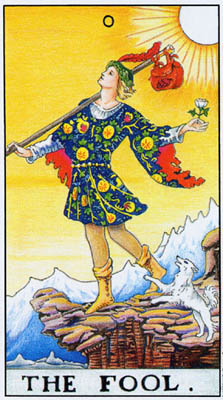 | 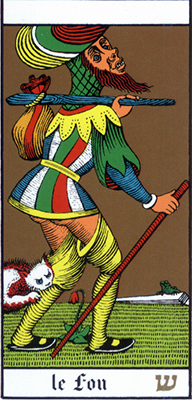 |
|---|
我们已经审视过「愚人」的面向之一——全然自由之心灵的意象，但我们也可以从另外一面，来探讨「愚人」——进入大阿卡纳原型世界的纵跃。
想像你正要进入一片奇异的幻境。这个世界里有魔法师、上下倒吊的人，还有在明灿的空中跳舞的舞者。你可以从高处一跃而入，或是通过阴暗的洞穴，或是迷宫，甚至可以追逐一只带着怀表的维多利亚时代的兔子，钻进一个兔子窟。无论你选择哪种方式，你都是个傻子。为什么要窥入心灵的深邃世界，当你可以安全地留在工作、居家和家庭的寻常景物中？梅维尔在《白鲸记》中警告他的读者，连一步也不要踏出社会为你铺好的平凡道路——你或许再也回不去了。
然而，对那些愿意冒险一试的人，这种跳跃可以带来喜悦、刺激，还有最后，当这仙境变得可怕多于可喜时，对那些仍有勇气继续前进的人，这跳跃将能带来知识、宁静和解脱。有趣的是，「愚人」的原型在神话中较常出现，在组织化的宗教中反倒少见。体制化的教会鲜少会去鼓励人们超越体制的界限，相反地，教会为我们提供了一个安全的避风港，遮蔽生命的恐惧。神话则直指这些恐惧的核心，而在每种文化中，神话的世界里总会有一个促狭鬼的形象——每当国王和英雄偏离了真理的内在世界时，他就会跳出来又推又戳地提点他们。
在亚瑟王传奇中，梅林不仅仅以魔法师与智者的面貌出现，也时常会恶作剧。他不时乔装出现在亚瑟面前，幻化成小孩、乞丐，或是老农夫。那年轻的国王，已经因他崇高的社会地位而染上了浮夸之气，总是无法认出梅林，直到同伴点出他又上了当。比律法或军事谋略更重要的，是看穿幻象的能力。东方的道家大师也以戏弄门徒而闻名。
「愚人」的原型甚至也表现在真实社会中，那就是「宫廷弄臣」。我们都从《李尔王》中熟知了「傻子」的形象，他们被允许告诉国王其他人都不敢说的真相。如今，我们的喜剧演员和讽刺作家也享有类似的特权。
在许多国家，一年一度的嘉年华会释放了压抑一整年的狂野。性爱较为自由，许多律法暂缓实施，人们乔装改扮，而被选来主持这个节庆的是「愚人之王」。今天，在欧洲及北美，四月一日仍是「愚人节」，是专属于整人把戏和恶作剧的日子。
莱德牌右边的那张牌是奥斯华·沃斯（Oswald Wirth）所设计的「愚人」。这副牌是比韦特牌更早的传统，它将「愚人」的原型描绘为一个古怪可笑的流浪汉。这幅图像有着各式各样的诠释，像是开悟之前的灵魂、进入经验世界的新生儿，以及无秩序的原则等等。心灵导师依莉莎白·海区（Elizabeth Haich）曾对沃斯这幅古怪的愚人形象提出一种有趣的诠释。她将「愚人」放在「审判」和「世界」之间，描述他是一个真正开悟的人在外在世界眼中所见到的样子。因为愚人不遵循他们的规则，也没有他们的弱点，在他们眼中他就成了这副丑陋扭曲的怪样。海区形容「愚人」的脸是张面具，不是他自己戴上的，而是外在世界加诸于他的。最后一张牌「世界」，呈现了同一个开悟的人，只不过是从内在——也就是他自己所见的形象。
在一些早期的塔罗牌中，「愚人」的形象是一个巨大的弄臣，耸立于四周的人群之上。他的标题是「上帝的傻子」，这个词也被用在白痴、无害的疯子，以及严重的癫痫患者身上，这些人正是因为与其余的人群脱了轨，而全都被认为能够接触到某种更高的智慧。
这个原型在现代通俗神话中也留存了下来。由于其富于幻想的素朴本质，漫画书往往比小说更能反映神话的主题。在《蝙蝠侠中，主角最强大的对手叫做「小丑」，他是个没有过去的人物，从没人见过他在扑克牌中和鬼牌的古怪化妆之下的真面目。鬼牌并不是——如我和其他塔罗研究者曾经以为的——从「愚人」衍生而来的，它是纽约一间扑克俱乐部发明的，用来当作「百搭牌」，以增添牌戏的趣味。不过，以宫廷弄臣为基础的鬼牌，的确与「愚人」召唤着相同的原型。蝙蝠侠与「小丑」的对抗，向读者发送了一则明确的讯息：不要反叛社会价值。支持律法与秩序。近年来，漫画杂志把「小丑」描绘成偏向精神错乱，而非刻意犯罪。对社会而言，「愚人」的行径——遵循本能而非规则——就是一种危险的疯狂。
到目前为止，我们都将「愚人」视为「他人」，用他的嘻笑怒骂和疯癫伪装刺激我们不要得意自满。作为「自我」，他则代表了「傻弟妹」的漫长传统。傻弟妹总是被兄姊鄙视，但是最后总能以本能的机智和善良赢得公主或王子的青睐。
奇怪的是，「愚人」作为「自我」的形象，在童话中比神话更常出现。在我们眼中，神话表现着比我们自身更伟大的力量；而比较简单的童话，则容许我们表达自身的愚蠢。
就像童话中的傻弟傻妹总有各种动物帮手陪伴，几乎每一种塔罗牌中的「愚人」也都有个同伴一起上路。韦特牌中是只跳跃的狗，其他的牌里则有猫，甚至鳄鱼。这只动物象征自然的驱力，以及人的动物性自我，全都与发诸本能的心灵和谐一致。神话中的狗往往令人畏惧，例如追逐迷失灵魂的地狱之犬。但这两者事实上是同样的野兽；只是我们的态度改变了。否认我们内在的自我，它就会变得凶猛。顺从它，它就会变得温驯。
韦特的「愚人」拿着一朵白玫瑰。玫瑰象征热情，而白色——传统上代表纯洁的颜色，加上点人拿花的细致手势，暗示这热情已升华至更高的层次。希腊人把爱神艾洛斯（Eros）看成一个爱恶作剧的神，总让最中规中矩的人做出滑稽可笑的举动。但是那些已经表现出自身愚蠢的人，就不会被爱情搞得窘迫失态。希腊人同时也把艾洛斯形容成（以其他形式出现时）为宇宙注入生气的力量。
「愚人」背后的包袱装载着他的经验。他并没有抛弃它们，他并非愚蠢无心，只是它们不再控制他，如我们的记忆和旧创太常控制我们的生活那般。袋子上有个老鹰的头——飞升心灵的象征。他高度的本能充盈、转化了所有的经验。老鹰同时也是提升到更高层次的蝎子的象征，也就是说，性欲被提升为灵性。性与灵之连结的概念，将会在「恶魔」牌中再次出现。
像个流浪汉般，「愚人」肩上扛着一根木棒，但这木棒其实是柄魔杖，是力量的象征。「魔法师」和「战车」御者也都拿着魔杖（权杖），但却是很自觉地、强有力地握着它。「愚人」和「世界」舞者却是如此不经意地握着手杖，几乎让人注意不到。有什么能比拥有一根魔杖，却用它来挂包袱更蠢的呢？我们可以想像这样一则童话故事：傻弟弟在路边捡到了一根木棍，浑然不知那是一位巫师遗落的魔杖，因而没像他两个哥哥那样，为了自己的好处去挥舞了魔杖，结果把自己给毁灭了。
「愚人」的魔杖是黑色的；其他人则是白的。对不自觉的愚人而言，灵性力量始终是潜藏的、蓄势待发的，因为他并没有刻意地导引它。我们往往误解了黑色，视它为邪恶，或生命的否定。相反地，黑色意味着一切皆可能，是意识建构任何界限之前的无限生命能量。当我们恐惧黑色或黑暗，我们其实是在恐惧生命本身深藏的无意识源头。
如同鬼牌，「愚人」其实在整副牌中无处不在，和其他的牌互相组合，居中串连。他是为那些静止的图像赋予生命的力量。在大阿卡纳中，他属于任何有着困难转折的地方。因此他的位置在最开端，这是从小阿卡纳的日常世界过渡到原型世界的转折处。「愚人」同时也帮助我们跃过从这一行到下一行之间的鸿沟，亦即，从「战车」到「力量」，从「节制」到「恶魔」。要到达「战车」或「节制」需要极大的努力和勇气，若是没有「愚人」跃入新领域的准备，我们很可能会停止在我们已经成就的境地。
「愚人」也属于那些代表艰困通道的牌，像是「月亮」和「死神」（留意这两张牌中都有蜿蜒的道路），他在那儿激励我们，尽管惧怕，也要继续前进。
在小阿卡纳中，「愚人」与「权杖」牌最有关连——行动、热切，不经考虑的举动。但是它和强调想像力与本能的「圣杯」牌也有所连结。事实上，「愚人」结合了这两个牌组。稍后我们将会看见，这种结合——火与水——代表了转化的道路。
最后要讨论的问题是「愚人」在占卜解读中的位置。我已经谈到过占卜对于更充分理解牌意的重要性。更进一步的是，占卜能帮助我们将牌中的智慧运用到日常生活中。在解牌时，「愚人」对我们诉说着勇气和乐观，激励我们对自身与生命的信念。在艰困的时刻，当我们受到周遭人群的压力，要我们实际一点，「愚人」提醒我们，内在的自我能给我们最佳的指引，告诉我们该如何做。
「愚人」往往象征新的开始，勇敢地跃入某个新的阶段，尤其是当这跳跃是出自某种深心的感觉，而非审慎的计划。
这些是「愚人」牌在正位时的意义，我们也必须考虑「逆位」时的牌义，也就是当我们洗过牌后，翻出来的「愚人」牌是头下脚上倒立时。逆位的牌义在塔罗评注者之间颇有争议。那些只提供公式作为牌义的人，通常就只是倒转这个公式——这种过分简化的做法，使得一些塔罗占卜者干脆扬弃了整个逆位牌义的概念。但是我们也可以将牌的逆转，视为牌的整体意义的深化。一般而言，逆位的牌暗示这张牌的特质受到了阻碍、扭曲，或是被导入另一个方向。
就「愚人」而言，逆位首先意味着未能追随你的直觉。它可以意味着在某个关键时刻没有把握机会，因为恐惧，或是太过依赖计画，以及他人务实的劝告。
「愚人」另一个逆位意义，乍看之下似乎与刚才那个互相抵触。莽撞轻率、狂野不羁、疯狂的计画，这似乎全都跟过分谨慎恰恰相反。然而，它们却都源自于相同的弱点：无法从内在行动。莽撞的人把蓄意或人为的愚蠢加诸于他的生活上，既是因为他不信任无意识作为指引，也是因为他害怕什么也不做。
这第二种逆位的意义暗指出「愚人」的另一个向度——体认到伟大的机会必须只在适当的时机把握。毕竟，许多时候审慎是必要的，也有些时候最好什么也不做。任何神论给我们的基本教导是，没有任何行动或态度是对的或错的，端视它合宜的时机。
随着我们逐渐深入地探讨塔罗，我们将会看见，这个「适当时机」的概念弥漫在所有的牌中，而它，事实上，就是正确使用这些牌的真正关键。在莱德牌中，恰恰落在三行牌正中央的那张牌，也就是「正义」，正是意味一种恰当的反应。
「魔法师」以「恶作剧专家/巫师」的形象，非常直接地从「愚人」之中浮现。如先前提过，梅林实现了这两种角色（连同导师和智者），而许多其他的神话也做了相同的连结。较早的塔罗牌将这第一号大牌描绘成一个变戏法的人，而非魔法师，或者甚至是一位向空中投掷彩球的杂耍表演者。查尔斯·威廉斯（CharlesWilliams）则将他描写成一个抛掷日月星辰的杂耍者。
在大多数现代的塔罗牌中，这张大牌都沿袭着韦特所构思的巫师形象，高举魔杖，将精神的力量——最具创造力的生命能量形式——导入实相界。他小心地握着魔杖，对于「愚人」如此轻盈地拎在肩上的灵性旋量，他有着充分的觉知。因此，魔法师——作为大阿卡纳正式的起点——代表着意识、行动，以及创造力。他象征「显化」的概念，也就是从生命的可能性中造出实物。于是，我们看见了小阿卡纳的四种象征物，摆放在他面前的法坛上。他不仅运用物质世界进行魔法的操作（这四种标志全都是巫师在魔法仪式中使用的法器），同时他赋予了生命意义和方向，可以说也是在创造着世界。
魔法师四周围绕着花朵，提醒我们在生活中感受到的情感与创造的力量，必须被落实在物质的实相中，我们才能从其中获得价值。除非我们把潜能化为现实，否则它们就不算是真的存在。
「太初，上帝创造天地。」《圣经》开始于圣灵降临到物质实相界的那一刻。对我们而言，在物质世界中，在那个时刻之前我们什么也没法谈。在塔罗与希伯来字母的联系中，「愚人」往往分配到第一个字母「Aleph」。（Aleph并不发音；它是母音无声的载体，因此象征空无。它是「十戒」的第一个字母。）这就把第二个希伯来字母「Beth」——第一个真正有发音的字母——归给了「魔法师」。「Beth」是《创世记》的第一个字母。
请看韦特牌的「魔法师」图像。他并没有在施咒，也并非在召唤恶灵。他只是站在那儿，一手举向天空，一手指向绿地。他就像是一支避雷针，借着向灵能开敞自己，他将它导引下来，进入自己身上，然后那只朝下的手，就像埋在地里的避雷针，又将这能量导入大地，导入实相界。
我们在《圣经》中、其他宗教文献以及现代宗教经验中，看见过许多「圣灵降临」的记载。灵恩派教会（Pentecostal churches）的信徒会说「方言」，会在布道会上放声哭叫，并在地板上打滚。分施圣体的教士将自身视为圣灵的「器皿」或管道。但是我们也可以在简单得多、非宗教的情境中见到这种经验。人们在运动赛事中，兴奋得浑身颤抖。「我兴奋得快要爆炸了!」在新恋情或新事业刚展开时，我们会感到一股力量充溢全身。
有时你会看见人们在某个人生的重要阶段开始时，不断上下叩着双腿，几乎要从椅子里蹦跳起来，充满了某种似乎无法释放的能量。还有作家和艺术家，当他们创作顺利时，会觉得自己几乎像是某种灵能般力量的被动管道。而「灵感」（inspiration）这个词原本的意思是「被神圣的气息充满」，与「灵」（spirit）衍生自同样的字根。
请留意上述的例子，除了教士和艺术家外，全都被某种狂热所掌控。神灵附体的教徒和足球场上快要「爆炸」的青少年，同样都觉得自己的身体被某种太过强大的力量淹没。这种能量的涌动一点也不温和，几乎会令人痛苦。陷入宗教狂热的人会又叫又跳，就是为了释放某种无法承受的能量。
充塞于宇宙间的生命能，既不温和也不亲善。它必须被释放、被落实在某种实在的东西上，因为我们的身体，我们的自我，并不是要来容纳它的，而只是将它传导出去。因上此，艺术家并不会像其他人那样陷入身体的癫狂，因为他将那能量释放到作品之中。相彷地，教士则将那力量导人麵包和酒之中。
当作为能量的管道时，我们运作得最好。除非我们追随「女祭司」的道路，从俗世间抽离出来，当我们在创造或是积极活跃时，我们活得最为淋漓尽致。「创造」并不单指艺术，而是制作出我们自身之外，某种真实而有价值的事物的任何活动。
许多人是如此鲜少体验到充满力量的感觉，他们会试图从抓住这种感受。借着什么也不做，他们希望能留住那神奇的时刻。但是我们只有借由不断地释放它，才能真正掌握我们生命中的能量。透过创造力的释启，我们敞开自己，去接收更多的能量流。然而，如果试图抓住它，我们便阻塞了通道，而那力量的感觉——其实就是生命本身——便在我们之中枯萎了。足球场上的球迷，甚至神灵附体的信徒，将会发现他们的兴奋在引发它的事件终止后就消失了。但是工艺家或科学家或教师——或者，塔罗占卜者——将会发现，他们越是将这能量释放到物质现实中，这力量便会与时俱增。
当我们看着「魔法师」，我们当中那些在生活中感到有所欠缺或平淡乏味的人，将会被举向天空的魔杖所吸引。但是真正的魔法是在那根指向大地的手指上。创造的能力给了他「魔法师」的称号，他的形象不只源自于恶作剧专家兼巫师，同时也来自原型的英雄。在我们的文化中那会是普罗米修斯，他把天火带给了羸弱饥寒的人类。
在西方，我们倾向于把巫师看成操控者。他们学习秘术，或是与撒旦做交易，以求获取个人的力量。这种有几分堕落的形象，一部分来自巫师本身，因为他们会施法术去寻找埋藏的宝藏，但同时也来自基督教会，他们将魔法师视为竞争者，因为他们直接与灵界打交道，而不透过官方的教士阶层。塔罗和所有的神秘学术在某种意义上是深具革命性的，因为它们教导直接的救赎——在现世，透过你自身的努力。
我们可以透过「萨满」（shaman）或称巫医——的形象得到一个不一样的魔法师的概念。由于不曾受到阶级组织之教会的驱逐，萨满并没有被孤立于社群之外。他们的角色是治疗者、导师，以及死后灵魂的引领者。如同巫师，萨满研究、学习许多复杂的技术。他们的魔法语汇往往比周遭人群的日常语汇要广泛得多。然而，他们所有的训练都并非用来操控灵能或取得个人的利益。相反地，萨满只寻求成为一个妥善的管道，既是为了他自己，好让他不致被摧毁，也是为了社群，好让他更能服务人们。他知晓在他出神时将会进入他体内的强大力量，而他要确定它不会毁灭他，致使他对周遭的人群毫无用处。
如同巫师，萨满将他的意志发展至某种程度，能够导引充溢在他体内的灵能火焰。在此同时他保持开放，允许他的小我消融在灵能的直接龚击之下。而西方的巫师作法时要站在魔法圈之内，以确保恶灵不能侵犯他们，这点出了我们文化的某些特性。
我们可以将萨满的态度应用到我们对整副塔罗牌的运用上。我们研究这些牌，学习象征的语言，甚至特定的公式，都是为了替它们在我们心中激起的感觉找出一个方向。但是我们一定不要忘记，真正的魔法存在于图像本身，而非诠释之中。
「魔法师」在占卜上的意义衍生自他的双手，一是接收能量的手一是导引它的手。这张牌首先意味着对你生命中的力量、对占据你身心的灵能，或单纯的兴奋的一种觉知。它也可以意味——视牌的位置和你对它的反应——他人的力量影响着你。如同「愚人」，这张牌代表开始，但是这里是确实的起步。它可以意味激发你展开某种新计画或人生新阶段的灵感，也可能是支持你承担完成目标所需的辛勤工作的兴奋感。对许多人而言，「魔法师」可以代表人贯穿他们人生的创造力，成为一种强有力的个人象征。
其次，「魔法师」代表意志力；经过统合并导向目标的意志。它意味拥有强大的力量，因为你所有的能量都被导引到一个特定的方向。那些似乎总能得到他们人生欲求的人，往往是那些就是知道自己要什么、并能导引自身能量的人。「魔法师」教导我们，意志力与成功都来自于意识到人人都可汲取的力量。大多数人鲜少行动，而只是反应，从一个经验被推撞到下一个。去行动就是去导引你的力量，透过意志，朝向你要它去的地方。
逆位的「魔法师」意味着，能量的顺畅流动在某方面受到了扰乱或阻塞。它可能意味某种软弱、缺乏意志力或目标的混淆，导致无法做任何事。力量还是在那儿，但我们无法触及它。这张牌逆位时可以意味懒散昏沉的冷漠，而这也是忧郁症的特征。
这张逆位的大牌也可以意指滥用的权力，某人运用他非常强烈的性格，在他人身上施展毁灭性的影响力。这最直接的例子当然是「黑魔法」的心灵侵略。
最后，逆位的「魔法师」代表精神的不安、幻觉、恐惧，特别是对发疯、发狂的恐惧。当能量或灵能进入某人，而他却不知该如何将它引入某种外在的实相时，这种问题就可能发生。如果我们不将闪电导入地下，它便会困在我们体内，成为焦虑或幻觉，压迫着我们的觉知。任何曾经歷过极度恐慌的人，都知道那种激烈的精神焦虑是一种非常肉体的经验，是种身体失控的感觉，就像是一把失去控制的火。「恐慌」（panic）这个字的本意是「被牧羊神潘（Pan）附身」，而「潘」本身就是魔法力量的象征。
再想想避雷针。它不仅仅吸引闪电，还会将它引入土中。若是没有连接到大地，闪电可能会烧喷房屋。
好几位作者曾经谈到萨满传统与西方称为「精神分裂」的现象之间的关联。萨满往往不是被选出来的，而是被发现的。在我们的文化中，如果一位年轻人经验到幻象，或是可怕的幻觉，我们不知道该拿这些经验怎么办，只会试图以药物或自我控制消除它们。但是在别的文化中，这样的人会被送去接受训练。这并不是说在古老的文化中疯狂并不存在，或是不会被辨识出来。而是说，这训练的用意在于透过将这经验导入建设性的方向而防止疯狂。
入门的学徒透过追随合格的萨满和种种具体法门（如禁食等），学习如何理解、建构，最后导引这些灵视的经验，用之于社群的服务。逆位的「魔法师」不应被放逐或禁锢，而应该找到方法，让他转为正立。
比尔·巴特勒（Bill Butler），在他的《TheDefinitiveTarot》一书中，曾讨论到这个女性原型在歷史及传说上的源头。在整个中世纪，始终流传着一名女子曾被选为教宗的故事。这位传说中的「琼安教宗」（PopeJoan许多年来女扮男装，在教会阶级体系中层层攀升，登上最高位，最后却在一场复活节庆典中死于分娩。
琼安教宗很可能只是个传说；不过威斯康提女教宗却是真有其人。十三世纪末，一个称为「古列尔迈」（Guglielmites）教派的义大利团体，相信他们的创始人「波希粹亚的古列尔玛」（GuglielmaofBohemia）——她在一二八一年过世——将会在一三00年复活，展开一段以女性为教宗的新时代。他们预先推选了一位名叫曼菲达·威斯康提（ManfredaYisconti）的女子作为首任的女教宗。教会在新时代预计来临的一三00年壮曼菲圈修女烧死在火刑柱上，手段鲜明地终结了此一异端。大约一百五十年后，同一个威斯康提家族委託绘制了第一副我们所知的塔罗牌。在这些末经编号、命名的大阿卡纳牌中，出现了一幅后世称之为「女教皇」的女子图像。
这个名称一直延续到十八世纪，直到安东·古德杰伯林——他相信塔罗的起源是古埃及的爱西斯（Isis）宗教——将这名称改为「女祭司」。今天这两个名称都存在（连同「戴面纱的爱西斯」），而韦特牌的图像更是直接衍生自爱西斯女神的女祭司富含象征意义的服装，尤其是那代表三种月相（新月、防月、满月）的头冠。
「琼安教宗」的传说以及曼菲达·威斯康提并不仅只是歷史上奇异的特例。它们示现了中世纪的一种重要的社会发展：将女性和阴柔原则重新引进宗教和宇宙观中。连结于男性角色的意象和概念，好几世纪以来一直支铺着基督教和犹太救。因此，对于由教士和犹太祭司（拉比）所呈现的宗教，以及他们对罪恶、审判与惩罚的强调，一般人的感受是遥远、严酷，无法亲近的。他们渴望慈悲与爱的特质，而他们将这些特质等同于女性。就像在父亲的疏远严厉下庇护孩子的母亲，一位女性的神祗应当能在父神铁面无私的审判下，为可怜的罪人居间调停。
有趣的是，在许多方面，教会正是将耶稣基督——作为圣子一视为这个引进爱与募悯的角色。不过，人们还是要求一位女性。即使是基督教会作为「母亲教会」的概念还是不够。最后，教会做了让步，将圣母玛丽亚提升至几乎与基督本人同等的地位。
许多作者与学者相信，玛丽亚地位的提升，以及教士们长裙的服装，源自于教会渴茎同化早在基督教之前，就持续存在的女神信仰。如果这是事实，与其说这是一种文化的保存，更大的因素是女性原型的力量始终留驻人心，并在压制下取得部分的胜利。
在犹太文化中，由拉比主导的官方宗教设法抗拒了任何颠覆性的女性主义。然而，人们的需求，却在另一个领域发生了影响：喀巴拉的悠长便统。喀巴拉学者从犹太教经典《塔木德经》（Talmud）借用了「般凯纳」（shekinah）这个词——意思是上帝的荣光显现在物质世界；并将它的意义修改为上帝的灵（anima），或是女性的一面。喀巴拉学者同时也修改了亚当的概念，将他描述为原本是雌雄同体的。夏娃从亚当的分离，甚至是「静凯纳」从上帝的分离，就变成了隔离与放逐的意象，有时与亚当和不服从之罪连结在一起。
到目前为止，我们看到的都是女性神话人物身上慈爱的母性特质。然而，在歷史上，女性神祗一向也展现着莘、隐密的一面。要引进女性原则，就必须引进这整个原型。塔罗将女性原型划分到两张大牌中，而将站爱的特质分派给第二张（三号牌），「皇后」牌。「女祭司」本身则代表了女性较深幽、较微妙的面向那幽暗、神秘和隐密的一面。就此而言，她连结了圣母玛丽亚处女的一面，以及「篆凯纳」纯洁女儿的一面（她被描绘成同时集母亲、妻子和女儿于一身）。
我们应该了解，这些女性特质的分派，大都是出自男人和男性的概念。吵巴拉学者、神秘学家，以及塔罗牌的设计者，全都不赞同男女被分离为殊异的类别，并教导「合一」为最终的目标。这在塔罗的「世界舞者」中表露无查。他们是走在体制化宗教的前面，后者甚至曾盎论女性究竟有没有灵魂。尽管如此，男人还是划分了类别。对男性而言，女人永远显得神秘、奇异，而如果安全地处于母亲的角色，则是慈爱而悲悯的。在男人看来，女人似乎是异类，想法比较不可捉摸，也较不理性。在我们的时代，不断有小说和电影描述单纯的男人被狡铃世故的女子操控。
月经周期与月圆周期大致等长的事实，将女性与那遥远的银色天体连结起来。月经本身——生殖器大量流血，却不会丧命——干百年来都让男性感到恐惧。即使在今天，迷信的犹太人仍然相信，只要一滴经血就能让植物枯死。骇人的生育之谜，更进一步将女性与黑暗的概念联系起来。在子宫温暖潮湿的黑暗中，胚胎成长，灵魂进入其中。母性将女人与大地连结，而此处也是由黑暗所支配。种子埋在泥土中，经过黑暗死寂的冬天，然后在温暖而抚点人心的阳光下冒出头来，成为食物。而太阳，在许多文化中，则被认为是男性的。
如同太阳的光芒穿透大地，男性的器官穿透女性，在她神秘的子宫内留下种子。我们不难看出，男性为何视他们自身为主动的，而女性则是被动而神秘的。人们时常将被动与「负面」连结，或者说是较差或软咬的。但是被动自有其力量。它给了心灵运作的机会。只知道行动的人，从来没有机会去省思，思考那行动教了他们什么。在较深的意义上，「被动」容许「无意识」浮现出来。唯有透过从外在谁绊中抽离，我们才能充许灵视与心灵力量的内在声音对我们说话。许多人就是为了要村避这种内在的声音，才始终不从行动与活动中休息。我们的社会完全奠基于外在的成就上，对「无意识」塔养出一种恐惧感，然而没有它的智自，我们将永远无法彻底了解自我，或是这个世界。
「女祭司」代表着这所有的特质：黑暗、神秘、心灵驱力、月亮搅动「无意识」的力量、被动，以及由此而生的智慧。这种智慧无法以理性的言词表达；，试图如此做便会立刻限制、窄化，并扭曲了它。太多数人都曾在某个时刻，感觉自己以这样一种深幽的方式了解了某些事情，但却无法解释它。神话便是深层心灵感受的隐喻；然而神话本身，如同神学家和人类学家所给予的解释，也都只是象征。「女祭司」则意味着最深层的内在智慧。
她端坐于两柱之前，那圆柱既代表爱西斯的神殿，也可以是耶路撒冷的古希伯来神殿——上帝在地上的居所，换句话说，也就是「胥凯纳」的家。一面纱幕悬垂于两柱之间，表示我们被阻挡在外，不得进入这智慧的殿堂。这个被帷幕遮蔽的神殿（或称「圣所」）的意象，出现在许多宗教中。事实上，「篆凯纳」据说就是居住在神殿内用帘幕钱住的圣柜中。
且说，大多数人以为，我们由于某种原因被禁止通过「女祭司」的双柱。事实上，我们只是不知道该如何通过。要进入帷幕之后，就是要有意识地了解「无意识」的非理性智慧。这就是整个大阿卡纳的目标。仔细看看史密斯绘制的图像。你可以透过帷幕和柱子的空隙，看见后面是什么。是水。没有伟大的神殿或复杂的象征，只是一泓池水，一行远山，还有天空。那池水象征「无意识」，以及潜藏其中的真理。水面平静无波，它最最幽深处的秘密，隐藏在平滑的水面下。对我们大多数人而言，在多数时候，骚动的无意识都隐藏在明意识平静的表层下。我们无法进入神殿，是因为我们不知道如何进入自己的内心；因此我们必须走过大阿卡纳，直到我们来到「星星」和「月亮」，在那儿，我们终于可以搅动哟潭之水，带着智慧返回「太阳」明意识的光中。
这里的神殿首次带出了双柱的意象，以及二元性与对立的主题。这个意钊在整个大阿卡纳中一再地出现，有些在明显的地方，像是「教皇」牌中教堂的殿柱，或是「月亮」牌中的双塔（也就是「女祭司」中的双柱从另一面看去的景象），但也有些是以比较微妙的方式出现，像是「战车」牌中的两头人面狮身兽，或是「恋人」牌中的那对男女。最后，「审判」牌中，小孩在一男一女之间甦醒而起，以及「世界」牌中，那舞者手握两支魔杖，借由统合内在的奥秘与外在的觉知化解了二元对立。
双柱上错刻的字母「B」和「J」代表「Boaz」和「Jakin」，这是耶路撒冷神殿中两根主柱的名称。显然，黑暗的「Boaz」代表被动与奥秘，而「Jakin」则象征行动与意识。不过，请留意，那铭刻的字母传达着「逆转」的意涵：「B」是白色的，而「J」则是黑色。如同太极符号中的两点，这两个字母暗示二元对立只是假名，每个极端都藏含着埋藏其中的另一端。
在她的膝上，女祭司握着一卷经文，标示着「Tora」。这意指犹太的法典：《摩西五书，在英文中通常拼成「Torah」。这种特殊的拼法让这个字得以成为「Taro」（塔罗）的变体。作为一切喀巴拉冥想的终极主题（如同基督的受难之于基督教神秘传统），《摩西五书》蕴含着极大的神秘学意义。喀巴拉学者相信，每周六早晨在犹太教堂诵读的《摩西五书》仅只是一种「代表」，是真正的《摩西五书）》——它是上帝活生生的话语，存在于宇宙之前，其中包含着一切真正的存有——的某种影子。「女奈司」手握的「Tora」是卷起来的，而且部分掩藏在她的袍子里，因此意味着一种更高的知识，对只有较低理解力的我们封闭着。我们也可以将之描述为只在神话与梦境的扭曲形式中对我们开启的心灵实相。
稍早我们谈到过，「愚人」会在转变的关键时刻出现，推动我们继续了前进。「女祭司」与「皇后」之间的鸿沟就是这样一个时刻。我们太容易被这第二号大牌的幽暗冷静所诱惑，即使我们从未真正参透它的奥秘。刚刚展开灵性修持的人，往往偏好停留在灵幻的层面，而不愿经歷向前迈进所需的缓慢、辛苦的工作。许多处境较为平常的人，往往感到生活太过令人和纤息、太过严苛而漫无边际，令他们难以参与。「女祭司」的消极对我们的最佳作用，是平衡「魔法师」一切向外看的态度，但是许多人发现这修动的一面极具吸引力，它代表对人生挣扎的答案，一个安静的避静所，取代当我们开放地与他人互动时严酷两人的自我暴露。
但是人类的心灵并不是这样运作的。它需要热情，需要与世界连结。如果我们无法穿透帷幕，那神殿对我们始终是个空洞的地方，了无意义。试图过着全然消极生活的人，将会变得沮丧消沉，越来越陷沸在冷漠与恐惧的循环中。
几乎所有的月亮女神信仰，都有着描述这女神免距的一面的神话。罗马诗人欧维德（Ovid）就讲述过艾克提恩（Actaeon）的故事。艾克提恩是一位猎人，因此理所当然是个属于行动世界的人物。有一天他碰巧看见一条溪流，决定溯流而上，找到它的源头（再一次，水作为「无意识」的象徽）。于是，他和他的猎犬以及其他猎人分散了，而当他来到水源，远离了行动的世界，他看见了一群少女。在少女之间，是处女月神黛安娜，赤裸裸地站在那儿。现在，如果艾克提恩立刻折返外面的世界，他会发现自己的人生丰富了许多。然而，他却容许自己着迷于焦安娜的美；他停留了太久，而当那女神发现一个男人看见了自己的裸体（对照「女祭司」的层层衣衫和「星星」少女的赤裸），就将他变成了一头雄鹿。当他惊恐万分地往回跑时，竟被他自己的猎犬撕成了碎片。
在这儿，「愚人」进来了（别忘了愚人的那条狗，在他身旁跳跃着），提醒我们轻盈地舞蹈，跃离这两种愿景：「魔法师」以及「女祭司」，直到我们真的准备好能统合他们。
「女祭司」在占卜上的意义，首先是关于生命中的一种奥秘咸，包括我们不知道的、以及无法知道的事物。它暗示一种丫暗的感受，有时是指我们生命中某个恐惧的区域，但其中也有着美。一段消极沉潜的时期能让内在的事物了醒，从而丰富我们的生命。
作为秘密知识的标记，这张大牌指出，直觉地知道某个重大问题的答案，只要我们能够有意识地将它表达出来。更具体地，这张牌可以意指预见的能力，以及超自然和通灵的力量，像是灵视的能力。
在最积极的面向中，「女祭司」意指我们生命中的潜能——非常强大的可能性，尽管我们能感觉到它们是可能的，但却尚未实现的潜力。我们必须权之以行动，否则这潜力将永远不会被实现。
尽管蕴含深刻的智慧，这张牌有时也可能传递着负面的意义。如同多数的大阿卡纳牌，「女祭司」的价值乃视其他牌的前后脉络而定。就负面而言，这张大牌暗示在错误的时刻保持消极，或是持续了太久，导致软弱，以及对人生和他人的恐惧。它指出一个有着强烈直觉、却无法将研觉转化为行动的人，或是一个害怕对他人上敌开心胸的人。在特定的占卜中，这张牌的意义是好是坏，取决于周围其他的牌，当然，还有占卜者的直觉（我们每次上牌时都召唤着「女祭司」）。常常，两种意义都掺杂其中。人类并非只有一面。
「女祭司」是一种原型，是存有的某个面向之纯粹专一的画面。当我们逆转它，便是带信了它所欠缺的特质。这张牌逆位时代表一种翻转，转向热情，转向对生命及他人的深刻投入，在一切方方面面，情感上、性爱上，以及竞争上。然而，钟摆有可能荡得太远，这时，这张牌的逆位可以象征那最最宝贵的知识——我们的内在自我感——的失落。
大阿卡纳的第一列带领我们走过「成熟」的过程。它示现了一个人成长的各个阶段，从小孩——这时对他而言，母亲是完全慈爱、而父亲则是完全权威的——到受教育，直到他成为一个独立的人格。同时，这些牌也在探讨一种广大得多的发展，个人的发展是它的一个缩影。它们描述了人类社会的创生，从存有的原型与自然的混沌能量中成形。
当「魔法师」和「女祭司」为整副牌设下原则，这些原则也十分明确地适用于这第一行牌。在对立的两揣之间移动，是物质世界的基本节奏。在自然界，没有任何东西是绝对存在的。引用着名奇幻小说家娥苏拉·勒瑰恩（UrsulaLeGuin）（译注：「地海传说」系列作者）的话：「光明是黑暗的左手，而黑暗是光明的右手。」当我们从这两种原则移动到「皇后」时，我们看见对立之物在自然界中混合在一起，创造出物质宇宙的实相。
这一行中间的三张牌是一组。它们为我们展现了自然、社会与教会的三元组。它们同时也代表母亲、父亲和教育。在古埃及，神格往往被视为三位一体，神明因时因地而异，但祁们通常是一女两男，而那位女性往往被视为最崇高的。在塔罗中，「皇后」牌所象征的自然是底层的实相，而她的伴侣——由「皇帝」及「教皇」所象征，则是人类的建构。
这一行最后的两张牌代表个人的问题，爱与悲伤，臣服与意志。我们每一个人在某个时刻都必须学习将自身与外在世界区隔开来。在此之前，人格还只停留在父母和社会的一种模煳而无定形的创造物。始终未能做出此种切割的人，将无法体验完整的人生。对多数人而言，这种与父母切割的媒介，是青春期性欲的浮现（佛洛伊德派，或许还有神秘学者，会说这是「再浮现」）。孩子会在身体趋向成熟的同时，在想法、习惯和服装上反站父母，并非偶然。
个人性的发展只是成长的一部分。每个人都必须找到他的个人目标与成就。与此同时，他将或迟或早要面对悲伤、疾病，以及被生老病死主宰的人生中全面的软弱。只有当我们对人类的外在生活有了充分的了解，我们才能期玄向内探求更深的实相。
（图四）
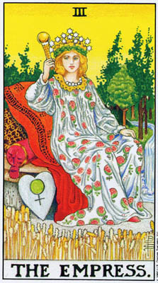
上一章我们谈到过，「皇后」代表着女性原型中较为温良、较可亲近的面向。她是母性、爱、温柔。同时她也象征着性爱、情咸，以及作为主妇的女性。母性与性爱都是衍生自非智性的、生命中基本的情感。是激情而非思想。「女祭司」代表女性原型中精神的一面——深邃的直觉了悟。「皇后」则是纯粹的情感。
如同「狡获女子」的典型，我们看见她在我们的电影和小说中被反映为令人恼怒的女性，既让人受挫又让人欢愉，因为她的思考过程并不依循理性的发展。许多女性觉得这种形象很侮辱人，部分是因为它代表着被我们的父权社会判定为负面的价值及取向，部分则是由于人们误以为女性和男性应该亲身表现这些原型的概念。但是这些社会形象还有另一方面的师限。它们十分琐碎浅薄。「皇司」，连同她在神话中对应的人物，像是希腊的爱甘罗和黛蒂（Aphrodite）、巴比伦的伊斯塔（Ishtar），或海地的厄克莉（Erzulie），代表着某种非常宏大的东西。她们象征着激情的生命取向。她们以不受抑制的情感取予经验。
直到我们学习去完整地体验外在世界，我们无法期去超越它。因此开悟的第一步是感官的觉受。唯有透过激情，我们才能感受到——从内在深处而非透过智性的辩论——充满一切存有的灵性。
许多人将宗教视为自然世界的某种替代，他们认为后者总有些不纯洁或污浊。虽然我们的文化传统助长着这种二元性，但它事实上是个幻象，而以此种进避的动机而亲近灵修的人，多半无法成就太高的了悟。色身，以及自然世界，是必须被整合而非否定的实相。
在佛教神话中，我们看见诸神诱导悉达多太子的父亲净饭王提供他兄子一切的感官满足。净饭王相信，这些享乐将能防止他的儿子弃绝俗世，成为佛陀。这个计谋适得其反，因为唯有在彻底体验感官孚乐之后，王子才能将它抛诸脑后。在弃绝红尘后，悉达多成为苦行者——另一个极喘。但是只有在他扬弃了两个极端，寻得中道之后，方才悟道。于是，我们可以在双手轻盈地握着「魔法师」和「女祭司」的「世界舞者」身上看见如来。
作为「1」与「2」的结合，数字「3」意味着综合与和诣。自然世说将「魔法师」与「女祭司」结合在生与死、光与暗的一种不可分割的统合中。人情感的概念也将「魔法师」积极主动的原型，与「女祭司」本能直觉的原型连结了起来。
同时请思考创造的过程。「魔法师」象征生命的能量，「女祭司」是未来发展的可能性，「皇后」的现实界则是这二者结合的产物。天文学家卡尔·沙根（CarlSagan）论证，地球上的生命可能起始于闪电击中太初的海洋。于是我们再次看见，从「魔法师」的闪电击中「女祭司」的水，目然世界由此生发。
韦特一史密斯的「皇后」牌中所使用的象征反映着自然的概念，展现它所有的力量与荣光。皇后本人圆润丰腴而富感官之美，象征着热情。她的盾牌是心形的，上头绘着罗马版的爱神维纳斯的标记。整个还古世界都是由女神所主宰的，如希腊的狄米特（Demeter）、地中海东部的亚斯塔帝（Astarte），以及埃及的努特（Nut）等，直到父系社会的侵略者将她贬为妻子的角色（最后以一种完全男性的神格概念将她彻底排除）。皇后脚下长着一片麦田；这女神主掌农业，在西北欧被称巷「穀物女神」。她曙着由九颗珍珠串成的项鍊，代表九个行星，而她的头冠上有十二颗星星，象征黄道的十二星座。总之，她以宇宙作为首饰。这「伟大的母亲」不是自然的形相，而是生命的潜在原则。那些星星有六个角，是一个比它现今的用法（犹太传统中的一种社会标志）古老得多的象征。六角星结合了两个三角形；向上的一个象征火，向下的是水。再一次，「皇后」将一号和二号牌结合在一个新的实相中。
一条河流从她身后的树丛间奔流过来，消失在她的座榻之下。这条河象征生命力，像一道巨大的水流般，在现实界的一切分离形相底下流动，只有当我们将自己交给未经约束的热情时，才能最充分地体验它。在内心深处，我们可以感觉到河水的舍律，带领我们穿越经验向前行，直到——随着死亡——我们个人的生命回归到存有之海中。
这条河同时也象征变化与稳定的统合。河中的水永不相同，但它仍然是那条河，有着它独特的属性。人类每天都在改变，我们体内的细胞会死去，新的细胞取而代之，但我们总依然是我们。
由「1」与「2」组合的产物一数字「3」——还带出了另一个概念。正如数字「1」和「2」明确地代表着男性与女性，数字3」也代表着两者结合而产生的「小孩」。孩子生而为自然的创造物，末曾受到自我与人格的率众，没有压抑或标籤，直接地体验着插员。只有当我们年贡渐长，才学着去在自身与生命之间设下藩离。塔罗的目标之一，就是让我们返回那种直接体验周遭世界的自然状态。
但如果说「皇后」牌象征着孩子，她同时也代表着母亲。母性是生命在自然界得以延续的基本凭借，而由于母亲与孩子的肉体联结是如此地直接，母爱，在它最强大的形式中，是纯粹的情感，是未经理智或道德的考量就给出的（这当然是一种理想，而在现实中，这样的爱可能更常来自于男性的家长，或者，可悲地，根本不存在）。从古到今，人们都将母性与自然画上等号，因此将大地称为「伟大母亲」（Great Mother）的说法遍及于全世界。即使在今天，我们仍会含混地说起「自然母亲」（Mother Nature）。
在占卜时，「皇后」牌代表某个激情的时刻，一段透过感情与享乐（而非思考）来对待生命的时期。这种激情是情欲或母性的，无论哪一种，它都被深刻地体验到，在合宣的情境中，能够带来极大的满足。在错误的情境中，当分析为必要时，「「皇后」可以意指一种硕固的情绪化的态度，拒绝去考量事实。她也可能暗示另一种问题：当需要克制时，自我耽溺的享乐不过，她通常是指透过情感所获得的满足，其至领悟。牌的逆位意义也各有其正面和负面的背景脉络。一方面，它可以意味从情感的抽离，若非拒绝你的情感，就是试图压抑你的欲望，尤其是性欲。然而，正如「女祭司」牌在逆位时加入了原本欠缺的元素：「投入」；逆位的皇后」可以意味一种新的理性觉察，尤其是借由冷静地周详思考以解决某个复杂的情感问题。
在其正位及逆位的意义上，二号及三号牌都像镜子般反映着彼此。有时在同一次占卜中，两张牌都会倒立着出现。这意味着此人把情襄和直觉的心理面向都表达了，但却是以负面的方式。理性是出自对过度情感投入的反动，而孤立与冷漠的感觉又引发了激情。如果女神的这两个面向都能被正向地体验，此人将能达到一种更加稳定而有益的平衡。
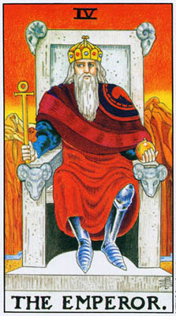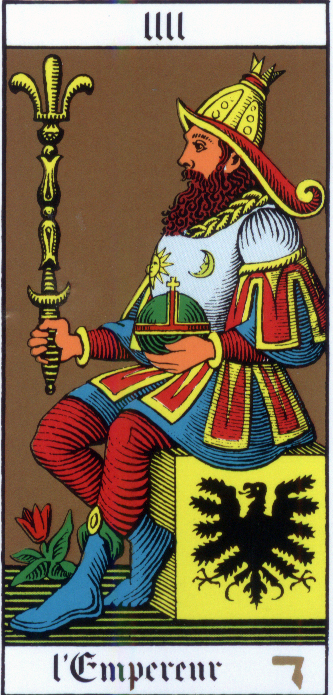
对每个孩子而言，他的父母都是原型。不仅只是母亲冬亲，而是「母亲」和「父亲」。因为母亲给予我们生命，喂养我们，庇护我们，我们倾向将她们视为爱与慈悲的人物（如果她们表现得严酷或冷淡，我们就会非常痛苦）。但是「父亲」，尤其是在传统时代，当性别的角色更严格时，则显得比较羽远，因此是一个严厉的人物。是父亲拥有权威，因而成为裁判者，是父亲施予惩罚（而母亲则介入和干预），是父亲教导我们社会的规则，继而要求服从。对孩子而言，父亲在许多方面跟社会整体是分不开来的，正如母亲就是自然本身。对许多人而言，长大成人的痛苦时刻之一就是当他们发现了自己父母受限的人性。在佛洛伊德的心理发展架构中，父亲与社会的规范是直接连结起来的。婴儿的心理需要持续的满足，尤其是对食物以及来自母亲的肉体偷悦的欲望（佛洛伊德论者或许会声称，幼儿渴问与母亲真正的交媾，但即使他只是寻求贴近母亲身体的快乐，这情况也同样适用）。由于介入了幼儿与母亲的关系，父亲激起孩子的敌意，而对尚未受到压抑的婴儿而言，这意味着想要完全去除这种干预的欲望。然而，这种想要毁灭父亲的欲望，是无法被实现、甚至无法被承认的，于是他的心灵，为了要化解这种可怕的困境，便将自身与「父亲」的形象认同，创造出一个「超我」（superego），作为「自我」（self）的新向导（取代「原我」〔id〕——那导致此种危机的冲动和欲望）。但这「超我」是采取何种形式呢？恰恰是社会的规范，传统上在父亲的导引下学习的规则。
塔罗的三号及四号大阿卡纳牌，代表着原型角色中的父母亲。但是正如「皇后」象征着自然世界，「皇帝」也蕴含着较为宽广的意义：与自然「结合」的社会世界。他象征社会的律法，好的和坏的，以及执行这些律法的力量。
在远古时代，当女神还是主宰时，国王履行着一种特殊的功能。新生命唯有从死亡中才能诞生；因此，每个冬天，女神的祭司会以老王献祭，常常是将他肢解，然后把碎块埋入土中，借此神秘地令土壤变得肥沃。后来，当男性主导的宗教取而代之，国王便成为法律规范的象征，这类仪式在父系社会看来是旧秩序凶残荒诞的昏昧行为，便在其上和牢牢箍上镇压的钳盖。我们在许多神话中都看见了这种剧码（很类似佛洛伊德的「超我」取代了「原我」）；像是巴比伦的民族英雄马尔杜克（Marduk）钉死了蒂亚美特（Tiamat）——创世的原始母亲——因为她生下了怪物。无论我们是否将旧秩序视为野蛮丑恶，或是把新秩序视为文明，「皇帝」象征着社会的抽象概念，取代了自然的直接经验。
在罗马，「律法相对于混乱」的概念被延伸到某种程度，「稳定」——或是，以现代的词汇来说，「法律与秩序」——在这些律法内在的道德性之外，本身便成了美德。在混乱无序的状态中，没有进步可以产生（论者如此说）；坏的法律需要改变，但是首先，法律必须不计一切代价地被遵守。任何其他的态度都只会破坏社会。今天，我们看见这种观点被体现在我们称为「体系」的抽象概念上。罗马人更具体地在「皇帝」的人物形象中看见它，他们将他描述为所有子民的父亲。
在「皇帝」牌最好的面向中，他代表一个公义社会的稳定性，这容许它的成员追求个人的需求与发展。自然世界是混乱无序的，没有某种社会结构，我们每个人可能都得花上一辈子挣扎求生存。社会既能让我们齐心协力地工作，又能让我们从前人的经验中获益。
「稳定」也使灵性的发展成为可能。在许多国家，社会资助着教会（虽然这种安排能否增益灵性是可供争议的）；在某些东方国家，僧人可以无后顾之忧地精进修行，因为俗家人会装满他们的钵。若是没有这种社会习俗，他们就得花时间工作来养活自己。
在它较为负面的面向中，「皇帝」牌代表着不公平律法的力量，在这个社会上「稳定」已凌驾了道德。一旦我们确立，法律与秩序是至高无上的，一个腐败的统治者就会成为一种灾难。但是如果整个体系都是腐败的，只会产生坏的统治者，那么稳定就会成为道德的敌人。「皇帝」此一象征的价值，在很大的程度上是取决于时和地。在一个不公义的社会，「皇帝」的力量将会妨碍，而非促进，个人的发展。许许多多人都曾因为反抗不公义的律法而身陷囹圄。
即使在最佳的情况，「皇帝」仍然有其局限。在「皇后」的随性自然之上，他施加了一层压制的网络。如果我们失去与自身激情的接触，生命将会变得冰冷而荒芜。在莱德牌中，皇帝（见图五a）被画得老迈而僵固，身披铁甲，代表生命被规则严格掌控时的贫瘠。在「皇后」的花园中流得如此奔放的河水，这儿只剩下滑滑细流，几乎无法穿越死气沉沉的沙漠。
这张牌上其他的象征意象反映着它的双重面向。他手握一支古埃及十字架「安卡」（ankh），那是生命的象征，暗示在律法下他掌握着生与死的权力，而在理想上他会善加运用之。四个羊头——牡羊座的象征——装饰着他的宝座，而他的王冠顶端也有一个牡羊座的标记（可惜画得像个螺旋桨）。牡羊象征力量、侵略性和战争，但作为黄道的第一个星座，它同时也意味着春天的新生命，在一个公义社会的稳定之下得以生发。
作为大阿卡纳第一行最中央的一张牌，「皇帝」代表着一个关键的考验。在长大成人的过程中，社会的规范的确是许多人感到最难超越的。我们必须吸纳这些规则，以及我们社会的传统和信仰，然后超越它们，找到个人的行为準则。这并不是指「规则就是要被打破」的态度。那些感到必须挑战所有律法的人，与那些盲目遵从的人同样是被这些律法束缚着。
由于父亲的角色是教导我们可接受的社会行为，滞留在「皇帝」层次的人往往永远无法真正接受他们父亲平凡的人性。他们或许在理性上承认这一点，但它却会困扰、纠缠他们。类似的问题也折磨着那些对于他们，「皇后」始终只是属于母亲的（而非他们自身的）热情与感官性的人。
「皇帝」牌作为社会结构的受限价值，这种概含主要源自于韦特和他的追随者。本篇一开头右手边的那幅图像则示现了另一种传统。这是由保罗·佛斯特·凯斯（Paul Foster Case）设计、洁西·柏恩斯·帕克（Jessie Burms Parke）绘制的「内殿建造者」（Builders of the Adytunm，阅称BOTA）塔罗中的「皇帝」牌。在这儿，「皇帝」象征着灵性知识的总合。他被描绘成侧像（这要比莱德牌中的正面形象常见得多），这将他联系上了喀巴拉传统中上帝的一种形象：「岁月的老者」——一位以侧影端坐的王者（这老者的脸孔永远是看不清的，只有他的王冠底下的一团光芒）。
这位「皇帝」的双臂和双腿形成一个等边三角形，下方是一个十字——炼金术中「火」的符号。这个形象稍后在「吊人」牌中被翻转过来（在韦特及凯斯牌中皆然）。BOTA牌中的「皇帝」坐在一个立方体上，而非王座。这立方体也是一个神秘学的符号，象征着世界和塔罗本身，以及希伯来字母和生命之树的路径。这个象征符号来自这个事实：一个立方体包含十二个边，六个面，三个轴，和当然还有一个中心，加起来是二十二，亦即大阿卡纳、希伯来字母，以及生命树路径的数目。而由于生命之树被认为代表着一切造物，因此立方体也象征着宇宙。
在占卜时，「皇帝」牌（依据莱德牌的图像）意指社会的力量，它的律法，尤其是它执行律法的权威。这张大牌的出现，意味着与法律打交道。再一次，适用好或坏的特质取决于前后牌的脉络。
在较为个人的方面，「皇帝」牌可以暗示某人的生命中一段稳定而有序的时期，可望开启创造性的能量。他也可能是指一个特定的人，这人对于问卜者拥有强大的力量，无论是客观上或情感上的。这常常会是父亲，但也可能是丈夫或情人，尤其是对那些把情人当成父亲的替代，对之说奉自己人生的掌控权的人。我曾看过一些占卜中，「皇帝」牌占有如此压倒性的力量，以致于生命的一切可能性都被遏制，无法实现。
作为代表个人特质的牌，「皇帝」可以意味防卫自身领土的能力，去创造牢固的疆界，并积极地维护它。他象征对待问题时理性主义的取向，着重分析与评估，高过情绪与直觉。
如同逆位的「皇后」，「皇帝」牌逆位时便会带有与正位时互补的特质。他变得——引用韦特的话——「仁慈而富同情心」；是石砾沙漠中的新生命。但是钟摆也可能荡得太远。逆位的「皇帝」可以意味着不成熟，无法做出严酷的决定，也无法贯彻执行。
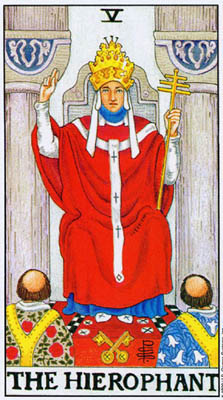
在大多数塔罗牌中，第五号大牌被称为教皇」或「主教」，这些名称以及牌的图像，将它连结上第二号牌「女祭司」——内在真理的原型。在韦特牌中，这张牌的名称被改为大祭司」（TheHierophant）。蚌特写道，他之所以不用「教皇」（Pope），是因为这个名称只代表这张牌整体概念的一个非常特定的例子。「Hierophant」原本是古希腊「堵犹西尼亚秘仪」（Eleusinianmysteries）中大祭司的称呼。韦特描述他的牌是象征教会与教条的「外在道途」，但是他采用了禄仪的语汇，则暗示了另一种诠释。对于那些将塔罗视为神秘传统的字密教义，而非人类模式较为一般性的体现的人，这是较受青睐的一种诠释。在艾和斯特·克劳利（Aleister Crowley）的《托特之书》（Book of Thoth）中，佛瑞姐·哈利斯（Frieda Harris）绘制的「大祭司」图像戏剧化地描绘了这种诠释。此处这张大阿卡纳意指某种秘密教派的入门，像是十九、二十世纪之交十分盛行后来又在英美复甦的各种会社及会所。韦特及克劳利曾经一度同时隶属的「金色黎明会」（TheOrderoftheGoldenDawn），可能便是「Hierophant」作为五号牌名称的源头。（详注：依循塔罗中译惯例，此牌在本书中仍译作「教皇」。）
「外在道途」与「秘密教义」这两种意义，在最粗浅的层面低乎是相互矛盾的。但实质上，它们却非常相似。图中的两位小沙弥，无论是要进入教会，还是某种秘教会社，他们都仍然是在进入某种教义体系，有着一整套信条，是他们在获准入门之前必须学习、接受的。举例来说，天主教的教义问答和「金色黎明」的仪式，当然有着基本上的歧异，然而对两者而言，这张牌都意味着某种教育和传统。因此，如果我们认为大阿卡纳的第一行是在描述人格的发展，那么，在自然世界及社会之后出现的「教皇」牌，便是指此人所属的特定社会中的智识传统，以及他在该传统中所受的教育。
沿用韦特的诠释（特别是想到西方的教皇），我们可以将「教皇」视为「皇帝」的同伴。「教皇」（pope）这个字的原意是人入亲」，和罗马皇帝一样，教皇被视为引领孩子的睿智父亲。他们共同分担对世人的责任，一个提供物质需求，另一个则导引心灵的成长。在但丁所撰写的一篇论文（也是最早倡议政教分离的专论之一）中，他主张这两种职务不可结合在一起，以防彷腐。不过，他从未质疑教会要为我们的灵魂负责的概念。
今天，许多人都不了解教士职司的基本概念。我们的民主时代扬弃了个人与神之间需要一个中介的想法。然而，请注意，「教皇」也可以名征类似「无产阶级专政」、或是其他任何精英份子领导群众到他们自己无法及至的地方。最初，教士的特殊功能是很明显的；他们透过神谕与诸神沟通，而这种过程往往令人恐惧，大多数人十分乐意让他人代劳。当基督教拒绝以这种具体而直接的方式与上帝连结，教士的概念，就像「皇帝」一样，变得较为抽象了。基本上，它仰赖于大多数人其实并不怎么关心上帝的概念。一般人在追求世俗目标、钱财、家庭和政治目的时是最快乐的。然而，有一些人基于禀性，能够很直接地感应到周流于我们整个生命的灵能。他们受到自身内在觉知的召唤，成为教士，能为我们向上帝代言。更重要的是，他们能对我们说话，诠释上帝的律法，好让我们能过着合宜的生活，而最终，当我们死后，能够得到回归上帝怀抱的奖赏。在复活之后，我们自身将能见到上帝，然而，在活着时，我们需要教士的导引。
理论是这么说的啦，但即使我们同意这个原则，在实践上它却往往会月解。人们会因各式各样的理由成为教士——野心、家庭压力……等守一而那些真正受到召唤去跟上帝沟通的人，可能铺没什么天份去和凡人沟通。再者，如同「皇帝」代表的社会机构，「教皇」的宗教机构可以轻易地因为它们被赋予的权威，而变得腐败，以致于教士将自身的权力视为目的本身，奖赏服从，更甚于悟道显然，捍卫教条的职务将会吸引教条主义者。
然而，我们之所以扬弃「教士职司导引」的概念，或许是为了一种更微妙的原因。自从宗教改革以来，一种在西方越来越有力量的理念就是，个人要为自身担负起终极的责任。外在教条的这整个概念，一套在信仰上为众人接受的规则与信条，是建立在这个假设上：大多数人比较喜欢让别人来告诉他们该怎么做、怎么想。这很可能是事实。要真正在自身之内发现神性，你必须经歷一些很不舒服的、与自身心灵的对抗。相彷地，在任何情境都要为自己决定怎么做才合乎道德，可能也得不时经歷选择的痛苦。尽管如此，今天许多人就是无法接受，社会或教会为他们的生命担负终极的责任。
或许，将这张牌诠释为秘密教义的象征，比较适合我们的时代。因为这样一来，这种教义并不会告诉我们该怎么做，而是给我们指引，去开始对自身下功夫。而塔罗，如我们在「魔法师」那儿看到的，就是透过引绝我们在此生获致个人的救赎，而与所有的教会相抗衡。对克劳利而言，祭司牌所代表的入门是一种门径，透过它，个人得以与宇宙合一。入门的形式和教旨会随着每个「世界时代」（worldage）而改变，持续了将近两十年的双鱼座时代即将告终，进入水瓶座的「新时代」，因此教皇」牌也即将改变，随之而变的还有一切严格的人类关系。克劳利曾说，只有未来能够告诉我们新的「入门潮流」将会是什么。但是入门的基本特还，也就是与宇宙的融合，将永远维持不变。
在BOTA版本的「教皇」牌中，教皇脚下那对交叉的钥匙（莱德牌中也有）是金色和银色的，代表外在与内在的道途，亦代表着日与月，「魔法师」与「女祭司」，这些都是此种教义教导我们要去结合的。在莱德牌中，两把钥匙都是金色的，意味着对于那些遵循外在教义的人，幽暗的一面是隐藏着的。
在韦特一史密斯的图像中，教堂的入口，不同于「女祭司」的神殿，并没有被帷幕遮蔽住。但那对殿柱却是晦暗的灰色。进入这儿的人或计会得到保护，免于个人的抉择，但他们将无法参透二元性的秘密。无门识」的领域对他们仍是封闭的。在许多塔罗牌中，「女祭司」手中握着的并非卷轴，而是一本上了销的小书，而「教皇」牌中的钥匙并不能打开那个挑逗人的锁。
尽管如此，我们一定不要认为宗教的外在教义对追寻者来说并无用处。如同一般的教育（宗教教义是它的一个特殊的例子）》，它纤了人们一个稳固的传统，为他们的个人发展提供根基。现代西方某种兼容并疗的神秘主义的现象，从所有的宗教汲取灵感，是一种极不寻常的发展。这可能是基于全球性的觉知，加上将宗教视为与科学和歷史分离的一种心理状态的观点。因此我们将宗教视为一种经验，而非对宇宙的一种诠释，并接受所有的宗教经验都是成立的，无论它们在表面上呈现着何种矛慎。虽然这种想法开收了极大的可能性，但许多人也留意到它潜在的浅薄。事实是，数世纪来，伟大的神秘学者总是从某个传统的深刻处发声。喀巴拉纯粹是犹太的传统，肯培多玛（Thomas a Kempis）是个彻头彻尾的基督徒，而苏菲门徒和所有其他正统的穆斯林一样向麦加朝拜。在「教皇」牌（作为外在教义）最佳的面向中，它能给我们一个起始点，去创造个人对神的体悟
这张牌的象征表现中，还有一个值得特别留意的面向。三个人的配置（亦即，一个较大的人物，高踢于左右两个较小人物上方）引进了一个在大阿卡纳中不断重複的母题（motif）——如同「女祭司」中的对柱——而在「审判」及「世界」牌中得到了化解。紧接下来的两张牌都重複着这个母题：天使俯瞰着「恋人」，而「战车」御者驾驭着黑白两头人面次身兽。
我们可以将这种三人组视为三合一概念的一种标记，像是基督教的三位一体，或是佛洛伊德「原我/自我/超我」的三重心灵图像，又或是大阿卡纳「意识/无意识/超意识」的三个层次。要理解这个图形的意义，我们必须回到「女祭司」。她坐在两根柱子中间，那名征着生命的二元性。她本身代表着一面，而「魔法师」则代表另一面。「教皇」为两位人门者启募，将他们引入教会。因此我们看见，「教皇」、「恋人」和「战车」都代表着调停生命中相对两极的企图，并要找出某种方式，不是去化解它们，而只是维持两者之间的平衡。一套宗教的教义，连同它的道德规范及对生命最基本问题的解释，功能就是这些。如果我们将自身臣服于菜个教会，生命的矛盾全都会获得解答，但并未解决。
在占卜时，这张牌可以是指教会、教义，以及概括而言的教育。从心理上来说，它可以意味着「正统」，对社会的理念及行为準则的服从，以及，较为微妙地，将责任拱手让出。「皇帝」牌代表规则本身，及其官方的执行者；而「教皇」则是指我们自身内在的服从咸。游位时，这张牌意味着非正统，尤其是在心智上，形成原创的想法。然而，它也可能意味着容易受欺骗，而这个概念则暗示着这张牌在正位时的另一种价值。一个社会要歷经好几百年才建构起它的智识传统，接受这份传统的人，从它那儿得到一种标準，借以评断新的概念和资讯。而那些拒绝它的人则必须找到自己的方法，并可能轻易迷失在肤浅的理念中。许多人扬弃了自孩提时代就强加在他们身上的教条，但却陷入了某种新的教条、狂热教派，或是极端的政治团体。它们就跟原先的教条一样僵化，或许还更加浅薄。他们虽然扬弃了传统，但这并不等于他们真的扬弃了「教皇」。他们并没有接受责任，真正去找到自己的道路。
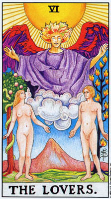
在韦特与史密斯对传统塔罗图桉的种种变更中，「恋人」牌始终是最具戏剧性的。马赛塔罗的「恋人」牌（右）画着一个年轻人被邱比特的前射中，被迫在两个女子之间做选择；而莱德牌则画着一位天使，俯瞰者一对成熟的男女（只有一个女人）。再者，当大多数的牌都只是显现出一种社会的情境，莱德牌的图像却显然暗示着伊甸园，或确切地说，一个新的伊甸园，园中的树带来的是启悟，而非堕落。
较早版本的六号牌有时会附带一个标题叫「抉择」，而在碧卜上则意味着在两种锐记之间某种重要的选择。由于一名女子的髮肤为浅色，功一名则是深色，而在欧洲的象征传统中，深色总是代表邪恶，而女子一般意味着诱惑，这种选择被视为在某种正派体面，但或许有些乏味、以及某种极受汤茎，但在道德上却有和欠妥当的事物之间的抉择。这张牌可以是指一次较不重要的选择，也可能是某人生命中的重要危机。今天我们可以在形形色色的小说和电影中看见这种古老的象征：中产阶级的中年男子受到诱惑，想要为了较为年轻、「狂野」的女子放弃他们虽然爱着，但却威到乏味的髮妻。
这种选择，事实上，可以延伸至一个人的整个人生。即使是那些始终过着中产阶级的体面生活，而从未质疑过其界限的人，也是做了一种选择一就和一辈子违法乱纪的罪犯一样。也有许多人外表过着符合社会标準的生活，内心却不断与折磨人的欲望天人交战，抗拒着通姦、暴力，或只是离家做个游民的冲动。
在神秘学的层面上，在白皙与深色女子间的选择，意指着外在与内在道途之间的抉择。前者在莱德牌中是以「教皇」牌所象征，你的人生已经被安排好，摆在你的面前；而后者则是神秘主义的道途，可能将你引向与潜藏欲望的对抗。教会把魔法师归类为魔鬼崇拜者，而在基督教寓言中，肤色深暗的女子通常代表撒旦。
以上这些意义，全都是以最广义的眼光看待光明与黑暗之间的选择。在大阿卡纳第一行的脉络中，我们可以用一种明确得多的方式来看待它，也就是一个人独立于父母之外所做的第一个真正的抉择。直到性冲动出现为止，大多数人都甘于依照父母的期玄行事。然而，性冲动却会向我们指出它想往哪儿去。结果，我们开始在其他的领域也挣脱束缚。父母会为我们选择的对象，很少会是我们想要选择的伴侣。如果其间的差异太剧烈，或是父母操控太过，此人便可能要面对痛苦的抉择。
保罗·道格拉斯（PaulDouglas）认为，那位深色头髮的女子——她看起来年长得多——是男孩的母亲，而这抉择在于，要留在她的羽翼之下，还是要自立门户。那些和佛洛伊德一样，相信男孩的第一个欲望对象是母亲的人，将在这儿看见一个典型的伊底帕斯困境。人格的一部分希望维持与母亲结合的隐密幻想生活，而另一部分则渴正在真实生活中找到同划之间的真爱。但我们不一定要接受佛洛伊德的学说，就能看出这个选择较为深广的税义。无论这男孩是否对母亲怀有秘密的欲望，在父母庇荫下的生活是安全而舒适的。但他（或「她」，因为女孩基本上也面对着同样的问题，虽然有时是以不同的形式）若是不曾挣脱，就永远无法成为一个真正的个体。而再也没有比性的成熟，更能强烈地指出这一点了。
因此，传统版本的六号牌代表青春期。在此时期，不仅性欲浮现了，智识和道德的独立性也开始建立。三、四和五号牌将我们展现为是徐自然、社会及父母等强大力量形塑而成的。在六号牌中，个人浮现了，一个拥有自己的想法与目标的真正人格，能够做出重要的抉择——不是基于钧母的指令，而是出于自身对欲望与责任的评估。
这些意义是属于这张牌的传统结构，韦特在设计自己的有「恋人」牌时，他探讨了一个不同的问题。在一个人的生命中，性与爱的作用究竟是什么？而在两个人结合身心这样张力强大的戏剧化事件中，我们究胸能#到哪些深刻的意义？韵特描述他的图像是，「代表人类爱情的牌，在这里展现为道路、真理，和生命的一部分。」
性的驱力带领我们脱离孤独。它推动我们去和他人缔结重要的关系，最终开启通往爱的道路。透过爱，我们不仅与另一个人达成合一，同时也瞥见了生命更伟大、更深刻的意义。在爱中，我们放弃了部分的自我党控，这种掌控将我们不仅仅与他人、也与生命本身隔离。因此，天使出现在那对男女的上方，这是单独任一人都无法获得的灵启，而只能由两人一同罕兄。
宗教、哲学与艺术总是以男与女的象征来代表二元性。我们已经看见这个概念反映在「魔法师」与「女祭司」，以及「皇后」与「皇帝」牌上。在「恋人」牌中，这种象征再次被强化，如「魔法师」般定着火焰的「生命之树」，立在那男子的身后，而树身总绕着蛇（「蛇」并非象征牙点，而是「无意识」的智慧）的「知识之树」，则在那女子后方。天使统合了这两种原则。在传统的教义中，男性与女性被认为在各自体内包合了不同的生命原则。透过肉体之爱，这些原则得以结合。
然而，神秘主义者一向认为「自我」之中就包含了这两种元素。今天我们听见许多人说，每个人当中都兼具着男性与女性的特质；不过，他们通常是指社会行为的模煳概念，像是侵略性与温驯。当男性与女性在最深的本质上被视为相对的，神秘主义者的观点要激进得多了。描述大阿卡纳之目标的说法之一，是说它带出并统合了男性与女性的原则。因此，在诗多塔罗牌中，「世界」牌中的舞者是由雄同体的。
根据喀巴拉学者和汉密特哲学家的说法，所有人类（更确切地说，荐至连神也是）原本都是雌雄同体的。因此，在外在的层面上，我们每一个人都只是半个人，唯有透过爱，我们才能找到一种合一之欢。
我们可以在柏拉图的学说中发现同样的概念，但有一处有趣的橱玥。在一则柏拉图神话中，述说人类原本是双性的生物，但是有三种：男一女、男一男，以及女一女。宙斯认为人类拥有太大的力量，便用雷电将他们噼开，因此现在我们每一个人都在寻找他的另一半。相对于犹太和基督教神话，柏拉图的故事给了同性恋同等的实存性。它提醒我们「男女作为终极对立面」这种太过简单之象征用法的危险。在我们每个人当中，「魔法师」与「女祭司」都十分微妙地混合在一起了。而天使能被任何两位恋人所召唤。重要的并非角色，而是结合的事发。
在基督教对《创世记》的一般诠释中，夏娃比亚当负有更大的罪咎，不备是因为她先吃了苹果，也因为她的性感诱使亚当盐落。男人据称是为理性所支配，而女人则是欲望。这样的切割致使有些基督徒甚至宣称女人没有灵魂。然而，整个「人类堕落」的神话，和它对于不服从与惩罚的强调，其实是用来支持一种压抑性的道德观。肉体的激情被认为对社会是有危险的，因此必须受到控制。而约瑟夫·坎伯（Joseph Campbell）在《上帝的面具》（The Masks of God）一书中指出，古代巴荤斯坦的女神霜教中也有相同的剧码：一条蛇，生命之灶，还有苹果。只不过在那古老的故事中，苹果是由女神授予入门者的，让他得以进入天堂，而非致使他彼逐出的原因。古希伯来人逆转了这个神话，部分是为了将玲时的宗教烙印为条恶，同时也是因为他们——就像巴比伦人一样——将古老的习俗视为_妖苹，。
然而，塔罗，是解脱之道。耶和华所表达的忧应，人类会变得像我们」，正是塔罗的目的——去充分引出我们之中神性的火花，使之与我们有意识的自我结合，终止上帝与人的二元对立，将之合而为一。因此，莱德牌的「恋人」虽然保留了许多与《创世记》相同的象征意象，却微妙地翻转了它的意义。
请留意牌上的男人鹿着那个女子，而那女子却玄着天使。如果男人确实是理性，那么理性只有透过激情的媒介才能超越它的局限。理性在本锦上就是会控制、遇止，而激情则倾向打破所有的界限。我们的传统将身体与理性的心智设定为互相冲突的，而塔罗教导我们，我们必须结合这一者（两位恋人之间升起了一座单峰的山峙），并不是理性的控制力将启官提升到较高的层次，而是，确切地说，螺倒过来的。
我们可以用直白的心理学词汇来说明这一点。大部分的人都受缚于他们展现给世界的小我或面具之中。但如果他们能臣服于性的激情，他们就能，至少在片刻之间，超越他们的孤离。那些连一瞬间都无法释放小我的人，便是误用了性，并且为之误用。性变成获取掌控他人之力量的一种手段，但却永远不会带来满足。当一个人拒绝身体想要与另一个人共同释放自我的欲望，结果便是消沉。天使被否认了。
与此同时，单凭激情无法将我们带到天使那儿。正如理性需要激情将之释放，激情也需要理性来指引。那些任凭欲望引领他们的人，往往会从一个经验被投扩到另一个。
保罗·佛斯特·凯斯指出，那位天使是三位大天使之一的拉奔尔（Raphael），他负责主掌超意识。这将我们带回到三位一体的心灵；这儿我们学到，心灵的三个层次并不是彼此分离而孤立的，像一栋房子的三层楼，而是，超意识事实上是意识与无意识结合起来的一种产物。通路是在无意识，因为这里是我们发现真实生命能的所在。事实上，超意识可以被描述为被带引出来的无意识能量，并被转化为一种更高的形态。这种转化一部分在于意识，它赋予这能量形式、方向，和意义。
如果在三肖形母题中，下方的两个人物代表生命的二元性，而上方较大的人物象征两者之间一种调停的力量，那么在六号牌中，那调停者就是性爱。当我们对之臣服，我们会瞥见高于我们自身的某种东西。只是微光一闪，而且只在一瞬间；真正的解脱最终需要的比激情多得多。但是爱能帮助我们看见道途，并且嚐到一点在道途终点等竺我们的喜悦。许多有过神秘经验的人，着名的如十六世纪的天主教圣徒圣德蕾水SaintTeresa），都曾以性的狂喜来描述与上帝的结合。
韦特一史密斯的图像在占卜上的意义十分一目了然。它可以是指爱情在一个人生命中的重要性，或是指某个特定的情人，也常常是指婚姻或一段长期的关系。这张牌暗示，这段特殊的关系对这个人——或者将会证明对这个人——非常有价值，能导引他对生命有新的颁悟。如果在这次百卜中有某个特定的问题要考量，那么，「恋人」牌暗示着某方面的协助，若非来自爱人实质的援助，便是透过情启上的支持。不过这也并非永还如此。「恋人」牌若是出现在代表过去的位置，尤其是当其他的牌显示问卜者拒绝去审视目前的情况，它可能意味着对一段过往爱情的留络，在此处造成了一种罢绊。
先前的牌都是代表各种原型。当它们以逆位出现时，我们便加上原本欠缺的元素。但是在这儿，个人已经向前遍进，现在逆位的意义则显示着弱点和阻滞。它首先可以意味一种破坏性的爱，尤其是在一椿糟糕的婚姻中。它可以意指支配某人生活的爱情或性爱问题，可能是与某个特定的人之间的难题，又或者是因为对这个人来说，爱情本身就是个大问题。由于韦特一史密斯的图像是指一种成熟的爱，而传统的图像则示现青少年选择的过程，这两种版本的逆位牌都是指爱情上的不成熟，暗示廷长的青春期让某些人早在身体完全成熟后，还人久久流连于幼稚的幻想中。
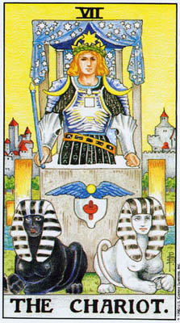
这张牌较早期的版本——图中战车是由两匹骏马拉着，而非人面狮身兽——係由好几种歷史与神话源头衍生而来。它主要是源自古罗马与其他地区的者俗：战胜的英雄乘着马车巡行过挤满欢呼民众的街道。这种扣俗显然应合了某种群众又与的深刻心理需求。如今，两千年之后，我们仍然在为总统、将领和太空人举行的游行中实践着它，只不过把马车换成了敞篷大礼车。
「战车」牌并不只意味着盛大的胜利。要驾驭两匹骏马拉的马车，需要对马儿有着完全的掌控；这种活动是用来展现强大意志的完美媒介。相拉图在《对话录》的《斐德罗篇》（aedrus）中，将心灵比拟为由一丐黑白色的马拉着的马车，与塔罗的图像如出一辙。
一则印度神话述说了湿婆大神（Shiva）摧画恶魔的三重城的故事。
要完成这项艰钜的任务，需要一切造物都臣服于祂的意志之下。诸神为湿滤打造了一辆战车，不仅以祂们自身作为战车的材料，还把谱天与大地也用上了。日月成了车轮，而风则是马匹（塔罗中「战车」前方的符号——很像一组螺丝钉加螺丝帽，或是轮子与车轴——称为林回」（lingam）与「尤尼」（yoni），是象征阳具与阴户的符号，代表着湿婆——阳性的原则，和祂的配偶帕瓦蔽（Parvati）——阴性的原则，结合在单一的图形中）。透过这个神话的意象，我们得知克服邪恶的精神胜利，是当我们能够凭借有意识的意志，集中一切的自然力，以及湿婆本身所体现的无意识能量时，才能获致的。
这两则寓言展现了「意志」这个概含的两种不同的面疝。湿小的故事说的是真正的胜利，其中精神找到了焦点，去释放它全副的力量。但是《斐德罗篇》则给了我们一个「胜利的自我」的形象，它控制而非化解了生命的基本冲突。那些将塔罗牌视为一群个别的图像、每张牌都对我们的灵性领悟贡献某些重要功课的评论者，倾向于给予「战车」牌比较广泛的意义。他们指出，数字「7」的喀巴拉标题——连同它所有的神秘总意——就是「胜利」。
在许多地区，特别是印度，马被视为与死亡和葬礼有所关联。当后起的父权体制废止了用老王献祭的仪式，他们会宰杀一丐马来代辣。马丐的献祭被视为最神圣的，暗示着永生不朽。即使在今天，马儿也被用来为伟大的领袖拉棺〈在约众·甘瑞迪之死中，我们看见了「战车」牌的两个面向奇异地汇合在一起。他在游行中被刺杀在礼车上，后来由一匹马——它还反抗了训练师的控制——在国葬典礼中为他拉棺）。这些连结暗示着灵魂战胜死亡的概含。
当我们连续地审视这些牌，我们会看见「7」只是太阿卡纳第一行的 胜利。它让这一行的成熟进程臻于顶峰，但是出于必然，它无法处理无意识及超意识的广大领域。以这种方式看待「战车」，它为我们示现了成熟发展的小我；前面的牌的功课被吸收了，青春期的追寻与自我创造过去了，现在我们看见了成熟的成年人，在人生中很成功，受到他人的景仰，对自己信心十足，志得意满，能够控制情威，并能——最重要地——主导意志。
和魔法师一样，战车御者手中所着一支魔村。和魔法师不同的是，他并没有将它高举过头，指向天空。他的力量臣属于他的意志之下。他的双手并没有握住还绳。他仅凭他坚强的性格，控制着生命中对立的力量。
「林迦」与「尤尼」的符号，象征在他掌控之下的成熟性能量。因此他不是自身情感的受害者，而他的性能量促成了满足的人生。他胸前那个光灿的正方形是鲜活大自然的象征，将他连结上了「皇后」的晤官世界，但是他王冠上的八角星，则显示他的心智能量指挥着他的激情（象征学家将八角星视为物质世界的正方形，与精神世界的圆形之中途站）。他的战车显得比后方的城镇要来得巨大，这显示他的意志强过社会的规范。然而，他的战车是静止不动的，这显示他并不是个反叛者。战车的轮子立于水中，表示他能从「无意识」中汲取能量，虽然战车本身是立在陆地上，将他与那强大的力量分隔开来，无法直接触及。
我们已经提过「林回』与「万尼」的性象征。印度神话将马连结上死亡，佛洛伊德派的梦境象征系统则将牠们连结上性能量「力比多」（libido）。借由控制马匹（或是人面狮身兽），战车御者掌控着自身本能的欲望。
他身上装饰着各式各样的魔法符号：裙子饰有仪式魔法的象征，腰带则鑑刻着星座与行星的标记。他肩上的两个半月形脸孔称为「鸟陵」 （Urim）和「图明」（Thummim）。，传说是耶路撒冷大祭司的屑侯，因而令人联想到「教皇」牌。同时，月亮的意象也指着「女祭司」。另外也请留意，战车后方的布畅呼应着女祭司的帘幕；他已将「无意识」的奥祀直于身后。
于是，我们在「战车」牌的象征符号中看见太阿卡纳第一行前面所有的牌。魔杖和魔法标志暗示「魔法师」，水、人面狮身和帷幕象征「女祭司」，战车顶篷上的星星令人联想起「皇后」的星冠，城市暗示着「皇帝」，而他的肩饰指涉着「教皇」，而「林名」与「尤尼」则象征着「恋人」。这所有的力量协力塑造出外在的人格。
然而——请观察那战车有如癌石般的质地。留意那战车御者似乎也与他的石头马车融为了一体。当心灵令一切事物都扎属于表意识的意志，便会则着变得尾固的风险，与它学会去控制的那些力量隔绝开来。同时也请留意那黑白两头人面狮身欧，彼此并不水乳交融，眼光看着不同的方向。战车御者是将牠们控驭在紧绷的平衡中。一旦这份意志不足以掌控，「战车」和人利者都将彼扯成碎片。
保罗·道格拉斯曾将「战车」牌与荣格的「人格面具」（persona）的概念相比较。随着长大成人，我们创造出一种面县去应对外在的世界。如果我们成功地因应了生命中各式各样的挑战，那么由其他牌所象征的不同面向，将会被整合和人这个「自我面具」中。但是我们太容易将这个成功的八格面具举真我汤清，甚至到了如果我们试图丢弃这个面具，我们将会忌惧失去它，犹如一种死亡的地步。这就是为什么大阿卡纳的第二行——它所处理的正是自我从外在面具中的释放——会以「死神」作为屋数第一张牌。
到目前为止，我们已经讨论了「战车」作为个人成熟的象征，但是人类的概念并不仅止于个人。「战车」代表心灵征服并运用生命的力量，这种形象使它成为「文明」的完美象征——借由运用自然世界为原料建构农业及城市，从自然的混乱中创造出秩序。喀巴拉赋予这张牌的一个主要涵意进一步延伸了这个概念。「战车」牌对应于希伯来字母中的「Iain」，因而带有「语言」的特质。对人类而言，语言似乎始终代表着理性的心智和它对自然的率制。就我们所知，人类是唯一拥有语言的生物（虽然黑猩猩已经显示牠们能够学会人类的手语，而鳞鱼与海豚可能也拥有牠们自己的语言），而我们可以说，语言将我们与动物区隔开来。亚当借由讲出动物的名字，得以控制伊甸园中的野兽。最重要的是，人们运用语言去传递资讯，因而让文明得以延续。
然而，正如小我是受限的，语言也是如此。首先，语言限制了我们对实相的体验。透过对世界建构一种描述，透过给予所有事物一个标籤，我们在自身与经验之间树立起一道屏障。当我们看见一棵树，我们不会感觉到一个活生生的有机体的冲击，而是会想到「树」，然后继续往下想。标籤取代了事物本身。再者，由于我们太过依卅语言这种理性的特质，我们忽视了无法以文字表达的经验。我们已经看见「女祭司」是如何示现着超越语言的直觉智慧。某些经验，尤其是与灵能的神秘结合，是无法被描述的。语言只能用隐喻和寓言暗示它们。完全仰赖语言的人，甚至竟坚持非语文的经验，或是无法以心理测验估量的经验，就不算存在。这仅仅是因为它们无法被科学地描述。这种教条主义最完美的象征，正是战车御者与石头马车的融合为一。
到目前为止，我们已经讨论过这张笙上的每一种象征——或许只除了最明显的一个：那两头人面狮身兽。韦特的这项变革是从喀巴拉塔罗的伟大先驱伊莱·列杂那儿借用来的。如同「女祭司」中的对柱，或是牠们所取代的黑白马，这两头人面狮身兽名征着生命中的二元性与矛盾冲突。再一次，我们看见了三角形的母题。在这儿，居中调停的力量是意志力。
用人面狮身取代了马，暗示着几种更深刻的意义。在希腊传说中，人面狮身兽是个出谜题者，对底比斯城的人民提出了生命奥秘的问题。这则神话告诉我们，人面狮身兽抓住城里的年轻人，问他们下面这个谜题： 什么动物早上用四只脚走路，中午用两只脚，晚上却用三只脚？」答不出来的人就会被吃掉。这个谜题的答案是「人」，婴儿时期用爬的，长大成人后直立走路，老了则要扩查杖。其中的荔意很明白。如果你不了解你芝本的人性，包括它的长处及弱点，那么生命就会毁灭你。「战车」象征着成熟，接受生命的局限，再加上言语的能力，也就是理性的了解，用以定义存在，并从而掌控它。
但是这儿还潜藏着一层更深的意义。回答出人面狮身兽谜题的人是伊厨帕斯，他在亲和死自己的父亲之后来到底比斯。佛洛伊德对乱伦的强调，町移了人们对伊底帕斯故事更深刻寓意的注意。伊底帕斯是成功人士的完美典型。他不仅为底比斯解除了威佃，成为这城市的王，而且他是凭借对生命的了解而办到的。他知道人是什么。然而他却不知道他自己。他自身的内在实相对他始终是封闭的，直到诸神强迫他去面对。而诸神也确实强锋他了。如果神论不曾——先是对他的父亲，然后又对他——开示，伊底帕斯永远不会做出他所做的事。因而，尽管他了解人类生命的外在意义，他却不明昌自己真正是谁，也不知道他与操控他生命的诸神之间的关系。而这两个主题，人恰好就是大阿卡纳第二和第三行所关切的议题。在第二行中，我们超越了小我，去发现真正的自我。而在第三行中，我们直接地因应存有的原型力量，最终在这些对立面上获致完全的整合，而这是战车御者只能压制、但却无法调解的。
「战车」牌在占卜上的意义衍生自它的意志力。在占卜中，这张牌意味着此人透过其人格的力量，成功地掌控了某种局面。这张牌暗示一个包含某种冲突矛盾的情境，这些矛盾并没有被化解，而只是受到了控制。这并不是在过度地强调这张牌负面的底调。正位时，「战车」牌基本上意味着成功；人格的力量掌控了周遭的世界。在处理问题的占卜中，如果它出现在结果的位买，人恒是暗示着胜利。
逆位时，这张牌内在的冲突性增加了强度。逆位的「战车」暗示，靠意志力来掌控证明和失效，局面失去了捷制。除非此人能找到其他方法来解决困难，否则他便将面临灾难。单凭意志力并不总能支撑我们。就像伊底帕斯，我们有时必须学习对众神让步。
追寻自我体悟
随着大阿卡纳的第二列，我们从外在的世界及其对内在自我的挑战各步向前。隐藏在「战车」强有力形象之内的冲突矛盾，现在必须彼直接地面对。小我的面具必须死去。
尽管听来颇为戏剧化，但这种情况其实十分常见，至少这种需求很普遍，虽然未必能够实现。自我质疑和追寻长久以来便被视为是中年的特征。当人们年轻时，他们主要关心的是战胜生命的驱力、找到伴侣，和获致成功。然而，当他们成功之后，便往往会质疑它的价值。在我拥有的一切之下，在我对其他人呈现的所有形象之下，我究竟是谁？7」这个同题，就变得越来越重要。今天，许多比较年轻的人不等到中年或功成名就便开始提出这些疑问。我们时代的一个特征就是湿匡生命有某种意义感，某种内在的实质感。而越来越多的人认定，要寻找此种意义，头一个要找的地方就是自己的内心。
这种观念，事实上，只是一半的真相。「魔法师」教导我们，作为肉体的存在，我们唯有在与外在世界连结时才能找到实相；「女祭司」的内在真相是一种潜在的可能，必须透过「魔法师」的表意识才能被显现。但是只要我们的面具、习惯与防卫心，还将我们阻隔于自我认知之外，使我们永远不知道自己「为何」行动，那么我们所做的一切，都仍旧是没有意义的。「魔法师」与「女祭司」之间的流动必须自由通畅，生命才能拥有价值。
由于这一行大阿卡纳基本上逆转了前七张牌的生点，许多张牌看来都像是它们上方那一张牌的「镜像」。一号与二号牌中性别的两极，在「力量」牌和「隐士」牌中反转了；然而光与暗、外在与内在的原则，却仍然在同样的位置。「命运之轮」从「皇后」牌自然而非关智识的世界转了出来，进入一种内在奥秘的幻境。在这一行的最后，「节制」牌则为我们展现了一种新的胜利。「战车」的力量被平衡与宁静取代了。当石制的战车令驾驭它的人无法直接与大地及河水接触，「节制」牌的天使却一脚站在陆地上，一脚踏入了水中，示现了与其自身及生命和谐一致的人格。
另一个主题也出现在这一行中。到目前为止，前面的牌为我们呈现了一系列的功课，关于人生我们必须学习的事物，以求在外在世界变得成熟、成功。但是开悟是一种极为个人的经验，它无法被研究，甚至被思考，而只能被活出来。这一系列的外在功课在「命运之轮」达到了顶点，它为我们呈现出一种对这个世界及我们自身的愿景，必须和被回应。然则，「吊人」牌又示现了某种全然不同的东西。在这儿我们看到的不是功课，而是开悟本身的意象，外在人格透过一种非常真实而个人的经验，上下逆转了。
在这两张牌中间，也就是整个大阿卡纳的正中央，是「正义」牌，小心翼愤地平衡着内在与外在、过去与未来、理性与直觉，以及知识与经验之间的天秤。
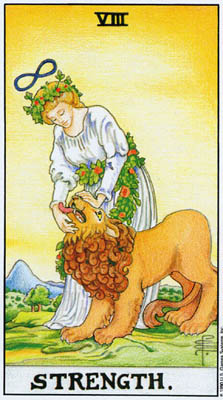
在韦特对塔罗的更动中，最明显的是他对「恋人」牌的更改；而他把「力量」与「正义」牌的位置对调，则始终是最具争议性的。韦特本人对此变更并没有提出真正的理由。「基于让我自己满意的理由，这张牌与通常排在八号的正义』牌对调了。由于这项变动对读者并没有什么意义，因此没有解释的必要。」不过这理由当然不仅只是个人性的。保罗·佛斯特·凯斯也把「力量」牌放在八号，而「正义」牌放在十一号。艾利斯特·克劳利保留了原来的数字，但将分配给这两张牌的希伯来字母对调了过来。这两人或许都是沿袭了「金色黎明会」的做法，该会设计的秘密答罗牌也对调了这两张牌。
这种与秘密会社的联系，暗示着「入门」的概念。且说，和人门仪式这种做法，当然并非起源于金色黎明会，虽然该会宣称它们的特殊仪式是直接由灵界的指导者所传授的。入门仪式可以回湖到数千年前，而且在世界各地都能见到——从古埃及的神殿，到澳洲的沙漠。它代表一种特殊的心理转化的法门——而这正是大阿卡纳中央列的主题。将「正义」及其前后的由张牌与这种古代的概念相互参照，我们将对塔罗——作为一种经验——获得更为砚广的理解。
大阿卡纳原先的安排方式之蕴意也值得我们思考。「正义」牌的图像暗示在天秤上评量你的人生。第二列牌将我们带离第一列的外在成就，进入自身。如此，「正义」作为第一张牌将意味着一种评估，思考你的人生对你而言意义为何，接下来则是决定要向内寻求更高的意义。显然这一切都很顺理成章。但如果「正义」是在第一位置，那么这一切全都是在理智上发生的；，这种评估方是对于不满足感的一种有意识的反应。如果此种估量是出目内在，被「命运之轮」强有力的灵幻素景驱迫而生，比起前者，它色会强大多少呢？「正义」牌上的双刃剑意味着行动，是对由此种评估所获得的知识的一种回应。回应的概念直接通往了「吊人」。如果「正义」是在第一位，那么「隐士」则会是紧接在后。作为智慧的追寻者，
「隐士」也代表了对于「正义」牌的一种合理的回应。但是同样地，如果我们元许那份智慧先于「正义」之前来到，那么「吊人」则是示现了来自内在深处的反应。
现在我们来思考「力量」牌的两个位置。牌上的图像是一个女子驯服着一头狮子。简短地说，这图像暗示着无意识的能量，在有意识的理解的导引下，被释放、安抚，被「驯服」。这样一个概念确实很容易被放在中央的位置，这样我们便可以将这张牌描述为这整列牌中央的考验。而当然，「吊人」的平静与伟大的逆转，也会很完美地跟随在「力量」之后。
不过，我们也能看出，「力量」牌具有做为第一张牌极其重要的特质。内在的探索无法由小我完成。我们必须去面对，长久隐藏在我们表意识思想之下的情感与欲望。如果我们试图以全然理性的过程去转化自我，我们便会创造另一种人格面具。类似这样的事其实常常在发生。许多人觉得自己的生命中欠缺了一份随性自在，他们环顾周遭，或是阅读心理学书籍，并观察——带着几分妒嫉，甚至对自身的压抑的差耻——随性之人的特质。然后，他们并不采取释放潜藏的恐惧与欲望这个令人害怕的过程，而是小心地模彷这种随性。他们将「战车」延伸到了一个新的领域。
把「力量」牌放在八号，我们使可以让它与「战车」相互对照，作为一种不同的力量。它并非是小我的意志，而是那种内在的「力量」，能平静而无还地面对自我。内在的奥秘将能被唤出，因为我们找到了面对它们的「力量」。狮子象征着由于小我试图掌控生命，因而压抑着的一切情感、恐惧、欲望，与困惑。战车御者汲取内在的情感作为能量的来源，但他总是小心地导引着这能量，去到他有意识地决定它该去的地方。「力量」则克许内在的激情浮现出来，作为超越小我的第一步。
在一种十分单纯的层面上，当一个人容许自己做出「幼稚」的行为，像是哭注或尖叫；总之，就是那些原先看来很台或很糗的事情时，我们可以看见这种压抑情绪的浮现。在一种较深的层面上，狮子象征整个人格的驱力——通常在文明生活的要求下被修饰过。「力量」释放出这份能量，是为了将它做为某种燃料，推动我们走上「隐士」的内在道路。这个目的之所以能被完成，是因为那狮子在被释放的同时，也被「驯服」了。「力量」开启我们内在的人格，就像潘朵拉打开她的盒子。然而，当它这么做时，是带着一种平和之感，一种对生命本身的爱，以及一份对最终结果的强大信心。除非我们真正相信自我发现的过程是喜悦的，否则我们将无法贯彻到底。
图像及数字的象征意义，也加强了「力量」与「战车」之间的对比。「战车」牌上画着一个男人，而「力量」则是个女子。传统上，尝然，这两者象征着理性与情感、侵略与尼服。同样在传统上，「战车」的数字「7」是代表阳性」的魔法，而数字8」则代表阴性」。这种象征意义是来自于解剖构造。男性的身体有七个孔加（鼻子算一个），而女性则有八个。再者，男性的身体有七个端点，双手、双腿、头、中心，以及阴茎。女性则有八个，由乳房取代了阴茎。但是何谓阳性」与「阴性」的魔法呢？秘术传统的理论认为，性能量是整个宇宙之能量原则的一种显现；阳性与陷性的生物，则类似于电磁的正负两极。透过操控这种双极的能量，魔法」的力量从而产生。神秘学者将这些原则视为一种科学，它并不比现代科学家操控原子能要来得更神补，或更不神字。我们可以将莱德牌的「人」描述为一种概要的能量图。因此，「战车」与「力量」在秘术体系中相依相属，是为「魔法师」与「女祭司」所象征的原则在实际面的显现。就心理学而言，它们也家现了两种力量。我们的社会强调「阳刚」的控制力；征服，透过理性与意志掌控这个世界。但是直觉与自发情感的「_险柔」特发却绝非软呈。要以爱与信心秋放你最深的情感，需要强大的勇气与力量。 「愚人」在这儿进来了。唯有借着一种心灵的跳跃，我们才能从表意识移动到无意识。而只有盆子才会做出这样的跳跃，因为坦嘛要放弃成功、放弃掌控呢？诸神强迫了伊底帕斯；，又是何种内在需求将会驱迫我们其余的人呢？ 「力量」的位置——在该行的第一位，以及驯狮女子头上的无限大符号——另一个对数字8」的指涉，将这张牌连结上了「魔法师」。人性别的反转指出了来自阳性及阴性原型之面向的结合。「魔法师」对生命的积极投入，被「女祭司」所荔合的内在宁静给调和了。
那女子丰腴的体态与金髮，以及连结着她与狮子的那条花环，将这张牌也联系上了「皇后」。「皇后」牌代表自然的本能与激情；我们再次看见情感能量的意象一有些塔罗评论者称之为「动物欲望」——被释放、驯服。韦特将那条花环描述为第二个无限大符号，一圈绕在那女子的腰际，另一圈则环绕着狮子的头要。我们可以将「力量」牌描述为「魔法师」与「皇后」的结合；也就是说，「魔法师」意识的力量和方向感与「皇后」的咸官性汇合在一起，给它一种目的感，并引领它走向「隐士」。请留意，就第一行而言，1」加上「3」，等于「4」，「皇帝」；而就第二行而言，「1」加「3」现在变成要乘以「2」——「女祭司」的内在真理。
这张大阿卡纳的另一个面向，更进一步延伸了这种「1」与「3」的结合。凯斯和其他人分派给「力量」牌的希伯来字母是「Teth」。在喀巴拉体系中，「Teth」也指涉着「蛇」；但是希伯来文的「蛇」同时也意指「魔法」。全球各地的人们都曾做过这样的连结；从希腊天神汉密斯魔杖上的蛇，到印度及西藏谭崔秘术的灵蛇之火「亢达里尼」（kundalini，抽火）。蛇，在「亢达里尼」和其他的地方，也代表着性欲。而塔罗——如我们在「恋人」牌中，那女子背后的「生命周」上缠绕的蛇中得知——则将性视为一种通往开悟的力量。如果，在秘术体系中，「力量」脾代表着性魔法的实际施行，在心理学上，它则再次指涉着释放那份禁锢在我们最强烈情感中的能量。如果我们比较一下「力量」和「恶魔」牌，我们将会看出这儿的释放事实上只是部分的释放。那狮子只是受到控制和引导，而并没有被允许去带领「自我」到任何它想去的地方。
在炼金术中，狮子代表黄金、太阳，以及硫磺。硫磺被认为是一种较低等的元素，而黄金（在炼金术中）则是最高贵的。将硫磺转变成黄金的过程，也正是转化较低自我的过程。而这一行最后一张牌「节制」的设计：天使将某种液体从一个杯子倒入另一个中，便是在描绘湿合相对之物、使之成为更具意义之新存在的炼金目标。
那些认为生命需要严格的控制，那些将「无意识」视为压抑的「道德阴沟」，（荣格如此形容狭障的佛洛伊德观点），并觉得激情是种折磨的人，会把这头狮子视为理性心智必须克服的自然驱力。某些较早的塔罗牌，包括
「威斯康提牌」，画着赫克力斯杀和死尼米亚之狮的场景。激情被理性征服了。但是狮子也代表着基督，上帝荣耀的力量。那些允许自身无意识的能浮现出来、并以爱与对生命的信念导引它的人，将会发现这能量并非吃人的猛兽，而是与「魔法师」的避雷针所接引下来的相同的灵佣。
在占卜时，「力量」牌是指以希谊和热忱面对生活的能力，尤其是面临某种困难的问题或是转变的时刻。它显现一个内心坚强的人，热情但却平静地体验人生，不为激情所掌控或冲昏了头。这张牌代表找到力量，尽管怀有恐惧和情绪的压力，仍能展开或继续某种困难的计画。
如果「力量」和「战车」牌同时出现，它可能意味着一种以力服人与意志力之外的替代选项，特别是，当然，当「战车」牌是逆位时。这两张牌也可以象征互补的面向，最佳的配置是「力量」牌落在代表内在自我的位置，而「战车」牌出现在代表外在的位置（「塞尔特十字」的纤轴与横轴）。那么我们就会看见一个行动强而有力、但却带着一份沉机平静的人。
逆位的「力量」牌首先意味着软弱。面对生命的力量丧失了，和此人喇到悲观而不知所措。它也意指一种来自内心的苦恼。狮子兽性的一面从精神与感官的统合中破笼而出。激情变成了敌人，威胁着要摧毁表意识的人格，以及它为自身所建构的生活。
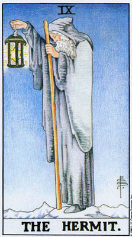
就像隐士的灯笼里的那个六角星，「隐士」牌的概念指向两个方向；一个向内，一个向外。首先，这张牌意味着从外在世界中抽离，目的是启动「无意识」的心灵。这个过程是由尖端向下的三角形所象征，炼金师称之为「水」三角。但是「隐士」牌也意味着一位导师，他将会指示我们如何开启这个过程，并帮助我们找到自己的道途。尖端向上的「火」三角即名征着这位特别的导师，他可能是一位神秘学的导师、心理治疗师、我们自己的梦境，或者甚至是从自我内在召唤出来的灵性导师。
「隐士」的形象，在中古欧洲的想像中占据了特殊的地位。他们住在森林或沙漠中，从人类关心的一切俗务中完全抽离出来。「隐士」提出了一种相对于教会的替代选项，就像是欧洲版的瑜珈苦行者，示现着透过个人经验去接近神的可能性。人们往往将隐士视为活圣人，并认为他们拥有神奇的力量——就像瑜珈门徒述说的关于上师的奇妙故事元和骰。
隐士虽然从社会中抽离，但他或她（注：女人也常常成为隐士，而中世纪对女性的仇视，有时会转变成对某位特定女子的尊崇，因为她被约为已经征服了她的性别中的邮恶。）并未据绝人类。在隐士其他的功能之外，他们也为旅人提供庇护，有时也为他们赐福。无数的故事，特别是「圣杯」的传说，都描述隐士为进行灵性探索的骑士指点迷津，开示智慧。再一次，我们看见隐士的双重形象：典范与导师。
在这种特殊的修持方式早已式微之后，「隐士」的形象仍持续留存人心。先验哲学家爱默生〈《Emerson）曾在苏格兰的荒野旅行了好几天，只为了寻找卡莱尔（Carlyle）的小屋。爱兽生的友人栈罗（Thoreau），也曾住在华登湖畔的小屋，只为追寻一种对自我及自然的体悟。之后他将这段经验写成《湖滨散记》一书，以供他人借镜。尼采的《查拉图斯特拉如是说》（DusspracpgZara上usnwa）】也尊率、「隐士」的形象；这本书就是以查拉图斯特拉在成就了个人的转化后归来作为开端。而今天，无数的人将自身交託给东方的灵性上师，期望这些隐士般的导师能够转化他们的生命。
对于那些无法找到真实的导师的人，心灵往往会提供一个。禹格与他的追随者曾经描述过许多患者的梦境，梦中都有位年老的智者引颁他们踏上进入心灵的神祀旅程。在许多桉例中，梦境解析发现那位梦中导师其实代表着他们的治疗师。「无意识」能够先于表意识心灵，更早辨识出「隐士」导师。
十三世纪伟大的喀巴拉学者亚伯拉罕·阿布拉菲亚（AbrahamAbulafia）曾经描述喀巴拉的三个阶层：第一层是教义，可以从典籍中特得；第二层来自一位个人的导师所给予的直拨导引；而第三层，也是最高的一层，则是与上帝直接结合的狂喜经验。这三个阶层与塔罗有着非常直接的联系，不仅仅在于大阿卡纳的三个行列，也对应于三张特定的大牌，而这三张牌构成了一个等腰三角形。我们在「教皇」牌中看见了第一阶层；而第三阶层，则是跳过一行，在「教皇」牌正下方，出现在十九号~「太阳」牌中的欢乐孩童。然而，第二阶层并不是这两张牌中间的「吊人」，而是位于三角型品的另一鸣，第二行中的第二张牌——「隐士」。
教义和神秘经验都是出现在一个过程的终端；教义是如此，因为你先必须安排你的人生，然后才能着手研习某种特殊的法门（叹巴拉学者往往对某些重要的典籍设限，只有超过三十五葳的人才能阅读）；而狂喜经验，则是因为你必须先通过与黑暗及奥秘的原型对抗。然而，导师却会出现在旅程的最开端，就在旅者找到了了，「力量」去启程之后。
除了作为导师之外，「隐士」也可以是个人成长的象征，此时他传达的概念是：唯有借由从外在世弃抽离，我们才能唤醒内在的自我。如果将大阿卡纳看成两部分，以「命运之轮」为中点，便会将「隐士」视为生命之轮转向第二部分之前的沉思期。若是将太阿卡纳视为三段七张牌的行列，我们就会看见，这种抽离，以及「命运之轮」的异象本身，都是通往一个更高目标的阶梯。
我们看见「隐士」站在凄冷的皈峰上。他离开了感官的世界，以进和人心灵。这幕荒凉寒冷的心灵景介，只传达了部分的真相，或者倒不如说，是一种幻象。心灵其实是很丰富的，充满了象征、喜悦，以及灵性的光与爱。但是在我们能够领略这些事物之前，我们必须先将心灵体验为一种寂静的选项，超脱于嘈杂的感官世界之外。对于萨满巫医而言，这荒凉的山峰往往是种直接的实相。在西伯利亚及美洲西南那样偏远的所在，萨满学徒会独自进和荒野，寻找灵界的导师传授他们治疗的能力。
「隐士」意味着一种过渡。透过冥想的技巧，或是心灵的训练或分析，我们允许心灵隐藏的部分开始对我们说话。之后我们将体验到一种重生之语，先是以天使的面貌出现（自我的永恒部分，超越小我之外），然后，我们将更深刻地感受到的是，一个自由自在的孩子，从过去经验的花园中向前奔驰。就现在而言，这条道途是属于那智慧老者的形象，独自一人，只有象征沉思的僵硬灰斗篷支持、温暖着他。
灯宠的象征将我们带回作为向导与老师的「隐士」。他将灯火朝我们提起，意味着他愿意引领我们和我们找到道路的能力，只要我们能以自身的「力量」去追随。在某些版本中，「隐士」将他的灯笼掩藏在斗篷底下，和那么它便是象征着，隐藏在表意识心灵底下的无意识之光。在莱德牌中，我们看得见灯光，但却是在灯笼之中，这意味着我们要透过某种特定的目我觉知过程去释放它，而这过程是对任何人都开放的。
我们看见，灯笼中的星星既是「隐士」作为导师的象征，同时也代表「无意识」之光，召唤我们去发掘它的秘密。它还进一步象征着化解生命对立面的目标。水三角与火三角传统上不仅代表两种通常是对立的元素，同时也象征结合在单一形式中的阴与阳。
「隐士」的扩杖暗示着巫师的法杖，因此也指涉着「魔法师」的魔杖。「吊人」出于本能地挥舞这根棒子，而「隐士」却是倚靠着它，作为一种有意识的文柱。因此它也象征着，帮助我们开启内在觉知的教法。
「隐士」位于「女祭司」的正下方，与她的抽离原则相呼应。这再次指出，如果我们想要在自己身上下功夫，就必须在某种意义上离开外在的世界。如同「力量」牌，第二行的牌逆转了第一行的性别原型。这儿的角色象征教导我们的是，某种以特定技术及教义为基础的刻意心智努力，带领我们超越了|「女祭司」的封闭神殿中封锁起来的直觉。神殿中的湖水并没有被完全释放；帷幕也仍然挂在那兄，直到「隐士」下方「塔」牌的闪电将它撕开。然而，在九号牌的影响下，无意识」从帘幕后面对我们说话了——透过象征、梦境，和灵视。
男女性别象征与个人实际经验之间的送异，让我们对「原型」有了一些重要的了解。我们往往会将隐士或导师想成年老窒智的!男人」，即使是在我们的梦中，因为我们五千年的余权制度在我们心中铭印了这个形象。在更早的时期，导师却最常是女性，是「至上女神」（theGreatGoddess）的使者；而抒使在我们的时代，像是通灵学家勃拉过次基夫人（MadameBlavatsky）这样的女子也发挥了这种古老的功能。我们的梦往往会选择窒智老旱的事实，证明了一件非常重要的事：「无意识」也是从个别作梦者的文化背景中汲取素材。许多人将「原型」视为所有时代、所有的人共有的僵固形象，事实上，「原型」是心灵形成某些「种类」的形象的倾向，像是导师的形象，而某种形象所采取的特定形式，将在很大程度上，取决于一个人的文化背景及经验。中世纪的圣杯入门仪式和澳洲沙漠的仪式，依循着同样的原型模式；它就像网格一样，构成两者的架构。然而此种模式的外在形式却是千变万化的。
「隐士」牌在占卜上的意义衍生自它的两个面向。一方面，它象征着从外在挂怀的事物中抽离。此人可能在实质上将自身撤离，但这其实并不是必要的。重要的是内在注意力的移转，从浪漫诗人华兹华斯（Wordsworth）称之为「获取与花用」的世俗活动中撤出，转移到内在的需求上。因此它要求一种情感上的抽离，从他人身上、和我们曾经认为极度重要的活动中撤离出来。这张牌中带有一种深思熟虑的目的感，一种抽了离感，好在自我发展上下功夫。呼应这种目的感和老者的图像，这张牌象霉着成熟，以及对于什么才是生命中真正重要之事的认知。
这张牌也可能是指来自某位特定指导者的协助，有时就如上面提过的，是来自内在的心灵指引，但更常见的是一位真实的人，他将在自我发现的道路上帮助你。有时我们自己辨识不出有这样一位导师，为我们而存在。如果「隐士」牌出现在塔罗占卜中，仔细审视你周遭的人或许会是明智之举。如果你正在帮助他人寻求体悟，那么这位「「隐士」，可能就是担任指导者与老师角色的你。
当这张牌逆位时，抽离的概念便走了样。如同逆位的「女祭司」可能意味对生活的恐惧，逆位的「隐士」则可能意指对他人的催惧。如果我们从社会中抽离，作为一种退避，那么这抽离的事实，将会变得越来越具支配力，导致恐惧和偏执。和其他大阿卡纳牌一样，，「隐士」牌是作正面或负面的解释，要看其他牌的脉络而定。有时逆位的「隐士」牌，可能只是意味此人在这个时刻需要与他人互动。
由于正位的「隐士」牌象征成熟，逆位时，它有时是指对人生的一种「彼得潘」的态度，也就是长不大的小孩。这个人会流连于基本上漫无意义的活动，或是模彷孩子般的热棕（就像模彷随性的举动那样），作为一种规避责任的方式，不去为自己的人生做些事情。
我第一次见到逆位「隐士」牌的这种诠释，是在纽约的一位男士为我朋友所做的一次占卜中。从此以后，我便发现它在许多情境中都非常适用。有趣的是，我是咎过另一位朋友认识这位男士的，而我这位朋友正是将这位占卜者视为她在灵性发展上的个人导师。
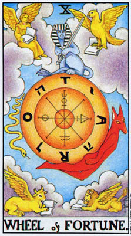
如同某些其他的大阿卡纳牌——最显着的是「死神」——「命运之轮」乃是衍生自中世纪的一则宗教训诚。教会将「骄傲」视为最大的罪过，因为傲慢的人将自身置于基督之前。贬斥骄傲的训识之一，是一位伟大国王丧失权力的概念。在许多版本的亚瑟王传奇中，亚瑟在最后战役的前夕，梦见或看见一幕异象，一位膏有而强大的国王坐在一个巨轮顶端，突然之间，命运女神佛图娜（Fortuna）转动了轮子，国王便被碾碎在轮子底下。清醮后的亚瑟明百，无谕我们柔积了多少俗世的权力，我们的命连永还操纵在上帝手中。图十一（c）的「威斯康提」牌，便是崇扬着这一则实际的训识
我们或许会认为，这个工整的道德寓言，与从「韦特一史密斯，」牌（a）和奥斯华·疾斯」的版本（b）中损视着我们的强大而神秘的符号相距甚远。然而，佛图娜和她闪亮的轮环有着奇异的歷史。首先，这个中世纪的意象乃起源于古老得多的时代，那时佛图娜代表着「至上女神」（theGreatGoddess），而被毁灭的王则是真有其事。每年，在仲冬之际，女祭司们会以国王献祭；借由模拟这一年的死亡，她们在女神的力量之前谦卑地俯首，而透岗选出一位新王，她们向女神微妙地暗示，请她再一次从冬季之中创造出春天——对于并不相信和万有引力这类「自然律」的人们，这件事是绝不可能自动发生的。如此，这轮子最初象征着自然的奥秘，以及人类透过仪式性的献祭又与这份奥秘的能力。请留意这张牌位于「皇后」牌的正下方，那正是伟大母神的象征。
到了中世纪，轮子的意象已经失去了原先的意义；但这并不意味着它丧失了暗示生命之谜的力量。在汤玛斯·马洛礼（ThomasMalory）所撰写的亚瑟王故事中，我们发现「轮子」暗暗象征「运气」的随机转动。为什么有人会发财，其他人却穷困济便？强大的国王为何会垮台，而原本补小的人却会兴起、掌权？是谁，又或是什么东西，在掌控轮转不息的生命轮？马洛礼暗示，运气，那看似漫无意义的起起落落，事实上就是命之；也就是，上帝为每一个人选择的命数——基于只有上帝才能了解的理由。由于我们无法了解那些原因，我们便说凡人生命中的事件是由运气所决定，但这一切都属于上帝的计画。
因此，随着这巨轮，我们面对了这个大喜问：宇宙中的一切事物是如何、叉是为何发生的？是什么让太阳发光？燃烧的元素，没错，但又是什么让它们燃烧？原子能是如何发生的？说到底，冬天之后鸟何会有春天？万有引力是为何、又是如何运作的？更深究一层，我们发现命运也是个纪象，是个託词，以掩盖我们——以我们有限的视野——无法看见一切事物之内在关联的事实。「噢，好吧，」我们说：「这是命。」一句没有意义的陈述，因为我们无法理解其意义。事物不是就这样发生的，而是有以致之的。那形塑事件的旋量，为宇宙赋予生命、形式与目的的力量——马洛礼告诉我们——是属于圣灵的，祂以「圣杯」（theHolyGrail），亦即「圣杯王牌」（theAceofCups）之中的一种存在，居住在物质世界中，犹如「篆凯纳」以实体居住在耶路撒冷神殿中以帷幕遮蔽的圣竟之内。
于是我们见到了真相：生命的随机事件和所谓的物质宇宙的「规律」，两者都在引领我们去体认灵性力量的奥被——那由「魔法师」高举的手臂接引下来、并在「皇后」的自然世界中显化出来的灵能。许许多多神秘学者和萨满巫师都说过，他们曾在灵视中看见一切事物是如何相连、如何配合无间，因为灵能联结了整个宇宙。若非我们活得不够久，或许我们全都能够看见并理解这份伟大的生命蓝图。我们短暂的生命窄化了我们的视野，只能看见很小一部分的世界，使得生命看来似乎没有意义。
且说，轮子象征命连之谜的概念，连同它潜藏的意义，与现代的韦特一史密斯版的这张牌配合得相当好，尤其是当我们将之视为通往最后一张大牌的中点时。如果我们将莱德版的「命运之轮」与「世界」牌并列在一起，我们立刻就可以看出两者的关联。在一张牌中，我们看见一个缀补佘征符号的轮子；在另一张中，我们则看见一个胜利的人花环，环内是一位舞者，体现着那些象征背后的真理。更令人注目的是，在两张牌的四个角落上，我们看见了相同的四只动物，只不过十号牌中的神话生物，在「世界」牌中被转化成了真实而鲜活的样富。如此这般，在大阿卡纳的中作点，我们接收到了生命内在意义的灵象；在最终点，这个异象变为真实，体现在我们自身当中。
在古印度，国王每年也要丢掉性命，被献祭给女神。当人欠权制的亚利安人终结了这种习俗，「年之转轮」的意象变成了新宗教的一种更强而有力的象征。那轮转不息的「生命之轮」转而象征业力的律则，引领你从一个肉身转世到下一个。就某方面而言，业力就是命运之奥秘的另一种解释。透过你在这一世中的行为，你为下一世的自己塑造了某种命运，于是，如果你犯下了许多恶行，你便在你永生不灭的自我中创造出一种要受惩罚的灵性需求。当你下一次的转世来临时，你便会无可避免地选择低下的出身，或是病残的身体（这种对于业力的简单心理学解释，或者植基于佛教的成份大过印度教）。
又一次，我们有限的理解力使我们无法直接体验命运之轮——或是业力——背后的真相。佛陀开悟时，他忆起了每一个前世的每一个时刻。确实，这份记忆就是开悟。透过获得完整的知识，他能够体察到这些生生世世全都只是欲望所创造的形象。当他终结了他的欲望，他便「下了轮子」，脱离了轮回。我们可以说，开悟意味着（或至少包括了）穿透外在的事件、体悟到基藏其中的灵能，亦即，找到「命运之轮」之中的「圣灵」。
亚瑟王在梦中以一种灵视经验到「命运之轮」，乃是饶富意义的。因为，无论我们是将这转轮视为大阿卡纳的中点，或只是完成第二行的步又之一，它事实上是「无意识」给我们的一种露象。「隐士」从外在世说中退转了出来，其结果是，「无意识」对他示现了生命的愿景——一个缀满象征符号的转轮。
直到我们走开一段距离，「生命之轮」才会被我们看见。当我们涉入其中，我们只能看见立即在眼前和脑后的事件；那些「小我」觉得如此重要的日常利害关系。当我们抽离开来，我们就会看见整个格局。就心理学而言，我们可以将这幕灵旬视为一种个人的评估：他的生命走过了哪些地方，又要往哪儿去。在更深的层面上，这幕灵象始终是神秘而象征性的。
我们可以看见，我们把自己特定的人生活成了什么样子，但是「命运」则始终是个谜。
那巨轮上的符号全都有其意义；它们帮助我们去理解这些异象之中的真相。尽管如此，我们并未完整体验那活生生的力量。「无意识」之光仍被帷幕遮蔽着。
马洛礼将「命运之轮」连结上「圣杯」，也是意味深长的。因为「圣杯象征」的起源——它同时也是小阿卡纳的象征符号——或许几乎与国王的年度献侍一样久远。在古代欧洲秘仪的入门仪式中，当祭司将该教派内部秘密的「灵象」示现给入门的人选时，很可能就是将圣杯、宝剑、长矛和五角星这四种象征器物，以隆重的神祖典礼展示给他。而陈列在「魔法师」桌坛上的仪式魔法的基本法器，就是同样的四种象征，同时也是小阿卡纳四个牌组的符号。
虽然我们不曾直接在十号牌上看见这四个象征符号，但我们看见了它们许多类比之中的两种。位于牌的四角的四种动物，源自于《圣经？》？《以西结书》第一章第十节中的异象。它们在《启示录》第四章第七节中也曾出现。最早，这四个形保是代表巴比伦占星术中的四个「固定」星座：狮子、天蝎、水瓶和金牛。早期的基督徒用它们来象征四位福音圣徒，这也就是他们手上都拿着书的原因。他们有时被称为「天堂的守护者」，后来也被拿来象征古代和中世纪科学的四种基本元素。从右下角逆时针方向算起，他们分别代表火」、「永」、「风」，和「土」，而这些元素同时也分属于小阿卡纳的「权杖」、「圣杯」、「宝剑」，和「五角星」。作为固定星座，这四种动物也让人联想到整个黄道带——太阳在一年中的「视运动」（apparentmotion）所造成的环形轨迹，它形成了可见宇宙的「巨轮」。
与四元素的另一项关联，在于轮圈边缘四个了字母的上帝之名。从右上角开始，同样是逆时针方向读起，这四个字母是Yod、Heh、Vav和Heh。由于这个名字在《摩西五书》中出现时并没有母音（这四个字母全都是子音），因而是无法发音的。因此上帝「真正」的名字一直是个褥密。过去至少两千年来，犹太人和基督徒始终认为这个名字带有神秘的力量。神祖学者对之沉思冥想（阿布拉菲亚狂喜的第三阶喀巴拉，便是透过在上帝之名下功夫而达成的），而魔法师则试图巧妙运用它。对喀巴拉学者而言这四个字母便是世界的奥秘之终极象征。宇宙创生的过程被认为是以与这四个字母相对应的四个阶段发生的，而当然，这四个字母也相应于四元素、圣杯的象征，以及小阿卡纳。
交错在希伯来文字之间的罗马字母是一种「变位字」（anagram）】。，也就是可以借由更动字母顺序而变成另一个字的文字结构。从最顶端顺时针往下读是「TARO」，逆时针读则变成了「TORA」（还记得「女祭司」手中的卷轴？），我们也可以在其中找到「ROTA」（拉丁文的「轮子」）》、「ORAT」（拉丁文的「说」），以及ATOR」《爱托，一位埃及女神，又称「海瑟儿」，Hathor）这几个字。保罗·佛斯特·凯斯仿效金色黎明会创始人麦奎格·马瑟斯（MacGregor Mathers），建构出下面这个句子：「ROTA TARO ORAT TORA ATOR」，译文是「塔罗之轮述说着爱托的律则。」凯斯称此为「字母的律则」；由于爱托在埃及最为人熟知的身分是亡者的女神，这事实上是永恒生命的「律则」，隐藏在自然世界中。尽管身体会死亡，灵魂却会继续存在。凯斯也指出，与「TARO」这几个字母相对应的希伯来数字值，加总起来是「671」，这个数字再加上「26」，也就是四个字母的上帝之名（称为「四字母圣名」，Tetragrammaton的数字值，便成为「697」。这几个数字又可再化约为 「22」，也就是希伯来字母的数目，同时也是大阿卡纳牌的张数。而当然，「22」又将我们带回到「4」。
在轮环内圈的四个符号全都是炼金术的标记。从顶端以顺时针方向读来是汞、硫、水，和盐，呼应着大阿卡纳第二行的修炼目标，亦即「转化」。水是「溶化」的象征，也就是，将小我消溶，释放出浸淫于习惯、恐惧与防卫之中的真我。当我们讨论到「死神」与「节制」牌时，我们会进一步探讨其意义。
死亡与重生的概念，也被表现在装饰巨轮的动物象征中。那条蛇代表赛特（Set），埃及的邪恶之神，在传说中是祂将死亡带入宇宙中。生命之神奥西里斯（Osiris）也是被祁所杀。这个传说，就像那轮子本身，很可能是源自于史前杀和死神王献祭的习俗，尤其是当我们考虑到赛特曾经是位英雄神，而蛇又是接受献祭的女神的圣物。那条蛇跟着轮子往下降；而往上升的那个对狼头的人形则是阿努比斯（Anubis），是死者灵魂的向导，因此也是新生命的给予者。根据某些传说，阿努比斯是赛特的儿子，因此我们看见，唯有死亡能带来新生，而当我们惧怕死亡，我们只看见部分的真相。就心理学而言，唯有外在自我的死亡能够释放内在的生命能。
转轮顶端的人面狮身兽是荷鲁斯（Horus）的化身。祂是奥西里斯的儿子，也是重生之神。生命战胜了死亡。但是如同我们在「战车」牌中见到的，人面狮身兽也象征着生命的奥秘。「战车」是以坚强的自我掌控着生命，现在人面狮身已经上升到轮子的顶端。如果我们容许「无意识」说话，我们将会感受到生命某种重大的秘密，远比表面上漫无意义的事件之无尽轮转重要得多。
赛特，那一条蛇，也被称为黑暗之神。如前所述，将黑暗视为「牙恶」是一种假象，而事实上，对于黑暗的恐惧，就像对死亡的呗惧，是属于小我的。小我喜爱光明，正如同「无意识」喜爱黑暗。在光中，所有的事物都是简单而直接的；小我可以用来自外在世界的感官印象占据它的注意方。当黑暗来临，无意识」便会开始骚动，这就是为什么小孩会在夜晚看见怪物。我们把外在自我塑造得如此坚强，原因之一是，这样我们就不会在每次灯火熄灭时面对妖魔。
然而，那些想要跨越「战车」的人，必须面对这些恐惧。蛇与水，黑暗与消融，全都是死亡的象征，亦刘，身体的死亡和小我的死亡。但是生命在个体人格之先和之后都存在着，而这人格，当然，只是我们的「自我」表面的一个气泡。生命是强有力的、混乱的，湿动着能量。臣服于它及荷鲁斯——重生之神，将会从混乱中带出新生。上巨轮不仅会向下转动，也会向上升起。
沃斯版的「命运之轮」甚至更强方地宣扬着这个概念。那巨轮是在一艘船上，漂浮在水中。消融，混沌，以潜藏于物质宇宙底层的本真实相浮现了出来。存有的一切形象，形形色色的事物与事件，全都只是出于充奔宇宙之强大能量的短暂创造物。在印度神话中，当外在的形象——像是小我——变得疲篮而沉赡时，湿小便会周期性地摧点整个宇宙，释放出宇宙原本由之生发的基本能量。
数字「10」暗示着「0」。「愚人」是「无物」，也没有人格。但是「愚人」，就像数字「0」，同时也是一切事物，因为他能直接感受到生命的能量——那艘船底下汹涌的海洋。在莱德版的「命运之轮」上，轮轴的中央没有符号。当我们来到存有静止的中心，没有小我或惑刷，一切外在的形象都消失了。我们能够直觉地了解这一点，但要真正去体验它，我们必须容许自己下降到那片幽暗的海中，让人格死去、消融，并让路给从铺暗中浮现的新生命。
在占卜时，「命运之轮」意味着此人生活的境况有了某种改变。当事人可能并不了解这改变是何以致之；或许并没有直接的原因，至少没人能看出来。而事实上，这改变可能也不是当事人的责任——在「责任」这个词一般的意义上。一间大机构并购了这人工作的公司，他因而失业。一段恋情借束，并非因为双方在筱此对待上犯了任何「错误」，而只是因为生命继续往下走。巨轮在转动。
关于变化，重要的是我们的反应。我们是否接受新的局面，并试着适应它？我们是否将它视为一个机会来善加运用，并在其中找到某种意义与价值？如果这张牌以正位出现，它便意味着适应。在最强的意义上，它可以意指洞穿事件之奥杞的能力，对生命获致更深的理解。一段恋情的终结，虽然痛苦，却能带给我们更深的自我认识。
逆位时，这张牌意味着对事件的抗争——通常注定要失败，因为变化已经发生，而生命总是会胜过试图反抗的人格。然而，如果当事人向来总是消极被动地回应生命施予他的一切，那么逆位的轮可以意味一种更为重大的改变，而不仅只是一组新的情境。它能为一种新的觉知开路，引领你体悟对自身生命的责任。
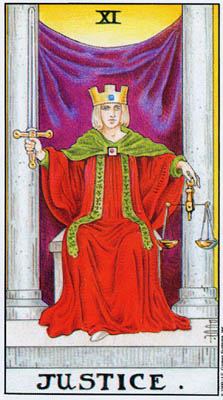
这张大阿卡纳的图像，乃是源自于古希腊的泰坦女神席米斯（Themis），她鞭起双眼、手执天秤的形象，在西方世界的法庭壁画中处处可见。她的罗马名字是买丝提昔亚（Justittia），代表律法的她或着双眼，是为了显示法律不分贵贱，一视同仁。不所，社会公义」的原则，实际上是归属于「正义」正上方的「皇帝」牌。十一号牌肪是指出，心圳的」正义律法——凭借着它，我们根据自身理解过去的能力而前进——有赖于认清我们自身及生命的真相。因此，塔罗的买丝提昔亚并没有葡着双眠。到目前为止我们讨论过，大阿卡纳第二行是一种从外在关怀抽离、以噢醒我们对自身及生命的内在洞察之过程。但是对事物潜在本质的洞察若是没有产生积极的反应，它也就没有意义。我们永还必须依据我们从内在自我（「女祭司」原则）接收到的智慧做出行动（「魔法师」原则）。在这张牌上，不仅仅那完美平衡的天秤，所有的图像全都指向一种在理解与行动之间的均衡。牌中的人物是一位女性，看起来却显得很「中性」；虽然她稳稳端坐在石觉上，看起来却像是准备要站起来；一脚从袍子里伸出来，另一脚仍藏在袍内。那柄宝剑——行动的象征——直指向上，显示着决心，以及此一概念：智慧就像一柄宝剑，刺穿事件的幻象，以才找内在的意义。这把剑双刃开锋，因此也意味着选择。生命要求我们做出决定，但同时每个决定一旦做出，便无法撤回。它变成了我们的一部分。我们是由自己过去的行动塑造而成的；我们现在采取的行动，则正塑造着未来的自己。。
元座天秤同时也代表着，过去与未来之间的完美平衡。过去与未来达到了平衡，不是在时间中，而是在正义女神从大阿卡纳的正中央，凝视着你的明晰目光中。
盅穿大阿卡纳的前半段，当一个人投身于外在世界，他始终陷溺在自己是以积极原则而活的错觉中。这是因为我们混淆了「做事」与「行动」。当我们转向内在，我们以为我们从行动中退转了出来；而确实，若非暂停我们外在的生活，或至少是转移了注意妃，第二行的过程便无法完成。但是真正的行动，相对于漫无目的的间动，永远会为我们的生命带来意义与价值；这样的行动是出自于领悟。否则，我们始终是真正被动的，像机器般从一个事件被推向下一个，对我们为什么会做这些事毫无觉知。第二行的真正目的不是抛弃积极原则，而是去唤醒它。
十一号牌的意象，比先前任何一张都更完整地结合了「魔法师」与「女祭司」。首先，「11」的数字加起来是「2」，但是这个数字同时也意味着较高形式的「1」（以及较低形式的「21」）。那女子坐在悬挂着帷幕的两根殿柱之前，令人联想起「女祭司」，但是她的红袍，和她的交势手向上，一手向下——则暗示着「魔法师」。真正的行动出自于自我觉知；而智慧则来自于行动。在生命中，如同在这幅图像里，「魔法师」与「女祭司」不可分拆地结合在一起，就像是彼此交总的雌雄两条蛇（拙火与汉密斯蛇杖的象征），或是DNA的双螺旋。那片帷幕是紫色的，是内在智慧的标记；而画面的背景、王冠、头髮，和天秤则都是黄色的，象征心智的力量。智慧不会自动发生，如果我们想要理解我们的人生，就必须去思考它。但是，除非是从对真相的清晰洞察中发展出来，否则这一切思考将毫无结果。
在个人心理的微观层面上，「命运之轮」代表着对个人生命的一种洞察；生命中的事件，你是谁，你把自己造就成什么。「正义」则是指对
这所见所察的一种理解。而领悟之道在于责任。只要我们相信，我们过去 的人生就只是这样发生了，我们并不曾透过自己的一切所作所为塑造了自我，那么遇去就始终是个谜，而未来就只是转动不休的轮子，了无意义。但是当我们接受，我们生命中的每一个事件都有份塑造我们的性格，而在未来我们也将继续透过我们的行为创造自己，那么智慧之剑就会划破这个奥秘。
更深一层说，借由为自己接受责任，我们弔诡地将自己从过去中释放出来。就像佛陀记起他的每一世，我们唯有透过意识到过去，才能从其中挣脱开来。否则，我们就会不断重複过去的行为。这就是为什么「正义」应该位在我们生命的正中央。「小我」或许只是一种人格面具，是某种假面，但是只要我们不肯承认是我们自己打造了它，这面具便能控制我们。
对自己的生命负责的概念，并不意味着我们对于外在世界有着任何无形的操控力。举例说，这并不意味着，如果一次地震贯了你的房子，是你的意志以某种未知的原因让它发生——无论是为了何种隐藏的动机。「理解」包括接受你的物质存在的局限。字宙浩瀚而奇异，没有人能控制其中会发生什么。
责任也不隐含任何道德的暗示。它仅仅意味着，无论你喜不喜欢，你的一切所作所为，你所经验的一切，都有份促成你人格的发展。生命要求你对每个事件做出反应。这不是一种道德的要求，只是存在的一个事实。
然而，我们一切的本能、心理学、宗教，以及神秘学家的证言，全都告诉我们生命包含了某种更高的东西，一个内在的核心，独立于我们那个被一个经验投掷到另一个的外在自我。大阿卡纳第二行显示外在的人格正在死去，而内在的核心——「节制」牌的天使——正被允许浮现。在这样一种释放能够发生之前，我们必须接受自身生命的「正义」；我们把自己造就成什么。
我们的时代主要是以心理学的角度来看待这种觉知的歷程，心理分析的艰难过程便是最佳的例示。其他的时代则将此种转化的过程，「外化」在戏剧性的入门仪式中。入门仪式有两种。在许多部落社会中，所有的成员都要在青春期开始时进行特别的典礼。在基督教之前的希腊和罗马，人们会选择加入特定神祗的「祀仪」作为启蒙。这些秘仪的入门程序都会依循某种特殊的模式。当即将被启蒙的入门者鼓足了勇气，首先他会接受指导，领受这个教派或秘仪的教义；在这段时间中，仪式主持者会采取一些步骤，透过冥想、仪式和药物，去开启通往入门者的「无意识」的管道，让他更具接受性。这些开头的阶段係由「力量」和「隐士」牌所象征。然后，在一种极为神秘而戏剧化的氛围中，一种代表该教派秘密奥义的异象会被展示在入门者面前（在此之前它们被保密，一方面是要保护它们不被非信徒所知，但更重要的是为了让它们在被揭露时更具效力）。在「圣杯」秘仪中，这异象是由一群女子手捧圣不和其他伴随的象征品愧，一外为受伤的国王哭泣，一边戏剧化地列队行进。我们在「命运之轮」中曾见过类比这种异象的象征。
现在关键的时刻到了。入门者必须做出回应。如果他只是站在那儿，被动地等待接下来的事件，那么入门仪式便无法继续。在「圣杯」秘位中，必要的回应很可能是提出一个问题，像是这些东西的意义何在？」或是比较幽微地：「圣杯是服事谁？」借着提出这个问题，人和人门者给了对方一个回应的机会，也就是，透过仪式化的死亡与重生继续启容的程序。更重要的是，入门者借此确认自己是这程序的一部分，要对它姦当的粘果负责。这比听起来要困难得多。这种仪式象征大特然的生、死与重生，以及身体死去，以释放永恒的灵百。要在这样书穆的场合开口说话（而且请记住，入门者是以一种我们今天大多数人都不可能体验的方式，相信他们的神），所需的勇气，至少不下于接受心理分析与觉醒所揭露的真相。
在我们的时代，对个人主义的强调，使得我们只会想到个人的死亡与重生。庄严肃穆的入门仪式，目的则不仅在转化特定的个人，同时也将他与宇宙更广大的秘密连结起来。依循这个脉络，我们可以看出「正义」牌为何应该位居大阿卡纳正中央的另一个理由。我们已经谈到过，世弃是对立事物的伟大互动，是光与暗、生与死的恒久转轮。我们也谈过，转轮的中心是个静止不动的点，对立之物绕着它回转不休。「正义」牌中平衡的天秤，再次暗示了那个如如不动的点。当我们找到自身生命的中心，一切事物都进入了平衡。当所有的对立物，包括过去和未来，都道成了平衡，我们就能在自身之内获得自由。
许多人纳闪，自由意志在塔罗、易经，或占星术中扮演着何种角色。和如果纸牌能够预测我们将会做什么，这是否意味着自由意志并不真的存在？这个问题起于对自由意志本身的误解；我们以为它是某种单纯的、独立于过去之外的东西。在任何时刻，我们都可以自由地去做任何想做的事。但是我们以为的自由抉择，事实上乃是受到过去行为的控管。如果我们不了解自己，又如何指记能做出自由的抉择？唯有借由看见并接受过去，我们才能将自己从中释放出来。
某人可能针对某个情境询问塔罗牌。纸牌非常直接地概略指出某个决定的结果，举例说，是否要发展一段恋情，或是展开某项新计画。假设纸牌显示会有灾难，而这人也真的能够看见纸牌所预示的结果有其可能性。现在这人或许会说，「好吧，这有可能，但是我的自由意志让我能够改变局面。」于是他就放手去做了，而结果也真的跟塔罗牌预测的完全一样。这人其实根本不曾运用自由意志；反之，自由意志的概念被拿来当作借口，去忽视他也承认是一种合理预测的可能结果。这并不是一种假设性的状况；在塔罗占卜中，这种事情一次又一次地发生。光是预见可能的结果，并不足以让我们去改变或防范未来的事件。我们必须了解它为何会发生，必须在我们自身当中找出令我们会做哪些事、会以哪种方式反应的原因，然后在上头下功夫。自由意志当然存在，我们只是不知道如何运用它。我们能从塔罗占卜中学到的最重要的事，就是我们何其鲜少行使我们的自由。
在占卜时，我们永远必须非常留意「正义」牌。它的出现首先是指出，事件的结果就是它们「应该」会有的结果；也就是说，正发生在你身上的事，是来自于过去的情境与决定。你得到你所应得的。其次，它指出看清这份结果之真相的必要性及可能性。这张牌意味着绝对的诚实。于此同时，它也显示此种可能性：你从目前的情境中学到的功课，可以改变你未来的行为。
我们无法对自己诚实，除非我们能将这份诚实也延伸到与他人的互动中。在这个意义上，这张牌传达着「正义」的明显意义；诚实、公平、正确的行为，还有，当然——在法律及其他事务上——一个正直的决定——虽然不一定是此人偏好的决定。
逆位时，这张牌暗示对自己与他人的不诚实。它显示当事人不愿去看见事件的意义，尤其是指你正在错失某种对你自己和你的人生，获致更深理解的机会。在外在的层面上，它意味着不诚实和不公正的行为或决定。有时会是别人对我们不公平。逆位的意义，也可能是指不公平的法律决定，或是来自某人的恶劣对待。
另一方面，我们一定不能让不公平的暗示成为借口，否认我们自身对所发生之事的责任。逆位的「正义」牌有时反映着这种态度：「这不公平，瞧此每个人是怎样对待我。」诸如此类。
无论正位或逆位，「正义」的明晰眼光传送给我们一个无可抗拒的信息。用爱默生（Emerson）的话来说，「只有你自己能救赎自己。」
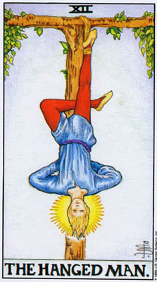
在看见你把自己的生命塑造成何种样貌的转折点之后，随之而来的是接受的平静；「正义」之后，是「吊人」。许多艺术家、作家和心理学家都深深被这张牌吸引，因为它简单的设计中暗示着伟大的真理。我们已经谈到过这上下颠倒的克势，和克闵的双腿之后的神秘学传统。在讨论「力量」牌时我们说过，神秘学家试图释放欲望的能量，并将之转化为心灵的能量。许多神秘学者依循传统瑜珈的概念，相信要做到这点的一种非常直接的方法，就是真的去以头倒立，好让地心引力使这能量从生殖器向下流到脑部。当然，只有最天真乐观的神秘学者，会期待这样的事果真会如子面般发生。他们或许相信，生殖液体中的微量元系会往下渗透，影响脑部；比较中育的说法是，身体姿势的逆转是一种非常直接的象征，意味着透过心灵觉醒而来的态度与经验的庐转。众人涨狂，你独平静。当其他人相信自己是自由的，其实却是被他们所不了解的力量推来拉去时，你却透过理解并拥抱那些力量，而获致真正的自由。
「吊人」倒吊在一棵形状像字母「T」的树上。这是古埃及十字架「安卡」《ankh）的下半部，是象征生命的符号，有时也被称为「道」十字（Taucross）。根据凯斯的说法，「安卡」在埃及相当于希伯来字母「Tau」，也就是对应于「世界」脸的字母。如此，「吊人」也可说是通往「世界」的中站。「12」是「21」颠倒过来的这个事实，也显示了这一点。而如果你将「吊人」牌亿立过来（让那人变成正立），你将会看见和「世界」舞者几乎一模一样的姿态。因此，和如果我们问，哪张牌是大阿卡纳的中点，答案不是一张，而是三张——「命运之输」、「正义」，以及「吊人」，这象征着一个过程，而非一个时间点。
请留意当「世界」舞者的双手是握着魔杖向外伸展，「吊人」的双蛋却是交叉在背后。也请记得，他是上下倒吊的。在此阶段，一种深刻的心圳觉知只能借由从社会中隐退才能维持。在「世界」牌中，我们则看见那同样的觉知保持在生命所有的外在活动当中。
「员人」悬吊在「安卡」十字架上，这使他的树成为「生命之树」。北欧神话中，奥丁（Oodin）大神将自己倒吊在世界之树「伊格卓希尔」（Yggdrasil）上，以自身献祭。呼应这个神话，我们也可以将这绞架称为「世界之树」。这棵巨树苯根于冥府（无意识），然后向上穿过物质世界（表意识），再延伸到天界（超意识）。那最初表现在「恋人」牌图形中的概念开始真正发生了。我们先前视为概念的，现在，在「正义」之后，变成了一种真实的经验。「吊人」的数字，「12」，是「2」乘以「6」，也就意味着，「女祭司」将「恋人」提升到了一个更高的层面。
在这种种旬微意义之外，「吊人」打动着我们，是因为它展现着一幕平静与领悟的直接意象。这张牌如此强烈地展现着宁静安详，因为「吊人」已经臣服于生命的韵律。在古老的入门仪式中，「臣服」乃是要入门者加入仪式，而非只是旁观。对许多现代人而言，它意味着释放封锁多年的情感。请留意这两件事都是行动；向「世界之树」臣服是我们采取的一种实际的步骤，而非被动的等待。
T·S·艾略特的诗作《荒原》将个人对情感臣服的概念，与一次战后欧洲生活的荒芜，以及古老的圣杯秘仪连结了起来。受伤的渔王（FisherKing）能被「一世的审慎也无法撤销的片刻臣服」治愈。在这首诗较前面的段落，主角被告知要「小心溺水而死」。小我将臣服视为死亡——消融在生命之海中。提出这个警告的是一位塔罗占卜师。艾略特的诗助长了塔罗牌在一九二0年代的风行。特别是，它让「吊人」这张牌出了名。事实上，「吊人」并没有出现在诗中，但正因为他的缺席这才重要。
艾略特声称他对塔罗一无所知，只是从中借用了一些意象。如果是这样，他便是直觉地了解到，「吊人」与水之间有着某种关联。大多数塔罗喀巴拉学者，将字母「Mem」分配给「吊人」牌。「Mem」代表「海」，因此也代表「水」元素。索索斯垂丝夫人警告她那位盲目于小我的问卜客，「小心溺水而死。」她对他说，「我没看见『吊人』，」但她接着指向另一张牌，「溺死的腓尼基水手」（并非正规的牌名），说道：「这是你的牌。」
「吊人」交叉的双腿代表颠倒的数字「4」。「4」象征有着四个方位的大地。借着逆转自我的价值观，「吊人」将世界转到了他的头顶上。他的双臂和头部，共同形成了一个尖端向下的「水三角」。通往超意识的道路用是透过无意识。在图十三中，莱德牌右边的「金色黎明牌」中，「吊人」是悬吊在水面上的。
因此，我们在「吊人」的身体中看见了「4」——世界、意识，以及「3」——在这儿代表水，或无意识。这两个数字相乘，便形成「12」。在相乘中，原来的数字消融了，形成了某种大于其总和的东西。
数字「12」，如同「21」，隐含着「1」与「2」。「魔法师」的魔杖
所接引下来的能量，现在进入了「吊人」。在这个意义上，这张牌呼应着「魔法师」。我们可以在环绕「吊人」头部的光圈中看见这能量。真正感受到续含在生命中的灵能，是「币人」在全然平静中的一种强大而兴谁的经验。数字2」令人联想到「女祭司」；水的意象亦然。「女祭司」与「两人」这两张牌都意味着一种抽离，但是当二号牌代表接受性」的原型，十二号牌则显示它的一种轻验。
「1」加「2」等于「3」。「皇后」透过情感的投入而直接感受生命，而「吊人」则是透过内在的觉知来感受它。
在占卜时，「吊人」传递的信息是「独立」。正如「吊人」意味着做你觉得最好的事，即使别人都觉得很蠢；「吊人」意味着做你自己，即使别人觉得你的一切都头而倒之。它名征着与生命深刻连结的感受，也可以
「吊人」牌逆位时，是指没有能力挣脱社会的压力。我们未能听从内在的自我，而是依照他人的期忌或要求行事。我们对生命的觉知始终是「二手」的，从不是一种直接的经验，而只是一系列的刻板模式，就像那种以父母的指令或电影明星的举动为模型，去塑造自己行为的人。
这张牌逆位时，也意味着以某种方式与你内在的自我交战。它可以意味曆，此人试图否认自身菜个基本的部分，或只是无法接受实相，并以某种方式不断地与生命抗争。由于他让自己的小我与世界对抗，此人也将永请无法充分体验生命。我们任何人都无法了解「活着」的完整意义，直到我们——像奥丁那样——将自身悬吊在「世界之树」上——它的根超越了知识，深植在经验之海中，而它的枝极则消散在无尽的星子之间。
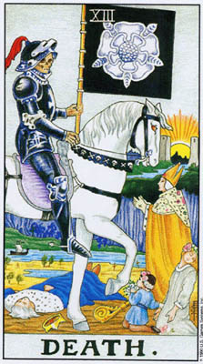
亚瑟·韦特所设计的十三号「死神」牌，偏离标準塔罗图像的程度不下于「恋人」牌（位于「死神」正上方）。图十四右方是秘传的「金色黎明塔罗」，但是，虽说是秘传的图像，它却示现着「死神」较为古老、在本军上属于社会性的讯息。和死神谁也不放过，王侯庶民一视同仁。和死亡的这种基本的「平等性」，是中世纪很受欢迎的布道主题。这种概含之久远，至少可以回溯至犹太人丧葬的习俗，所有的人都以同样的方式埋葬：一袭白寿衣，和一个朴素的松木棺，如此，在死亡中，富人与穷人便归于平等。
如我们可以料到，和死亡的伟大威力引领我们超越「民主平等」，去思考其哲学及心理学上的意义。和死亡，如同生命，是永恒而始终临在的。个别的形式总是在死去，而其他的不断生起。没有和死亡去祖除掉老旧的，新的东西就无法在这个世界上找到位置。许多科幻小说都描写过，如果世界的领袖不会死，会造成怎样的专制社会。佛朗哥死后西班牙的解族，适切地显示了死亡的重要。
当我们死去，肉身会腐朽，只留下骷髅。骷髅最终也会消逝，但是它练存的时间至少够久到足以暗示永恒。因此，「金色黎明」牌中的骷髅，暗示着永恒战胜了短暂的生灭。骷髅也有其神秘学上的意义。在世界各地，萨满的训练都包含运用药物、冥想，甚至刊掉脸上的皮肉去看见自己白骨的方法。借着将骨头从皮肉中释放出来，萨满将自身与永恒连结了起来。
由于人们怀怕死亡，他们便在其中寻找理由与价值。基督教教导我们，死亡让我们的灵魂从罪恶的肉身中解脱出来，好让我们得以在未来的更高生命中与上帝相会。荣格曾扎文谈过对来世之信念的价值。若无此信念，死亡似乎太过可怕，令人无法承受。人
另外也有人指出，死亡让我们与自然合一。将我们与世界隔离的意识将会消逝；虽然肉体将会腐朽，那也只意味着它会喂养其他的生物。每次死亡都会带来新生。许多人觉得自己会被吃掉的概念，连去想想都太过恐怖。近代为尸体防腐、化妆，让他们看来好似活着，然后用密封的金属棺材理葬的做法，便是出于让尸体与自然——即使在死后——保持隔离的渴望。
事实是，由于我们不会知道一旦灵魂离去后身体将会如何，我们真正恐惧的是人格的毁灭。将自身视为与生命分离的是小我；因为它只是一个面具，因此小我不希刻死去。它渴望令自身高于宇宙。
如果我们能够接受死亡，我们将能活得更为完满。小我永远不想释放能量；它试图固积能量，以对抗死亡的恐惧。其结果是，新的能量便无法进入。我们可以在人们恐慌时的呼吸方式中，十分生动地看见这一点。他们试图大口吸入空气，不让任何空气出来，结果反而喘不过气来。
在性行为中，小我也试图贮藏能量。它对抗高潮，抗拒臣服，因为在那个时刻，小我部分地消融了。在伊莉莎白时代的英格兰，性行为常被描述为「死去」。而塔罗中的「死神」正是位于「恋人」牌的正下方。
由于小我极其抗拒死亡的概念，因而令我们无法享受人生，有时我们必须采取极喘的手段去超越它。古代的入门仪式总是会带入一种模拟的死呈与重生。入门者被诱导去相信，他真的要死了。执行仪式者用尽一切方式，让这死亡尽可能地逼真，好让小我受骗，确实地体验到这种可怕的自我消蝉。煞后，当入门者「重生」之后，他会体验到一种新的成熟，与一种新的人能量的自由。近年来，许多人透过迷幻药体验到十分类似这些仪式的经验。他们相信自己就要死了，然后感觉自己被重生。然而，没有经歷过由|「吊人」所象征的准备过程，这种经验往往极度令人心神混乱。
不同于许多人所相信的，「死神」牌事实上并不意味着转化。更準确地说，它是对我们示现当我们放弃旧有的面具、容许转化发生的确切时刻。如果我们思考塔罗与心理治疗的类同处，或许我们将更能理解这一点。透过意志力（「力量」），此人在治疗师/导师（「隐士」）的协助下，元许关于自己究竟是谁、并希望摆脱哪些习惯或恐惧的知识浮现（「命运之轮」与「正义」）。这份知识带来平静和改变的渴望（「吊人」）。但这时有种恐惧来袭了。「如果我放弃我的行为模式，」这人心意，或许就什么也不剩了。我将会死去。」我们在小我的掌控底下活了这么多年，以致于我们相信再没别的东西存在。这面具是我们所知的一切。人们往往会在心理治疗中停滞许多年，只因为他们惧怕释放。「愚人」的空无令他们害怕。事实是，他们是对的。由毕生的行为创造出来的「我」确实会死去。这个人将会停止存在。但是某种别的东西将会生起。
韦特设计的图像，为十三号牌增强了心理学上的意义。牌上的四个人展现了面对改变时，四种不同的态度。被击倒在地的国王，代表僵化的小我。如果生命以足够的力量向我们袭来，小我可能会骨溃；若是无法适应极端的变化，可能便会导致精神错乱。教士站立着，直接面对死神；他之所以能这么做，是因为他硬挺的法袍和帽子保护、支持着他。在这儿我们看见信仰体系的价值，帮助我们超越对死亡的恐惧。那少女象征部分的纯真。此处的小我并不僵固，但仍意识到自身，不愿臣服。因此她虽跪着，但却把脸转开。只有那小孩，代表全然的纯真，能够天真地面对死神，献给他一束花。
死神穿着黑色的胡甲。我们已经看见过黑色与黑暗，是如何象征生命一的源头，以及其终点。黑色吸收所有的颜色；死亡吸收所有个人的生命。周髅骑着一咆白马。白色反射所有的颜色，因而象征纯洁，但同时也象征空无。旗帜上的白玫瑰代表欲望被净化了，因为当小我死去，自私与压迫性的需求也随之死去。
在牌的后方，我们看见太阳在两根石柱之间升起。小我是属于二元对立的外在世界，将经验分割并分门别类。透过死亡，我们三受到生命光芒四射的力量，它只知其自身。石柱前方的景物令我们联想起所有神话都曾描述过的「亡者的国度」。我们催怕旧有自我的死亡，因为我们不知道之后可以期待什么。那些练习「白骨观」的萨满，主要功能之一就是先行走过「亡者之国」，好能引领其他人的灵魂。
一条河在画面中央流过。河流，如我们在「皇后」牌中见到的，象征着变化与永恒的合一。河流汇入大海的事实，令我们思付宇宙的无定形和统一性。那艘小骨，令人联想到法老王的葬船，象征着穿越死亡、被带入新生的「真我」。
无论图像为何，所有版本的「死神」牌都是十三号。虽然大多数人都认为「13」不吉利，但他们都不知道原因何在。在西方文化中，「13」是指犹大，因为他是「最后晚餐」中的第十三人，因此这个数字意味着基督（和所有的人）之死。十三号星期五尤其不吉利，因为基督是死在一个星期五。但我们也可以将基督视为第十三个人。死亡带来复活。
在某种更具象征性的意义上，「13」不吉利，是因为它带我们越过了「12」。「12」是一个所谓的「完美」数字。它结合了「1」与「2」的原各，并象征着黄道（有十二宫），因而也象征宇宙。它可以被「1」、
2J」、「3」、「4J」和「6」整除，比其他任何数字都多。「13」则破坏了这份优雅。它只能被「1」和它自己整除。再一次，我们可以超越这种象征用法的负面面向。正因为它毁坏了「12」的完美，「13」意味着一种新的创生；死亡打破了蕾有的形式，为新的开路。_13」被视为不吉利的另一个原因，是因为它令人联想起月亮骇人的晦暗幽光。一年太约包含十三个月圆周期（月亮每29.5天绕行地球一周）。月亮不仅与阴暗和神秘连结在一起，它也在每个月里经歷自身的死号与重生。基督死后三天三夜在地里，之后从死里复活——这可能也借用了更早的月亮象征。因为从月亏的最后一线微光，到第一轮新月出现之间，月亮会消失三天。由于月经周期与月亮之间的联系，远古世界的月亮壶拜主要是归属于女性。许多人相信，中世纪的女巫事实上是异教月亮崇拜的一种地下残存物。这就是我们的基督教（和父权制）文化将「13」视为不吉利的另一个原因。它暗指着巫术，以及以秘密仪式崇拜月亮的女性颠覆份子。_13」的两个数字加起来成为!4」，「皇帝」。透过死亡，我们克服了外在「社会性」的自我。由于「13」是「3」的较高形式，这张牌也呼应着「皇司」，并再次提醒我们，在大自然中，生与死是不可分的。
在占卜时，「死神」牌意味着一段转变的时刻。往往，它也暗示着对改变的恐惧。在最正面的意义上，它显示清除老旧的习惯与僵化固着，允许新的生命浮现。在最负面的意义上，它暗示对肉体死亡的一种令人瘫痪的恐惧。这种恐惧要比许多人所了解的要更根深本回，往往一次有许多正面征兆的占卜，却因为在「恐惧」的位置出现了「死神」牌而有个糟糕的收场。
这张牌送位时，意味着受困于老旧的习惯中。贴特将之描述为生命中一的「避性、昏昧、了无生气」。这种呆滞、沉闪的生命威，撞饰着小我试图规避改变之时而不择手段的抗争。这张牌总是意味着，死亡——以及随之而来的重生——不仅仅是一种可能，在某种意义上，更是一种必要。死亡的时刻来临了。借着将我们淹没在昏沉中，小我防范着对此一事实的学知进入意识中。迟滞、厌伴和消沉，往往隐藏着内在的恐惧。
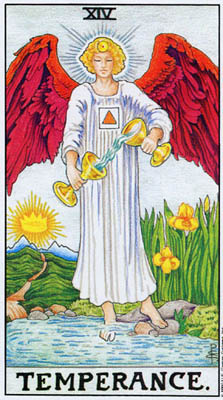
「战车」牌象征一个「小我」被成功地建构了起来，能够无往不利地因应人生。随着时间过去，这个小我变得僵化；慢慢地，此人的行为越来越不是对实况的反应，而逐渐成为一连串的习惯。大阿卡纳第二行的目的，就是将我们从这个虚假的人格中释放出来，同时让我们瞥见宇宙中更高的真理。「节制」，出现在「战车」牌正下方，显示一个人的行为再次与真实世界连结起来，但却是以一种比以往更具意义的方式。因为，如果说小孩是与生命直接地互动，他是没有意识地这么做的，而当意识成长，小我也随之膨胀。「节制」即是指结合「率真」与「知识」的能力。
「节制」这个词的意思是有所节度。对大多数人而言，这意味着自我控制。然而，塔罗的「节制」不走极端，这纯粹是因为极端并无必要。它并不是根据某种道德规范的人为禁制，而恰恰相反，是当种种情况发生时，一种真实而恰当的回应。
这张牌的英文原名「temperance」源自于拉丁文「temperare」，意思是「调合」或「妥善地结合」。一个人若是释放了内在的自我，其特征不仅是有所节度，而且会有能力去结合生命的不同面向。许多人只能借着将生活打包成不同区块来应付人生。他们为工作创造出一种人格，为私生活创造出另一种；两者皆是虚假的。他们将某些时刻与情境视为「严珊」的，其他则是「玩乐」，并小心翼库绝不对严盂的主题发笑。他们所爱的人，往往不是他们觉得有性吸引力的人。这一切的分隔，源自于没有能逐时逐刻面对生命的原新。「节制」则结合了生命的元素。在实际面，它结合了人格的元素，好让此人能与外在世界一同自然地流动。
这张大阿卡纳牌的整个画面都展现着「结合」的标记。当我们观看最左边的韦特一史密斯牌，我们首先会看见水从一个杯子注入叻一个椒里；生命的元素汇流至一处。请留意，底下那个杯子并不是位在上面那个的正下方，因此这图像显现着一种在物理上不可能发生的状况。在其他人看来，有「节制」之人以喜悦处理生命一切问题的能力，和仿佛就像是魔法。
莱德牌的「节制」，将两个杯子都描绘得像是具有了采力般。在图十五右边（ec）的沃斯牌中，上方那个水罐是银色的，象征来自月亮的水流，亦即「无意识」，流向太阳，也就是表意识。大阿卡纳的第二行始于从外在世界的撤离，以寻找内在的自我；现在’回归人生正常活动的时候到了。
图中那条道路尤其意味着回归。我们已经向下走入自我，现在我们要寻路回来，以充实后的自己再次投入外在世界。请留意先前的牌中的两根柱子现在变成了两座山。抽象的观念成为了现实；「节制」是一张关乎行荐的牌，而非概念。
牌中的天使一脚踏在陆地上，另一脚则浸在水中。如同水代表「无意识」，陆地则象征由事件和其他人构成的「真实世界」。「节制」的人格，其行事发自于一种内在的生命咸，连结了这两个领域。水同时也暗示着潜力，也就是生命的可能性，而陆地则象征着显化，或成为真实。「节制」之人，透过他的行动，将「吊人」所感受到的不可思议的惊奇带入了实相界。
BOTA版的「节制」牌（见图十五b）显示，瓶中的水浇灌在一头狮子身上，而火焰则从火炬滴落在一只老鹰头上。狮子座象征火（魔法师），而老鹰——天蝎座的「较高」形式——则代表水（女祭司）。天使正在调和基本的二元对立，将生命的不同面向——那先前看似毫无希望地水火不容的事物——无可分割地结合起来。且说，老鹰代表较高形式的天蝎，因为天蝎象征着无意识的能量。这种能量作为较低的形式——蝎子时，主要展现为性欲，是未发展人格的「动物性欲望」。当这能量通过觉知而被转化，便成为灵性的天鹑。「力量」牌显现这种能量，以狮子的形式被带引出来；在BOTA牌的「节制」中，我们看见这个过程已经完成，天应与狮子已结合在一起。
那天使形似希腊女神艾荤丝（Iris），她的标记是彩虹；BOTA牌上显现着一道彩虹，而莱德牌上则有与她同名的廊尾花（iris）。彩虹的象征意义是暴风雨之后的宁静，这提示我们「节制」牌展现着被「死神」的可怕经骏所释放的人格。彩虹由水而生，但却变成闪耀天际的光芒。天空是内在自我的象征，它一度似乎是黑暗、混乱而可怕的，现在被引领出来，喜悦地转化为新生的承诺。在犹太和基督教传统中，彩虹是大洪水之后重生的标记。那大洪水，如湿婆大神般毁灭了宇宙，在心理学上代表旧有模式的死亡。那些旧有模式已经不再能反映真理和生命的喜悦，并将人们引入_恶」中，也就是对自身及他人具有贰灭性的行为。
作为宙斯的使者，艾说丝进入真府，用真河之水疑满她的金杯。古希腊人相信，和死者的灵魂会渡过冥河，进入亡者的国度。唯有降入自我的地下世界，才能获致新生。
以宗教观点而言，天使象征着被死亡解放的不朽灵魂。如果你细看天使的领口下方，你会看见上帝的名字织和人了白袍的纹理中。在基督教传统中，灵魂在复活之后将会与上帝结合。正方形之中的三角形暗示着「灵」从肉体中升起。
就心理学而言，那天使象征着在小我死亡后浮现的生命能量。那三角形现在则示现着，这份能量在寻常活动的方框之中运作着。我们不需要创造奇蹟才能语受到自身与不朽宇宙的连结。我们只需做我们自己。语
还记得在「命运之轮」上，「四字母圣名」象征着命运的奥秘？在这里，这名字变成了我们的一部分。当我们学会在生命事件来临时，如实因应，而非依照习惯与防卫心态的例行反应，我们便成为自己命运的「主人」。
「节制」在占卜上的意义，正如这张牌的概念，起始于稳健适度，在一切事物中保持平衡，并采取中道。这张牌意味着正确的行动，无论何种情况来临都要做正确的事。常半，这意味着什么也不做。不人懂节制的人绳是需要做些什么，但是往往在某个情境下，一个人需要做的就只是穿待。这张牌的出现，有时是作为番华轻率与歌斯底里的牌之对治方式。
「节制」是指混和异质的元系，调和活动与情感，以产生一种和谐与平静之感。由于它意味着平衡并结合生命的不同面向，「节制」牌对小阿卡纳牌有着一种特殊的意义。如果某次占卜显示当事人被两种元素切割，例如，「权杖」与「圣杯」，亦即主动与被动，或是「圣杯」与「五角星」，亦即幻想与现实，那么「节制」——稳健中庸，并以内在的生命感行事——就能提供一个线众，将这些面向整合起来。
类似逆位的「吊人」牌，逆位的「节制」暗示一种狂野，走极端。在「节制」中，这是因为此人缺乏内在的体悟，去知晓对于某种情境什么才是恰当的做法。这张族位的大牌可以作为一种警告，你已经容许自己的生活变得支离破碎，从一个极端摆荡到另一个。事实上，它可以暗示着「让老旧习惯与恐惧消逝在过去」的伟大任务的失败。在一种简单的层面上，逆位的「节制」告诉我们要镇定下来，避免走极端；在它最深的意义上，它将我们送回「力量」，去展开那段漫长的，时而痛苦，时而骇人，但在本质上永远是喜悦的死亡与重生的歷程。
大多数人在摧点了人格的面具、能够以焕然一新的自我返回寻常的世界时，都会感到满足与实现。然而，总有一些人始终在寻求某种更高的东西——与实相界的灵性基础全然的合一。对他们而言，只是感受到这种灵能流过正己的生命还不足够。他们竟蛋以完整的意识去知晓这份力量，而他们的觉悟、教诲与典范能够禅益其他的人。对于这些人，大阿卡纳第二行的成就是一种准备，一种障碍的清除。
在生命最真实的形式中，它就只是纯粹、示分化的能量，在其中所有的活物同时存在着。永恒并非以形式、部分和碎片的面貌出现。意识保护我们不去感受这种铺天盖地的经验，它将生命的总体打碎，成为对立事物和各种类别。在「吊人」与「节制」中，我们在某种程度上超越了这些限制性的幻象，感受到生命伟大的力量，感受到我们自身是那力量的一部分。但即使在「节制」中，那分离的幻象又回来了。「节制」下方的牌称为「世界」，因为正是要透过体验这个手岗，我们才能与它合而为一。
太阿卡纳第三行起始于一个似非而是的店诡，一种表面上的沉沦，落人「恶魔」的幻象中。透过探寻这张位置特殊的牌的意义，我们对「解脱」的内洱有了一种新的理解。在太阿卡纳一开头，我们曾说黑暗与光明是密不可分的。人然而，那幽暗的、无意识的一面，深藏在「女祭司」的神殿中，唯有透过直觉方才得以体验。要越过那片帷幕，我们首先必须进入自我的幽暗处。许多宗教都讚颂着通过黑暗、进入永生之境的旅里，而当基督教会建立起崇府光明的宗教，它便驱逐了一切对黑暗的吾唤，将之斥为邪恶。「恶魔」常见的形象，便正是希腊神祗「潘」与基督的各种其他竞争者之混合体。
「塔」牌的意义取决于我们如何看待「恶魔」。如果我们将「恶魔」单纯地视为幻象，那么「塔」牌则显示这些幻旬被猛烈的剧变击碎。然而，如果「恶魔」是指受压抑能量的释放，那么被闪电击碎的幻象就不是别的，正是意识的帷幕本身。在每一行中，中央的三张牌都构成一个特殊的群组。第一行中，那是自然、社会和教育的三部曲；第二行则是变化，从「命运之轮」的外在愿景，通过「正义」，过渡到「吊人」的内在经验。在最后一行中，这三张牌显现了从「星星」的内在启示，回归到「太阳」的明意识的歷程。而在其间，充满了不可思议的奇异成，则是「月亮」的所在。
「太阳」并非终点。再一次，我们下降到黑暗中，去经验——在「审判」和「世界」中——一种和宇宙及充塞其间之灵能的全然结合。现在我们能够在外在世界中行动，同时也从不失去内在那份广冰与惊奇之咸。「魔法师」与「女祭司」在欢欣的舞蹈中合一了。
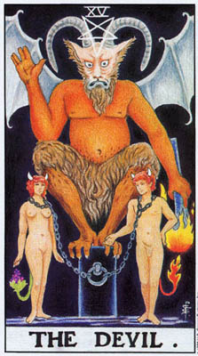
这个象征压迫的狰狞形象，为何如此迟才在塔罗中出现？在获致「节制」的平衡之后，为何会如此突兀地沉沦？「恶魔」的数字是「15」，化约为「6」，「恋人」，而事实上，我们可以说，当韦特重新设计、彻底改造「恋人」牌时，他是从「恶魔」牌倒推回去的。因此，在莱德牌中，「恶魔」，带着他的两个被俘的小魔鬼，看来就像是「恋人」牌的扭曲版。但是为何「本尊」牌出现得这么早，而扭曲版却如此接近终点呢？「恶魔」是大阿卡纳最后一行的开场牌，这暗示它为这一行的运作提供了某种极其重要的能量。且说，这一行是在处理超越自我之外的原型力量。开悟之路是否会引领我们走过「恶魔」的幽暗世界？但丁必须先穿过地狱，才能抵达炼狱和天堂；而神秘学者暨诗人威谦·布雷克（WilliamBlake）也认为，撒旦才是密尔顿的诗作《失乐园》（ParadrseLost）中真正的主人翁。
为了理解「恶魔」在秘传体系中的价值，我们首先必须思考它比较常见的意义：一种幻觉与压迫的力量。主要的幻觉是唯物主义，我们通常会把这个词想成一种对金钱的过度关心，但它比较适切的意义是「除感官世界之外别无一物」的观点。「恶魔」蹲踞在一个石墩上，类似BOTA牌的「皇帝」所坐的立方体（见图五，第71页）。但是那个立方体象征整个宇宙，而「恶魔」的矩形石墩却只是半个立方体，暗示着不完整的知识。
唯物主义者否定生命包含任何精神的成分，只追求个人的欲望——金钱、性与政治上的。由于这样的偏狭观点往往导致不快乐，「恶魔」牌遂演变成悲惨不幸的象征。然而，当我们细看那两个小魔鬼，却看不出他们脸上或姿态上有任何不舒服的样子。同时也请留意，那铁链并没有真正控住他们；他们脖子上的大环圈很容易就能解套。「恶魔」的力量在于「除此之外别无他物」的错觉。在许许多多情况下——从政治的压迫到不幸家庭生活的个人苦难，人们只有在了解到生命还有其他选项时，才会变得有意识地不快乐。
「恶魔」的姿势，一手向上，一手向下，令人联想起「魔法师」。一号牌「魔法师」举起魔杖指向天空，将灵性能量接引下来，而「恶魔」的火炬则指向地下，意味着除物质之外别无他物的信念。
「恶魔」的手掌心有个占星术的土星符号。这个行星往往被认为是象征祸事或不幸，但比较妥适的诠释是象征限制、弱点或约束。那张开的手指，加上数字「15」中的「5」，都令人联想到「教皇」二指向上、二指向下的手势。「教皇」的这个手势，象征宇宙不仅只是你眼前所见的一切，「恶魔」张开的手掌则再一次暗示，除了显然可见之物以外别无其他。
「恶魔」头顶上有个倒转的五角星，是黑魔法的标记。且说，五角星有着许许多多的含义。如果你两脚张开站立，双手伸开，你就会看出五角星象征着人的身体。正立时，头部在最顶上，而当我们将它倒转过来，生殖器就会跑到头的上方。在传统的基督教义中，理智的力量，分辨是非的能力，管辖着欲望。因此，倒立的五角星便暗示着让你的欲望压倒了判断力。「恶魔」的火炬点燃了那男子的尾巴，而体验过既无可抗拒又具有毁灭性的性需求的人，往往将它描述为体内燃烧的火。这张牌的背景是黑色的，象征黑魔法、没有能力看见真相，以及沮丧消沉。
如此我们看到了「恶魔」的传统意义：幻象、唯物主义、灾祸不幸，以及性的执迷。然而，这张牌负载着强大的威力。「恶魔」热烈地凝视着我们。谭崔（Tantra）的实践者将「拙火」描述为一种体内的火，起始于脊椎的根部，也就是尾椎，而被性的仪式唤起。
再思考一下那个五角星。性器官高于脑袋，这个意象令我们联想起莱德版的「恋人」，牌中那位女子——无意识与激情的象征——仰记着天使。我们也可以回想起位于「恶魔」正上方的「力量」牌，其中的狮子象征着被提升并驯服的动物性能量。我们已经谈过，神秘学者相信性能与精神能量其实是一体而同源的，由天蝎座的蝎子与天鹰的双重意象所象征。尽管听来奇异，但这个概念其实并不那么神秘。你不必是神秘学家或佛洛伊德学者，也会承认性在我们生活中的强大力量。有多少流行文化——情歌、爱情文艺电影、黄色笑话，和俚语是以它为轴心？如果对一般人而言，性的冲动如此具支配力，那么神秘学家试图汲取这份能量，将它提升到某种程度，使之最终完全转化成威力强大的开悟经验，不是也很合理吗？
一个更微妙的切入点是：作梦总是伴随着身体的性兴奋，阴茎或阴蒂的勃起，以及其他的迹象。梦境是无意识将自身以意象显现出来，这显示无意识在本质上是与性相关的，而梦境是无意识能量的一种局部的转化，成为一种较为宽广的形式。事实上，「无意识」这个词并非是指对我们揭露它的梦境与神话，而是在一生中支持着我们的伟大能量池。
西方文化教导我们，身体与精神在根本上是对立的。我们以为僧侣和修女禁绝性欲，是为了避免污染自己。但我们也可以用另一种方式看待独身生活。透过克制性欲，禁欲者得以将那份能量转移到另一个方向。在印度，性能量与精神能量之间的关联始终是被承认的。湿婆的象征便是阳具，而谭崔仪式则透过交合做为一种为身体充能的方式。对欧洲神秘学思想有着重要影响的诺斯底派门徒，也实践着与谭崔十分类似的仪式。而诺斯底门徒，如同之后的布雷克，也认为试图为亚当和夏娃提供关于他们真实自我之知识的撒旦，才是伊甸园真正的英雄。
如果通往灵性的道路要经过欲望，那么社会为何要压抑它们？而如果解脱的道路在几世纪前就已为人知晓，并且绘出蓝图，那么何以要将之保密？这些问题的答案，在于性/精神能量的可怕威力。当它被提升到较高的层次，它能将我们从二元对立的局限中释放出来。然而，如果这份力量被释出，但却示曾转化，它可能会导致着魔、性犯罪、暴力，甚至人格的毁灭。希腊的父权体制之所以攻击由女性主导的入神忘我的秘仪，原因并不单纯是性别政治。当信徒被自己体内释出的能量淹没，他们会鞭打自己，自残肢体，有时还会在田野狂奔，将未被安全地锁在屋里的动物、人，甚至小孩撕成碎片。只有受过训练的人，达到一种深层内在宁静的人，事实上，只有获致了塔罗称之为「节制」之理解层次的人，才能够安全地处理「恶魔」所暗示的力量。
事实上，「恶魔」所暗示的，要比性仪式和暴烈的能量多得多。在一种较为广泛的意义上，它象征着封锁在自我黑暗隐密区域之内的生命能，是以寻常方式无法进入的。它被称为「恶魔」，是因为对那些未曾准备好接收这份能量的人，它可能会展现为妖魔、一种宇宙间充满邪恶的感觉，或是耽溺于暴力的诱惑。我们在探讨第二行时，曾经谈过孩子会发展出一个强大的小我，好让自己不再害怕黑暗。第二行的作用，让我们瞥见了「生命之轮」底下的黑暗水域。第三行则要求无意识能量的完全释放。这样的洪流唯有透过进入那隐密的区域——包括它种种的幻象、恐怖和欲望——才会来临，这一切都能如此轻易地令尚未准备好的人，从最后的目标上分心。
请再次细看「教皇」（见图六，第77页）与「恶魔」的姿势。祭司往下握住的两指，意味着生命不仅只是肉眼之所见；同时那手指也暗示，通一往更深层知识的道路是封闭的。「恶魔」张开的手指，可以象征除所见之外无物存在的狭隘错觉或者它也可以象征看见一切。没有任何东西被隐藏起来。「恶魔」这个特殊的手势——四指两两并拢，中留一缝，正是古代耶路撒冷大祭司接引灵能的手势。它至今还留存在犹太新年的庆典中，作为「祭司赐福」仪式的一部分。
保罗·道格拉斯曾将十五号牌称为「集体无意识的黑暗面」。当所谓的「黑魔法师」（这一度是「恶魔」牌的别名）召唤出恶魔，他事实上是在带出自身之内的一种力量。如果施法成功，这魔法师便制服了恶魔，使他成为自己的仆人。也就是说，魔法师能够运用被释放的能量，而非受控于它。要做到这点，魔法师必须净化小我的欲望与恐惧。简言之，他必须达到「节制」的境界，否则恶魔将会在这场对抗中「取胜」。魔法师便会成为恶魔之幻象的奴隶。
我们已经对「恶魔」牌的一种激进的诠释做了相当深入的探讨。这张牌在占卜上的意义则往往适用比较常见的诠释。我们采用比较明显的意义，是因为在占卜时，这张牌是在事件的脉络中出现的。「恶魔」可以是指对生命的一种狭隘的唯物主义观点；它可以意味任何形式的悲惨痛苦或沮丧消沉，尤其是感觉受到束缚或桎梏，并怀有没有其他可能选项的错觉。如果它与「恋人」牌一起出现，往往显示一段始于爱情，但却演变成陷阱的关系。
「恶魔」牌暗示你成为自身欲望的奴隶，而非依照你认为最好的方式行事。这可以意味一种控制性的执迷，尤其是在性方面的，令此人感觉受到牵引，去做出他自认在道德上令人厌憎的行为。极端的例子是性罪犯；而在一种常见得多的层面上，许多男女都曾发现，自己受到他们十分反感之人的强烈吸引。屈服于这些欲望所导致的无助与羞愧的感觉，就是属于「恶魔」。
稍早我们观察过，那对被锁鍊拴住的男女脸上平静的表情。这显示对恶劣情况的接受。最终我们渐渐会将自己不快乐的处境视为正常，甚至可能会抗拒改变。另一方面，逆位的「恶魔」则显示一种挣脱的企图，试图脱离某种苦难或束缚，无论是实质的或心理上的。此人不再接受他的处境，而向解脱迈进。吊诡的是，正是在这样的时刻，我们会最为强烈地感受到自身的痛苦和生活的局限。在我们能够挣脱枷锁之前，我们必须先意识到它。因此，那些正在经歷某种解脱过程的人——例如，离家、心理治疗，或是一次难熬的离婚——往往发现自己远比盲目接受自身受压迫的处境时更不快乐。这样的时期，对一个人的发展可能极具关键性。如果此人能挨得过去，他将变得更快乐，并拥有更成熟的人格。有时我们会觉得这段过渡期痛苦得难以忍受，而又退转回枷锁中。
如果逆位的「恶魔」出现在「过去」位，这往往意味着改变已经发生，但是悲伤、愤怒、沮丧的感觉仍然留存，或许已经意识不到，但仍发挥着影响。我们必须时常处理过去的心魔，即使是那些我们在实际层面上早已克服的。我们的心从来不放掉任何东西；它永远不会把任何事就这么忘了。解脱之道在于运用、并转化捆扎在每一个经验中的知识与能量。
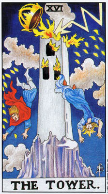
如同「恶魔」，这张大阿卡纳牌带有许许多多意涵，而大多数塔罗书籍所提供的解释则都指出它表面的道德教训。「塔」据称是唯物主义的宇宙观，是击向纯粹奠基于物质原则之生命的毁灭闪电。即使在这儿，我们也可以发现许多微妙之处。虽然，这或许看来像是某种外界的力量，击个了思想狭隘的人，这张牌中所显现的暴力，事实上衍生自心理的原则。只为满足小我对名利及物质享乐之需求的人，忽视了内省和宇宙的灵性之美，在自身周围筑起了一座监狱。我们将这监狱投射为这座「塔」；灰扑扑，被岩石包围，还戴着一顶金皇冠。同时，由于「无意识」使劲要挣脱束缚，有一种压力在心灵中积果。梦境变得混乱，争吵和郁闷也越来越频繁，而若是此人连这些现象也去压抑，「无意识」往往便会找到某种管道爆发出来。
这种爆发可能会以某种外部的灾难出现。亲友与你反目，工作一败涂地，这种或那种的暴力纷至沓来。「祸不单行」确实是生命的谜团之一。然而，这些问题中有多少是肇因于长久被疏忽，或未被妥善处理的情况，趁我们变得脆弱时打击我们？而如果我们亲近之人的某些问题、疾病或死亡，或是社会上的经济动乱，甚至天灾，像是暴风雨——或是雷击——与我们个人的问题同时出现，这样的巧合又再度显示，生命所包含的确实不仅止于我们眼前所见。
我们不应认为灵魂，或说生命，只是为了惩罚我们才带来灾难。降在高塔两旁的「火滴」，形状像是希伯来字母「yod」，也就是上帝圣名的第一个字母。这些「火滴」象征着恩典，而非愤怒。宇宙，以及人类的心灵，不会允许我们永远被禁锢在幻象与压迫的牢塔中。如果我们无法平和地释放自己，那么生命的力量就会安排一次爆发。
我无意暗示我们会在任何层面享受这种被「震飞」的痛苦经验，或是我们能够看出这种手段的有益目的，或甚至说这个过程总是能够带来自由。一连串的灾难，或是一段时期的激烈情绪，往往会瘫痪一个一度坚强的人格。重点只在于，如果没有其他的出口，「无意识」便会在我们四周爆发，而我们可以运用这个经验找到更佳的平衡。有些塔罗牌称这张牌为「恶魔之屋」；但也有些却称它为「上帝之屋」，这提醒我们，摧毁我们心灵牢笼的是灵性的力量。
上帝与恶魔之屋的连结，有一层更深刻的涵义，而希伯来文的数字体系更为直接地暗示了此一涵义。希伯来文中的「蛇」，其数字值与「弥赛亚」（救世主）相同，因此也被认为隐含着相同的意义。恶魔是上帝的阴影。在第十五号「恶魔」牌中，我们看见，寻求与生命合一的人，必须引出平时被表意识人格压抑的能量。然而，在拥抱「恶魔」时，我们却会危及「节制」所展现的平静与均衡。我们将心灵置于一条狂暴的航道上，导向「塔」牌的爆发。荣格将表意识描述为一道水地，阻挡「无意识」之河的自由流动。「节制」的作用就像是某种水闸，让水以受控制的速度流过。「塔」则将这水坝完全炸毁，释放被封锁的能量，成为一道洪流。
为何要采取这样一条危险的路径呢？答案是，想要最终越过意识的屏障，或是打破将生命分离为对立面、将我们与自身之内的纯粹能量切割开来的一切，没有其他道路存在。横挂在神殿前方的帷幕就是表意识的人格，保护我们免于接触生命本身。正如神秘主义者、萨满巫师，以及有过狂喜经验的人一再证实，永恒就在我们四周，令人目眩，排山倒海。没有做好准备的心灵无法涵容这样的力量，于是表意识就前来救援，阻断我们灵性能量的主要部分，将经验打包成时间和对立的类别。
神秘学家也告诉我们，「天启」的降临就像闪电，以一道令人目眩的闪光摧毁物质世界的幻象，就像保罗在前往大马士革途中所见，或是佛陀在菩提树下体悟到的。无论你冥想了多久，祈祷或接受神秘学训练多少年，真理不来则已，一来就是这样倏忽而至。这并不是说准备是没有意义的。大阿卡纳头两行所展现的工作有着双重的目的。它不仅让我们变得够坚强，在闪电来临时能够承受，同时也将我们置于引来闪电的位置。所有神秘学的实践都始于一个假设：天启的闪电是可能召唤而至的，一个人可以采取特定的步骤去令它发生。
这些步骤包括聆教、冥想、小我的死亡，以及最终的拥抱「恶魔」。透过释放这份能量，我们越过了压抑的路障，将自我向闪电开放。因为灵能始终存在，是我们自己对之盲目。借着进入自我的黑暗中，我们将自身对光明开启。
显然，这是一个危险的过程。还没准备好的人可能会困陷在「恶魔」的幻象中。我们也将看见，能量的释放——当心灵试图将它与表意识的觉知整合起来时——本身便有其危险。神话中的英雄如果未曾小心地准备，当他从迷宫的中心返回时，便可能会迷失方向。
「塔」牌位于「女祭司」正下方，因为它显示帷幕被撕扯了开来。同时，闪电也令人联想起「魔法师」。流经「魔法师」身上的能量与真理，现在火力全开地击来。在「塔」牌中的那两个人身上，我们也看见了一号和二号牌；一个身穿蓝袍，另一个则披着红色的斗篷。先前如此多张牌所象征的两极性，现在被存有的整体淹没了。数数那形似「yod」的火点，你会发现一共有二十二个，正是大阿卡纳的数目。你还会发现，它们分为十个和十二个两组。苏美人使用十进位（人有十根手指）的数字系统来计算世俗事物，但用另一种以十二（黄道有十二宫）为基础的系统，用于灵性事物的计算。这种二元性同样也是幻象。这两个世界都是同样的灵火的显现。
被击毁之高塔的意象，令人联想起《圣经》中的巴别塔。在字面上的层次，这个故事解释了人类为何有这么多种语言，在道德上它则教化我们，不要把信仰置于人类的能力上（「塔」代表唯物主义）。但是我们也能在巴别塔的毁灭中看到另一层意义。击落的闪电是上帝在对人类直接说话，而非间接地透过物质世界的寻常现象。
一刹那间，上帝的语言取代了建造那高塔的人类的语言；天启取代了逐步建构的感官知识。在耶稣升天后的那个犹太五旬节（Pentecost），圣灵降临，打乱了人类的语言；人们开始「说方言」，或是发出动物的声音。萨满巫师在恍惚状态中，也会说鸟兽的语言。人类语言是一种文化的面向，是对意识的一种限制。许多语言学家，特别是班杰明·霍尔夫（Benjamin Whorf），论证了我们的语言限制了我们感知自然的能力，就像是覆盖在宇宙之上的滤镜。而真理，和神秘学家告诉我们，是无法以言词传达的。
「塔」牌的数字「16」可以化约为「7」，「战车」。凯斯和其他塔罗学者都曾将它和语言连结起来。「塔」牌的上帝之语，在一瞬间摧毁了文化、语言和意识的一切精心的建构物。这样做的同时，它将我们带回「命运之轮」底下的混沌之海，以及「女祭司」帷幕之后的一泓池水。
在某些方面，「塔」牌是所有大阿卡纳中最为复杂的一张；它比较幽微的意义与其显而易见的意义互相扞格（互相抵触）。就像「恶魔」牌，它在占卜上的意义通常取自其浅明的意涵。它通常意味着一段剧烈动乱的时期（实际上或心理上的），长期稳固之局面的崩毁，在愤怒基至暴力中决裂的关系。
由于这张牌带有如此暴烈的意涵，许多人一看见它便感到畏缩。这种反应引发了一个重要的问题：该如何看待塔罗中较为骇人的图像。我们必须学习去运用所有的经验，无论是「塔」还是「恋人」。当「塔」牌出现，我们一定要记住它能够带来自由；这种爆发是在清除某种已积聚了令人无可忍受之压力的情境。它们能够带来新的开始。
我们说「塔」牌的出现通常意味着难捱的经验，但并不是认定它较为深幽的意义永远不会发生。这张牌可以意味着启悟的闪现，尤其是当这样的启悟取代了一种受限的生命观。只有占卜者的直觉和经验，以及来自其他牌的暗示，能够指出明确的意义。
逆位的「塔」牌，意味着此牌正位意义的「修饰版」。狂烈暴力和动荡风暴仍然存在，但是比较温和。同时，这张大阿卡纳逆位时，还会带有「禁锢」——用韦特的话来说——的额外意义。当我们思考正位的「塔」牌带有「释放」的意味时，这个似非而是的弔诡就获得了解决。于是，当逆位时，这张牌意味着，我们不允许自己经歷完整的经验。借着牢牢控制我们的反应，我们减轻了痛苦；但我们也不曾释放所有被压抑的东西。在我们内心，痛苦的经验持续着，永远未能走完全程。我们为高塔挡开了闪电，也因而成为它的因犯。
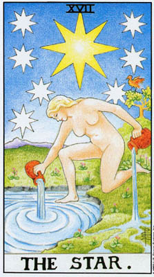
暴风十之后，是宁静。在经歷情绪的动深后，我们会得到一种平静与空间之感。在一个从未见过塔罗牌的人面前摊开牌来，「星星」牌几乎不太需要解释。牌上的一切都诉说着完整、开阅，与疗愈。
「星星」和「节制」这两张牌很值得拿来作个比较：两张牌中的人物都在倒水，都拿着两个杯子或水台，一脚踏在水中，一脚在陆地上。两者都在危机之后出现，但「节制」受到控制，「星星」却是自由无碍。星星少女未曾着衣，而是裸体。她并非僵直地站着，而是柔软且放松的。最后，当「节制」的天使来回倾倒着金杯，混合、却也保存着其中的水， 「星星」少女却是自由地倾注，相信生命将会不断供应她新的能量。这张图像暗示着，这些神秘的水瓶永还不会枯遇。
「塔」牌的能量释放，撕开了意识的帷幕。在「星星」这儿，我们已经进入帘幕之后。那池清水——尽管很小——代表着「无意识」；它与我们窥见的、隐藏在「女祭司」殿柱之后的是同样的水。现在这宇宙的生命能，由于此人将自身的生命之水注入其中，而被搅动了。
被倾注在地上的水，是指申「塔」所释放的能量不仅导向内在，也惠向外在；它将「无意识」与物质世界的外在实相连结了起来。我们可以将赦一股股水流比拟为神话的原型，是「无意识」借以表达自身的意象。「无意识」是个整体，没有形状或分隔，但它是透过神话的各个水流浮现于觉知之中。随着「星星」，我们超越了神话，来到它的源头——那无形无相的能量，就像是黑暗中透出的光。从黑暗到光明的转化，就是「无意识」——深藏于我们内心的广衰之境——转变为对「超意识」的狂喜觉知。
一道水流流回了池中，意味着一切原型都会混融回那无形无相的真理中。原型的价值，只在于它唤起内在自我、并将我们连结到源头的力量。那少女的脚并没有穿透池水。「集体无意识」只是被搅动了，并未被探入。
画面右方的鸟是朱鹭，是古埃及神祗托特（Thoth）的象征。托特被认为是一切艺术的创造者，从诗歌到陶艺皆然。神话中，是祂把各种技艺传授给第一批艺术家，但在一种更具象征性的层面，我们可以说，一切创疾性的行为原本都源自于那未成形能量的水池。我们作为肉体生物的功能之一，就是汲取这份能量，运用它来创作诗、画和织锦。这一切的人类创作都是由那几条水流所象征。每一次创作的行为，都是将灵性的能量鼎角洛页在共创造的事物中。同时，没有任何创作会使艺术家的灵感枯日，只要他与内在的源头保持连结。因此，那一道水流流回了池中，正如每个作品都给了创作者新的灵感。
「星星」出现在「皇后」与「命运之轮」下方。在「皇后」牌中，我们看见自然世界在热情中增添光辉。但是「皇后」穿着厚重的服装，这题示她是透过身外之物来表达自身的情感——自然、爱人，和小孩。在「星星」中，我们看见内在的自我，喜悦地体验它自己。「星星」少女结合了两种女性原型，「女祭司」的内在感受性被带引而出，并以「皇后」的热情表现出来。
在「命运之输」中，我们在神秘的象征符号中看见了一幅宇宙的愿景。此处，「塔」牌已经带领我们超越了愿景。而在「星星」中，我们直接地体验了「无意识」，而非其意象。
作为第十七号大阿卡纳牌，「星星」超越了「7」，释放出「战车」所控制、指挥的生命力。「1」加「7」等于「8」，我们可以看见，「星星」是「力量」被提升到一种更高的层次。欲望的狮子不再只是被驯服。而是被转化成光和喜悦。
这张牌上的星星全都有八个角，这是与「力量」牌的另一个联系。由于一个八角星，可以由两个四角交错的正方形交叠而形成，八角星的图形，有时被视为是正方形与圆型的中途点。正方形代表物质，而圆形代表精神。人类是精神与物质世界之间的链节；我们既能感受真理、又能采取行动的能力，使我们成为真理得以彰显其自身的载具。
过去基督教会曾将人类描述为动物与天使的中介。通常这会被赋予一种道德上的诠释：人可以依循欲望，或是理性。不过我们也可以借用这个隐喻，说明人类的觉知与行动，将物质世界连接上了「天使」。
尽管有着种种「显化」的暗示，「星星」牌其实非关行动」，而是「内在的宁静」。相对于「节制」与「月亮」，「星星」牌上并没有道路从水池边返回外在实相的山丘。虽然水流与朱监暗示着创造能量的运用，「星星」牌的经验是宁静的经验。在此时此刻，旅程可以等待。
在占卜时，「星星」牌传达着希鹿，一种疗愈与完整之咸，尤其是在情缮的风暴过后。「星星」与「塔」时常暗示着彼此，即使实际上只出现了其中一张。十七号牌是指「无意识」被启动了，不过是以一种十分驯良的方式。
逆位时，我们将自己对这张牌的宁静与希谜封闭了起来，感受到软弱、无旋，和呗刷。这种深刻的不安全感，有时会伪装成傲慢自负。如果「星星」指出人类是灵性与外在世界之间的联系，那么当这张牌逆位时，它便象征着这管道封闭了。而当生命的水流阻滞于内，外在就只能变得疲憩而消沉。
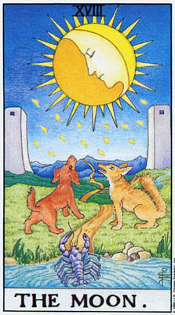
大阿卡纳第三行的真正任务并非只是获得启悟，而是将那份内在的狂喜带回到表意识。在「星星」牌上没有回返的路，它显示我们安住在黑暗转化为光明的荣光里。要运用那光，我们必须穿越扭曲与恐惧。
「星星」的经验超越了文字，甚至形象，虽然它以水的滑流暗示形象的浮现。在「月亮」牌中，我们看见这个过程正在发生，以灵视、神话与意象的面貌出现。「月亮」是想像力之牌，它将「星星」的能量塑造成表意识能够理解的型同。
神话永远是扭曲的。它们永远无法直接说出它真正要说的，只能诉谘深藏于自我之内的事物。「星星」搅动了水；当我们返回外在的觉知时，那些水便会产出它的创造物。记住「星星」和「太阳」都是发出自身的光辉，但「月亮」却是反射太阳隐匿的光芒。想条会扭曲，因为它是在将内在的经验反映到外在的心灵。
知同世界各地的神话所示现，「集体无意识」中不仅有着英雄，也包合者妖怪；其中有喜悦，也有恐惧。这是我们为何要以小我意识的保护层掩盖我们对生命之敏感性的原因之一，好让我们不再恐惧黑暗，以及「月亮」扭曲的阴影。
「月亮」诡异的幽光，总是会在人与动物身上引发奇异的感受。有个描进「瓶狂」的英文字「Iunacy」就是衍生自「1una」拉丁文的「月亮」。而在中世纪，人们相信发疯的人的灵魂飞上了月亮。即使在今天，许多医生和警察也观察到，在满月时，自杀和其他情绪混乱症候的发生率也特别高。月亮有某种东西会引发恐惧与奇异之感，正如太阳会让人放菜、抚轧人心。塔罗中的「太阳」牌在「月亮」之后出现；只有在通过月亮的奇异旅程之后，我们才能欣赏单纯素朴。
画面上的狗和狼，代表「月亮」所唤起的「动物自我」，正如满月可以令这两种动物囉叫终夜。「皇帝」牌，位于「月亮」的正上方，显示我们把社会的规范学习得如此之好，以致于这些规则成了习惯。在大阿卡纳最后一行，我们超越了这种「超我（super-ego）的压抑，在此过程中，「原我」（id）的狂野浮上了表面。狼人在满月下听叫是「无意识」力量的一种生动的隐喻：即使是最端庄可敬的人，这种力量也能从他们身上带出匠种原始、「非人」的东西。
作为十八号牌，「月亮」与「8」也有所关联。在「力量」中，我们看昂兽性被驯服了，被导向「隐士」。这儿却未曾指出这样的方向；当我们从「星星」归返，兽性也以全副的狂野回来了。只有当「星星」的能量在「世界」牌中被完全整合之后，那动物性的自我才能被彻底转化。请留意在。「力量」牌中，那个女子——人性的一面——控制着狮子。即使在「恶魔」牌中，那魔鬼也显然具有人形。但在十八号牌中却没有人。在那晦暗的凶光中，我们对于自己身为人类的感觉月解了。
我们可以在隐梦的余波中，感受到几分「月亮」的狂野。当我们惊醒后，会感到体内有种奇异的感觉。这种狂乱的感觉并非噩梦所造成，而比较是倒反过来。我们先前说过，梦是「无意识」能量被转化为意象。当一股能量的爆发太过强烈，梦的机制无法平和地消化时，便会造成图梦，以及你醒来时体内充补狂乱能量的感觉。
发疯也同样伴随着体内狂乱失控的店觉。常常，疯狂会以变成动物的形式表现出来。人们会手脚并用在地上爬，赤身裸体，对着月亮听叫。「无意识」能量的突然释放裂解了人格。在塔罗中，这种非常危险的时刻只有在长久准备之后才会到来——当一切寻常的小我问题都被抛下之后。萨满巫师也会经歷转化为野兽的过程，他们会在恍惚状态中像动物一样到处蹦跳、口吐兽语。但是萨满巫师，和神秘学者一样，已经以多年的训练来自我准备。他们同时有着知识的武装，知道该预期什么，而这些知识是由世世代代曾经身歷其境的前辈萨硝留传下来的。记住「月亮」的数字「18」加总起来是「9」，「隐士」。和那张牌的「老师/向导」在这张牌上是看不见的，因为我们必须独自面对「月亮」，但他们预先给我们的指相能够帮助我们找到道路。
如果说，陆地上的动物象征人类的野性，那只营虾则是某种非常异质的东西。在韦特写过最为生动的文字中，他称之为「那比野兽潜伏更深的」。它象征着「集体无意识」之中最为普遍的恐惧，在幻象中被体验为无名的恶魔。这种恐惧的浮现，对那些透过深度冥想或药物等方式将自身的「月亮面」暴露出来的人，是相当司空见惯的。它们也会在萨满巫师的出神旅程中以怪物的面貌拦路而出。这种蕊：惟的觉醒，往往被店受为动物从水中或油状液体的池中浮现，可能会引发非理性的选民。然而这些意象是我们内在世界的一部分；若不通过它们，我们就无法到达「太阳」。
那只螯虾从水中鑽出了一半。韦特告诉我们，御永远不会完全店上陆地，总会再次落回水中。最深沉的记*刷是孝些水思不会完全成形的。我们感觉到内在有某种东西，但我们永远无法看清它是什么。那半浮现的萤虾同时也暗示着，在返回表意识的旅程中，「星星」的深刻感受变得扭曲了，因为我们无法把它全都带回去。也由于这个原因，「月亮」令人不安，因为「星星」的宁静与惊奇被损贰、失落了一部分。
然而，尽管它会油起野性和了骇人的兴奋，月亮的冷光也能带来宁静。「月亮」据说能增长「慈悲的一面」，这指涉着哄巴拉生命树的「慈悲之柱」。更令人福目的是，落在那些动物头上的光点，再一次，是「yod」，上帝圣名的第一个字母，恩典的象征。如果，透过准备和单纯的勇气，我们接受了由最深的想像所引出的狂野事物，那么月襄」就会带来平静。恐惧消退了，而那想像力会带领我们归返，并以它的惊奇丰富了我们。韦特写道：「平和，保持静止；一种宁静将降临水面。」螯虾沉八水中，水面复归平静。道路仍然在那兄。
那条路穿过两座石塔之间，暗示一个进入未知领域的人口。在神祀学者与萨满巫师之间，「入口」是一个十分常见的象征，也曾出现在许多神话中。它有时是一个环状的图形，像是受茶继，或是共种自然的结构，像是洞穴（时常被比拟为阴道）。「入口」允许我们离开寻常的世界，进入心灵的哥异之境。
这张牌中的双塔带有另外一层意义——作为我们最初在「女祭司」神殿的双柱上见到的二元性之最后一次完整的显现。如果、「塔」牌的启示未能与寻常生活整合起来，那么一种新的、且更词敬烈的二元对立将从而产生。同时，我们曾经听见上帝话语的事实，全然改变了我们与二元对立问题的关系。先前，我们将二元性视为生命的基础，但是现在我们知道，事实上实相结合了一切事物；先前那片帷幕阻止我们穿越那两道柱子，在这儿，我们则已经通过它了。我们现在是从另一边回襄着这两座意识之塔。这儿的任务不是穿透内在的真理，而是将那真理带回去。
凡此种种，我们主要是从「月亮」牌令人不安的面向来审视它。但是如同我们在「死神」牌和数字「13」中所见，「月亮」也暗示了女性繁殖的力量和奥秘。月经（这个词与「月份」和「月亮」有关）是很神奇的，因为月经来潮的女子会大量流血，但却不会死去。再者，许多女性发现她们在经期中会变得较为情绪化，但同时也比较「通灵」。男人惧怕这种力量，因而围绕着月经创造了许多令人不安的神话与禁忌。但「力量」不一定得是具有破坏性、甚至骇人的。若是受到尊重，月亮带来的心灵觉醒将能丰富我们的生命。/妇
在占卜时，「月亮」牌意味着一种「无意识」的兴奋。我们开始经验到奇异的情绪、梦境、恐惧，甚至幻觉。我们会发现自己变得更富直觉力，和超自然感应力。如果这张牌是以正位出现，那么此人将容许这一切发生。当想像力获得接纳，它便会丰富我们的生命。但如果这牌以逆位出现，则意味对这种经验的抗拒。这种抗拒将导致恐惧，以及往往相当纷乱的情绪，因为此人不容许「月亮」抚慰人心的一面浮现。
和「女祭司」一样，「月亮」意味着从外在关怀的事物转移开来，变得倾向于内省。它可能意味着放弃某种特定的活动，或者是指一段退隐的时期。在许多文化中，女性会在月经期间退出日常的社会活动。这让她们得以专注于那种内在的「月亮」状态，并在安全的环境中体验「月亮」能量的强烈骚动。在塔罗占卜中，「月亮」不一定象征实质的月经或是从外在世界的抽离。实则，无论对女性或男性，它可以意指一种心灵的觉醒，以及对之关注的必要。然而，当「女祭司」象征着安静的直觉，「月亮」却是来自「无意识」的兴奋、刺激的意象。再一次，逆位的「月亮」意味着某种骚乱。此人不愿从阳光的一面移转开来，并可能试图以一大堆活动来击退「月亮」。然而，「月亮」是不容被否认的，如果我们对抗恐惧，它可能会变得更为强大。心灵——它是以自己的理由、自己的规律来运作一已经转向了「月亮」。如果我们容许自己去体验它，和’惧将会转为惊异，以及通往冒险的人口。
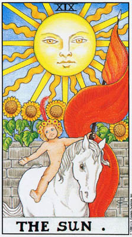
「太阳」牌，如同它上方的「吊人」，既是先前那张牌所显示的试炼之后一种喜悦的释放，也是为接下来两张牌中的死亡与重生所做的准备。「正义」要求采取行动，以回应我们获得的关于自身的知识，因此「吊人」是被动的；「月亮」则要求无为的臣服，因为我们无法控制在它影响之下生起的幻象，因此「太阳」展现着一种积极、充满能量的状态。借由接受「月亮」骇人的意象，我们将这能量带出自身之外，将灿烂的光辉给予一切生命。
在阳光之下，一切事物都变得单纯、喜悦而具体。「无意识」之光被带入了日常的生活。在「奥斯华·沃斯」版的「太阳」牌中（图二十b），那两个小孩有时被称为「永恒自我」和「肉体凡胎」，他们手牵着手，结合在一起。这两个人物和上方的太阳，将我们带回最早出现在两行之前的「教皇」牌中的三角形母题。此处，太阳的喜悦与单纯并不是在调停生命的内外两极，而是将之结合起来。
我们全都是小孩。以太阳宗教的说法，我们全都是伟大的父亲——太阳——的圣子。如果你细看沃斯牌中那两个人的身体，尤其是那女性，你会发现他们其实是成人。成功地穿越「塔」牌，给了他们一种孩童般的纯真。
塔罗展现了这条道途的各个阶段，给人一种时间推移的印象。然而，有时候，或许是大多数时候，它们全都是同时发生的——「塔」牌令人目眩的启悟，「星星」的内在光辉，以及「月亮」的强烈恐惧，全都结合在一刹那间的转化中。而其余波则是喜悦，一种所有生命和整个世界都充满奇妙光明的感受。
在所有世人之间，「开悟」都有着相同的特征，无论神话、教义和心理学理论对之做了何种文化上的诠释。开悟是一种经验，而非概念。开悟之人感到被一阵光爆击中，有时是彩色的，就像法斯牌中的「yod」光点。突然间，他看见或感到世界是充满灵性且永恒不朽的，而非日复一日劳苦而困惑的存在。这人感到全然充溢着一种童稚的喜悦——事实上，大多数孩童或许都从未经歷过，因为那被阳光击中的人，已经走过了孩童对黑暗的恐惧，因而超越了它。
在环绕世界的旅程中，太阳看尽了万事万物，因此它也代表知识。与太阳相关的神祗，像是阿波罗，据说知晓每一件发生的事。被太阳「击中」的人，体验到一种智慧之感，能以全然的明晰看清每一件事。英文中描述这样的人是「清明的」（lucid），这个字意味着清晰而直接，但它原本的意义是「充满光」。
有趣的是，光之神阿波罗的母亲是莉托（Leto），夜之女神，而他主要的神殿——德尔菲（Delphi）神论所，原本是属于黑暗的女神。即使在阿波罗的指引下，神论的智慧和光却是从黑暗之中运作而出的。迫使伊底帕斯去发现身世之谜的，也正是阿波罗。
春天的太阳从冬天死寂的土壤中带出了生命。过去在许多地方，人们相信太阳不仅让土地受孕，也让所有的女人怀孕。当生殖的生物学原理被发现，太阳的角色并未被抛弃，而是变得较为微妙。人们现在将灵魂——印度教所说的阿特曼（atman）或真我——视为包裹在胞胎中的阳光。佛教神话叙述佛陀在母胎内是一团光，因此她的腹肚就像明亮灯火上的透光灯罩般暧暧发光。祆教的创始人琐罗亚斯德也在母腹中发出强光，以致于邻人以为他家失火，提着水桶赶来救火。
诺斯底真知教徒进一步延伸了这种概念，相信人类的堕落将神性打散为存有的零星碎片。更重要的是，神性的光变成被「禁锢」（而非只是「包含」）在每个人体内。透过诺斯底的仪式去释放体内的光，以恢复这种统合，是每一个人的任务。喀巴拉学者以撒·卢里亚（Isaac Luria）也曾宣扬类似的教义。生命之树，或「亚当神人」（Adam Kadmon）——存有的合一，被击成粉碎，因为神性之光对它而言太过强烈。再一次，这光被分离、禁锢，因此协助这光复归合一，便成为每一个人的责任。
这些教义衍生自所有文化共通的「太阳经验」。被阳光「击中」的人，眼中一切事物——每一个人、动物，所有的植物和岩石，甚至空气，都是活生生的、神圣的，在充满一切存有的光中合而为一。然而，「太阳」牌并不是「世界」。在十九号牌中，我们感受到宇宙的合一与生意盎然，而二十一号牌则体现了这些感受。
「太阳」牌一般的图像，是画着两个小孩在花园中，通常是站在一 个圆圈之内。道格拉斯称之为「灵魂的内在花园」 ，一种纯净与神圣的感觉，一座新的伊甸园。当我们释放并转化了封锁于自身之内的能量时，我们会发现伊甸园从未失落，而是一直存在于我们之内。
莱德版的「太阳」牌上只有一个小孩，骑着马奔出花园。对韦特而言，「太阳经验」在本质上是一种自由的进发。它是挣脱束缚，是一种奇妙的解放，从日常受限的意识中释放出来，转为开放与自由。
图中的灰色石牆代表过去的人生，受经于一种对发边的狭职知觉。「太阳」的超意识，其特征是感觉我们并非孤立的个体，而是整个世界的 一部分。一旦你了解伊甸园存在于你之内，你可以自由地离开它，在你创造新生命时始终带着它，如此说来，我们或许便能为这张太了朵卡纳结合这两种图像了。
数字「19」暗示更高层次的「9」。包藏在「隐士」灯笼里的光——他所教导的智慧，现在迸发成阿布拉菲亚之喀巴拉第三阶层的狂喜经验。
我们在讨论「隐士」时曾说，那老者与荒凉的山峰是必要的幻象，因为内在自我唯有透过隐退才能被触及。在这儿，真理已经浮现，穿着僵硬 长袍的「隐士」，已转化为光辉四射的开放孩童。「19」的另外一半是「1」。「魔法师」的力量，结合「隐士」的智慧，便成为超意识。生命的能量和它的意义与目的合一了。
「1」加「9」等于「10」，「命运之轮」，这张牌的愿景是某种在我们自身之外、而我们试图去理解的东西。在这儿，我们以一种灵视般的方式从自身之内看见生命。而在此种灵视中并没有奥秘也没有象征，只有整个宇宙，充满着光。
如同画面上神奇的小孩，「太阳」牌在占卜上的意义是简单而直接的。
这张牌意味着喜悦、欢乐，和一种对生命之美的奇妙感受。在它最深 的涵义中，它意味着以一种全新的方式看待世界，看见一切生命都在喜悦与光明中合而为一。首要的是，它是一张代表乐观、能量与惊奇的牌。
逆位时，这些好东西并没有失去，但却变得混淆不清，就像太阳被阴云遮蔽了。生命仍在给予此人单纯快乐的时光，但它却无法被看清。这人不再「清明」，而必须下功夫去明了、实现「太阳」所赐予的伟大礼物——喜悦。
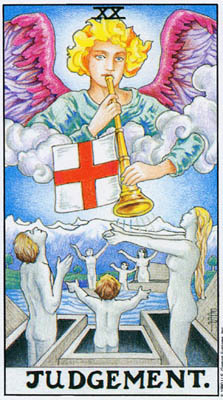
在「太阳」底下，我们看见一切生命都充满了灵性之光。这种对永恒真理的觉知，将我们从一切幻象与恐惧之中释放出来，现在我们感受到强烈的渴望——就像是来自内心深处的召唤——要将自身完全消融在含藏于一切万物的灵能，及奇妙的生命之中。
这种召唤，既来自内在也来自外在，因为「太阳」的作用之一，就是打破内在经验与外在世界之间的人为藩离。我们在最深的自我中感受到这份召唤，仿佛体内的细胞都充塞着一股剂悦的呐喊。与此同时，我们也体认到这召唤是来自于某种高于任何个体生命的力量。
「审判」作为一种「提升到更有意义之存在的召唤」的概念，在较为寻常的状况中也有其类似的情境。在生活中，我们有时会来到一个十字路口（留意旗幢上的十字），必须决定是否要做出某种重大的改变。有时仿佛就像此人内在的某种东西已经下了决定，表意识自我的唯一选择就是以适当的行动追随它。旧有的信念及思考模式、旧日的情境，甚至在我们尚未留意时便已死去了。
此牌多数的版本都只画着天使和升起的人形，但莱德牌却在背景中加上了一道山脉。韦特称之为「抽象思想的山脉」。这个词汇暗示着永恒的真理，超越了我们透过寻常管道所能汲取的有限知识。
身为凡人的基本特征之一，就是我们无法在一种绝对的意义上知道任何事。我们被我们短暂的人生，以及我们是透过语官的媒介来获取一切知识的事实所束缚。在现代物理学中我们学到，科学的研究永远无法对实相建构出一幅确切的图像，因为观察者始终是他正在观察的宇宙的一部分。同样地，每个人对人生的想法与感受，都受到他过去经验的影响。「抽象思想」，如同柏拉图式的「理想」（ideals），暗示着一种绝对感。
我们借由最后一次下降到空无的水域中，以期从一切不完全的知识中解脱、跃升出来，而达到这种「抽象性」。此牌正上方的「死神」牌，显现了一种消融。在那儿，小我正在死去，而「死神」牌强调着放手的恐惧。而此处，孤离的幻象消解了，这里强调的不是死亡，而是重生。
我们之所以称这张牌为「审判」，是因为如同「正义」，它包含着与过去经验的和解，作为超越它的过程的一部分。就「正义」而言，那种经验与反应是个人性的，是基于你过去的行为。在此处，一种高于你的力量在引导你、召唤你，而这「审判」并不仅只是关于你自身生命的意义，而也关乎存有的真正本质，以及你与一切生命作为其中一部分的方式。
在本书中，我们有时会提及对应于各张大牌的希伯来字母。通常我们所依循的体系是以「愚人」为「Aleph」的系统。另外还有一种体系是以「魔法师」为「Aleph」，而在此体系中，「审判」牌分配到的是字母「Resh」。「Resh」的意思是「头」，而如同韦特的山脉，它意指被这召唤所唤醒的真实心灵。「Resh」也令人联想到「RoshHashanah」，亦即犹太新年，其字面意义是「一年的头」。不同于世俗的新年，「RoshHashanah」其实并不是日曆的开始，而是代表创世的周年纪念。同理，「审判」指的不是环境的改变，而是一种新的意识，它员过将你自身与生命的驱力融为一体，而直接知晓真理。
「命运之轮」，带着它看不见的超自然因果律，是「10」号牌；「审判」是「20」号，「10」乘以「2」。远过大阿卡纳最后一列的连作，我们揭露了「女祭司」隐密的智慧，因此我们现在了解了隐藏在「命运之轮」中的内在奥秘。
天使旗帜上的十字意味着对立物的交会，所有分离事物的一种会合。它象征着两种时间的汇合；一种是我们以感官觉察到、并依循着它日复一日地生活的「寻常时间」，另一种则是「永恒」，是对于生命的灵性觉受。这两种时间是由十字的水平与垂直两条桢所象征。它们在中央的交会意味着较高自我并没有扬弃旧日的活动，而是以一种新的方式来进行它们。
「审判」上方的牌是「恋人」，在莱德版中，这张牌上同样也有一位天使。然而，在「恋人」牌中，那天使是某种更高真理的惊鸿一瞥，透过爱的媒介而被体验到。在此处，天使从云间倾身，向我们召唤。在传统版本的「太阳」牌中，我们看见始于五号及六号牌的三角形母题的最后一例，而此处我们看见两个成人之间有个小孩。生命的两极汇合一处，形成一个新的实相——每个小孩都既是双亲的结合，又是一个全新的生命。
画面前方的小孩背对着我们。这份新的经验是个奥秘，我们无法知道它的面貌，直到我们经验到它。那孩子隐藏的脸也暗示着，我们并不真的了解自己，也无法了解，直到我们听见并回应那召唤。几乎所有的神话中都有这样的故事，主角自小与镰母失散，被当咸普通的小孩养大。其他的人，往往就连小孩自己，都不知道他真正的身分。亚瑟王、摩西、铁修斯，还有耶稣基督都是依循这样的模式。我们在许多科幻小说中也常看见同样的概念，主角在一个奇异的地方本来，完全没有记忆；而他寻找正己真正身分的旅程，引领他发现自身之内强大的力量。常常，他发现自己身处一个巨大密谋的中心，甚至是大自然军作的核心。我们全都「忘了」自己真正的身分，与我们的「父母」分离。而当我们找到、或创造出真实的自我，我们将会发现自己身处宇宙的中心，因为中心就是每一个地方。无所不在。
大多数版本的「审判」牌都只画出前景的三个人。惧特牌又加上三个人，全都面向着我们，这暗示着「审判」虽然将我们引向未知，其中仍然有一种觉察（山脉也是其象征），知愁这未知的生命将以何种方式发展。
这些多出来的人也暗示着另一层极其重要的意义。透过展现一整群人的跃升，这张太阿卡纳提醒我们，没有所谓个人的解脱。每一个人都是人类的一份子，因此对整个族群的发展负有责任。当其他人还在受奴役时，交有人可以真正自由。据说佛陀曾以善萨之身返回世间，因为他明日他无法解脱自己，直到他令所有人类获得解脱。与此同时，任何一个人的解脱都能释放每一个人。这是因为，任何人成就了「审判」与「世界」的境界，都会改变每一个人生活的环境。佛陀的悟道与基督的复活，都被视为全盘改变世界的事件。我们或许会认为这样的概念只适用于佛陀和基督那样的圣哲先知，实则不然。我们不妨回想一下犹太经典中的名句（电影「辛德勒的名单」片尾曾经引述）：「拯救一个人，就仿佛拯救了整个世界。」
在占卜时，「审判」这张牌带有一种特殊的含义。无论你周遭发生着其他任何事，无形中都有一股推动力，一种来自内心的召唤，要你做出某种重大的改变。这种改变可能是关乎某种世俗或立即的事，也可能是一个人看待生命之方式的全盘转变——这取决于其他的牌，以及此次占卜的主题。重要的是那份召唤。在实质上，这个人已经改变了；旧有的情境，旧有的自我，都已经死去。问题只在于承认它。
逆位的「审判」可能是指这个人想要回应这份吾唤，但却不知该如何做。更常见的是，它显示某人试图否认这召唤，通常是出于对未知的恐惧。事实上，可能有许许多多理性的原因，让这人不去进行牌中所建议的改变：缺钱，缺乏准备，或是种种责任。
「审判」牌，无论是正位或逆位，都指出这一切障碍都只是借口。当这牌逆位时，这些借口变得具有支配力；这人仍然站在坟墓中。「审判」这个词暗示着生命的实相已经改变了，唯一的选择就是依从它。
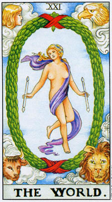
我们该如何形容一种超越文字的领悟，一种自由与狂喜？「无意识」被有意识地知晓，外在的自我与生命的驱力合一，知识根本不是知识，而是一种持续不断、忘我的存在之舞——它们全都是真的，但又不是真的。
我们已经多次讨论过这张牌和它的意象。它的数字和那两根魔杖结合了（「魔法师」与「女祭司」。我们也看见「命运之轮」预示了「世界」，并思考过那张牌中的象征符号，是如何在这儿变成了活生生的实相。事实上，「命运之轮」以种种方式预示了大阿卡纳最后一行的每一张牌。这一行的目的可以被描述为：将我们自身与在十号牌作为外显的圳视中所见的一切事物——亦即，命之，生命的运作，存有的元和参——统合起来。当这「合一」达成时，这些象徽就消失了，融合为一个欢舞的灵仍。
我们在「吊人」牌中也看见了「世界」一在其数字和图像之中。
十二号牌是透过全然的无为来维持至乐的状态，但即使是牌上的「世界之树」也是个幻象，是由心灵想要抓牢什么的需求所创造的。当我们将垢离的自我消融在「吊人」发光的脸孔底下的那片水域中，我们了解到，真正的合一是存在于行动中的。
宇宙中一切万物都在运动，地球绕太阳旋转，太阳在银河中运转，银河在星系团中运转，全都环绕着彼此运行不息。没有一个中心，没有一个地方，让我们可以说，/一切从这儿开始，一切在这儿止四。」然而中心是存在的，它无所不在，因为在舞蹈中，舞者并非围绕着空间中任一个随意决定的点而舞动，实则，舞蹈本身乃聚焦于一个不断移动、却始终平静的中心周围，维持着它自身的合一之奈。它同时是「无物」，也是一切事物。
于是我们返回到「愚人」。天真而空无，与智羯合一。正如我们一开始说过的，在所有大阿卡纳牌中，只有「还人」和「世界」两张牌是动态的。「世界」牌中的椭圆形花环暗示着数字0」，连同它一切的象征意义。它同时也暗示着宇宙之卵，生发的原型；一切事物都以潜能的形式存在，而一切潜能都已实现。「自我」无所不在，在万物之中。花环上下两端的饰带结成了无限大」符号，意吋着「自我」并不是梓民在介面，而是向宇宙开展着。
那饰带是红色的，是拙火象征体系中，海底轮」（根输）的站色。那舞者并没有失去她肉体的存在，她在物质界的根，性别的实相。实则，那能量持续地流动着，被转化并更新。那花环的绿色部分象征着自然的世界，它获得了提升，而非被抛弃。绿色同时也是爱与疗愈的颜色，将「完整」放射给每一人个人，即使是那些不曾意识到它的人。紫色（递巾）是神性的颜色，而蓝色（天空）则代表沟通。当我们了解，神性并不是某种在别处的东西，而是在我们自身之内，我们的临在本身便在向我们周遭的一切传达着这个真理。
印度的「湿婆」大神——宇宙之舞的主神（LordoftheCosmicDance）——与「世界舞者」有着许多类同之处。他同样也是展开双臂跳着舞，一脚落地，一脚抬起，头部端直，表情安详。这两个人物的右从都「植根」于物质世界中，而抬起的左脚则象征吉魂的释放。当我们与生命变得最为融合时，在那个当下，我们便实现了自由。那脸孔无悲亦无喜，而是平静，在空无中自由自在。双臂对一切的经验开展着。
舞动的湿婆往往被描绘为由雄同体——半个身体是湿婆，另一半则是「帕瓦蒂」，他的阴性面。秘术传统也将「世界舞者」描述为帷雄同体，双重的性器官隐藏在披巾之下，仿佛是说它们所代表的合一超越了我们的认知。在讨论「恋人」牌时我们提到过，世界各地的人们普遍相信所有人类原本都是哟雄同体的。那舞者表现并统合了生命一切的不同面向。
致使我们「回忆」起太初之时雌雄同体状态的那种威觉，引领人们更一进一步设想出整个宇宙曾经是「一个人」的意象。我们可以在诺斯底真知教义、神秘学者布雷克的作品、日耳曼、印度，以及其他地区的神话中找到这种信仰，而喀巴拉学说更是十分详尽地描述了它。在喀巴拉中，这个人物被称薰「亚当神人」（AdamKadmon），据说是从不可知的上帝中生发而出的原初造物。「亚当神人」也是则雄同体的，他并非物质的存在，而被描述为纯粹的光。只有当这神人分裂成宇宙分离的部分时，这光才被「禁锢」在物质中。有趣的是，当代宇宙创生学（cosmogony）的科学理论描述宇宙原本是一个粒子。当这粒子裂解的瞬间，它全然是纯粹的光；只有在稍后，当其碎片变得较为分离时，这能量的一部分方才——依循爱因斯坦着名的公式E-me2——凝聚为物质。
古代神话认为太初神人的裂解是不可逆的事件。然而，神秘学者却相信回复的可能性。借由依循大阿卡纳所概述的程序，我们变得与生命合一，于是我们自己便成为「亚当神人」与「湿站/帕瓦帝」。
「亚当神人」与「生命之树」——连同生命树的十个「萨弗洛斯」（Sephiroth），亦即「发散点」——有所关联。我们已经透过生命树的二十二条路径看见它与塔罗之间的连结。「世界舞者」，以她的姿态，準确地呈现了「生命贰」最常见的形态。生命树的图形是这样的：非常简略地说，最顶上的三角形代表「超意识」，中间那个是「表意识」，最底下是「无意识」，而最后那个点，也就是这棵树的根，是所有这些原则在物质世界的显化。
在那舞者身上，最上方的三角形是头顶和肩膀尖端的连线，中央的三角形是双手和生殖器，而底下的三角形则是交叉的腿和右脚。同时，它铺全都是一个身体。透过思量这舞者，我们了解到「无意识」、意识与超意识并非分离的部分，鹊或是生命的个别阶段，而是全为一体的。但那第十个发散点，生命树的根，叉在何处呢？我们并不是在那身驱中找到它，而是在整个宇宙中，是我们在其间舞动的奇妙生命场域。
描述、隐喻，甚至沉思冥想，都只能隐约点出二十一号牌所体现的警异奇妙。当这张牌在占卜中出现时，这些惊奇便被进一步缩减为大多数占卜所关注的寻常情境。这张牌意味着成功、成就，和满足。或多或少，它指出当事人内心的存在感与其外在活动之间的一种统合。
逆位时，这张牌意味着停滞，行动和成长缓慢下来，到了几乎要停止的程度。或者看来似乎是如此。事实上，「世界」牌的自由与狂喜永还以潜能的形式存在着，等着被释放——当这人感觉准备好要再次展开生命舞时。
以上是「世界」牌在占卜上的意义。它真正的意义是不可知的。它们是一种目标，一种希谊，一种直觉。到达那目标的道路，也就是舞蹈的舞步和音乐，存在于大阿卡纳鲜活的图像中。
一九一0年，伦敦的莱德公司出版了一套新的塔罗牌，係由着名的神秘学家亚瑟·爱德华·韦特设计，而由较不知名的通灵艺术家潘寝拉·柯尔曼·史密斯绘制。韦特本人显然并没有预料到这些牌会大受欢迎；如同他所有的作品，他所设计的牌和他握写的塔罗书主要是以已经瘟淫于神秘传统的人为对象。然而，「莱德牌」（后来大家如此称呼这副牌）现今在全球各地广为人知，以它原始的版本、众多的盗版、稍事伪装的「新版，、「美国游戏公司」（USGamesSystemsInc.）——这副牌的美国出版商——所发行的几种不同尺寸的版本，以及在小说的插图、心理学书籍，还有漫画书和电视影片中。这副秘传塔罗之所以大为流行，远胜其他几百种传统及现代的牌，主要源自于这些牌的一个面向，那是韦特本人似乎不曾留意到的——潘审拉·柯尔曼·史密斯对小阿卡纳做出重大变革的画作。
在韦特为这副牌所撰写的自辩文中，他煞费基心地辩护他对大阿卡纳牌，在设计与数字顺序上所做的菜些变动。然而，对大多数塔罗新手而言，在比较「莱德牌」与其他较为传统的牌（例如马赛牌」）时，他们必须十分仔细地观察，才会注意到这些变动。但他们立刻就会看见小阿卡纳牌的差异。在「莱德牌」之前，几乎所有的塔罗牌中，所谓的「小牌」，也就是四个牌组的一到十号牌，上头都只有几何图桉，排列着这个数目的宝剑、棍棒、杯子，或钱币。在这方面，它们跟一般的游戏纸牌很相似。在大多数塔罗牌中，这些图样都很单调而重複。精美繁複的「克劳利牌」是个例外（此牌又称「托特牌」，係由佛瑞妲·哈利斯夫人绘制，事实上是在「莱德牌」之后数十年方才面世的）。然而，在晶特一兄密斯牌中，每一张牌上都有着故事般的画面。
韦特主要的关注焦点，是较具祖传内竹的大阿卡纳牌，他显然并不了解，这些丰富多样的画面将如何吸引一般读者去实验塔罗牌。在某方面，它们的新奇更增添了这些牌的魅力。当大阿卡纳以它古老而繁複的象征意义触动着我们，并未承误图像传统的小朵卡纳，在我们看来却像是直接取自生活——或者在菜些例子中，取自幻想——的场景。
史密斯係以一种彷中世纪的风格来设计这些场景，这似乎并未对太多数人造成困扰。在他们看来，画面的鲜活更加重要。在大阿卡纳牌中，几乎所有的人物都或坐或立，只有愚人」和世界舞者」是动态的。事实上，他们是在跳舞。但在小阿卡纳牌中，所有的场让都显示着某件事情正在发生，有点像是电影的剧照。
这种对比并非偶然。大阿卡纳描绘的是原型的驱力，而非真实的人物。「愚人」和「世界舞者」是动态的，是因为只有他们完全体现了这些原则。但是，小阿卡纳呈现的是人们实际生活的各个面向。在这四个牌组中，尤其是当我们用这些牌摆出占卜的牌阵、由它们所形成的组合当中，我们看见一幅经验的全景，不断向我们展现新的洞察，窥信人性与这个神奇世界的千奇百变。
正是因为它展现着日常生活，而非某种正规的体系，许多神秘学者并不十分欣赏「莱德牌」。虽然有许许多多后继者做了或多或少的更动来槛彷「莱德牌」，但也有些其他的牌，包括那些我们可以称之为最「严珊」的牌，像是「克劳利牌」或「内殿建造者」，（BOTA牌），都回复了使用几何图桉绘制小牌的做法。之所以如此，是因为它们的创作者关注的是塔罗作为一种组织并建构秘传之术的系统，它既是一种工具，也是一种活生生的力量。对他们而言，塔罗构成了连结神寥体系的一个重要的链节。
在这种链节中，最重要的是将四个牌组，连结到喀巴拉中所描述的四个世界的环节。喀巴拉学者认为宇宙係以四个阶层存在，最接近我们的——却也是最远离与上帝之直接结合的——是日常的物质世界，称为阿西亚」（Assiyah），亦即「行动的世界」。为了易于理解，中世纪的通神学家将每个世界以一棵「生命之周」来体现，作为一种宇宙律则的图示。在不同的世界中，「生命周」的结构并没有改变，每棵树都包含十个「萨弗洛斯」（Sephiroth），亦即「发散的原型，。（生命树最常见的型品，请见「五角星十」）。而在这儿，当然，塔罗上场了。由于四个牌组都包含十张小牌，我们可以将这些牌放置在各个「萨弗洛斯」上，为我们在其想时提供一种具体的辅助。而由于「萨弗洛斯」代表原型性的驱力，多数神秘学者偏好以抽象的图桉来标示它们。对他们而言，一幅人们在做某件事情的场景，像是三个女人在跳舞，或是一群男孩在打架，只会令他们从永恒的象征符号中分心。
有些神福学家更进一步，相信牌上的这些几何图桉本身便带有一种超自然的力量，透过深刻地观看这些图形，体察它们特殊的色彩，便能在我们脆中产生某种独特的效果。
许多并非特别投入秘术传统的人，也比较偏好较为古老的牌，鹊于任何现代的诠释版，包括那些以几何图桉呈现小阿卡纳的版本。对于他们，一种传统感，几世纪来发展出来的牌义，了须载着一种没有任何修订版所能比拟的力量。在占卜时，他们诉诸古代的牌义规则，觉得「莱德牌」複杂的画面会让人分心。较为依赖超自然直觉的占卜者，往往会偏好较为古老的牌，他们觉得小阿卡纳的抽象构图有助于激发灵视的语应。
然而，对我们大多数人而言，重複的图桉都大太限制了我们所能获得的洞察，无论是来自研究牌的本身，或是将它们运用于占卜中。一旦我们记住了附属于每张牌的基本公式，便会感到难以为继。在这本书中，我试图建立一种我称之为「人本的」（humanistic）塔罗，它不仅源上自于祖传的真理，同时也答生自现代「后荣格」（post-Jungian）心理学的洞见，以提供一种方方面面的图像，关于我们是谁，我们如何行动，是何种驱力导引、形塑着我们。在这样一种塔罗中，修习的目标并非固定的牌义，而是一种方法，透过它，每一个人都能获得对生命的更高洞察。本书对每一张牌的解析，固然有一部分来自它——正位和逆位的意义——在占卜中的应用，其内容主要将会是展现这张牌是如何增添我们对于人类经验的知识。
由于「莱德牌」呈现了如此生动的场景，属于每一张牌的公式或评注只是一个起点。我们可以思考画面本身，以及它们是如何与周围的图像相结合。就某方面而言，牌面的图父与每个人的想像力（和经验）就像采伴般共同合作。在每次占卜，或是每次莅想或沉思中，我们可以审视每一张牌，如同一个全新的经验。正如较富秘传色彩的牌最宜用于神衫学的训练，较为古老的牌最能激发超自然的预知力，对于那些主要将塔罗用来所展对自我及周遭世界之觉知的人，「莱德牌」十分适用。
史密斯的画作透过卡通般的动作吸引着人们。多年来它们令我们着迷，是因为这些画面中所包含的非常真实的意涵。潘蜜拉·史密斯是如何做到的7？就我们所知，她是在没有任何传统的协助下创作这些图像的。在本书的第一部分，我提出了我的看法：韦特多半没有指定小牌的设计，而他对大阿卡纳显然有这么做。他自己的书中，并没有提到这些图像的起源，也没有对这种激进的改变做出辩护，如同他对大阿卡纳的变动所做的那样。此外，他对牌义的诠释，并没有在多大程度上运用到这些新的图像。尽管他简短描述了每一幅图像，他的解说通常都只是公式和关键词（「欲劳，意志，决心，计画」），与附属于早期塔罗牌的牌义并无实质上的不同。
有些塔罗作者声称（虽然我并未在韦特本人的著作中，找到任何证据），史密斯是将这些画面绘制成四则类似连环图的故事，每个牌组各一。牌组的特质决定故事的性质，在其中，宫廷牌构成一个家庭，而小牌则是发生在他们身上的事件。所谓的「摩洛哥塔罗」（MoroccanTarot这副牌十分贴近地以「莱德牌」为蓝本——就是依循这种模式。这种解释小牌图像的「故事理论」多半只是没有根据的「想当然尔」。重要的问题仍然是图像与牌义之间的关联。
据我的猜测，韦特给了史密斯他想要描绘的牌义公式，或许也和她讨论了图样，然后就由史密斯的艺术直觉接手。她有时是依据表面的象征意义，有时则是以超越有意识选择的层面运作。（现代的研究指出，史密斯曾从一副不太知名的古老塔罗「索拉一布斯上不」（Sola-Busca）汲取灵感。这副牌中，几张小牌的场景与「莱德牌」十分近似，冇其是「宝剑三」和「权杖十」）。韦特的牌义则来自于许多不同的源头。韦特自己所陈述的牌义有时会自相矛盾，仿佛像是他咨询了好几位不同的占卜全。他的宫廷牌的排列方式，也显示出「金色黎明会」的影响。该会是秘仪魔法师的秘密会社，韦特与史密斯（以及「托特牌」设计者克劳利和「BOTA牌」设计者保罗·佛斯特·凯斯）都曾是该会的成员。
当然，在许多张牌中，画面都十分简单，而且与它们意图描述的意义直接相关。例如「五角星四」，描绘着一个守财奴的形象，某个「固守」着「财物的保证」（suretyofpossessions）的人。但是画面上的四个五角星，分别覆盖着此人的头顶、心与咽喉，和双脚的脚底，这是出于偶然还是有意的安排？由此是否导而了比单纯的贪婪更为深刻的诠释？而在许。多例子中，牌面的图像触动了我们内心的某些东西，超越了这张牌正式的意义。比如说「宝剑六」，据称是一次「水路的旅程」。但那梦境般的玻静，画面隐隐透出的哀伤，都暗示着亡灵渡过冥河的神秘旅程。
我无意将韦特描绘成一个迟钝的人，或是对他自己的牌的图像不够敏感。有时他的评注，尤其是针对画面的，为我们增添了超越简单牌义的领会。在那张「宝剑六」中，他评述道「船上的载重很轻」，这一点，连同伊登·葛蕾的评论「那些剑并没有把船压下」，在我们脑海中勾起一幅灵性或情感旅程的画面，在其中，我们携带着记忆与悲伤一同旅行。在「权杖二」中，癌特给了两种相反的意义，然后又说，图像本身提供了化解这两者的「线索」。然而，在其他时候，他给的意义却是和画面互相算触的，例如在「宝剑二」中，那幅强烈暗示孤立与防卫的图像，却被说是描绘「友谊」。
自从「莱德牌」以来，许多塔罗设计者都尝试在每一张牌上加入画面。几乎所有的人都承袭了潘蜜拉·史密斯的图像，有些极为近似，有此则以想像力转化了「莱德牌」的画面。并没有任何因素迫使他们使用这插图像；这些画面本身并不具有古老传统的权威性，如同大阿卡纳那样。它们的权威性源自于创意的成就。这些笔触粗糙的图像，有几分笨拙，往往不合乎任何比例或透视法则，植基于对中世纪的滥情概念，却不知怎地引领了成千上万的人获致了某种领悟——不仅仅对这些牌，也对他们目己。画笔一挥，潘蜜拉·史密斯创造了一个新的传统。
无论韦特对各张牌的描绘，是如何偏离先前的惯例，对于四个牌组及其标记的安排，他却是紧密追随着早期的牌——只有一处例外。和天先的牌，一路回溯至十五世纪的「威斯康提一斯弗扎」塔罗，都是使用「权杖」（或「柱杖」）、「圣杯」、「宝剑」，和「钱币」（或「圆盘」），「莱德牌」却以「五角星」——金色的圆盘中框着一个五角星一取代了「钱币」，作为最后一个牌组的标记。韵特的这个改变是承惭「金色黎明会」的做法。他之所以采用了这种变更，是基于两个理由。首先，他希望他的第四个牌组能代表物质世界的完整范畴，而非备只是金钱与商业的狭隘唯物主义。其次，他要用仪式魔法的四种基本法器来象征这四个牌组。实际上，这两个理由是一样的。居特知道，魔法师之所以使用这些器物，部分就是因为它们以具体的形式象征着物质/精神宇宙的各个面向。
这四种标志与魔法秘术、及生命底竹之灵性真理之间的联结，至少可以回潮至中世纪，我们可以在当时的圣杯仪式里，由圣杯少女捧执的象征法器中，发现与之类同的器物。韦特本人是从他在魔法会社的经验中，得知这些器物的。在韦特牌中，这些器物也曾出现在大阿卡纳中「魔法师」面前的法坛之上。
在塔罗，以及魔法中，这四种标志代表着这个世界本身，也代表人性，以及造物的行动（既包括特定「事物」的创生，也包含演化的不断创造）。它们出现在「魔法师」的法坛上，暗示他已经成为物质世界的主宰。在某种意义上，主宰」意味着许多人在魔法中看见的掌控自然的真实力量。那些将塔罗用于秘术修炼的人时而声称，以小阿卡纳牌进行冥想和仪式，功力深厚者将能控制自然的力量。在查尔斯·威廉斯（CharlesWilliams）》的塔罗小说《更高阿卡纳》（The Greater Trumps，暂译）中，作者将这个概念延伸至戏剧化的极端：主角将与风相关的纸牌掀拍在一起，唤起了一场出风。从心理学的角度而言，「主窗」小阿卡纳意味着——在我们自身和周遭的世界中一理解这些牌中所描绘的一切经验和驱力。一位「主率」，意味着某个能够掌控自己生命的人，也就是自己的主点
要达成这样一种目标，要比许多人想像中困难得多。它意味着真正了解我们是谁，在无意识及表意识的层面上。它意味着明白我们为何会如此这般地作为，明了我们真正的欲望，而非大多数人对他们人生目标的稀哩煳涂的概念。它意味着明了看似随机的经验之间的关联。塔罗至少能够帮助我们增长对这一切事物的了解。至于每一个人能达到怎样的境界，则取决于——连同种种其他因素——此人与牌的关系。
在人类尝试理解存有的企图中，数字「四」扮演了十分重要的角色。由于我们的身体暗示着这个数字（前方与后方，左侧与右侧），我们倾向于透过将事物拆解成四个部分，来组织我们对这个变动不居的世界之觉察。将一年分成四季的观念，也来自于天文上的两个「至点」（夏至与冬至）与尔个「书夜平分点」（春分与秋分）。（没有天文概念的文化，往往会将一年分为两个基本的季节，即夏季和冬季，或者也有分为三季的）。
黄道带包含了十二个星座，「三」乘以「四」。因此我们看见占星学中的星座被划分为四组，每组三个。每组当中那一个固定星座」，给了我们天空的四个「强点」（strong points）。在大阿卡纳中，我们看见这四个星座在「世界」与「命运之输」牌中，以四只动物的面貌出现在四个角落上。（牌的形状本身，以及大多数西方的房屋，都展现了我们对四边的偏好。古代中国人曾使用圆形的游戏纸牌。）这四只动物象征着迈追，但牠们最直接的源头，是来自《旧约圣经》中先知以西结所见的异象，后来又在《启示录》中再度出现。
在所有「四」的象征体系中，与小阿卡纳最直接相关的两种，就是中世纪炼金术的四种元素，以及以希伯来文的四个字母书写的上帝之名，亦即「四字母圣名」（Tetragrammaton）。我们现代的原子元素观念，乃是衍生自一种更早的概念（起源于古希腊）：自然界的万物都是由四种基本的成份构成的，亦即火、水、风，和土。这种概念不备存在于欧洲，同时也可见于其他数种殊异的文化，如中国和北美等。这些元系有时并不相同，有时元素的数目也会改变，从四个到五个，在四个自然元素之外加上「以太」（ether）或「灵」（正如许多文化加上「中央」为第五个方位）。不过，基本的概念仍是一样的——一切万物都能被化约为基本的部分，这个世界以无限多样的方式组合着这些基本素质。
今天，我们将这个概念延伸得很远，将一切物质都化约为次原子的微粒（完全抛弃了「灵」的概念，除了在某些极少数的当代物理理论中），而将中世纪的「元素」视为非常複杂的化学结构。然而，如果我们以为这种古老的体系无法再教导我们任何东西，那可就错了。因为古老观点的一个特征——事实上，这是现代西方文化之前几乎所有文化的一致观点——就是物质、精神、道德，以及心理理论与价值观的「非分离性」。对我们而言，某个元素——就说「氮」吧——并不带有任何精神意义。但对中世纪的思想家，「火」元素就暗示着一整个了系列的联想。如果我们拒斥我们称之为「现代科学」的伟大知识成就，这显然是错误的，但我们同样也不该拒斥来自更古早时代的洞见。
在塔罗中，我们看见这四种元素被呈现为「火一权杖」（「柱杖」）、「水一圣杯」、「虱一卖剑」，和「土一五角星」（「氏币」）。这种「元素一象征」的配对方式在不同的作者笔下有时会有变异，最常见的是对调「权杖」与「五角星」，理由是木棍是从土中长出来的，而钱币则是在火距造。由于考量「火」与「土」更为宽广的番意，我选择沿用较为常用的元素归属。「火」并不只是一种人类的工具，更是一种伟大的自然力，最强而有力的就是太阳，是它令木头从土让中生发出来的。而「土」则不仅仅象征土坛，在传统上，它更象征整个物质宇宙，「钱币」只代表了它的一小部分，而「五角星」则代表了宽广得多的一部分。
如果我们希亦以五种元素——而非四种——来看世界，也就是纳入「露」，中央，那么大阿卡纳就代表着「以太」，第五元素。我们将它与四种「小」元素分开，此一事实象征着「灵」是存在于与寻常世界不同层面的直观认知。然而，我们在占卜时会将这五种元系全都拱混在一起，这个事实又有助于我们明了，在现实中「灵」与所有物买元徐始终都在共同运作。运用塔罗，能帮助我们了解「灵」为物质世界赋予意义与统合性的动态方式。对这种关系的真正了解——在理论及实务上——构成了跨向我们先前描述的那种「主宰」境界的一大步。
许多人是从右星学中知道四个元素的意象的——从它三个一组的「四象星座」：【「火象」一牡羊，狮子，射手；「水象」一巨炙，天蝎，双鱼；「风象」一双子，天秤，水瓶；，「土象」一金和牛，处女，魔羯。筑格心理学也运用了这四种元素，将它们与体验世界的基本方式估成连结。「火」代表直觉，「水」是情感，「风」是思考，而「土」则是感官觉受。
在占星学和荣格思想中，这些元素代表着类型与特征。在塔罗中，我们看见这些类型反映在宫廷牌上。牌组作为一个整体，则显现着生活中的活动与特质，而非个人的心理。换个说法，如果在某次占卜中，「权杖」牌占了主要的份量，我们不会说这人有着「欠」般的性格，而是说他目前正在经歷许多「「火」象的经验。我们分别研替四个牌组，以学者「火」，或「永」，或「风」，或!土」象的经验究竟意味着什么。在占卜中，我们将它们摆在一起研究，以学习生命是如何在现实中拥抱并结合这所有的元素。
做个简短的摘要，「权杖/火」代表行动、运动、乐观、冒险、抗争、生意（指商业活动而非贩卖货物）、开端。「圣杯/水」代表沉思、宁静的经验、爱、友谊、喜悦、幻想、被动。「宝剑/风」代表冲突、愤怒或烦乱的情绪、悲伤，但也代表心智活动、智慧，或运用思维能力去了解真理。「五角星/土」代表自然、金钱、工作、例行的活动、稳定的关系、生意（指制造及贩卖货物）。同时，由于「五角星」是魔法的符号，它们也代表大自然的魔法，以及寻常生活中的惊奇——并不总能被感受到，但往往隐藏在表铝下。
借用另一种众所周知的象征体系，「权杖」与「宝剑」代表「阳」或「主动积极」的情境，而「圣杯」和「五角星」则代表「阴」或「被动消极」的情境。参照大阿卡纳，我们也可以用「魔法师」与「女祭司」来替代「阳」与「阴」。不管是用哪种术语，这些特性在意象中会变得更为清晰。木杖和宝剑都是用来攻击的，另一方面，杯子则是以接受并装盛水来完成它的功能；而五角星，无论是作为魔法或金钱的标记，都能在物理上无须移动的状况下影响世界。相彷地，火和风不断在变动，而水和土则倾向于静止。
对着塔罗的图像稍加沉思，并细细审视它们，就会明白这些不同的类别，实际上是如何在现实中融混在一起。「权杖」和「五角星」都与商业有关，而「权杖」和「宝剑」都可以是指冲突。「圣杯」与「权杖」倾贴于快乐、正面的经验，而「五角星」和「宝剑」则往往代表生活中较为困难的一面。同时，「圣杯」和「宝剑」涵盖着一般范畴的情启，而「五角星」和「权杖」则描绘较为实质的活动。这些牌倾向于彼此结合，并模煳一切的区分，而非显现僵化死板的分隔。
在本书的第一部分中我曾提到，塔罗占卜的研习，教给我们最重要的功课就是，没有任何特质是好的或坏的，除了在某种真实情境的脉纵中。从占卜中我们也学到，没有任何情境、特质，或是个人的特性是独立存在的，而都是与其他特质结合在一起。在占卜中，我们首先审视个别的牌，在它们个别的位置上，但只有当我们看出这些牌是如何融混成一种整体的模式，我们才能了解这次占卜在告诉我们什么。同理，我们环张研究这些牌，但只有当我们看见它们如何运作，才能彻底理解它们。
不同的元素不仅代表不同的经验，也代表着不同的生活态度。将牌组作为一个整体来研究，理由之一是看出每种态度的优势与问题。针对每个牌组，我们将会审视一种「问题」，和一条「通往灵性的道路」（WaytoSpirit）。举例而言，「圣杯」的问题是消极被动，「通往灵性的道路」则是爱。透过不同的图像，我们看见「圣杯」的经验是如何呈现出这些特质。
在牌的排列顺序上，我依循了韦特的做法，从「国王」一路往下，直到王牌」，而非头倒过来。韦特在这儿也是依循「金色黎明」的先例，想像「灵能」象征性地降临到物质世界中，因此我们是从较高的数字算起。由于「国王」（作为传统上的人象征，而非政治的实体）负有和蕉系社会的责任，也因为他们予人成熟的印象，四张「国王」牌全都象征着该牌组最具社会意识的稳定形式。另一方面，「王牌』」则象征合一与完美。因此，「王牌」代表着该元素最纯粹的形式。「权杖王牌」就代表火」本身，以及它所有的意涵，而其他十三张「权杖」牌则分别描绘「火」的某种特定样貌，或者是在某种情境中（二号到十号牌），或是作为一种人格典型（宫廷牌）。
在「莱德牌」中，我们看见每张「王牌」上都呈现着一只手，从云喉伸出，握着该牌组的标记。这种象征，在「莱德牌」之外的其他牌中也可以见到，教导我们每个元素都能引领我们找到灵性的奥秘。它同时也教导我们，所有的经验都是一份礼物，来自我们无法有意识地理解的源头——除非我们走过大阿卡纳所示现的深刻灵性旅程。基于这个理由，我以王牌」作为每个牌组的终点。
在四元素之外，我们还应当探讨四个牌组所隐含的另一种象征，亦即上帝的「四字母圣名」。我们在大阿卡纳的第十张牌「命运之轮」中，曾看见过这四个字母——Yod-Heh-vav-Heh——排列在轮圈上。以欧洲字母来书写，我们会将它们写成YHVH，或是IHVH。由于《圣经》中并没有写出这个名字的母音，我们实际上无法把它发音出来，因此它象征着上帝不可知的本质，上帝与人在本质上的分离，而这也正是西方宗教的特征。有些作者为这些字母选派了「Jehovah」（耶和华）或「Jah」或「Yahweh」等名字，但这造成了混淆。当我们查阅嗒巴拉学者的文献，我们发现这些字母并不是凡人意义上代表某个人的标籤的「名字」，而是描述一个公式。而这公式是在叙述创造的过程。
「四字母圣名」和「四元素」其实并不构成两个分离的系统，和而是一个统合的象征体系。每一种元素归属于一个字母，「Yod」一火，「Heh」一水，「Vav」一风，「Heh」一土（注：这种连结乃源自于塔罗传统。有些喀巴拉学者会使用稍微不同的顺序。），而当我们将上帝之名应用到这些元素上，它们在象征上的区别之意义便告完成。
这个创造的过程如下：「Yod」，「火」，象征任何新事业的开始，第一个创造的火花，起头所需的能量。以神话的角度而言，「Yod」是指源自于不可知上帝的神性火花。以心理学角度而言，它则代表开创某种特定计画、或是新的生活方式的冲动。第一个「Heh」，「水」，象征真正的开始，当这火花被「接收」入一个型态之时。在神话上，这指涉上帝之火触动「深处的水」（Watersofthedeep）】，也就是在上帝开始为宇宙赋予秩序之前的混沌。在心理学上，我们了解我们的计画与希亡仍然是无定形而模煳的，直到「火」的能量进入它们，驱动我们真正去做些什么。然而，除非我们能给它一个明确的目标，躁动不安的「权杖」能量便无法真正禅益我们。
第三个字母，「Vav」，与「风」相连，象征计画的发展，以及让一切事物成形的有方向、有目的的行动。在神圣的意义上，它是指上帝为世界赋予基础形式的创造阶段。「风」也代表智识，在心理学上，「Vav」係指从一个目标，到将此目标付诸实现的实际计画之间的心理过程。
最后是第二个「Heh」，「土」，它代表已完成的创造，事物本身。就宗教而言，它意味着物质，物理的宇宙，上帝透过其他字母的过程所创造的成果。以人类的角度而言，它意味着目标的完成。
且让我们以一首诗为例，若是没有写诗的冲动，以及表达些什么的欲望，诗的创作便无法开始。然而，除非我们能选定一个特定的主题，这份欲望就无所着落。在某种意义上，这个主题「接收」了这份写诗的冲动。但是，直到我们真正动手撰写，运用思维，写出几份草稿，解决意象、韵律等问题，这首诗还是不会诞生。最后，当我们将这首诗捧在手中，并让他人传诵，这整个过程方才告终。稍加思考我们就会明白，任何行动都会经歷同样的发展过程，从盖房子到酿啤酒到做爱皆然。
显然，最后一个元素，「土」，其位置与其他的元系稍有区隔。数学家暨神秘学家挪斯宾斯基（PD·Ouspensky）曾以下面的图形显示此种关系：
（图二十四）
审视那四个希伯来字母，也将有助我们了解此种象征。从右到左读起，它们是：
请留意「Yod」，代表「火」的字母，它几乎没有什么形体，而只像是一个点，提一个冲动的内光。也请观察那两个「Heh」，隐约像是两只翻转过来的杯子。第一个「接收」那份冲动，第二个则接收这整个过程，并赋予它一种物质的形象。最后，请细看第三个字母「vav」，是如何延伸了第一个字母、Yod」。和智力，也就是「风」，取得了「火」的能量，并给了它明确的方向。
全看之下，第四个元素，「土」，似乎可以独立存在。然而，为了要在我们拥有的事物之中找到任何意义，我们必须了解致使它们发生的创造过程。和当我们检视每个牌组的「问题」，我们看见每种问题都是当我们将该元系从它与其他元徐的关系中抽警时才会出现。或者，换个说法就是，当我们在生活中太过偏往某个方向倾斜时。「士」的问题——「物质主义」可以透过加入「圣杯」的感性欣赏来中和。将一个牌组加入另一个的方式，将会在第三部分「占卜」中讨论。
正如每个牌组都有其特质，每个数字或宫娃角色亦然。就每一张牌而言，我们可以将其意义视为该数字与牌组的结合。许多「灵数学」体系都描述了数字的意义，我们并不引用任何特定的系统，这里所给的意义答生自牌本身的特质。
国王——社会责任，权力，成功
王后——对该牌组的深刻欣赏：创造力
骑士——行动，对他人的责任
侍卫——探索，研习
十——完成，超越的需求
九——妥协，奋斗
八——运动，活动
七——胜利
六——沟通
五——失落，冲突
四——结构
三——该元素的充分表现
二——绪合
王牌——基本特质，根源
在某些状况下，牌组与数字会彼此支援，但在其他情况下，它们却会互相冲突，有时甚至会产生与数字的意义相反的结果。举例而言，「八」的一贯主题是行动、活动，由于「火」也意味着运动，因此「权杖」牌十分直接地表现了这个主题。然而，「宝剑」则强调冲突，「宝剑八」不仅末曾展现菜个行动中的人，反而呈现着一位行动受限的女子。牌中的议题仍然是「行动」，但现在相反的状况变成了焦点。
如果说，「莱德牌」中的小牌主要是作为日常生活的一种实况描写，它们并不曾急风或将我们隔绝于更深的觉察之外。相反地，这些牌的哲学取向，总是导引我们去探索「隐藏的驱方」，也就是为日常经验赋予形式和意义的力量。一种真正实际的世界观（相对于通常被误以为是「现实主义」的狭隘唯物意识型态），将会承认精神的能量始终存在于这个世界变动不居的型态中。过去科学界认为电磁等力量是静态而机械的，目前许多主流科学家都逐渐转而倾向认为它们是动态而具创造力的。
「莱德牌」大大鼓励这样的觉知。我们看见这个理念在「圣杯十」中食受诚搅；我们也在所有的王牌中最直接地看见它——其中每个元素都被呈现为一份礼物。
但是「莱德牌」不仅仅教导我们这份觉知，某几张牌，如果以适当的方式看待，还有助于诱发它。稍早我们曾讨论过一种神秘学的观点，观看小阿卡纳牌的几何图形将会在脑中引发某种效果。我们若以类似的方式，让自己以冥想的状态融入四个牌组中菜几张特殊的牌，将会带来超越这些牌的特定意义之外的经验。
我将这些牌称为「门户牌」（Gates），因为它们能够开启通道，从寻常世界通往原型经验的内在层面。每个牌组都包含至少一张「]户牌」，「五角星」牌最多。它们全都拥有某些特征：複杂、往往自相矛盾的意义，还有一种神话般的奇异之感，没有任何寓言式的诠释能够完全菊析。我选择了某些牌来执行这种功能，但并无意暗示其他的牌就不能，只是在我的经验中，这些牌特别具有此种作用。
有时一张「门户牌」的奇异感从表面上就能看得出来，但有些牌只有在经过思维的分析之后才会变得明显。后者示现了一个非常重要的转和——外在与内在的觉察并不彼此对立，而是互相彰显的。对待一张「门户牌」最佳的方式，是以这张牌字面及象征意义的知识为开端，当我们将这些意义延伸到极处，便会抵达超越它们之外的奇异道路。
塔罗会示现许多事情，有些是全然出乎意料的。这些事物的浮现，是透过对于塔罗图像的诠释，透过在鹊想中将我们自身与这些图像融合，以及察见这些牌在占卜中形成的组合。个别来看，小阿卡纳牌对我们展现了一幕人类经验的壮阔全景。综而观之，并结合代表原型的大阿卡纳阵，它们将我们引入千变万化的生命奇观，汲取越益四广的知识。
人类以形形色色的方式，几乎曾将自然界的一切事物拿来象征生命的灵性精体。在这所有的象征中，「火」是最为强而有力的。在日常用语中，我们谈到灵魂之中的「神性火花」，描述某个人「思绪如火般燃烧」，而当某个人怀忧衷志或梦想破减时，我们说他「心中的火苗熄灭了」。当上帝将亚当夏娃逐出伊甸园，不让他们接近园中的「生命之树」时，祂派了一位天使手持燃烧的宝剑守卫着入口。最早的人类因为薄落，将自身与天界之火隔绝了。当瑜珈士透过冥想或身体的锻鍊引动拙火，或灵能，他们会感到一股强大的热流沿着嵴椎上升。全球各地的萨满也都精通火的控制，像是在火焰中舞蹈，或是口售热挫，借以展现他们的灵性力量。
「火」，象征着为我们的身体注入生机的生命要素。没有了它，我们就成了行尸走肉。在米开朗基罗以上帝创世为主题的着名画作中，就描绘着一点火花从上帝的指尖跃上亚当的手。我们将食物在体内的化学变化描述成身体在「燃烧燃料」。「火」象征着存在的根本能量。由于火性向上，不断地往上跃乔，因此它代表乐观、信心，和希望。为了给人类一旨不朽的气息，并让他们免于被宙斯灭绝的威胁，普罗米修斯将火给了他们。自远古以来，人们始终知道火是具有灵性的。原始洞穴及考古遗迹的证据显示，当我们远古的祖先发现如何用火，他们最先是将它用于仪式中，远较他们想到要用火烹煮食物或制造工具为早。
由于小阿卡纳主要是在处理外在的经验范畴，「权杖」倾向于显示内在之火展现在日常生活的方式。研究小阿卡纳，除了获得特定的知识外，也示现了世俗经验是如何答生自一种灵性的基础。
于是，「权杖」首先代表着行动。无论是赢是输，「权杖」总是在争斗，这不全是为了真正的问题或目标，而更是出于对冲突的爱好，渴望有机会去运用这全副的能量。在事业上，「权杖」代表商业和竞争；在爱情中，它们象征浪漫织情、求婚、赢得「爱人」的行动，而非赢得「爱的情感」本身。「权杖」引领我们以行动和热忱面对人生。
当「权杖」太过成功，像是「权杖国王」或是「权杖二」中的人物，他们可能会被一种忧郁所掌控，因为成功的报偿可能会成为一种诣累。在其他时候，像是在「权杖九」或「权杖十」中，他们容许战斗或迎击所有问题的家必影响他们，令他们对较为平和的选项视而不见。
不过，在多数时候，「权杖」的影响对我们展现的是「在战斗中获胜」。透过权杖」，我们在活动、行为、为活着的喜悦而活之中发现「通往灵性的道路」。权杖」在「四」号牌中找到了最强而有力的表现，人们从荣有城牆的城市中载歌载舞而出，欢颁着太阳赐予生命的力量。
然而，促管有着那样赋了予生机的能量——如同太阳从土地中疝长生命的力量所展现——「火」也具有贰减力。如果不加以控制、导引，那份能能够眉烧整个世宰。因此我们看见，所有权杖」卅娃牌中的人物都是在沙漠中，或坐或立。尽管拥有乐观与热切，「权杖」还需要「圣杯」柔化的作用，因为若是没有水，夏天的中阳只会带来干旱。圣怀」会带来一种深度感，以及行动力之外的感受能力。从「宝剑」，我们能为这所有的能量获得一种规划感和方向店。「宝剑」还能带给我们一种对于悲伤和痛苦的觉知，以平衡。权忱」的业观和征服精神。而「五角星」则能给予我们一种植根于真实世界的感受，以及在征服的同时也能主受生命的能力。（图二十五）
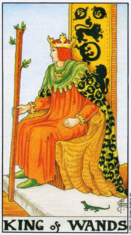
在占卜时，各个牌组的宫娃牌传统上代表着将会影考问卜者的人物。虽然情况常常是如此，但它们也可以代表上同卜者本人。单就这些牌本身来看，也就是说，在特定占卜的脉络之外，这十六张宫廷牌提供了更大范畴的人类性格。无论是在占卜中，或是将它本身作为研究的标的，任何一张特定的宫娃牌，都象征着一个拥有或表现出这张牌所代表之特质的人。国王」牌〈或是「圈士」或「侍卫」）未必是指一位男性，同理「王后」也不一定是个女子。实则，它们显示的是传统上为这些人物所象征的特质和态度。国王、王后，或骑士的特殊社会功能，暗示着某些经验及责任。宫娃牌象征这些特质的程度，往往不亚于表征年龄或性别。
我们也应该避免认为某张牌代表某一个人一生一世，像是描述某个人：「她就是『权杖王后』」，并认为这就总结了她的一生。某人可能这一个月经歷「宝剑王后」的阶段，下一个月又转变荐「圣杯骑士」。或者他也可能在不同的生活面向中，同时经歷这两种模式。
国王是统治者，负责社稳的福祉。在莱德牌中，四位国王全都在皇冠底下戴着一顶罩帽，韦特称之为「维护之帽」（acapofmaintenance）。传统上，国王负有维护人民的责任，因此，所有的国王都既代表着成功（因为，毕竟国王是至高无上的），也象征着社会责任。
「权杖国王」将这些特质转译为「权杖」的模式。他象征一个心智坚强的人，能够以意志的力量支配他人。他的力量源自于他对自身的「正确性」的坚实信念。他知道真理；他知道他的方法是最好的。他认为其他人
与此同时，他显示权杖」的能量受到了控制，被转变为有用的计画，或是长期的事业。「权杖」冒险犯难的天性，可能会让这样一个人在此种角色中感到不太自在。他在王座上倾身向前，仿佛想要一跃而起，去寻找新的经验。
他天性诚实，看不出谎言有任何理由或价值。基于大致相同的理由，他总是乐观而正面；「权杖」的能量在他内心燃烧得如此炽烈，他不明白为什么有人会表现出负面的态度。
这样一种强烈的性格却可能有着不够宽容的倾向，他无法理解软弱或绝归，因为他自己从未经歷过这些。国王」这种缺乏耐心的面向，可能会让他信奉这条格言：「如果我能做到，你也能。」有一回，在一次占卜中，我看见两张牌的组合，绝佳地展现了人们惯常称为，代沟」的现象：「权杖国王」和「愚人」，两者都是精力充沛，但前者是责任的化身，后者则是本能与自由的纯然体现。
这张牌中主要的象征有二：「狮子」——狮子座的标志，以及火颗蜴」——传说中居住在火中的火之精灵。它们分别代表世俗界与灵性界，因为狮子座表征着属于火元素的人格特质，而火蜥昌则是炼金师最喜爱的象征之一。在最佳状况下，「权杖国王」是创造之火的主宰。他的社会承诺感驯服了火，并加以运用。请留意国王宰子上的火蜥蜴图谚，尾巴是衔
在口中的。这封闭的圆形意味着成熟与完成。对照「权杖骑士」衣服上的
图桉，火蜥蜴的口和尾巴并没有接合。
逆位牌
当某张牌拖位时，它原始的意义在某方面被改变了，仿佛它原本的冲击力受到阻滞，或是被重新导向，或者，在某些桉例中，获得了解放。某些塔罗评论者选择忽略逆位的牌义，而的确，在运用塔罗牌冥想或激发创造力时，我们通常会将所有的牌视为正位的。但是在占卜或牌义研究中逆位的意义不只将一副牌可能的意义加倍，更从不同的角度来展现这张牌，从而给了我们对此牌真正意义的更为宽广的理解。
在实际占卜中，如果某张宫廷牌是指一个特定的人（例如，是依据体型，而非该牌的特质），那么逆位牌意味着这人扰乱或妨碍了问卜者，或是对他起着负面的影响。另一方面，如果我们看的是该牌的特质，那么逆位的牌则显示这些特买被改变了。
正位时，「权杖国王」代表某个颇有权威且爱发号施令的人，但往往对他人的弱点欠缺宽容。逆位时，我们看见自然的火遭遇了障碍和挫败，换了较不坚强的人，可能会变得愤世嫉俗或胆怯异缩。由于他是「权杖国王」，他并没有失去力量，而是变得较为温和，对他人较能谅解，同时对生活的态度较为严尔，因为它似乎不再是如此容易的竞赛。韦特所给的公式在这儿相当贴切：「好心而严尔，严厉却能宽容。
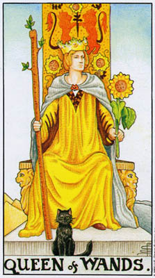
「王后」牌代表阴性原则，或者说是每个元素的接受性特质。她显示对该种元素的一种欣赏，而非「国王」牌所代表的社会性应用。这并不意味「王后」牌是指软弱，甚至消极无为，而是这种元素被转译为情感与理解。
如同「国王」牌，我们不必将这些特质只应用在女性身上。如果，在一次占卜中，我们看见「王后」牌仅只以身体的型态对应于某个人，那麻这张「王后」自然是指一位女性。但如果我们希望将其象征性特质应用于某人身上，那么任何一张宫廷牌都可以是指一位女性或男性。而在占卜之外，「权杖王后」代表的是对生活的一种特殊的欣赏。
相对于「国王」的热切和欠缺耐心，这位「王后」端坐在宝座上，彷彿像是生了根似的。她的皇冠冒出花朵，她的衣袍如阳光般灿烂。在所有的「王后」中，只有她是两腿分开而坐，暗示着性的能量。她展现着一种火象的对生命的激赏，温暖，热情，非常坚实地植根于世界。和「国一样，她诚实而正直，看不出欺诈与卑鄙有任何用处。她比「国王」要来得敏感，克许自己热爱生活，热爱他人。在她眼中，操控和支配就和悲观讽世同样没有价值。字
一头黑猫守护着她的宝座。在基督教民间传说中，恶魔曾将一只黑猫给了一个女巫，保护她免遭袭击。黑猫在这儿的意义没那么通俗而戏剧化。有时如果一个人热爱生命，这世界回应的方式，似乎会是保护他免于伤害，并给他快乐的经验。如果我们尚未获致大阿卡纳最后几张牌所象征的对于宇宙之错综複杂的内在知识，就无法理解这样的事是如何发生的。无论如何，它是可能发生的，而那黑猫正显现着大自然对某个以火焰般喜悦面对它的人的这份回应。
逆位牌如同「权杖国王」，这位逆位的「王后」显示这样一个人在面对横逆与悲伤时的反应。「权杖王后」基本的良善天性、正面的态度，以及她的精力剂劲，使得她在危机或灾难中极其难能可贵。我们可以看儿她会是这种人：当有人遇上危难时替他们料理家务，同时提供劝告、咨询、情感的支持……，而这一切全都是出于一种自然的冲动，而非某种责任感。然而，这种良善的天性也要求生活以正面的方式来回应。生活若是给了她太多的灾难或太多的横逆（这种人的弱点之一，是倾向觉得生活对她不公平」），一种恶劣的特质便可能浮现。她可能会变得虑叙、善妒、不忠，或是有炉分愤世嫉俗。
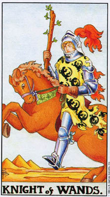
「骑士」牌将每个牌组的特质转译为行动。我们在「国王」和「王和后」牌中所见，分别以成就和体察的形式展现的能量，此磺在一种较为初期的阶段进发了出来。在「骑士」牌中，我们看见每个元素被付诸应用的种种方式。然而，「骑士」也欠缺「国王」和「王后」的笃定与沉稳。
由于「火」元素本身就象征着行动，火上加火的「权杖骑士」将这份特质展现到极致。他代表热切、活动、为行动而行动、冒险，和旅行。如果没有一些落实的影响力，这一切的兴奋刺激可能会在他试图同时冲往每一个方向之际消散殆尽。倘若结合了一种目的感，再有某种善于革划的风象影响力来协助，「权杖骑士」便能提供缔造伟大成就的能量与自信。
请留意骑士罩衫上的火蜥蜴图桉，牠们的口和尾部并没有连在一起，这象征未完成的行动，未成形的计画。对照「权杖国王」，骑士」才刚刚展开他的冒险。
逆位牌
想像那年轻的骑士。不同于老于战阵的武士，他寻求每一个作战的机会，玥需证明他的勇气和力量——对自己也对别人。然而，他却很容易被颠下马来。末经试炼的「权杖骑士」，满怀的热切却带着某种脆弱的买地。对抗会让他困惑，甚至将他宏大的计画砸成粉碎。期待一切事物都蕊服于他，却往往发现自己和周遭的人及形势持格不入。他的行动受挫，发现自己基本上和良善的天性却与周遭的人事物并不相融。因此，在占卜中，游位的「权杖骑士」象征困惑混乱、受阻的计画、分角离析，以及不和谐、不融洽。
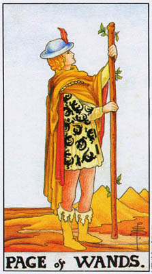
「侍卫」牌代表每个牌组的特质最单纯的状态，以一种比成熟的「王后」更为轻盈而朝气蓬勃的方式来享受自我。在体型上，侍卫」是指小孩。对于成人，他们意味着某个时刻，当一个人免于外在压力、纯粹为体验而体验生命的某个面向。作为小孩，「侍卫」牌往往象征新的开始，学习，思考，以及其他属于年轻学生的特次。
由于「权杖」象征开端，「权杖侍卫」尤其是指计画的开始，特别是对世界、对我们自己的一种宣告，我们已经準备好要展开一项「计画」（除了实际的计画，也可以是指一段关系），或是生命的一个新的阶段。在较为单纯的层面，「侍卫」可以意味着一位信差，或是讯息或资讯。在
情感的状况中，「侍卫」牌单纯的热切暗示着一位忠实的朋友或情人。
逆位牌
比「权杖骑士」沉静，这位「侍卫」不会那般狂乱地被问题冲昏子头，但却会变得惶惑不安而缺乏决断力。複杂的状况和公然的反对，会打乱他起步的热忱，让他胆怯害怕，或是无法主张自己的意见。由于他梦本的特质是单纯与忠诚（留意他衣衫上的火蜥蜴，有许多只是首尾相连的。这不似「国王」牌是意味着完成的计画，而是自我中一种单纯的完整），当他犹豫不决时，就可能会变得软弱而反覆易变。这张牌所指的人必须站离複杂的情境，或是发展出成熟度来因应它。持续的优柔寡断，只会益发减损决心与自信。（图二十九）
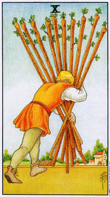
由于「权杖」是如此地投入于活动与行动，它们也会招来问题。它们不断处于冲突之中，几乎会吸引敌人与困难。这，部分是由于缺乏目的和计画，但同时也是因为「权枯」暗地里十分享受任何同争。
这张「权杖十」，表面上向我们展现的是，一个人被生活的重担压迫，尤其是被责任压得抬不起头来。「权杖」的热忱令他卷入如此自多的情境，现在，弔诡的是，那份能量已经被承诺和问题给压垮。他想要自由自在地去旅行，去寻找冒险和新的经验；但取而代之的是，他发现自己就像个住在市郊的上班族，陷入了一张由无穷责任织成的网——财务、家庭、自己创造出来的工作……。这并不是他所规划的；它只是在他周遭下已「长」了出来。
在这儿我们看见「权杖」的大问题。「火」的能量未经思考就行动，迎头承担新的问题，纯粹只为那份挑战。但是当这人感到厌位，想要尝试新的事物时，这些情况与责任并不会消失。它们继续存在，并可能淹灭似乎已经征服了它们的火焰。
在感情方面，这张牌显示此人把一段关系的所有压力都担负在自己喘上。无论起了什么问题、冲突，或是不满，他总是试图将之缓解、抚平。他弓着背，费尽力气要维持这段关系，而另一方却可能权本不曾认知到发生了什么事。
在实际事务及情感状况中，此人将所有的重担都拢负到自己身上。是他自己制造出了这种局面，他需要了解，其他的因应方式仍是可能的。在这样的情境中，这些负担或许并不全然是真实的，或者至少是可以避免的；它们事实上可能是种借口，以规避去做任何真正具有建设性的事，像是挣脱一个糟糕的处境。
逆位牌
和许多牌一样——尤其是逆位时——这张牌可能的意义不只一种在某次占卜中，我们可以判定最佳的意义（虽然有时不只一种意义可以敌用，如同选择也是），部分是借由其他的牌，部分是借由唯有透过练习才能发展出来的一种直觉。在塔罗研究中，这多样化的意义，正显示了某个情况可以在许多方面发生变化。
最简单地说，逆位的「权杖十」表示某人的负担，在份量和数量上都已加剧，到了可能令他过滇的程度，无论是在体力上或情绪上。与此同时，它也可能意味着此人已经抛掉了这些重担（或许是因为它们已经变得太过难以负荷）。从此处，情况又有了分歧。他抛开这些棍棒，是因为他领悟到可以将这份能量用于更好的目标？或者他只是要抗拒这些责任，而没有真正去做任何建设性的事？一位我曾为她占卜的女士如此描述：问题，在于要把查棒抛在脑后，还是扔在面前。如果是抛在脑后，是指我们企图尝试新的方向。若是扔在面前，则意味着我们将会再次拾起它们，继续在同样的道路上蔓苦跋涉。
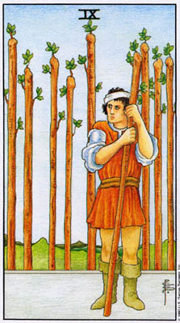
「九号牌」显示该牌组是如何因应问题，以及解决问题所需的九协。「火」暗示着强大的力量、体力、心智的敏锐。然而，在情感上，这种对于抗争的嗜好可能会令「权杖」队入冲突的模式中。在这张「权杖九」中，我们再次看见一个人面对着来自他人和生活的许多对抗；与其吐届用担，他选择反击回去。争斗的行动培养了他的力量，因此画面显现一个肌肉发达、目光机警的人。他后方的棍棒可以代表他在生活中的资源，却也可以是指在他身后隐隐浮现的问题。无论何者，他都準备好面对下一次战语欢
不过，请留意他那僵硬的姿态，全身紧纳，两肩耸起。同时也请留意他头上的绸带，象征心灵的创伤。这位斗士并不是一个完整的人。无论是出于必要或习惯，他封闭了对于冲突之外的生活的觉知，而现在，他只和寻找着下一次战斗，眼中只看见敌人，有时其至在敌人已投降之后。
逆位牌
再一次，逆位牌意味着替代的选项。首先，防卫失败了。障碍与问题越滚越大，以他的力量无法抵抗。然而，另一种意义则是寻找某种不同的对宁。
我们不应该假定这张游位牌永远是建议我们放弃战斗。抛弃防御得冒很大的风险，万一我们长久以来拒之于安全距离外的问题扑噬过来怎么办？背景的脉络决定一切，有时它就是需要那双强有力的肩膀和锐利的眼光。然而，请观察这人光是保持紧张备战就耗费了多大的能量。在特定的占卜中，这张牌真正的着意，只能透过审视它与其他牌的组合才能变得清晰。（图三十一）
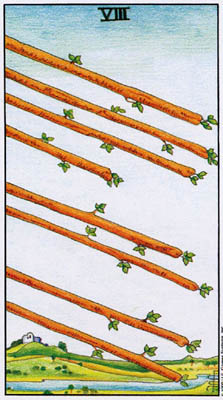
「火」暗示着迅捷与行动。尽管这种行动有时欠缺方向，我们在这儿看见的意象是一场到达终点的旅程，或是完成了的事物。当。「火」找到它的目标，计画和人情境便会来到一个令人满意的结局。权杖」着陆了。因此，这张牌上的画面暗示在「权杖」的能量中，加入了五角星」的浩实。
韦特很浪漫地将这些权杖称为「爱之箭」。我们可以将之特别视为恋情中所采取的行动、引说，或是被提出并被接受的求婚。
逆位牌
倒转过来后，这张牌的图像变成了一种持续不断的状态，凡事都没个了结，尤其是当你希炎有个结束时。某个情境或态度就这样持续又持续，在可见的范围内都没个了局。和如果这样的情况没法人惯免，那雇最好胺认它，接受它，而不要让它带来挫折或失选。另一方面，这种「悬浮在半空中」的特质，有时可能是我们自己造成的，因为我们预期蘑个情境持续县而未决。在占卜的牌阵中，希劳与吃惧」是最重要的位置之一；它往往会成为一则自我实现的预言。
「爱之箭」倒转过来，就会变成「嫉妒与争吵之前」。嫉妒可能往生自不确定和迷恶——对我们自己和对方的店情皆然。
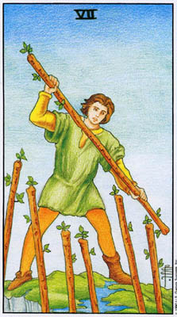
如同「权杖九」，这张牌的主题是「冲突」，但在这儿我们看到了战斗的实景，而其作用是令人振奋的。以它们天生的力量和积极，「权杖」期竺会喘，而且通常也会。远过积极活跃的冲突，牌上这位人物超越了任何消沉沮丧，上升到令人兴奋忘我的清朗空气中。在某方面，这张牌展现着「权杖九」的背景。透过早先胜利的经验、保持拔尖的经验，我们变得防卫成性，随时準备投入战斗。只要战斗还在持续，我们就很享受它。受「_权杖」影响的人需要知道自己活着，需要肾上腺素大量涌出，让他们感到元把火仍在体内大窜。只有到后来，不断争斗的习惯才会包围、掌控他们。
逆位牌
如同这幅图像所暗示，这人是在用冲突所带来的兴奋，克服不确定感和消沉抑郁。逆位牌则是指他陷入了焦虑不安、犹豫不决，以及窘困难堪之中。正位时，他虽然始终待在风尖浪头，但却不见得多么能掌控自己的人生。在这儿，他不再能无视于这种矛壬了。最重要的是，这张牌提醒你不可迟疑不决，它暗示若是一个人能找到一条清楚的行动路线，「权杖天生的自信将会回来，克服焦虑与外在的问题。
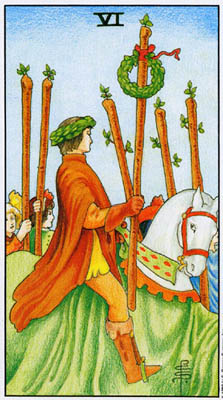
当「权杖」往一号的「王牌」前进，它们变得越来越强大。强调的重点从问题转移为喜悦，从防卫转移为乐观，而到了「王牌」，我们便与赐了生机的「火」合而为一了。「权杖六」标记着一个转扎点。在「金色黎明」体系中，这张牌有个标题叫「膀利」（Victory），而事实上，我们也看见一场胜利的游行，英雄头戴桂冠，追随者前呼后拥。然而，他还没有抵达目的地。（当然，这是一种虚构的想像；他也很可能正要回家。这一点我是依循韦特的提示。）他赢得了胜利。乐观，获致了它所渴望并预期的成功。
常常，尽管当然并非必然，我们只须真正相信自己，就能找到那份能量，成就我们渴望的目标。再者，这样的信念也会鼓舞他人追随我们。六号牌」往往和沟通」与「礼物」有关。在这儿，「权杖」给予周遭人群的，便是「火」一般的对生命的信念。
逆位牌
真正的乐观创造了胜利。而虚假的乐观，以狂言大话或错觉假捐拓盖我们的疑虑，则会导致恐惧和软弱。这张牌正位时所展现的态度并不能被伴括出来，因为当它行不通时，就会成为相反的心态：失败主义，觉得疝人会打垮我们，或是生命或某个特定的人将会以某种方式背叛我们。这种心态往往也会成为一则自我实现的预言，因为猜疑将会招致痛冶。
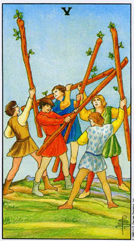
又是冲突，不过是在较为温和的层面上。将生命视为战翊是「权杖」的天性，但在它最佳的意义上，战斗变成了一场令人兴奋的争斗，被热切地追寻着。五号牌」一般都呈现着某种困难或失落，但是「火」元素将问题转译为竞争，视之为人们与社会和他人沟通的一种方式。画面中的年轻人是在打斗，但却不是要伤害彼此。就像孩子假扮骑士玩骑马打仗，他们用框棒相互还打着，但却没有真的击中任何人。他们并非试图毁灭，而只是为了行动的纯然乐趣而竞争。
逆位牌
那令人兴奋的对抗，在正位时暗示一种规则感与公平竞争感，因为若是没有彼此同意的规则，以争门作为一种游戏便成为不可能。导位时，这张牌意味着规则被抛弃了，事实上，这场争站已经染上一种较为认真、且较为险恶的调性。游戏的感觉转变成不满或幻灭。人们实际上试图要伤害或时灭对方。「火」象对生活的态度——尤其是未曾受到「宇剑」的觉知与智慧来开展时——要求生活以正面的方式来回应，并且不去展现它较为残酷的一面。当这张「五号牌」逆位时，又会让人想起那句「火焰炸减」的形容词。
|（图三十五）
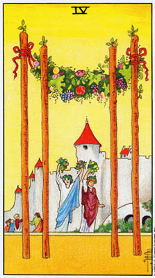
数「四」，连同它方方正正的形象，暗示着静止或稳固。然而，不爱压抑的「权杖」能量，并不像，例如，「五角星」那样，需要保护的篱栅。它不会被圈制，因此我们看见人们欢欣鼓舞地迈开大步，走向最简单的建筑结构，相信太阳会焚烧一切烦恼的阴云。这张牌呈现着一幕家庭的场景，充示了火象的乐观、热切和喜庆。如同在「权杖六」中，我们看见人们跟随着前导者载歌载舞。不过，与那张牌不同的是，那儿是一群士兵妃随着有魅力的领导者，而这儿的人们则是沉浸于欢乐中。
他们正在梧开一座筑有城牆的城堡，走向开县的凉棚。换句话说，他们的精神与勇气带领他们离开一个防卫性的情境，迈向开阔的场域。我们可以将这幅图像与「塔」牌相对照（见右图）。「塔」牌中的两个人物，其衣着与「权杖四」中的两位主角极为类似（连袍子的颜色都是一监一红）。在较为世俗的意义上，「塔」牌示现的是，当人们容许某种压迫性或悲收的处境不断积黑，直至无法忍受的程度，继之而来的爆发。在「权杖四」中，乐观的心态和对自由的爱，将人们一同带领出被高牆封闭的城堡——在它变成一座「塔」般的监狱之前。
逆位牌
韦特认为这张牌逆位时意义不变。那份喜悦是如此地强大，无法被阻滞。不过，我们可以补充，逆位的「权杖四」，就像大阿卡纳中的「太阳」牌，可能意味着这个情境中的欢乐并不是那么显而易见。如同「五角星十」中的那个家庭，这张逆位牌所指的人可能需要学习欣赏他们所拥有的。另一种可能是：此人周遭环境中的幸福快乐同样强烈，但却是「非正统的」，至少就其他人的态度和期莹而言是如此。
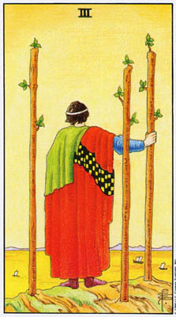
数子「三」，由于它将「一」与「二」结合在一个新的实相中（见大同卡纲中的、皇后」牌），因而意味着结合与成就。在每个牌组中，「三」蚂现者该元系到于成熟的状态。在「权杖」中，这就成为「成就」。牌上的人物看来很强大，但却安稳静立，也不曾受到威佃。「权杖五」中年轻的竞争者已经成功了，冇其是在商业或事业等方面——虽然这张牌也暗示着情感上的咸黑。，权杖」的热忱并没有消失，但是在这儿，牌中人派遣他的船队出外探索新的领域，自己却留在后方。反过来看，我们也可以想像这些船正在回航，将探险的成果或新的经验带回日常生活中。相对于「权杖骑士」，这幅图像暗示在我们既有的成就中守住一个稳固的基础，同时继续开拓新的翁域，并开展对我们自身的兴趣。有时在占卜中，这可以意味着对既存的关系保持首要的隋诺，但却仍在寻找新的朋友或恋人。
某些塔罗牌会在特定的情境中，具有只适用于该情境的特殊意义。对于一个受到过去经验的折磨、或与之不断抗争的人，「权杖三」可以意味着与自己的记忆和解。这些记人忆变成了船，向选方驶去，越过了一条砚阀的河流，然后驶入海洋。佘征满足的夕阳照耀着河水（感情生活的象徽），为它染上温暖的金黄色光亡。
在「权杖三」中，我们看见了第一张「门户牌」Gatecard）（和权杖」牌组，由于强调行动，所以这类「内心牌」的数目，要比其他牌组来得少）。就形而上的意义而言，大海总是在人们心中噢起一种宇宙的广卖神秘之咸，而河流则象征小我的经验融入大海中。船只代表我们探索深刻经骏的那个部分，而那人则表达着在我们尝试这种形而上的旅程之前，将自身植根于寻常现实的重要性。以上这些概要的说明，只为这张牌真正的意义提供了一种智识上的投影。这意义存在于融入这幅画面的经验，直到那船只载着我们进入自我的未知颁域中。意味深长的是，画面加入了水」与「土」的元素《以海洋和燥石的形式），将这些意象导向了_火」元素最强大的潜力。尽管如此，这张「门户牌」的特寅——也就是探索未知——仍然是属于「火」介的。
逆位牌
这张牌逆位时有好几种意义，反映着它正位时複杂的本质。一方面它可能暗示某种「探索」或计画（实际上或情感上）由于遭到「暴风雨」而失败，所谓暴风雨」，也就是指强大到超出我们预期的问题。不过它也可以意味着在一段疏离和反省的时期之后，再度投入我们周遭的环境。这幅图像正位时，牌中人俯瞰着世界，带着几分孤离之语。最后，它也可能是指被回亿所烦扰。
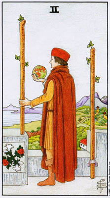
又是一张象征成功的牌，甚至比「权杖三」更成功，因为此处这个，人站在城堡顶端，将世界握在手中。但这张牌并没有带着与「权杖三」相同的满足感。他感到无聊、厌倦；他的成就只是像城牆般将他圈禁在里面（这对火象而言是种很不愉快的处境），而他手中握着的是个很小的世界。韦特将他的厌烦比之于亚歷山大大帝。亚歷山大在征服已知的世界后，据说哭注了起来，因为他再也想不出他的人生该做什么（他不久后的嚼逝，无疑更增强了这个传说的戏剧效果）。
韦特的评注，暗示「权杖」对争斗及挑战的爱好，可能会让一个人——在赢得胜利后——对实际的成就无法感到真正的满足。这张牌与「权杖四」（以及「权杖十」）的对比十分明显。在「权杖四」中，好几个人一起跳舞，走出筑着城牆的城市。这儿则是一个人独自立于城头，被圈禁在他自己的成就中。
逆位牌
在这儿我们看见韦特最佳的关键词组之一：「讫异，惊奇，着迷，麻烦，和翁惧」。这些词汇都是在描述某个直接跳进新经验的人。当我们陛开安全的情境和过往的成就，进入未知，我们释放了如此多的情绪与能量，致使我们既无法避免惊奇与魅惑，也无法免于随之而来的恐惧。对于元些长时间活在某种不愉快或不满足的情境中，终于决定要毅然决然做出改变的人，这张牌传递着非常强烈的讯息。
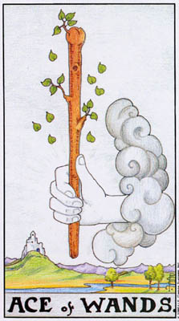
一份力量的礼物，强大的能力，强大的性能量，以及对生命之爱的礼物。木杖上的绿叶进发得如此茂盛，以致于掉落下来，成为「yods」——上帝之名的最后一个字母。「yods」出现在每一张「王牌」中（除了「五角星」），显示我们接收到这些原初的经验，和如同一份来自生命的衫物。我们无法借由任何正常的手段引发或制造它们，它们如同自云间浮现的手般降临到我们身上。只有当我们到达六阿卡纳后面几张牌所展现的高度觉知的境界时，我们才能明了这些原始能量进发的源头。在寻常的情境中，只要体验并欣赏它们，就已经足够了。
在菜个局面的开端，再也没有比这张牌更好的起始讯号了。它帝来了热忱与力量。与此同时，这张牌也教导我们要谦抱，因为它提醒我们，究竟而言，我们并没有在道德上做了任何事而值得拥有这份乐观和超晶的能量——而它有时令我们能够压倒其他的人。
逆位牌
逆位的「王牌」暗示那份原初的经验在某方面的失败。这可以单纯地意味局面转苞对我们不利，或者，尤其是在「权杖」和宝剑」，是我们发现自己无法掌握那份力量，并善如运用。因此，摄位的「权杖王牌」可能意味着混乱，人情势分月离析，若非是因为事情就是这样发生了，就是由于我们拥有太多未受导引的能量，因而最了它们。这可以发生在实务的层面，透过太多的活动，太多新的开始，而不曾罩固过去获得的成果；或者是在情感层面，由于对友谊太有信心，或是纯粹的专横傲慢；或者，最后，在性方面，由于拒绝控制那份火却的性欲。
韦特也为这张逆位的「王牌」提供了一种较不沉重的解读：阴云民蔽的喜悦」。那么这张「王牌」就变得像是「权杖四」或「太阳」牌；那份惊奇和喜乐还是存在，即使我们无法、或不愿看见它就在我们面前。
和如果「火」象征为宇宙赋予生命的灵能，那么「水」就代表容许灵魂接受这份能量的爱。太阳将种子拉拔出土壤，但是先要有水去软化、滋养它。火」代表行动，「水」则是没有定形或消极被动。「水」并不意味软弱，实则，它代表着内在的本体，代表种子的慢慢琴活。在极端的情境中，
「水」与「火」是天敌；大水能淹熄火焰，而容器底下的火则会将本已没有形状的水消散为燕汽。然而，若非融混了这两种原始的对立物，生命便无法
这种吊诡致使炼金师和其他神秘学者将「转化」——这并不仅仅是指改变，而是从分离到整合状态的瞬间进化——描述为「火」与「水」的融合，展现于「哄雄合体」的意象中（在传统社会中，以其严格的性别及角色认同，有什么是比「男与女」更强而有力的对立象征？），或是，较为象征性地，在「六角星」的符号中。在这个古老的图形中（远比它作为犹太标记的现代用法来得古老），尖端商上的「火三角」和尖端向下的「水三角」结合在一起，形成一幅由一个合一的中心向四面八方开展的生命图像。
由于河中的水流动不居，而河流本身却总是保持着它基本的特质，因此河流象征着在一个人生活中所有的外在改变底下，始终维持不变的「真我」。于是，当「火」象征着我们「做」什么，「水」则代表我们「是」什么。
所有的河流都汇入大海。无论我们的小我，是如何坚持自我与其余生命的分隔，我们的本能——我们「水」象的那一面——却提醒我们自身与宇宙的和谐。西方文化强调个人是独特且与世界分离的概念，而塔罗并不否认个人的独特性——它强烈主张如此，透过每一次占卜的独特性——但却代之以眉个人描述为各种元素的组合（右星学的星盘，有着十二个星座和十二个宫位，也教导着同样的功课）。而其中的一种元素，始终是一个人与其余生命的基本连击。
圣杯」牌组展现着一种内在的经验，它是流动而非界定、开放而非限制的。「圣怀」代表爱与想像，喜悦与平安，一种和谐与惊奇之感。它们对我们展现，爱是「通往灵性的道路」，包括我们给予他人、从他人那儿收受，以及在生命较为欢愉的时刻，从生活本身得到的爱。
当生活要求我们采取行动——无论是实质上或情感上圣杯」有时会呈现出消极被动的问题。一切的尝试，试图去做任何事，或是解决某种人复杂的问题，都消解成含混暧昧、漠不关心，或是空幻的梦想。「权杖」能为「圣杯」注入活力，「宝剑」则能界定那份情感的能量，并给予它方向帮助它落清事态（虽然「风」象的风暴将会搅动平静的「水」），而「五角星」则能将幻想落实于实际的计画中。
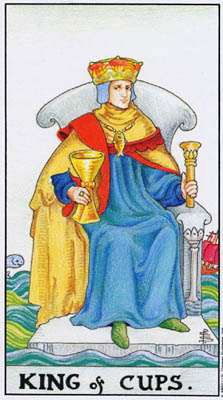
如同「权杖国王」，他在社会责任、成就与成熟等方面代表着他的牌组。也和「火」象国王一样，他作为社会维软者的身分并不让他那么自在。「圣杯」象征创造性的想像力，而要获致成功，他必须规范、甚至压抑他的梦想。他的脖子上挂着一条鱼，是创造力的象征，但却是个人工的装饰品。他已将他的创造力导入具有社会责任的成就。韦特将他描述为一个从事「商业、法律、神职」的人。在某种意义上，他令他的牌组至于成熟；但是水」需要流动，而非被局限。
在他的宝座后方，一条活鱼在波浪间跳跃，意味着那份创造性的想像力仍然鲜活，即使被推到了幕后。同样地，他的宝座漂浮在活泼涌动的海上，然而他自己却不曾碰触到水（对照圣杯王后」），这显示他的成就终究来自于创造力，虽然他塑造人生的方式，让他与自身如诗人般欢快的想像讫分隔了开来。
在极端的情况下，这个意象暗示某人筑起堤顽，圈禁住自身的情感与想像力。比较温和的状况是，它也显示某人是有表达这些特质，但并不把它们当作生活的中心。责任先于自我表达。
这位「国王」并没有看着他的圣杯；而是以手执王杖（权力的象征）般的方式握着它。有些评注者认为这位「国王」象征有着情绪困扰的人，茎至心惭愤怒和暴力。他习惯性地压抑这些情绪，即使是对自己，总是谁持一副平静的外表。
在某些情境中，尤其是在艺术方面，「圣杯国王」会呈现十分不同的意义。由于他是「圣杯」牌组的领袖，他可以象征在艺术工作上的成功、
逆位牌
比「权杖国王」更複杂，或许也更焦虑不安，逆位的「圣杯国王」往不诚发的方向退转。正位时，他将自己的创造力运用在工作上，；导位时，他将才华转向作恶或贪腐。骗子也会运用创造力去拓展事业，但我们不会将他们描述为「商责任的」。
这张牌逆位时可能意味着暴烈的「水」象情绪从平静的表象下浮现，或许是由于外在事件的压力。在恋情上，逆位的「圣杯国王」可能暗示一个不诚买但却专横跋必的情人，较常是男性，有时也会是女性。
最后，在艺术方面，逆位的「圣杯国王」可能暗示某位艺术家的作品其实无足轻重，或是某人尚未成熟，无法创作出重要的作品。在占卜中，如果这张牌与某些导位的「五角星」牌同时出现，像是「八」号或「三」号，最后这种意义会表现得十分强烈。
（图四十）
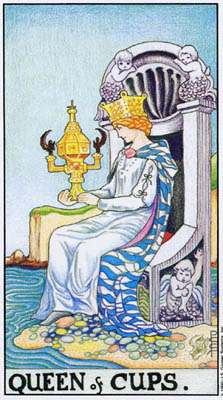
这是「圣杯」牌中最为成功、最为平衡的一张，在某些方面，甚至是所有小阿卡纳中最成功均衡的一张牌——这位「圣杯王后」北乎可说是「世界舞者」的世俗版。介于「圣杯国王」的外在责任和和「圣杯骑士」的消极被动之间，她显示了融合想像与行动、创造力与社会真献的可能性。她的宝座装饰着上半身是小天使的人鱼，稳稳安置在陆地上，显示她与外在世界及他人之间的重要连结，这种连结要比「圣杯国王」更为真实。同时，河水流过她的脚，与她的裙摆融合在一起，意味着自我与情感反门像的统合。那水也暗示「无意识」的驱力——大阿卡纳所展现的潜在灵性模式——滋养着意识面的生活。水、陆地与这位「王后」的结合，暗示着我们滋长想像力的方式，并不是给它完全的自由，任它恋意漂荡，而是将它导引至有价值的活动中，这是大多数艺术家都会认同的理念。这个理念会在「五角星九」中更为强烈地展现，那是创造性纪律的标志。
韦特描述她手中捧着的杯子是她自己的创造物。那是所有的「圣杯」中最为精巧複杂的一只（无论我们对它的风格作何感想!），象征着运用凭像力所带来的成就。请留意它教堂般的形状。直到现代（较为古式的文化仍然如此），所有的艺术都是在表现并讚颂灵性的经验。这位「王后」夫!切地凝视着这个杯子，显示导引并形塑创造驱力的强烈意志，而不压抑它。同时她的神情暗示着，有创意的人会从过去的成就中为未来的活动汲取灵感。请将她热烈的眼光与「圣本骑士」的梦幻或「圣杯七」的含煳空想相对照。
单凭意志力是无法统合想像与行动的。唯有爱能为她的行动赋予意义，并实现她的目标。这些目标是富有创造性的，并不只是狭义地单指艺术，而是更广义地泛指运用生命所提供的机会与元素，将某样东西变得完整而有生气。它们可能包括情感上的目标，尤其是家庭，因为「国王」牌象征社会，王后」则象征家庭，对男性或女性皆然。
最重要的是，她结合了意识与情威。她知道她要的是什么，也会采取必要的步允去获得它。然而她在行动时始终带着一种爱的觉知。
韦特说：「怀着爱意的聪慧，由此而来的愿景之礼」。这些词语暗示，如此喜悦的生命愿景只能作为礼物而降临，但是爱能开启我们，去接收这样一份礼物，去承认它的存在。带着结合了爱的聪明才智，我们借由接纳这份愿景、并以之创造某种真实而持久的东西，回赠了这份礼物。
逆位牌
当圣杯王后」逆转过来，愿景与行动的合一便被打破了。我们看见某个野心勃勃而强大的人，但同时也很危险，因为她无法被信赖。那份爱失落了，把价值看得比自身成功更重要的信念也告沦丧。如果她更进一步地偏离均衡，她可能变得不诚实，甚至邪恶汇落，因为她的创造驱力蠢重得失去了控制。
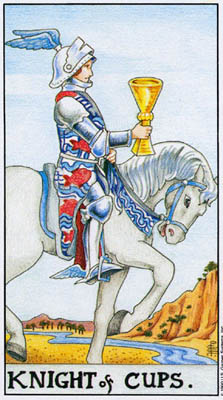
作为一个发展程度未及「王后」或「国王」的人物，圣杯骑士」还没有学会将想像力导入这个世界。因此，梦想主导着这张牌，牌中的意提如缓步的马儿，沉浸于杯之诱惑（想像力的象征）的骑士，都暗示着这一点。同时，这儿所展现的创造务力，强度不及任何其他「圣杯」宫廷牌。只有一条狭窄的小河流过干枯的土地。这位「骑士」还没有学会，真正的想像力是以行动为养料，而非空想。这句话的意思是，如果我们不为自己的梦想做些什么，它们就始终是朦胧模煳的，与我们生活的其他方面汇不相干。
关于「圣杯骑士」的梦幻特质，我们还可以探讨另外一点。是什么在喂养着它——是内在的原则，像是在神话或原型艺术中；或是自我耽溺，像是在白日梦或逃避现实的电影或小说中？英国浪漫诗人柯立之（SamuelTaylorColeridge）曾就「想像」与「空想」做出区分。两者都会将心灵带离日常的经验与觉受，但前者源自于、并导向一种对潜在灵性真理的觉知，而后者却只会制造梦幻。幻想可能令人兴奋，但终究缺乏真正的意义。它们答生自「小我」，而非「无意识」。
从他的本中，并没有任何东西涌现出来（对照「圣本侍卫」）。他也不曾将之塑造成某种比原先更伟大的东西，像是「王后」那样。「骑士」是一位致力于行动和参与的人物，然而另一方面，水，则象征着消极被动。这种悬殊的对比，使得这位「骑士」难以调解这两种特质。由于否定了对世界这份基本的有承诺，他不允许他的想像力创造任何东西。
由于他是一位「骑士」，行动与性爱的外在世界，即使当他在追逐自己的思绪与梦想时，也会吸引着他。他的消极有时可能有些做作，为了否定那些搅扰他宁静的诱惑和欲望而几乎显得夸张。在爱情上，这位「骑士」可能代表一位不愿做出陈诺的情人，他或许很有吸引力，但却被动、冷漠，或是自恋。
「圣杯骑士」这种种不讨喜的形象全都关系着他内在的冲突。然而，他的头般和靴子上生着怒膀，他的马儿虽然步履缓慢，精神却很健旺。他的形貌与「死神」相似，那是转化的象征。如果这位「骑士」不为责任或欲望所牵绊，如果他追随一份真诚的愿景，而不述避外在的承详，那么他便能非常深刻地进入自身，将「骑士」的能量转化为对内在世界的探索。
逆位牌
我们看见这位「骑士」以各种各样的方式应付来自外在世界越来趟多的要求。这可能只是意味着他淮发振作，展开行动，又或是追逐他较为物质的欲望。或者，这也可以意味，一个被动的人被迫去行动或承担，而他并不喜欢这样。即使外在没有抗拒，但他可能对这些要求心怀疯怖。其结果可能是，这位「骑士」与那些迫使他负起责任的人之间，筑起了一道牆。这种态度可能导致虚伪或操控，有时甚至是谎言和诡计。（图四十二）
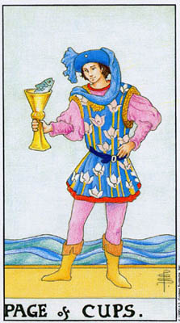
精神上较为年轻，像孩子一般，这位「侍卫」并不似「圣杯骑士」那般苦于与责任或感官欲望的冲突。他意味着一种状态或时期，当沉思与幻想对一个人是十分恰当的。没有外在的要求打扰他温和的洗思。因和此，那条想像之鱼从杯中苹着他，他感到有趣，也回望着牠，而不像「骑士」那样必须如此深入地洞察自己。在这儿，想像就是其自身的正当理由。
那条鱼同时也名征超自然的能力与敏感性。而由于所有的「侍卫」都带有一种学生的特质，圣杯侍卫」可以是指某个正在发展心灵能力的人，或许是透过真正的研习及/或冥想的修炼，文或者这样的才能是自行在发展，但却是以一种平和的方式。
逆位牌
正位时，我们看见一个人让他的想像力在面前油油沸腾。由于他并没有将幻想付诸实行，它们也就没有为他带来麻烦。然而，如果他对之采取了行动，它们就可能会引他犯错。因此，导位的「圣杯侍卫」意味着我们顺随自己的意向，不经思考地行动，或是允许当前的欲望引诱我们，尤其是当它们违反我们的常识判断时。每当我们买了什么并不需要、甚至并不真的想要的东西时，我们就看见了逆位的「圣本侍卫」；当我们做出无法信守的承诺，或是不具任何意义的保证时，我们也看见了他。
在其他情况中，如果「圣杯侍卫」是指圳力的发展，或是真正的灵视时，那么逆位牌是指一个受到这些异象所扰的人。在我们这个理性化的世界，对许多人而言，超自然能力的突然出现，即使是透过训练刻意寻求而来，也可能显得非常骇人。逆位的「圣杯侍卫」反映出这种恐惧，并提醒我们冷静下来，平静地看待从自我的杯中升起的那条鱼。如果伴随着「五角星」牌，它需要被落实于外在现实中，以免被幻想或异象所淹没。
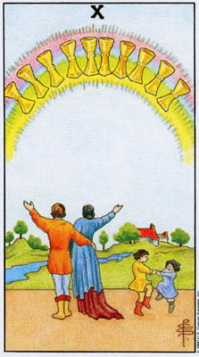
作为最高的数字，「十号牌」象征被该牌组的特质所充满。在「权杖」中，我们看见过度的负担；而在「圣杯」中，我们则看见吝悦与生命的惊奇像彩虹般开展在天际。「圣杯」，神之恩典与爱的象征，是这个牌组的基础，它对我们展现，爱、想像力，以及喜悦，全都像礼物般降临到我们身边。《（《圣经》告诉我们，上帝以彩虹为信约，这个世界将永折不再遭受洪水的毁灭。但这彩虹还带着一种更为光明的许诺——生命会带来快乐，而非只是「没有痛苦」。
画面上的那对男女了解这些。他们相拥着，举头仰蛋、讚颂这彩虹。然而，小孩们跳着舞，但却不曾抬头仰炼。他们象征天真，把快乐视为生命的自然状态。他们认为快乐是理所当然的，但却不浪费它。这张牌展现着一个家庭，主要是指家庭的幸福，但也可以意味任何会带来澎湃的吝谷的情境。它特别是指对某种情境之宝贵特质的领会。当「圣杯十」在占卜中与「五角星十」同时出现，互为对照时，这份意义尤为明显。
逆位牌
疾位的意义有两种基本的变貌。首先，所有的情绪转而与自身为敌。某种具有高度张力的情境——通常是在爱情或家庭上——出了差错，导致暴烈的情绪、愤怒，或欺骗。或者，在实务上，逆位的「圣杯十」可能只是意味此人并未认知或欣赏生命正在给他的幸福。（图四十四）
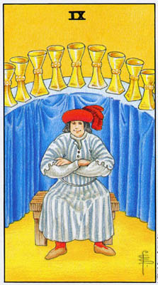
从「十号牌」的深刻喜悦，我们转移到比较简单的享乐，像是尽情疆宫和肉体上的满足。如前所述，「九号牌」描述我们与生活的妥协。权杖九」显现一种强烈的防御；而较为温和的「圣杯」，则示现着造过专注于寻常享乐以避免烦忧与问题的态度。人们有时对这张牌会有抗拒的反应或许是希望看到自己超越了肤浅。
有些时候，尤其是在一连串麻烦或长期辛苦工作之后，再没什么会比简单的好时光更让人心满意足的了。
逆位牌
就这么一次，疾位的牌带来了更高的觉知，套用韦特的公式，就是「真理、忠诚、自由」。配合正位的意义，这些字词暗示着对表面价值的拒斥；但它们也意味着透过坚守真理的脉络，或是对自我、他人或匠个目标保持忠诚，我们便能在极为雍乱而压迫人的情境中，获致胜利与解放。
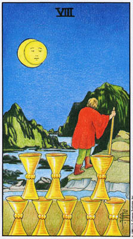
「圣杯」恰悦的本质，往往会哄诱我们远离必须做的事。这张「八号牌」开局了（或结束）一系列处理「水」象之行动问题的五张牌。在这张牌中，我们看见某人转身离开两排相叠的正立的杯子，那些杯子象征某个情境，不仅曾经给过他快乐，而且还将继续如此。对照「圣杯五」，这儿所有的杯子都还是正立的，一切都没被倾倒。然而这个人却知道，该是离开的时候了。这个意象暗示了「水」象直觉真正的作用之一——感知某样事物该要结束的能力，在它干涸或在我们周遭出毁之前，就知道是时候该权维向前了。
我们看见牌中的人物爬上一座山丘，走向高处，带有移往更具意义之情境的向意。请留意这个人物与「隐士」的相似性。要达到「隐士」智慧的高度，我们首先必须将生活的寻常事物置诸脑后。
「隐士」提醒我们，陆地的意象并不必然意味着一般意义上的行动或参与，而也可以暗示几乎相反的概念：亦即，从外在活动中抽离，寻求一种更高的觉知。这个场景乍看之下像是发生在夜晚，但是当我们仔细看去，便会发现它事实上是在描绘一次日馆——月亮横过太阳前方。一种月之位相」，亦即一段内在觉知的时期，接管了外在导向的活动。透过在活动的场景中加入月亮的意象，这张牌教导我们，发展更深的自我感也是一种行动。还记得「隐士」，借由逆转他上方的「女祭司」的性别极性，在一种自我觉知的确切修炼中结合了行动与直觉。
无论我们是将这人看作从世俗中抽离，还是投入行动中，这张牌都象征着离开一个稳定的情境。在它最深的层面，这张牌可以发挥「门户牌」的作用，在某些方面类似于「权杖三」。这两张牌都运用了进入未知旅程的意象，但当那张「火」象的牌被引向「水」，这张「水」象的牌却被引向「风」。「权杖三」打破了小我，释放探索的精神，而「圣杯八」则离开「水」的朦胧咀味，借由攀登「隐士」的山峰，间向它所象征之抽象原则的特定知识。
逆位牌
有时，逆位的「圣杯八」只是简单地否定了这张牌的基本意象——拒绝离开菜笙情境，决心坚守下去，即使当我们内心深处已经知道，我们已经不能再从中得到什么了。这样的描述点出了许多人际关系的特征。
然而，这张牌逆位时通常仍保留着它代表觉知与正确回应的特质。它象征离开的时候还未到来，当前的情境仍会持续带来喜悦与意义。
最后一种可能性：胆怯，离开某个局面，因为这人缺乏勇气去贯彻它，去从中取得所能获取的一切。许多人让这成为生命中的一种模式；他们投入一段关系，或是工作、计画等，然后当困难出现，或是真正承诺的时刻来临，却又逃离而去。（图四十六
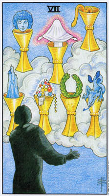
在「圣杯七」中，「永」象的问题以最直接的形式浮现出来。情感与想像可以创造出美妙的愿景，但若末能落实在行动及生活的外在现实中，这些幻想的景象仍只是白日梦，是没有真正意义或价值的「空想」。请留意牌中的异象涵盖了一切范畴的幻想，从财富（珠宝），到胜利的桂冠，到恐惧（龙），到冒险（城堡），甚至神话的原型——一张天神般的脸，发光的神秘人形，还有一条蛇，超自然智慧的普世象征。如果认为白日梦之所以没有意义，是因为它们的内容，这可是个错误。相反地，它们往往是从深层的原型需求与意象之中间现的。日日梦缺乏意义，是因为它们与自身之外的任何事物都毫无关连。
逆位牌
这张牌逆位时，意味着一种从梦想中创造出些什么的决心。它并不意味着弃绝幻想，而是为它做些事情。（图四十七）
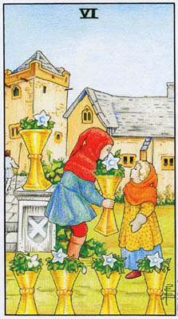
作为代表善意的情感与梦想的牌，「圣原」象征甜美的回忆。有时这些回忆确实呈现着过去的往事；但也有时，我们可能是把过去理想化了，并和旗过安全与驻福的烟雾来凝避它。章年是第二种态度的标记，它被描绘成一段安全的时期，当父母或兄姊保护着我们，提供我们一切所需。有时这样的态度能带来一种温暖的安全店，能帮助人们面对当前的问题。在此种意义上，这张牌显现着「过去」（小矮人）正在给「未来」（小孩）一份回忆的礼物。然而，在别的时候，对于过去的执着却可能妨碍一个人面对眠前的问题。「过去」可以让人从「现在」分心，正如对「未来」的幻想亦然。
在回亿之外，「圣杯六」还有其他的意义。「六号牌」显现施与受的关系，在这儿，我们看见一个老师或保护者的形象，正在给予某人智慧与安全感，这对象可能是一位家庭成员、学生，或是朋友。
逆位牌
如同「圣杯七」，逆位的「圣杯六」意味着往行动的方向移动。特别是，它显示的是「向前看」，而非流连过去。这两张牌逆位时意义十分相似，不同之处在于「圣杯六」显现的是一种态度，而「七」则是指所采取的实际行动。
其他时候，依其正位时的意义而定，闻位的「圣杯六」可以是指混乱的回忆（对照逆位的「权杖三」），或是一种与过去疏离的感觉。它也可能意味着一段关系的破裂，而这关系原本是基于一个人保护或教导其他的人。
（围四十八）
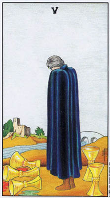
「五号牌」关系着争斗有时是伤痛。在「权杖」中，我们看见叶争的冒险；而「圣杯」则展现对于「失落」的情绪反应。这张牌刻画着悲伤，但也显示出接受。三只杯子倾倒在地，但还有两只仍然立着——即使在这个时刻，牌中人正全神贯注于打翻的那三只上。在捉牌时，我沉沉看见这张牌连结着「圣杯三」意味着快乐或希望已经失去，又或是「它剑三」；那两个立着的杯子往往呼应着「圣杯二」，亦即，来自一位情人或朋友的支持。
那女子（或男子；这人物中性的特质，指出悲伤是不分性别的）僵硬地站着，课在黑衣中——哀愉的颜色。她必须去接受，某些六福已经突然消失了，被打翻了。她还不知道仍有些东西留存了下来，因为首先她必须理解并接受那份损失。那些杯子是她自己打翻的吗？由于鲁莽粗心，或是将它们视为当然？以觉知的角度而言，这张牌呼应着「正义」，真理与接受责任的标志。而她的姿势和服装又很像「隐士」，后者将自己包裹在智慧中，使他在向内寻求生命愿景的任务中维持撬立，而在这愿景中，他将会接受不公平。
那条河代表悲伤之流，但那座桥却象征着意识与决心。它从过去（失落）通往未来（新的开始）。当她接受了她的损失，她便能转过身来，拾起那两只立着的杯子，跨过那座桥，走向那悚房子——机定与延纹的象征。
由于它深刻地唤起了悲做之感，这张牌构成了另一张「门户牌」，在我们心中引发那种心灵的失落感与分离感。就是这种感觉，在世界各地都衍生出从天堂堕落或被放逐的神话。
逆位牌
逆位时，这张牌的基本意义可能以三种方式起着变化。首先，它可以意味着不接受损失，以及——作为此种意义的延伸——虚安的计画或错误。其次，它可以是指在某个悲伤或令人烦乱的事件后，获得来自他人、友谊、新的兴趣或事业的支持。最后，它可以强调一种觉知，明白哀伤当前，还留下什么是重要和永恒的。在这种意义上，这女子从三只杯子转向那两只。此处那两只杯子象征此人生活中坚实的基础，它们仍然正立着，因为它们没那么轻易被打翻。而这份觉知也指出，那三只翻倒的杯子，象征某种在它倾毁之初看来似乎很重要、其实并不见得那么重要的东西。
（图四十九）
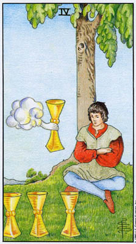
「圣杯」被动的特质有时会导致冷漠，一种我们可以称之为「仙面想像」的心态，致使我们将一切事物都看成没有价值或无聊乏味的。似乎没有任何东西值得我们奋起争取，没有事情值得做，没有事情值得探究。
地上的三只杯子象征这人过去的经验。生命曾经给予他的，令他感到厌倦，致使他不曾认识到由第四只杯子提供给他的新机会。这只杯子与「圣杯王牌」很相似，暗示这些新的机会能够带来快乐与裕足。不过，基本上，这张牌是在显示一种情境：生活中的一切事物都显得生篇一健。这张牌有时是指由一种单调而缺乏刺激的环境所导致的冷淡漠然。
逆位牌又一次，这逆位的牌带领我们走出自我，唤醒我们锭身世说和其中的可能性。新事物，新关系，和新想法都被提供给我们。最重要的是，这逆位的牌展现了热忱，捉住新的机会。
（图五十）
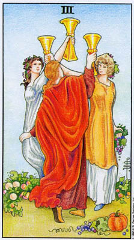
「三号牌」显示对该牌组意义与价值的一种欣赏。由于「圣杯」是这个牌组的基础，「圣杯三」意味着喜悦、欢庆，以及最重要的，分享生命的神奇美妙。仿佛我们已经度过了行动的危机，这个牌组最后的三张牌，全都依据它们的数字，洋溢着喜悦幸福。此处我们看见三名女子欢喜庆祝，像是在丰收季。可能是危机已经过去，又或是工作产出了美好的成麻。
我们看见这三名女子紧密交继在一起，甚至很难分出那条手臂是谁的无论在好时光或图难时刻，这张牌都显示着一种经验的分享。
逆位牌
再一次「逆位牌可能呈现好几种意义。首先，它可以是指失去菜些快乐。时常，它是指我们所期待的菜样事物并没有发生。它也可能意味着友谊的破裂，发现朋友不曾在我们需要时支持我们，所带来的幻灭，又或是一群朋友的决裂。
另一种可能则是此牌原始意义的败坏。相对于共同欢庆生命的喜悦，我们发现——如同韦特饿富古趣地撕述为——「物质享受与感官享乐的过度」。显然韦特的本意是指较为深刻的价值被忽略了，然而，耐人寻味的是，大多数人都不宽得这段话——尤其是作为预言时——有任何令人不快之处。
在许多方面，这张牌的作用类似低阶版的「恋人」。大阿卡纳的「恋人」牌显示着成熟性爱关系的强大力量，而这张小牌则强调一段关系的开始。就占卜而言，这并不是一成不变的规则。这张「圣杯二」时常是指一段长期的结合或友谊，或许是在一种比「恋人」轻上松的层次上。然而，在牌的研究以及——最常见地——在实务中，它是指友诅的盟约，一段恋情的开端。
在那张大阿卡纳中，我们看见了天使，超意识的象征。在这张「圣杯二」中，我们看见了生了双翼的猴子，其下是汉密斯双头蛇杖，疗愈与智慧的象征。这两张牌都显示了两个人如何透过爱来结合他们各自的特催与能力，在他们的生命中创造出某种超越任一个人独自所能成就的东西。愤狮子象征性欲，怒膀则是灵性。性的欲望将我们引领至爱，而爱又给了它更高的意义。
在本书的第一部分，我们看见了「恋人」牌如何可以作为统合后的自我的一种图解。我们也可以用类似的方式来看待这张「圣杯二」。当这昂子象征行为与行动，那女子则象征情店、敏店度，以及对经验的欣赏。借着结合这两种特质，我们为自身的生命赋予了价值。
请留意这男子与「吊人」的相似性。在一次占卜中，这两张牌互相连结地出现了。右牌的那位女士是位艺术家，她想知道她的工作应该朝向何种方向。她特别想要探究她的艺术是否来自生命真正的中心，或者只是一种智性的运作。且说，其他的牌显示，在她一向在做的事情上，她已在技术上成就了某种程度的精熟，然而作为结果的「愚人」牌，却显示她会跃八一个新的颁吉。但是「圣杯二」则显示，如果她能将技术上的能力，与对精神梦朵的采亦（由牌中女子所象征）连结起来，便能获致成功。
逆位牌
以种种不同的方式，这张逆位牌显示正位时它所名征的理想之破灭。它可以意味一段恋情或友谊在某方面变了质，尤其是出于嫉妒或是信任的瓦解。它可以单纯地意味一段关系的结束。根据周围其他的牌，它可能暗示一段关系由于受到内在或外在的压力而烦估可危。另一种可能是迷恋，人们对别人、对自己，假装一段恋情比它实际上要来得意义重大。依循类似的脉络，这张逆位牌可能显示人们表面上行礼如仪地交往着，但其中一人，或是两个人都并不真的在意。
如果我们将这张牌视为、自我」的表征，那么卸位时它便是指在我们的作为与我们的感觉之间的分裂，亦即行动与情感之间的分裂。
从「圣杯国王」矛盾的情感，通过在欢庆与消极之问的种种平衡，我，们终于到达了「王牌」——作为生命基础的「爱」之标记。「圣杯王脸」的直接意义，是一段幸福与爱的时光，一份喜悦的礼物。正如「火」创造了世界，「爱」给了它价值。
史密斯的图像描绘着白鸽和圣饼，特别突显着传说中的「圣杯」（TheHolyGrail）——据说它容纳着在世间运作之圣灵的实体存在。在亚瑟王传奇较为深微的版本中，维葡亚瑟的辉煌王国的，并不真的是骑士精神，亦即，一种道德的结构，而是隐藏在国土中的「圣杯」之秘密存在。当「圣杯」离开（因为亚瑟的骑士们不能以合乎灵性的方式来接近它），王国也就分崩离析了。这则寓言告诉我们，这个世界最首要地并不是以它的律法、道德秩序及社会结构来运作，而是以灵性的基础——它为前面这一切事物赋予了意义，并保护它们免于败壤、堕落。当我们将存有视为某种仅仅需要被征服的东西（亦即亚瑟的骑士们追了「圣杯」的方式），我们便只会带来混乱。「圣杯」——水——象征接受性。爱，以及究极而言的生命，无法被抓住，只能被接受。
逆位牌
逆位的「王牌」总是会带来骚乱和阻碍。在这儿，我们看见不快乐、暴力和崩毁——正是亚瑟王传奇中，当「圣杯」离开他的王国时所上演的剧情。这张逆位的「王牌」，可以单纯地指时局转而对我们不利，而我们只能接受生活不仅会带来喜悦，也会带来问题的事实。或者，这张牌倒立时，可以暗示这份不快乐是我们自己造成的，原因是未能认识到生命所给了予我们的或是当我们需要冷静时，却做出激烈的反应。
在许多方面，「宝剑」都可说是最「困难」的一个牌组。这器物本身是。一种起器，象征着痛苦、愤怒，和毁灭，而「宝剑」的意象所描绘的，多半也都是这类的经验。然而「宝剑」也可以象征斩断幻象与複杂的问题——当年亚歷山大大帝在面对难以解开的「戈帝安之结」（TheGordianKmot）时，便一剑噼开了它。而那位寻得圣杯的骑士，也是在从王国的守护者梅林手中取得魔法宝剑后，才能展开他的灵性探索。同理，直到我们学会认识、并接受真相——无论它会带来何种痛苦——我们方能展开对生命意义与价值的师画记
r它剑」隶属于「风」元素，或是「气」，往往被认为是最接近「以太」（Ether）——或是「灵」——的元素。在西洋语系中，「灵」（spirit）与「气息」（breath）这两个字是直接相关的；而在希伯来文中，「灵」与「风这两个概念用的根本是同一个字。正如空气是不断流动的，我们的心也从不止息，总是在翻腾、扭钟，有时狂乱，有时平静，但无时无刻不在起心动念。任何尝试过冥想的人，都会知道心是如何顽强地骚动着。
与「宝剑」相关的一个问题是「未落实的思考」，或者我们可以称之为「哈姆雷特情结」（Hamlet complex）。心灵看见一个情境的这许多面向，这许多可能性，使得理解判断——更别提行动了——成为不可能。由于我们的文化总是强调理性，今天许多人将一般性的思考视为人生所有问题的襄因。他们告诉我们，只要我们停止思考，一切事情都将圆满无碍。就算这样的事是可能的，塔罗却告诉我们，这对我们并无益处。对于某个元素的问题，我们并不是借由拆弃它、或用某个东西取而代之来加以克服，而是将它与其他的元素结合。事实是，我们越是困恶，便越需要我们的心智，因为别无他物能够荡清真理。然而，我们也需要结合「风」与「水」，亦即接受性的情世。我们也需要将它与以太」，「灵」，相结合，也就是植根于灵性/心理真理的深刻价值，如我们看见大阿卡纳所体现的。那么「风」象的问题就会转变成「道」，即智慧。
「宝剑」所展现的更为明显的问题是悲伤，痛苦，愤怒「风」象暴烈的一面。我们无法借由忽视而克服它，但我们可以为「宝剑」加入「权杖」的乐观也可以运用「五角星」，透过投入工作、大自然，和外在的世界，将我们带出自身的情绪。
作为社会结构的维护者，这位「国王」代表权威、权力，以及判断力。他汲取「风」象的心智能量，并以敏锐的心智与人格的力量，用之于谁持、治理世界。他的王冠是黄色的，是象征心智能量的颜色，而他的披风是紫色，代表智慧。他的踢帽是红色，是行动的颜色。这位「国王」的智能，并非单为其自身而存在，而是为了它所能「做」的，作为权语的一种工具。同理，他的宝剑，不似「宝剑王后」或「正义」女神手中的宾赘般直指向天，代表纯粹的智慧，而是稍稍斜向右边——代表行动的方位。这份对自身的判断采取行动的需求，往往会扭曲判断力本身，这个事实，我们只要比较一下学院派的政治观察者，与实际治理国家之人所处的情境，就能明白了。
尤有甚者，对于以社会为念的「务实态度」的这份强调，可能会窄化他的视角，成为一种十分狭隘的唯物主义。我们可以在那些对自己绝不感情用事的良好判断力引以为傲、没时间理会「神秘主义的胡言乱语」的男男女女身上，看见这位「国王」的身影。这样的人通常会忽略，他们的思考是多么依赖成见与偏见，而非对生活的观察。
请留意这张牌与「皇帝」的相似性。我们可以将这位「国王」称为 是帝」在现实世界的代理人。那张大阿卡纳体现着秩序、律法，与社会的原型，而这张「宝剑国王」则在实践上维系着这些原则。
两只鸟儿在王座后方飞闭着，牠们是「宝剑」宫娃牌的标志动物，象徽着心智将我们带上智慧高空的能力，远离火炙的激情、水湿的情绪，或是土象尘俗的物欲腐化。另一方面，数字「二」象征选择——在抽象思考与必须在世间采取的行动之间恒常的紧张。
可是，如果飞鸟象征心智移升到世界之上的能力，牠们也象征这样一种喇度可能造成的孤高疏离。请留意，这位「国王」的宝座仿佛立于云端。如同「权杖国王」，「宝剑国王」也可能会有傲慢的倾向，他强大的心智及意忘，会把他置于周遭较为困王的人群之上。在社会事务方面，这个意象暗示政府和统治者之判断与人民实际需求分家的倾向。在较为个人的层面，我们会在那些严酷、冷淡而喜欢批判的男女身上看见这位疏离的「国王」。作为丈夫或情人，这位「宝剑国王」往往是指一个跋屋或有操控欲的人。
在最佳的意义上，「宝剑国王」召唤着「正义」——大阿卡纳中位于_皇帝」正上方的牌。当他连结上这张大阿卡纳，宝剑国王」代表着社会公义，明智的律法，以及最首要的，对智识上的诚实的信奉，以及将知识付诸实践的必要。如同「正义」——也是所有宫娃牌中唯一的一张，他迎面直视着我们，是智慧的化身，迫使我们去认清并坚持真理。
逆位牌正位时，宝剑国王」便已走在「有承担的智性」和「为权力而权力」的狭窄分界线上。逆位时，他倾向于跌落在这条线错误的那一边。他是腐化的权威，是用于争取权力及支配地位的力量。
在占卜中，我们永远必须将这样强大的意象列入考虑。逆位的「宝剑国王」（或任何逆位的宫廷牌），或许只是意指某个处于困境中的人。在伴随「宝剑王后」或「骑士」出现时，它可能意味着一段棘手的关系，或是未能至于成熟（详见「占卜」章节中，关于同一牌组的宫廷牌之间关系的探讨）。然而，就其本身而言，这张逆位牌象征一个强大心灵的傲慢，耽溺于自身，眼里除了自己的控制欲外别无他物。（图五十四）
作为这个牌组的「阴性面」，「宝剑王后」象征着悲伤与智慧这两种经验，尤其是两者之间的关连。经歷过痛苦〈这张牌有时意味着寡居），并以勇气、接纳与诚实面对了它，她已找到了智慧。
她左手胸上（左边代表经验）挂着的流鳞，很像一条剪断的绳子（对照「宝剑八」）。她运用心智的宝剑，将自己从混淆、疑恶与呗惧中释放了出来；现在，尽管她对世界皱着自，却也对它伸出了手。虽然云团聚集在她身边，她的头却保持在云端之上，在真理的清新空气中。一只鸟儿，象征她的智慧之纯粹，在她上方高飞。她的宝剑，和「正义」与「宝剑王牌」一样，直指向天。
软弱无力的女性往往会因男人的行为而受苦，在这个意义中，这张牌特别是指女性。就人物而言，它可以代表任一性别的某个人，因为悲伤与勇气都不受限于性别。
逆位牌
逆位的「宝剑王后」可以意味对悲伤的过度强调，某个人由于忽略了周遭的美好事物，而使生活显得比实际糟糕得多。她也可以显示一个萤得恶劣的强大心灵，尤其是作为对于痛苦的反应，或是来自不愉快的傅境或人的压力。有时她代表一个极为强横的人，她或他不仅要求、并且预期周遭的人，甚至生活本身，都顺从她的心意。
当人们反对她，这位「王后」会变得怀恨怨毒，心胸狭窄，瑞固偏执，也会像「宝剑国王」一样，用强横的态度迫使周遭的人遵从她。无论她代表的是过度的悲伤或自负自我，她都失去了正位时对真理的信奉。
这位年轻的「骑士」，他的年轻，使得他既比宝剑国王」自由，不需担负和那么多的社会责任，也不像「王和后」那般受到经验的锻治，他骑着白马迎头冲进暴风雨中，以一胺热忱挥舞着宝剑，要克服一切的困难。他英勇善战而勇猛强健，但却也有着放纤的倾向，甚至狂热。他不承认任何限制。
不过，他往往不知道该如何打持久战。他期待敌人和生命的问题在他的冲锋之下土骨瓦解，当某个情况需要长期、稳定的苦干时，他便感到难以应付。
他的热切暗示着几分天雁，就像一位从未吃过败使的年轻骑士。他的勇敢，他的技艺，以及随时準备迎击所有问题的意愿，有时可能包藏一种对失败的恐惧，这是当生命较为重大的难题来临时，他所必须面对和克服的。他在许多方面都是「圣本骑士」的反面，他将所有的能量都导向外部；安静地独处或许会令他感到苞张不安。
逆位牌
与「宝剑国王」和「王后」一样，逆位的「宝剑骑士」被自己的弱点所控管了。他放肆不羁，草率粗心，言行放缩。他的冲锋变得狂乱任性，当某个情境需要采取较为沉静、谨慎的态度时，这是一种错误的反应。
这张牌比其他的「宝剑」宫娃牌都要轻快得多，这位「侍卫」代表面对问题时，一种与「宝剑骑士」十分不同的态度（请留意当「国和王」和「王后」强调智慧，这两张较为「年轻」的牌则在处理「宝剑」较为立即的冲突特质）。他并不向前进击，而是觉得只要超脱其上就已经足够，去找到制高点。他并不去解决冲突或迎击对抗，而是将自己抽离。
如果所处的情境需要这种轻松的应对方式，那么宝剑侍卫」的超然态度是十分有利的。但如果有较为困难的问题牵扯在内，那么这位「侍卫」的做法就会变得难以为继。借用韦特的话，他需要「保持警觉」，确保他人或情境不会太过逼近。这位「侍卫」的许多能量，都用来察看后方了。作为一个有点年长的学生，哈姆雷特体现了「宝剑侍卫」的旁观与嘲讽的态度。然而，他的处境，其实需要「骑士」积极进取的做法。
由于他疏离的特质，「宝剑侍卫」有时可能沉溺于窥探他人——可能是真的窥探，或是象征性地——作为一种生活的态度。换句话说，他可能会将人类生活视为某种奇特的景观，而他自己并不打算参与其中。
逆位牌
在这里，我们看见「宝剑侍卫」疏离的态度，在某个需要更多力量的情境中产生的结果。警戒的态度变成了偏执狂；每个人似乎都是敌人。一开始是「我是超越这一切的，我不需要理会这些」的感觉，变成了对问题的执迷，以及一种似乎对之无能为力的反应。宝剑」时常会有这种软袍无力的感觉；它们需要「权杖」帝来勇气和乐观。
从宫廷牌的蔚蓝天空，来到了「宝剑十」和「九」阴郁漆黑的愁云惨雾。正如「圣杯十」示现着满滋的喜悦，「宝剑十」则用痛苦将我们填满。尽管画面很极端，这张牌并不意味着死亡，甚至也不特别代表雄力。比起问题本身，它更意味着对问题的一种反应。
要杀人一把剑就足够了。插在这人身上的十把剑——甚至连耳朵上都有一把——暗示着歼斯底里，以及那种少年强说息的心态：「再也没人比我更惨了」、「我的一生都届了」，诸如此类。请留意，相对于「宝剑九」，在这里，远处的天空云开雾散了，人乌云被阳光取代。再对照「宝剑五」或「宝剑二」，这里的湖水平静无波。情况并没有看起来那么糟。
逆位觅将这张牌倒转过来，我们可以想像那些剑纷纷从他背上掉落下来。韦特将之描述为「成功」与「优势」，但并非永久的。这些概念暗示，当某个情况改变，问题可能暂时离去。然而，此人现在必须把握这个喘息的机会，对自己的处境做出真正的改变——可能是实际上或心理上的，视需要而定——如此，情况才不会打回原形。这张牌和逆位的「权杖十」有所呼应，在后者中，我们看见一旦形式趋缓后再度拾起棍棒的危险。（图五十八）
最深的悲伤，极度心理痛苦的意象。当「宝剑王后」借由转悲伤为知慧而释放自己，「宝剑三」暗示着接受的平静，这张「宝剑九」则示现着苦恼、崩溃的时刻。那些宝剑并没有插在她的背上，而是悬浮在她上方漆黑的空中。往往，「宝剑九」并不是指某件直接发生在我们身上的事，而是我们所爱之人的苦难。
爱，事实上，充满着这张牌，并为它赋了予意义。那张毯子的图桉是玫瑰，热情的象征，穿插着黄道十二星座的标志。在这张牌最深的意义中，它示现着一个将世间一切哀伤背负在自己身上的心灵，就像是犹太传说中的「Lamedvav」——这是两个希伯来字母，意味着公义之人。
我们能够看见出离此等可怕痛苦的途径吗？佛陀和基督都将这个世界描述为一个苦难无尽的地方，但两人也都说过，悲剧始终只是似真非真的，而被视为一个整体的宇宙，将会带来喜悦与平静。尼打也曾写道，以如此全然忘我的诚实，如此彻底地拥抱存在，我们将愿意欣然重複——无寡无尽地——我们生命的每一个时刻，无论有多少痛苦。
逆位牌
对逆位的「宝剑九」，韦特给了他最能发人联想的牌意公式之一：「禁甸、猜疑、疑惑、合理的恐惧，以及羞愧。」这些词汇描绘了一种心灵状态，或更确切地说，一种心态的发展，是当人们从菜个他们所不敢正视的问题退缩到自己内心时，所造成的结果。
和正位时一样，这张牌逆位时，是在处理我们对于某种身外事物的反应，但在这儿是压迫，而非悲剧。关键词是「合理的恐惧」，它可以是指，例如，政治的压迫——像是做为种族或性别的少数；或是社会的压辖——一种由于外表、说话等因素而成为笑柄的感觉；或者单纯是来自跋怕的家人或伴侣的个人压迫。重要的是这个问题是真实的，但是因为我们不能直接攻击它，往往便将它埋藏在内心，压抑我们的愤怒和怨恨。
无法发洩的愤怒会变成抑郁，而后变成猜疑。小时候被人嘲笑大鼻子的女孩，会觉得每个人都在盯着她看。有色人种相信，任何工作上的责其都是出于种族歧视。而猜疑很容易就会导致自我怀疑与差愧。常常，就算我们在理智上知道我们没有理由感到羞愧，事实上是那些嘲笑或压迫我们的人才应该感到羞耻，却也没有帮助，至少不能令我们完全释怀。除非那个被压迫而自我怀疑的人能够采取行动，表达自身的愤经，并对他的人生做出真正的改变，那深藏的羞愧感始终会留连不去。（图五十九
从逆位的「宝剑九」，我们来到一幅更为明确的「压迫」的意象。我们看见一个人被五花大绑，又被剑曙所包围，背后还有一座城堡——权威的象征；她站在泥淳中，一种募羞与耻辱的意象。不过，请留意，那些剑并没有真的圈禁住她，绳索也没有绑住她的双腿，而綑绑她的人在牌中也完全不见踪迹。简单地说，没有任何东西能阻挡她就这么凋开。
蒙眠的布是这张牌的线索——象征迷恶，压迫性的思想，与其他处境类似之人的隔离；政治解放论者所说的「迷思化」（mystification）——不是以直接的武力压制人民，而是训练他们相信自己的无力。塔罗能以这种非凡的方式，总结了一个複杂的情境，这张牌几乎可以做为受压迫状态的一种图解。
在一种十分不同的层面，「宝剑八」可以做为通往一种特殊觉知的门户笙」。透过与它认同，我们会获得一种对于我们自身的无知状态的感知。这份无知，许多人在智识上能够用认《下诡中的寐诡），但却并未真的接受。由于我们是过着这样的人生，受到物质需求、感官限制，以及语言文化制约的束缚，我们只能透过渡镜来感知现实。未经开悟，或是某些苏菲门徒和其他修行者所谓的「有意识的进化」，我们永还无法频的了解我们自身或这个世界，永远无法说：「这是真相；这是事物真实的面貌」。认识到这份无知，是通往真知的第一步（往往也是最困难的一步）。
逆位牌
当我们扯开蒙眼的布，当我们看清我们是如何来到身处的境况，我们做了些什么，别人做了些什么（特别是那些束缚我们的人，再就是其他和我们处境相同的人），我们现在又能对之做些什么，自由就开始了。一般机言，疾位的「宝剑八」意味着从某个压迫性的情境中释放出来；它主要是指此种解放的第一步，也就是尽可能地看清事情的真相。
（图六十
抗争的主题继续着。在这儿，我们看见一幅对问题采取行动的意象。有时这张牌单纯意味着采取大胆的行动，鹊至是发动奇袭，快刀斩乱麻以降低对抗的不快。更常见的是，它代表当需要审慎的计画时，却采取了冲动的行为。
画面显示一个人偷偷取走敌人的武器，一边咧嘴而笑。他并没有攻击营地，甚至无法拿走所有的剑。这张牌暗示着无法解决任何事情的方桉或行动。不那么明显、但有时却更为重要的是，隐含于其中的皈立之司。他是在独自行动，无法或不愿取得任何人的协助。
更进一步地说，这张牌可以意味机变灵巧，但缺陷是渝惯性地隐区——往往并没有真正的原因——其人真正的计画或意图。
逆位牌
孤立翻转过来，成为沟通，尤其是针对该如何解决自己的问题而寻求指点。明确的指导固然弥足珍贵，同样重要的是此人聆听与求助的意愿。这张牌有时可以是指求助的行动，像是咨询塔罗牌师、心理治疗师，或者只是朋友。
如同所有其他的牌，这张牌的作用取决于整体的脉络。当需要依厨自己时，疾位的「宝剑七」可能暗示过分依赖他人来告诉我们该怎么做。当这张逆位的牌相对于「愚人」或「吊人」而出现，我们必须参看其他的牌，来决定何种路线——独立自主或寻求建议——才会产生最佳的结果。
一幅奇异而蕴含强大力量的图像，比起其他任何一张牌，这张「宝剑六」更能说明潘蜜拉·史密斯的图像是如何超越了亚梦·韦特所给的公式。《塔罗图像金钥》中说，「水路的旅程、路程、道路、权宜之策」。但画面中，摆渡人在薄暮中载着两个裹着踢巾的人，驶往一个树木丛生的小岛，暗示着一趟更为属灵的旅程——在神话中，募河摆渡人凯戒（Charon）载着亡者渡过史帝克斯河。一种巨大的寂静充满了这张牌，就像是达利画作中的丈静。
通常这张牌并不意味着死亡，虽然它可能是指悲悼或服丧；它也不像大阿卡纳中的「死神」那样代表转化。它所描绘的是一段通过艰困时刻的沉默旅程。韦特说：「船上的载重很轻」；而伊登·葛蕾则写道：那些剑并没有把船压下」。虽然我们负载着自身的烦恼，但我们已经适应了它们；它们不会压沉我们，或是把我们拖垮。在一种单纯的层面上，它意味着在某种艰难的情境下运作，而不去迎击问题。它可以是指眠前的问题。或是已经持续了许多年的情况。较深入地看，我们看见一种长期忧伤的意象——悲悼折者是一个例子，但并非唯一的——某个人隋受这种加伤已经如此之久了，它不再引起痛苦，而成了生命的一部分。
这牌还有另一种较不令人不安的意义次安静的过渡之旅，实钢上（当然我们也别忘记「旅程」的字面意义）或精神上的，一段从容转变的时光。请留意那摆渡人的黑色撑竿。黑色意味着潜能；还没有任何决定性的事情发生，一切都仍是可能的。透过保持沉静我们就不会沪费能量与机会。
「宝剑六」是一张「门户牌」。保持敏感度地细看它，然后进入这幅画面，首先会对心灵产生一种宁定的作用，然后，慢慢地，自我当中便会浮现一种移动的语觉。
逆位牌
就一方面来看，均衡与平静被扰乱了；这段航程不再宁静，因为湖水——情感的象征，被搜动了起来。因此这张逆位的牌可能暗示一段动荡的旅程，可能是雷负上或精神上的。它也可能是指这个概念：当我们试图着手解决某个存在已久的问题，尤其是已被所有其他人接受的，我们会扰动这个局面。举个例子，一段无法令人翊足或压迫性的关系，可以安安静静地持续好多年，直到其中一人决定做些改变。试图移除船上的剑可能会让船沉没，因为那些剑毕竟堵住了破洞。
另一方面，逆位的「宝剑六」可以意味着沟通。这提醒我们，当这牌正位时，船上的人是借着不与彼此说话或目光交会，来维持他们的鹿定。如果那些剑象征不愉快的记忆，而那份沉默是一种防卫，那么沟通可能会带来痛苦。但它同时也能启动疗愈。
这是最棘手的牌之一，也是有些人觉得和莱德牌太过人负面的原因之一。不过，它反映着一种大多数人都会在人生中某个时刻经歷到的真实情境。
所有的、五号牌」都示现着冲突或损失，宝剑」更将这个概念带到挫败」的极端。有时这张牌的意义会聚焦在前景那个较大的人物上——那个胜利者。但更常见的是，我们会认同于那两个背转身子的人。他们在某次战役中吃了败佑，现在整个世界都在压迫他们一水面波沪起伏，天空局云密布。伴随着这份挫败的，是一种软弱及萨羞之感。
敌人的意象可以是指一个真实的人，或是一整个情境，又或是一种内在的不足之店。我曾为两个人做过一次占卜，他们在一位心理不正常又爱记仇的老板手下受苦受难，想知道应不应该把他告上法院。当（「宝剑五」显示这场官司会输，他们便决定不告了。后来另外两个人为了类似的原因去吉了那位老板，结末输掉了官司。
逆位牌
痛苦的特质还在，虽然强调的重点可能会转移。正位时这张牌是指溃败的时刻，逆位时则延伸至事后所熙受的绝条。这是一种难以克服的状态，虽然其他的影响因素，尤其是由「权杖」所象征的特质，可能会有帮助。
「宝剑」牌比任何一张大阿卡纳都要来得悲观。单独来看，小阿卡纳的任何牌组都无法展现生命的真正平衡。它们将经骏打成碎片，因此扭曲并夸张了它。比起其他任一牌组，过多的「宝剑」牌更加需要来自其他牌组元素的经验与态度来加以平衡。
（图六十三
「四号牌」关系着「稳定化」（stabilization）；对于不快乐的「宝剑」而言，这转译为休养生息，或甚至是撤退。这幅图像显示的不是死亡，而是退隐。有时人们对困难的反应是自我隔离，可能是实质地躲在家里，或者只是麻木自我的情绪反应，躲藏在自己内心。这张牌曾在我为一名男士占卜时出现，他一向惯于强势地应对周遭每一个人，这张牌对他指出，当他这种侵略性的作风失效时，或是当他自信的面具变得太过沉重，他就会从世间躲藏起来，而非展露他的另外一面，或是试图与他人合作。
然而，退隐也可以带来疗愈——如果其目的不是躲藏，而是恢复力量。这张牌可以意味抑制自己不去争斗，直到有了较大的胜算。同理，一个人在某种深刻的创伤后，透过一段时间的退隐，可以给自己一个复原的机会。
请留意这位骑士是骗在一座教堂中，窗上显现着基督正在对恳求者施予疗愈的赐福。这个意象暗示着圣杯传说中的「渔王」，他肉体上的创伤反映着王国中精神的病态。这画面同时也让人联想起「睡美人」。这两位人物都需要外人来唤醒他们。渔王卧病不起，直到葛拉罕带来圣杯的赐福；而那公主——象征对生命的神经质恐惧——始终长睡不醒，直到王子拒绝被棘负阻挡（神经质者会用其人格的力量，树起藩篱阻绝他人），透过性的生命能来唤醒她（在迪士尼版本中，王子亲吻了公主；而在民间故事中，他则是与她交书）。退隐，即使是为了复原，可能会令一个人与世隔绝，创造出一种只有外界能量才能打破的魔咒。
逆位牌
逆位时，这张牌是指返回世间。这是悄悄进行，或是戏剧化地发生，则视情况而定。有时这张牌是指谨慎戒备，仿佛这位骑士戒慎小心地从庇护所中出来。其他时候，逆位的「宝剑四」可能意味着他人察觉并打磁了这道围雏——王子来寻找睡美人了。
（图六十四
这张「宝剑三」在「金色黎明」牌中的标题叫做「悲伤」。在所有的「宝剑」牌中，这张「三号牌」最为简单明了地表现出痛苦和心碎。然而，尽管这幅画面如此阴郁，在宝剑的对称匀整中，它带来了某种平静之感。对于真正的哀伤，我们只能做一种反应——将痛苦带人心中，接受它，然后超越它。「宝剑九」提出了如何在巨大伤痛后继续往下走的问题。「宝剑三」则告诉我们，我们不能将痛苦推开，而必须以某种方式将它带入内心深处，直到它被勇气与爱所转化。
曾经，在我的一位亲人过世后，我为自己做了一次占卜宝剑三」出现了，而「圣杯三」则交叉其上。起先，我认为这意味着以喜悦和友谊来对抗悲伤，然而，两张同样数字的牌，往往意味着某种转化，而「克谅牌」往往在某方面是从第一张牌之中萌生出来的。深入地审视这次占卜，我看见这两张牌是互相连结的，而非相对的。接受与爱能将痛苦转化为喜悦的回忆，以及对生命的拥抱。
逆位牌
如果我们抗拒接受，疗六的过程就会受到阻滞。如果生命中的某件事情看来太过痛苦，我们或许便会推拒它，试着不去想它，并躲避任何会让我们想起它的事物。这样的态度会让痛苦永远跟随我们，事实上还会增加它的掌控力。韦特写道：「心理的疏离……混乱失序，困惑」。有一次我为一位女士占卜，牌阵显示在许多领域都有很大的发展潜力，但其「结果」却显得十分平庸、软弱。在「背景」的位置上，是一张逆位的「宝剑三」。稍早那位女士曾经提到，她始终无法走出父亲过世的阴影。
应付问题或敌对的方式之一，是将一切事物都阻隔在一道情启防线之外。如果我们不让任何事物接近我们，就没有什么可以伤害我们。对照「宝剑八」，这里的迈眼布不是代表迷恶，而是刻意地闭上眼睛。这民眠布是牌中人自己缚上去的，好让她无需在敌友之间做选择，因为这样的选择，会成为她再度与人打交道时必须踏出的第一步。两把宝剑随时待命，準备攻击任何试图越过雷池一步的人。它们代表愤怒与恐惧，造成了一种宪人可危的平衡；一把剑想要击出，另一把则想要躲藏，于是此人在两者之间保持着苞张。然而，请留意这种姿势在这女子身上造成的效果。首先，交文的经臂封锁了她的心。这种情感封闭的意象延伸到她灰色的衣服上，似乎与石座融为了一体。与此同时，沉重的双剑将整体的重心从太阳神经丛（近胃部）上移到胸部。当一个人将情感憋在内心，呼吸会变浅，身体会僵硬。弔诡的是，抑遏情绪的企图会令一个人更加情绪化，因为他的所思所为并非出自中心，而是出于被束紧的胸腔，见到的不是这个世界，而是鑑眼布后自己的形象。
比较「宝剑二」与「女祭司」——大阿卡纳中的二号牌。她们以类似的妾态坐着，但是「女祭司」显得轻松閒适，「宝剑二」却被紧张所龙罩。一片帷幕将「女祭司」与隐藏在她身后的「无意识」之水分隔开来；而那蒙眠女子和她后方骚动的情绪池水之间，却没有屏幕的保护。然则，那汪浅浅的池水与「女祭司」后方的，却不是同样的水。
宝剑的重量，让这名女子很容易被推倒，栽进波浪起伏的池水中。由于防卫的心态会让我们专注在情绪上，使我们更容易突然发怒，或变得
歇斯底里。我们也可以拿「宝剑二」与「正义」牌相对照，后者的数字是
「11」，化约为「2」。「正义」女神只拿着一柄宝剑，代表明锐的心智，而她也不曾蒙眠，宁取绝对的诚实。
逆位牌
平衡失去了——或是被放弃了。此人若不是被向她的防线进袭的人或问题所打倒，就是为了看见真相或沟通的目的，放弃了她的共眼布。如未此人不接受外来的协助，后者的经验可能十分搅扰情绪，甚至令人崩溃。
（图7十六
最终的一张（也是第一张）「宝剑」牌，将我们带回此一牌组真正的本体——智性。这柄宝剑直指向天，代表真实的觉察，刺穿了物质世界的星冠。智慧引颁我们超越幻象与限制，来到着含在生命中的灵性真理。许多宝剑」牌，都受制于生命只包合悲伤与痛苦的假名。牌中的山络象征「抽人象的真理」，存有的客观事实，不受限于个人的观点与经验。大阿卡纳为我们描绘了这份真理；而「宝剑王牌」触及这「第五元素」的程度，高过于其他任何小牌。然而，单疫智性，而与直觉分了了家，只会导致更多的幻象。我们需要「圣杯王牌」，也就是爱，来找到真理；而只有智性能够带领我们超越直接的经验。
许多人坚称，唯有情感才能表达真实的自我，唯有情感的反应能够带领我们找到真理。然而，人情感往往会被夸张，渝于自我中心，或自我耽溺。可是单凭智性也无法带来真正的觉知。真理与觉知两者，都必须来自一种更深层的灵性价值与经验。于是元手从云间伸出，引字我们路返灵」。
这个真理的象征，对于世俗的经验也同样适用。在令人困蝉、情绪化，或是压迫性的情境中，心智能够穿透迷雾与僵结，提供对于真确事实的清晰理解。真理，表现着宝剑王牌」最为宝贵的形式。在另一层面，这张牌只单纯意味着极映形式的情感驱力——包括爱与恨。请留意那手紧紧握着宝剑。情感，同样也是一份礼物，使我们得以热烈地体验人生，但它们总是难以掌握，更加难以指挥。对于曾经受过某种虐待的人，专注心思于「宝剑王牌」将有助于把被压抑的愤怒带到表面。
逆位牌
窗握的手松开了，带来错觉、混乱的想法与感觉，以及难以抑制的傅绪。较为暴烈的情绪，压倒了亲善的情威。缺乏一种清晰的现实感，心灵可以成为猎物，受害于情绪所制造的错误。问题被府大了；一切事物，包括吸引力，都显得比实际上来得重要。在这样的情况下，逆位的「宝剑王牌」告诉我们要把持好自己，试着去找到一种平衡的现实语。
我们的文化有着鄙视物质世界的长久歷史。亚当从泥中被创造出来，我们视之为一种羞耻——「尘归尘，土归土」。说到侮辱某人，我们说「把他当泥尘对待。」情感与抽象思考，被认为比任何实存之物要来得「崇高」。然而，正如一幅画是艺术家理念的最终结果，我们也可以将凡尘世界视为上帝创造力量的产物。对我们而言，造物意味着我们感官的世界。无论我们在灵性冥思中旅行得多和遥远，我们必须从这里开始，并归返这里——否则便会在此过程中迷失自己。
一则着名的吵巴拉故事说明了这种「落实」的必要。话说四名犹太拉比，透过研究和冥想进入了天堂。拉比班阿赞（BenAzzai）体验到极度的狂喜，当场气绝身亡。拉比班左玛（BenZoma）被经验的洪流淹没，发疯了。拉比班阿布许（BenAbuysh）仿佛看见了两位上帝，这与基本的一神教义相彻触，因而成为叛教者。只有拉比阿基巴《Akiba）平安进入，又平安离开。
我们可以用塔罗的象征体系来解释这个故事。拉比班阿赞朝「火」的方向走得太远，因此将自己焚烧殆尽。拉比班左玛容许他的情绪（「水」）压倒了理智。拉比班阿布许太过偏重「宝剑」的能量，把他眼中所见的与在《圣经》中读到的做了太过字面的解读。拉比阿基巴能将其他元素与「土」象能量平衡，以中道的方式理解他的经验。
在其早期的形式「钱币」中，「五角星」主要是代表金钱与工作等狭义的物质主义。在莱德牌中，我们仍然看见这些重要的特质，而「五角星」也的确带有过度专注于这些事物、而忘记还有其他任何东西存在的问题——在某方面，可以说是阿基巴的反面。然而，莱德牌还为这第四个牌组添加了更为宏大的「自然」向度。我们不仅将自我奠基于工作上，也紫根在对周遭世界的爱之中。
作为一种魔法的标志，「五角星」象征日常造物的「魔力」。人简单地看，这意味着大自然的美，圆满工作的喜悦。然而，这种象征还带有一层更深的意义，在拉比阿基巴的故事中有所暗示。神秘主义者或魔法师并不只以负面的方式落实自我，把世界当作灵性经验的对立物。实则，由于自然世界比其他元素承载了更为稳固的实相，由于它不会如此易于导致混淆、误解或滥用，它开启了通往更为神秘之经验的道路。
比起其他元素更为直接的吸引力，正是日常生活的世俗性——透过某种「取了予」原则——确使这类的事物拥有更大的「魔力」。我们无法立即理解这种似非而是的论述，我们需要思付它、经验它。两项关于「五角星」/「土」象的事实暗示了它的真正价值。首先，在占星家朗尼·卓尔（RonnieDreyer）针对古往今来宗教领袖的研究中，他发现这些领袖的星盘以「士」象星座居主导地位。再者，「五角星」也比其他牌组包含了更多的「门户牌」。
（图六十七）
「五角星」的世俗性与「国王」的社会责任非常相融，这位「五角星国王」向我们展现了成功企业家或专业人士的生动形象。他坐在宝座上的随性姿态，他看着手中五角星——在此处是他的能方与成就的象征——的爱怜眠光，显示他对生活十分满意。他生性慷民六方，甚至也很勇敢，尽管普不特别热彭于诗隐。「国王」的角色并没有带给他挫折感，像是权杖」和圣杯」国王那样。或许在他生命和事业的早期，他曾因缺乏耐性或疑恶而受累。现在他的成功上育定了他的人生，和容许他放松并孚受生活。
享受生活也意味着与自然的亲近。虽然他的城堡——象征他在社会中的显薪地位——耸立在背景中，但他却坐在花园里，花朵落在他的王冠上，葡葡——象征生命的甜美——装饰着他的星褐。葡人卜叶和花朵似乎与他的长袍融为一体，正如溪水融和人了「圣杯王后」的衣究。生活对他很优渥，而他也意欲享受它。
在我做过的一次占卜中，「愚人」牌被「五角星国王」所交叉（这两张牌有着极其相似的颜色设计）。这种连结，对于我所谓的「垂直，」与「水平」的时间，亦即内在与外在的世界，构成了一个绝佳的范例。这位「国王」象征着日常的活动、成就、社会地位与成功，而「愚人」则代表内在性灵的自由，它容许一个人去享受这些事物，并以之为根基，而又不致受困于狭隘的唯物主义观点。想像两个人拥有相同的外在世界——两人都很成功，受人敬重，富有；但内心里，或许一人很紧缩、受挫，或恐惧，而另一个人则能保持喜悦与平静。
如果我们将「愚人」视为大阿卡纳的开端，而「五角星国王」是小阿卡纳最后的一张牌，那么这两张牌便位居于塔罗相对的两端。但是这种对立性，只在我们以线性看待这些牌时才成立。如果我们把这些牌想像成一个图，那么「愚人」和「五角星国王」就变成相连在一起了。
逆位牌
「国王」就是準备要成功的。逆位时，他暗示着失败，或者只是平庸。缺乏成就感会带来不满、软弱的感觉，或是疑恶。从另一方面看，我们可以将导位的「五角星国王」解读为成功的概念变了质，一个为达目的不择手段的男人或女人的形象。
如果我们将「五角星国王」设想成某个需要与大自然紧密相连的人（并非人人和皆然，尽管现代人假定如此），这位「国王」逆位时，则象征着被割离于这股元气之流的状态。在此处，这种切割也会导致不满足、软弱，甚至精神上的危险。
当「五角星国王」坐在城堡前方，这位「王后」的宝座则是虎于一片开冰的田野中，被玫瑰围绕着。当「国王」只是看着他的五角星，这王后」则以双手捧着它，强烈地觉知到大自然的魔方，以及她从其中汲取的力量。甚于任何小阿卡纳牌，她代表着对这个世界的爱与合一。右下角的兔子不仅象征着性的丰饶，同时也代表当一个生命在周遭世界中找到它自己的韵律时，所成就的心灵的丰硕。
她的特质，以及牌上的性象征，都将她连结上「五角星」的守护者——「皇后」。与此同时，作为一个小阿卡纳人物，她带有一种特质，是那张代表热情原型的大阿卡纳牌所欠缺的：自我觉知。她旻解并相信目己，以及她生命中的魔法。在占卜中，这种自我信赖的特质往往会是最重要的。
如果说「五角星国王」和「愚人」并肩而立，那么「五角星王后」则是与「魔法师」相互呼应。和他一样，她也穿着白色的衣衫，外踢红袍；两人身边都围绕着花与叶；后方也都闪耀着金黄色的天空。当「魔法师」操控着隐藏在世间的力量，「五角星王后」则将自身与这些力量合而为一，让它们流经她，进入她的日常生活。
逆位牌
在占卜中，这张拖位的王后」牌可能意味在某个特定的情境中对目己的不信任。较为概括地说，它是指精神上的软弱。因为若是将这「王后」与她和大地之间的重要连结切割开来，将会导致神经紧张与困惑忆妈，甚至比逆位的「五角星国王」更加严重。她会变得胆怯，甚至恐慌，
不信任别人，尤其不信任自己，怀疑自己的能力，以及做为一个人的价
值。这种分割不仅仅意味着与动植物的隔离，实则，它意味着失去了生活的日常韵律，对整个环境的一种不满足感，并且无法欣赏周遭环境所提供给她的一切。
在占卜中，逆位的「五角星王后」不仅指出当事人身上的这些特质。同时也建议了一种双管齐下的疗方。首先是要建立自信；在强调他或她的成就和美好特质之外，当事人可以透过对着正位的「五角星王后」冥想，来达到这个目的。其次是要在自然的事物、寻常的乐趣，以及令人满足的工作中，稳定自己的情绪。
「骑士」对于行动的责任，带出了这个牌组务实的特买。然而，否定了「骑士」天生对冒险的爱好，却往往扭曲并窄化了他对生命的态度。他很负责，努力工作，从不抱缀。在最佳的意义上，他深深植根于外在世界，植根于单纯简朴——他的马儿稳稳地站在地面、骑士挺直地端坐马背的姿态，都暗示着这种特质。
尽管他手中也捧着五角星，但却并不看它，而是越过了它，疑视着前方。这种象征，暗示他不再看见自己生命力量的源头和意义。由于将自己献身于纯然实际的事物，他切断了自身与大地中更深层事物的联系。
逆位牌有时疾位的「五角星骑士」意味着对于其他那些体悟的觉醒。但更常见的是，它显示着这位「骑士」未能实践——或是许太了——他较为明显的美德。他的稳定迟缓了下来，到达迟钝的程度，而他孜孜砍砍的责任感，则退转为懒散。原本温和的性格，延伸得太过头了些，变成了软弱与消沉，尤其是当他的平稳沉静掩盖了一种对冒险或更大进展的潜藏锐名时。
逆位的「五角星骑士」有时可能指出一种危机。如果一个人献身于一份工作，或是某种类似的外在责任，而当那份意义被拿走——例如被解选或退休——那么他便可能被沮丧或消沉给击倒。另一个例子是当一位女性毕生奉献给她的孩子，现在却发现他们已经长大，并且远离她时。
尽管这样极端的意义当然很少发生在实际的占卜中，它们仍隐彷于「五角星骑士」基本的弔诡中：深深植根于潜藏在他生命底层的魔法，但却未曾觉知它，而只认同于自身的职责。他需要在自身及生命之中，发现他的力量之真正源头。
图七十，
与「五角星骑士」成一百八十度对比，这位「侍卫」眠中，除了他轻盈地捧在空中的五角星之外，别无他物。「五角星骑士」是位模范工作者，而「五角星侍卫」则代表学生，沉浸在他的研究中，像是着了迷似地，除此之外对任何事物都不怎么关心。健管如此，他还是栗好了这个牌组务实的本质，相较于「圣杯侍卫」所象征的灵感，。五角星侍卫」则象征学生的实际工作、研究及学术活动。
这儿的「学生」只是作为一种象征；「五角星侍卫」并不必然是指某个真的在学校就读的人，而是指任何以这种着迷、投入的特质进行任何活动的人，他关心工作本身，甚于其报酬或社会地位。
逆位牌再一次，「五角星侍卫」看来像是「骑士」的反面。在现实中，这两者分摊了五角星」的双重特人质——务实性与神奇的础力。当五角星骑士」失去他的工作，便会变得沮丧而呆江，而「侍卫」若是失去了辛勤工作的感觉，便会退转为任性和挥霍，也就是韦特所谓的「放浪」。不过，有时这张牌可能只是意味在一项萌难任务之后的放松，像是学生在考试之后的解放。
这是小阿卡纳中，最富象征意义、层次最深刻的牌之一。这张「五角星十」对我们展现，「门户牌」的图像本身，便开启了寻常事物中隐藏的经骏。如同「圣杯十」，这张牌是关于家居生活，但是当「圣杯十」中的男女欢庆着天赐的礼物，这儿的一家人却似乎不曾福意到周流在他们身边的魔法。在表面上，这张牌描绘着稳固的家庭，美好的生活，在世间的一种安稳而舒适的地位。然而，牌中的人物看来似乎把这份安逸视为当然；他们觉得这种安全威乏味而令人窒息。相对于「圣杯十」（在占卜中，这两张牌时常同时出现），这儿的一家人似乎并不彼此沟通。那对男女面朝相反的方向，虽然那女子焦虑地侧过头来看那男人。那小孩神经质地捉着他的母亲，但却转开目光。他们当中没有一个人注意到拱门之外的那位老者。
虽然这张牌表现的是世俗的场景，魔法的符号却充塞其间。十个五角星排列成喀巴拉「生命之树」的图形，这是整副牌中所仅见的。也请留意拱门边上倚着一根魔杖；这在其他小阿卡纳牌中也没出现过。拱门本身刻着一幅浮凋，是一具平衡的天秤（就在那老人头顶）。且说，天秤是正义」牌的象征，更深一层地说，它也代表维系日常世界不致敬入混峻的微妙力量。我所说的「微妙力量」，并不仅仅是指所谓的「超自然」的律则，像是两极性，或是相应律（如其在上，如其在下）。这个词也适用于自然界较被普遍接受的运作法则，像是万有引力，或是电磁现象等。我们不该因为在学校学过这些，就认为这样的现象没那么神奇。事实是，我们都将宇宙视为当然，只因它连作得如此完美。
更甚于其他的意象，最能令人联想起魔法的，是那位老者。他像是传说中造访凡间的天神。在每个文化中，都有类似的故事：神或天使乔装成乞丐或旅人，造访某个人家，测试他们好客与慷慨的美德，然后留给他们一份魔法的礼物。这老者令人联想起造访凡间的神。在亚伯拉罕和撒拉的故事中，天使赐给他们一个儿子，以撒。在许多这类的传说中，只有狗能识得这位访客的真面目（就像在许多其他的故事中，当魔鬼乔装来访时，也只有狗会逃开）。由于牠们未曾将直觉埋藏在老于世故的人类理智中，当神奇事物来访时，狗儿便能感知得到。
这些故事多半是强调这个道德教训：善待每一个人，你永远不知道你赶走的是什么人。」但是我们可以给这个故事一种更为深微的注释。透过以某种方式行事，人们在自身之中创造出一种能力，去辨识并接收周遭世界给予他们的赐福。
这一切隐藏的符号和神奇的景象，指出了五角星」的基本主题：日常的世界包含着一种比我们任何人通常能够看见的更为强大的魔力。魔法无所不在，在自然界，在天地间有生命存在、而这个浩潮的密宙不会分朋了离析的事实中。
在拱门之内，我们看见一个明亮的寻常日子；外边则充斥着较为晦暗的色调，就连那老者色彩斑翊、缀翊占星，及魔法符号的袍子也不例外。
站在拱门底下的那一家人就像在演戏般地摆着姿势。尽管有着坚实的现实感，这日常的世界，我们视为当然的舒适生活，就连往往占据我们全副心神的烦恼与不兰，都只是一场戏，我们全都在其中扮演个人的成长育早和社会所分拍给我们的角色（承认我们是制约的产物，是从其中释放自己的第一步）。
真正的实相始终是古老、幽暗，而神砂的。虽然我们的视线穿越了拱门，但这张牌的透视角度却将我们置于门外，和和那个神秘访客在一起。透过与这张牌融合，我们会发现自己穿越了这个「门户」，往内看着我们自身日常生活的小小戏码。随同它往更深处行进，我们可以体验到那存在于寻常事物之核心的原始而生机勃勃的宇宙。
当英雄奥狡修斯结束了文明希腊之外的漫游，告别妖魔出没的野弦世界，终于返抵家门时，他乔装成一个乞丐。只有他的狗认得他。尽管他穿着蔽衣烂神，但那却是华美的丰衣（很像牌中访客的百袖褐），因为那是女神雅典娜赐给他的。奥狄修斯从荒野返回居家的世界；他消灭了秽乱家门的恶人恶行，重新建立起道德秩序。但是他首先必须经歷加城的一切。「五角星十」同样也把我们带到彼处。
逆位牌
如果对生活的厌倦威不断升高，便可能导致妄担风险，尤其是财务上或情感上的。有时，视其他牌的脉络或预测的结果，这些风险是有其正当性的；例如，在「五角星十」之旁的「愚人」便会是在答思这场赌博。在其他时候，这些风险并非那么出于必要，而是源自于我们对已经拥有的事物感到不耐烦。当（「五角星十」与「圣杯十」同时出现，这种情形会变得更为尖锐。
逆位时，这张牌与奥狄修斯的相应性就更为突显了。这位英雄所由到的麻烦，大半来自他性格中一点点鲁莽的倾向，令他在错误的时刻做出轻率的举动。他的基本特质是谨慎精明、技艺超群、富有远见，而这份刚性正好与这些恰恰相反。然而这份狂野却维持了平衡。若没有它，奥狄修斯便不会在最终回归故土之前，遍览家园以外的世界。
（图七十二
作为象征物质的牌组，「五角星」探讨着「成功」，以及它在一个人生命中的意义。不像「五角星十」中的人物，这张牌中的女子鲜明地觉知着生命中的美好事物。她一手搁在「五角星」上，拇指勾着葡萄滕。觉知」是这张牌的基本涵义之一，尤其是自我觉知，以及一种区辨的能力，辨别何者才是生命中重要的事，何种目标真正需要投注最大的努力。这张牌象征着成功——但不单单是指物质上的利益；它也意味着一种笃定之感，来自于知道自己做出了正确的抉择，并以必要的行动贯彻它们。那些生长在灌木丛中的「五角星」，象征着一种丰饶而鲜活的生命。
这儿的「成功」并不那么意谓世俗的成就，而更是指以我们人生的环境与条件所给予我们的素材成功地「创造」自我。而「笃定」在它最强烈的意义中，不仅意味着回顾过往，清楚我们做了正确的事，它也意味着一种能力：在别人只能「猜测」的地方，你却能「知道」。这张「五角星九」便是这种特质的象征，是进化之人的真正标记（关于更进一步的讨论，请见「占卜」章节的结尾）；因此研究这张牌，并以它来冥想，有助于成就这样的友定。
我们已经看到，「九号牌」全都展现着妥协与扶择。这个主题在五角星」中也显现了出来。这女子独自伫立在她的花园中。要成就她所成就的，她必须舍弃正常的伴侣关系。在占卜中，这个象征并不意味这张牌必然建议要放弃一段关系；但它的确要求自我依圭，以及在追求目标过程中的某种孤独。
图七十二（b）中的图父与正规的莱德版（图七十二「a]）稍有不同，是摘自于若干年前出版的一套美国版本。在这张「五角星九」中，一片阴影揪暗了这女子的脸孔，以及了牌面右方的葡萄藤。显然她正转而背向阳光。这种象征用法暗示着贩牲。要将她的人生塑造成她所要的样子，她不仅必须皓弃伴侣关系，也必须放弃一些事物，像是随性、漫游，和轻率等。如果这种牺牲似乎太大，这或许意味着我们不够珍视自我发展的报偿。
「鸟」的意象更进一步地延伸了这些概念。作为邀翔的狩猎者，老鹰象征着心智、想像，和心灵。然而，那头罩令牠臣服于牠的女主人，亦即有意识的意志。因此，当这张牌乍看之下意味着成功，更深入理解后，它的首要意义便转移为纪律。而通过这张牌的「门户」，将帮助你获致真正纪律的喜悦——它不会词碍你，反而能让你振怒高飞。
逆位牌这张牌的特质被否定或逆转了：缺乏纪律，以及由之而来的失败；计
画半途而废；无法将能量导入有用的目标中。它可能意味着不知道我们要的是什么，或者什么对我们才是真正重要的。缺乏自我觉知将导致不负责与不可龟，对他人和自己皆然。
对于「五角星」而言，通往灵性之道并不那么在于「成功」，甚或是对于寻常事物之价值的体认，而是能让我们欣赏这些事物的「工作」。 「五角星九」展现着纪律；而「八号牌」则示现造就纪律与技能的训练。
工作，无论是体力、艺术，或是心灵上的——苏菲大师爱觉夏（Idries Shah）曾说，工作」是最基本的苏菲教旨——如果只想着它最后的结果，都将无法成功。许多艺术家和作家都曾现身说法，提醒后斐如果他们只想出名或发财，便永还无法成功。我们必须关心工作本身。
因此我们看见这位学徒在工作中浑然忘我。然而，工作也需要与外面的世界保持连罢。无论我们多么遵率我们的标準、依循我们的本能，或是追求自身的进境，我们的工作如果不能服务社群，便欠缺了意义。因此，在他的工作场所后方——虽然很远——有着一座城镇，一条黄色的道路（黄色代表心智的活动连通着这个作坊。
逆位牌
逆位时，这张牌主要暗示着缺乏耐性，以及由此而生的情境：挫折、未实现的野心，羡慕或嫉妒。这些情况可能是源自于偏差的心态，眼中只看见成功，却忽略了造就成功的工作。它们也可能导源于无法令人满足的工作，亦即，某种不需要技艺和个人的投入，也不会带来自尊的工作或职业。
k图七十四
从工作的意象，我们转移到它的报们。如同「五角星九」，这张「七号牌」将「五角星」呈现为一种活生生的产物，从此人的劳务中生发出来。有意义的工作不仅能带来物质的收益，工作者也会从中成长。「五角星七」展现了这个时刻：当某人能够带着对某件完成了的事物的满足感，来回顾他的工作。这「某件事物」可以广义如一份事业，或是简单到一项眼前的计画。这张牌暗示，无论我们建立起了什么（包括人际关系），它已经达到一个能够自行生长的点，此人可以歼手退开，它也不会脓解。
逆位牌
对许多人而言，有意义的工作就是遍寻不得。一般而言，疾位的「五角星七」显示着浇漫的不满足感，受困的感觉，来自于无法令人满足的工作或目标。同样地，逆位的「五角星七」可以意指任何特定的不满足或焦应喇，尤其是源自于某种不顺遂的计画。
接下来的两张牌，由于它们所使用的象征而互有关连，可以列入小网卡纳、甚至整副牌中最为複杂的几张。同时，它们示范了各种诠释层次之间的差异，以及我所谓的「门户牌」之额外向度；因为当，「五角星五」包含了相当多样的涵义，「五角星六」则对我们展现了「门户牌」的运作机制。
在表面上，这张「五角星六」呈现着分享、慷慨，和慈善的概念。然而，请注意牌中人物构成了一种阶级性：一个人在其他两人之上。因此这张牌意味着一种关系，其中一个人支配着其他的人。他施予，但却总是从一种优越的基础上。那人手中的天秤是平衡的；这样的关系往往十分稳，正是因为这些人非常相配。正如其中一人希莫去控制，其他人则希冻被控制。较低的位置其实并不意味着软弱；这种关系往往是由被支配的人鼓动的，而事实上，当扮演支配角色的人想要改变时，受支配者还会微妙地坚持让这段关系维持下去。
有时这种阶级关系并不是指一个人，而是一种情境——在情感上、经济上，或其他方面——支配着另一个人或一群人。它给予他们的可能非常少，但是刚刚足以让他们不去另寻出路。这可以是一份工作，它提供了物质的收益，但却无法给人满足感，或是提升的机会；或者是一段关系，它让人不快乐，却能过上舒服日子；又或是某种政治情境，人们体认到自己受到了压迫，但却不愿危及他们拥有的那点安全感。
好几张大阿卡纳牌（「教皇」、「恋人」，和（「恶魔」等）中，都有某种力量连接或调解着生命的对立面。这张「五角星六」与这些牌之间都有着一种（扭曲的）关系。在此处，没有任何东西真正获得调解，但这情境维持着平衡，并继续运作下去。
到目前为止，我们所述及的牌意都是着重于那两名乞丐。但那施予者又如何呢？他展现了慷慨，但那平衡的天秤却暗示着，他并非发乎自然地施予，而是仔细估量过他认为自己可以付出的。换句话说，他只给出他用不着的东西。在情感上，这象征一个很容易与他人相处的人，但却总是掩藏着自己最深的感受。
如上所述，这种关系来自于施受的两造。许多人只愿意接受来自他人的有限度的「礼物」。例如说，展现强烈的情绪可能会吓到他们，或令他们窘迫。对于那些厌恶「施舍」，并把任何帮忙的提议都归入此类的人，这也往往适用。因此，「五角星六」可以是指给予他人他们所能接受的东西。
我之所以强调这几个字，是因为它们隐合着某种字面之外的意义。大多数人都会依据别人对他们的期待，无意识地估量他们所给予的东西，避免让自己或他人感到不舒服。另一方面，要能有意识地给予人们他们需要并能利用的东西（而不是他们自己觉得想要的），我们必须已经达到一种很高程度的自我觉知，以及对一般人性的体察。很少人真正做到这种层次的施予；许多人自以为他们知道别人需要什么，事实上只是在对方身上投射上自己的需求与恐惧。作为一种较为客观的资讯来源，塔罗牌能够帮助我们旻解我们自身以及他人的需求。由于这一层意义，「五角星六」与「五角星九」在后者作为「篇定」之标记的脉络上，是互有关联的。
「给予人们能接受的」这个概念，同时也带有一种宗教上的意义。神禄学者与秘便修行者时常说，隐含在某个特定宗教之内的真理，可能与该宗教表面上所说的几乎恰恰相反。举例而言，当教义可能教导我们要借由虔诚的思想来控制欲望，神秘主义者却会试图引出他最深藏的冲动，并以之修炼。这种分歧之所以存在，是因为大多数人不仅无法、甚至也不愿去处理未经伪装的宗教/心理学教诲。甚至许多尝试过的人，也会发现真相哟以消化。想想拉比班阿布许，当他以为他见到了两个上帝，便丧失了信仰。
苏菲大师爱觉夏说过一个寓言：两位旅人来到一个部落，那儿的人非常恐惧西瓜，相信它们是恶魔。第一位旅人试图告诉他们真相，但却被当成异教徒，被人用石头砸死。第二位旅人接受他们的说法，赢得他们的信任，然后慢慢教育他们。就像这个故事，「五角星六」指出，宗教和衫传教绅便是以这样的方式给予我们所能接受的。韦特在描述这张牌时，说道：「一个装扮成商人的人」——他不是说「商人」，而是「装扮成商人的人」。而尼采也在《查拉图斯特拉如是说》中，让一位隐士告诉查拉图斯特拉：「如果你要到他们那儿去，只可给他们一份施舍，让他们乞求更多。」给得再多，就没人要听了。
然而那个「装扮成商人的人」又是何人？他只单纯地是位老师，抑或是某种宗教或心理学的教则？那天秤暗示着某种更深刻的东西——「正义」，它代表真理，不仅仅是指「正确的资讯」，而更是一种活生生的力量，维系并让宇宙保持均衡。在「五角星十」中，我们看见这种力量呈现为门口的老者；在此处，我们则看见它是那位商人。生命给予我们所需要的，我们能使用的，尤其是当我们将自身置于接收的位置。
修习冥想、塔罗或是类似的修行法门（以及从事艺术工作）的人，往往会注意到一种奇特的现象。生命似乎会协力给予他们所需的东西，在道途中帮助他们。不是某种重大的爆发，而是恰好足以在他们最能用得上时，给他们一点推力。这儿有一个例子。就在我研究「五角星六」的这些意义时，我为自己做了一次塔罗占卜，这张「五角星六」出现了，闷叉在「圣杯骑士」之上。我将之解读为：保持一种冥思的心理状态，将会令我获益。这件事发生在我母亲过世的几个月后，当我前去探视我的父亲时，我找到我母亲的一个「经文盒」（rezgza#，一种犹太护身符），并开始配戴它。那个「经文盒」上刻着「Shaddai」这个名字。我认得这个字是上帝的一个名字，但并不知道它的意义。在那次占卜的两、三天后，我随我父亲到一间犹太教堂，参加星期六的祈守（若是我一个人我是不会去的）。途中我在一件展示的珠宝上看见「Shaddai」这个名字，我便提起我对它的意义的好奇。
当我阅读当天的读经资料，我发现了一个注解，说明了「Shaddai」的意义。这个字被翻译成「全能的」（Almighty），源自于一个希伯来字根，意思是「压倒」、（「征服」。不过它也与一个阿拉伯字有关，意思是「仁慈，赐予礼物」。那本书不仅回答了我眼前的问题，同时也让我对「五角星六」有了更深刻的理解。那位「商人」象征着生命的力量，它不仅给予我们所需要且能够接受的东西，也能以灵性的奇蹟征服我们（然而通常不会，如果我们不想要的话）。而我正是借着把自己放在接收的位置，亦即，随我父亲上教堂，才获得这些洞见的（这些领悟，由于我是亲身体验，比起作为智识上的概念，对我更具意义）。
从「五角星六」我体会到，研习塔罗或其他法门的价值，并不仅只在于所获得的特定知识，同时也在于做这件事的「行动」所创造的心理状态。工作本身改变了我们。我们可以透过「门户牌」的机转，有意识且刻意地发展这种变化。借由对它们的画面冥想，并融入其中，我们便允许了自己接受它们的礼物。
逆位牌
逆位牌可能的意义与正位时的意义相关。当被期待要分享时，却有鹤慷慨，自私吝啬。有时这是指涉当事人处于一种优越地位的情境，那么，施予者的考验便是要更为慷慨地付出，不去估量他所能提供的，而是真正地分享。在其他时候，这张逆位牌则是指出收受施近——或是其情昧上的对应物，人怜悯——之人人怀藏的怨愤。
逆位的「五角星六」往往也会是指某种稳定、但基本上却是不平等或无法令人满足的情境受到了破坏。至于这种裂解是否会导致一种较为自由或平等的情况，将取决于各式各样的因素，其中相当重要的是相关人等继续他们——或是某种外在动力——所启动之改变过程的竟火和勇气。
最后，当然，它也意味着不把我们自身置于接收的位置；，这可能是指在灵性上自我封闭，或是错失某种实际的机会——可能是出于傲慢，或是对他人动机的怀疑。
这张牌变化多端的涵意，再次突显了我们在「占卜」章节中将会讨论到的「确定性」的问题。我们怎能确切知道哪种意义适用于某种真实的情境？与此同时，这些意义也示现着某个情境如何能往极为不同的方向演五号牌」显示某种冲突和损失；就「五角星」而言，这首先意味着一切物质上的麻烦，像是贫困与疾病。有时它暗示着一种长期持续的困苦。观察牌中的人物，虽然垂头丧气，蹒蹒跨行，却能勉力存活。这张牌也可能意味着爱，克其是两个人在艰难处境中相依为命的患难之情。结果可能是，这份县困已经变成令他们相守在一起的主要因么之一，以致于当物质的困境缓解后，两人的结合反而可能会受到挑战——或者可能是他们认为这样的情况将会发生，因而害怕改变。请留意他们正走过一座教堂。作为施予庇护的场所，教当代表躲避生命风暴的歇息和恩借。然而，这两个人却对之视而不见。人类可以窗惯任何事情，而当他们习惯后，便往往看不见改变的机会；他们甚至会抗拒，不想让问题终结。如果我们拿他们对照「五角星六」中跪着乞讨的两个人，我们看见「五角星五」表现着骄傲和独立，有时到了患说的程度，拒绝他人真诚的帮助。
当我们更贴近地检视这张牌，我们可以发现另一种不同的、甚至相反的意义。这张牌没有显示出教堂的门。就父彷天许多真正的教堂，它们像店铺或企业一样在下午五点锁上大门，这间教堂或许让这两人吃了闭门爹。和庇护所的功能丧失了。我们首先看见的是对现代宗教的一种评论，许多人认为它已经无法做到对人们不安的灵魂提供安恩和疗愈的任务。在较为单纯的层面上，在许多国家，教会四牲了人们的福祉而变得越来越有钱。再一次，请比较「五」号和「六」号两张「五角星」牌。「六号牌」中的商人或许象征着现代世俗的教会，施予它能够（或愿意）施予的物质协助，而人们的灵性需求却没有得到照顾。
我们可以自上一个段落称为、对没有门的教堂的「社会学』诠释」。如朵我们将重点移转到牌中人，我们便能看见一种心理学的观点。有时我们可能会发现自己赴身于某种情境，外在的力量——社会机构、亲人，朋友等——都无法帮助我们，我们必须单靠自己与问题对抗搏斗。
我们还可以将这种概念延伸到一种「魔法」或神秘学的诠释。在本书的弟一部分，我曾讨论过]魔法师」是如何借由展开个人发展的道途，而以一人之力与主流教会分庭抗礼——后者在传统上扮演着人与神之间的中介者。这个氛择可能会带来政治上和实质上的后果。如果这位魔法师遭遇危险的超自然力量，传统的教会便无法（更别提不愿了）帮助他克服它们。请比较五角星五，和大阿卡纳的五号牌教皇」。在「教皇」牌中，两位求法者臣服于某种能够在一切状况中指引他们的教义体系之下。这儿的牌中人把绝了这样的教义体系，或者只是觉得它们与自己并不相干。
逆位牌
韦特给这张逆位牌的意义是「混乱，无序，毁灭，困惑」。这暗示正位时的状况瓦解了，牌中人不再能苟延下喘。当这立即的情况看来似乎糟糕得多，它有时却能导致改善。当人们习于受苦，一次骨溃将能解放他们。至于他们能否建构起某种较为正面的状况，部分取决于他们自己，部分则有赖于他们周遭的影响力和机会。（图七十七）
我们首先看见的是守财奴的意象，再延伸之，则是对物质安适及安全感的依赖，渴求数字「四」所象征的稳定性。仿佛是对上一张牌所展现之困苦的回应，牌中人给自己装上了一层防护踢，对抗未来可能出现的任何经济（或其他）问题。然而，当「五角星五」呈现着两个人，这儿我们只看到一个，为了对个人安全感的需求而排除了他人。
作为魔法的标志，五角星象征着基本的情感/心灵能量。牌中人用他的五角星将自己与外在世界隔离开来。他封闭住了自己最重要的穴位：头顶心（还戴着一顶星冠），心脏与咽喉，以及脚底。修习脉轮冥想的人，会认出头两个点是与「灵」、以及与他人连结的重要穴位。盖住脚底，则象征着将自我封闭于周遭世界之外。可是，这人却无法封销他的后背。对于生命，我们始终是有弱点的，无论我们试图把自己变得多么自我中心。
在某些情境中，这张通常被视为「问题牌」的「五角星四」，却会变得十分适切。当生活崩解成一团混沌，这张「四号牌」便意味着创造某种结构，可能是透过有形的事物，或是将情感和心理的能量转向内在。这张牌仍然是一种自私的意象，但有时自私」或许正是我们所需要的。各过气场（aura】来冥想的人，通常会在每次其想结束时进行一种位式，在各个脉轮点上「封锁」气场。这种做法既可以防止自身能量的漏澳，也能防范外界的影响侵入自身。
最后，在一种非常深刻的层面上，五角星四」还象征着人类心灵为物质宇宙的混沌赋予结构与意义的方式。这种概念，与「五角星十」和「六」中所描述的各种力量平衡着自然界的观念并不冲突。实则，它透过展现心灵不仅感知、实际上还协助着那些力量的运作，而补充了那个概售。人类存在于宇宙间，是作为创造者而非被动观察者的事实，构成了神秘/秘传学说与当代物理学之间的一个交会点。
逆位牌
在这儿，能量被释放了。这个行动可能意味着慷慨和自由——如果正位时是指贪婪或闭锁在自身之内——但它也可能象征无法把持我们的生命。或是为它赋予结构。再一次，在真实的情境中，它的意义需视其他影响方而定。（图七十八
在这儿我们又回转到「工作」的主题——可以从字面上的意义来看，或是作为一种灵性发展的象征。左边那个人是位凋塑家，是精通其技艺的大师。这张牌有时会和五角星八」一起出现，意味着辛勤工作与专注投和入，已经或将会造就精熟的技艺。
牌的右方站着一位僧侣，和一位手握教堂设计图的建筑师。这三位人物共同象征着：最佳的工作是要将技术上的技能（风）与灵性的领悟（水）和精力与湿辟（火）做结合。请观察牌中的五角星是如何构成一个尖端向上的「火三角」，显示工作能将我们提升到更高的层次；而在五角星下方，则有一困花人骨在一个尖端向下的「水三角」中，象征将这样的工作和植根于世界的现实面与社群之需求的必要。反映着这种二元性，这张牌就像「五角星九」，既是指实际的工作，但也可以作为成熟自我的一种象徽。这两种意义并不会彼此抵销。如我们先前探讨过的，实务的工作，如果是有意识地并全心投和人地去做，可以作为自我发展的载具。
这张牌部分的意义，番含在此种心灵发展的象征是发生在世俗的「五角星」牌组的事实，而非在其他牌组中，以往往较为奇特迷人的意象呈现。
逆位牌
平庸平凡：工作——物质上或精神上的——进展不佳，往往是由于懒情或软弱。有时它的意义延伸至某种一般性的情境，没有太多事情发生；情况只是持续地变坏或改善，但都是以缓慢而稳定的速率。
如同「宝剑二」，「五角星二」维持着一种及须可危的平衡，虽然一般而言是种比较快乐的状况。事实上，我们在这位杂耍者身上看见了「平衡」概含的化身。有时，这张牌指涉的是生活本身，将每一件事物同时维持在半空中。更单纯地，它传达着享受生活的概念，拥有一段美好时光——类似于圣杯九」，但比较轻快，是一种舞蹈，而非乡宴。
就像如此多的「五角星」牌，这张牌暗示着某种隐藏在寻常乐趣之中的魔力。那位杂要者捧着他的魔法标志，套在一条形似「无限大」符号的环圈中，这与出现在「魔法师」和力量」女子头顶的是同样的标记。有些人和相信灵性的进展只能发生在严咐的时刻，事实上欢愉和娱乐也能对我们教益良多，只要我们留上了心。
逆位牌
在这儿，游戏变成勉强为之：居特说是「强颜的欢乐」。可能是我们面对着某种不想面对的问题，或是社会的压力要我们不可小题大作，我们或许会对自己和他人假装对每件事都不太在意。同时应付多种事务的尝试可能会砸锅。（图八十
大地的礼物：大自然、财富、安全感，喜悦的生活。在所有的「王牌」中，只有这张没有「yod」光点从天空落下。大地，以它的完整性和租固的实存，拥有它自己的魔力。
我们已经在其他几张牌上看见（冇其是「五角星十」），我们往往对这份曆力视而不见，只因为我们将它的产物视为如此平凡无奇。在此处，那只手是在一座花园中给予它的礼物，一个受庇护的所在，隔离于远处隐约可见的荒野之外。文明，当它运作良好的时候，给予我们这份基本的保护。透过文明的运作，人们将自然界的素材塑造成一种安全而舒适的环境。
灵性的修炼引领我们辨识出寻常事物中的这份魔法——在自然界及文明之中——然后去超越它们，追求由那山后所象征的更高知识。花园的出口形成一个拱门，很类似围绕着「世界舞者」的胜利花环。当小阿卡纳来到终点，五角星王牌」再一次对我们示现，当我们準备好时，那通往真理的「门户」总是敞开的。
逆位牌
由于物质礼物的存在方式，与其他王牌」的礼物有所不同，它们更加容易受到滥用。逆位的「五角星王牌」可以象征财富令人腐化的一切方式——自私，极端的竞争，缺乏信任，以及对安全感和物质安逸的过度依顿。
以另一种方式看，那座花园有时可以代表对于生活中的问题的「庇护」，无论这此护是来自事件或他人。逆位时则是指这份保护已经终止了，此人必须自己应付他的问题；或是当离开这份庇护的时候到了，但此人却留连不肯放手。就像逆位的「隐士」牌，它可以象征拒绝长大——尤其是离开父母的此荫而独立。
不过，在其他时候，逆位的「五角星王牌」也可以意味着认清（如同「圣杯八」）离开熟悉事物的时候到了，该要启程上路，通过那道门户」，边向智慧的山周。
将塔罗用来算命——正式的名称叫「占卜」一轴来具有争议性，至少从十八世纪「严春」的神秘学塔罗研究开始以来便是如此。矛盾的是，当许多神秘学家对占卜唾之以鼻，大多数人却不知道塔罗除了占卜以外，还有其他的用途。
许多人至今仍相信是吉普赛人发明了塔罗牌，尽管有清楚的证据证明并非如此。两者之间的连结仍然如此坚强，若是想以占卜为业，许多女人就会踢上鲜监的披肩、荷叶边的长裙，再加上一对金耳环（男人则会穿上灯笼裤、织锦背心，外加单中耳环），然后取个类似「索索斯垂丝夫人」这样的艺名来满足大众。
这些廉价的戏剧效果与塔罗占卜长久以来的连结，或许解释了——至少一部分——许多塔罗学者对占卜的荐视或缺乏兴趣。将塔罗视为意识进化的图示及工具的神秘学者，自动贬斥了塔罗在占卜上的用途，像是预告「高大囚黑的陌生人」或神秘遗产的出现等等。然而，只看见占卜的妄用，而无视于它更为深刻的可能性，这些神秘学者同样也限制了塔罗的真正价值。
在他的著作《塔罗图像金钥》中，亚举·爱德华·韦特对占卜做了如此的评论：「将算命的功能分派给这些牌，是一个长期不当应用的故事」。这将我们引至了一种有趣的店诡。由于韦特和其他学者读视算命，他们事实上助长了占卜的误用。由于他们贬抑的笔调，许多人心中深植了一种印象，认为预卜未来是种浅薄无聊的尝试。至于他们为何还要提到占卜，我们只能猜测他们或出版商假设读者大众要求这样做。毕竟，即使在今天，大多数人拿起一本塔罗书，关心的都是神秘的讯息，多过于达成心灵的转化。当然，最畅销的塔罗书为牌义提供了最简单的公式——同时承诺了一切的知识。
比起他们干嘛费事去提到占卜，更重要的是，很少神祀学家曾经做过什么，去驱除占卜琐碎肤浅的形象。这种忽视其至延伸到整个小阿卡纳。由于小牌与占卜的关联，许多严鄙的塔罗书即使有讨论到它们，也都只是量蜓点水（韦特的评论只是针对大阿卡纳）。在保罗·佛斯特·凯斯的著作《塔罗》（7ye7aro/）中，只在书后的某种附录中提供了最精简的公式。其他许多书籍都只讨论大阿卡纳。在现代的神秘学研究中，几乎只有克劳利的《托特之书》（7yegookooo苑）深入探讨了小阿卡纳牌，将它们连结上一套複杂的占星体系。
至于占卜的方法，多数重要的神秘学研究仅只提供了最基本的资讯：几种「牌阵」，亦即排列纸牌的格式，再为不同的位置提出公式化的说明。再一次，克劳利是例外，他提出了一种透过某种占星「时钟」的占卜方式，是种独具克氏风格的紧複系统。深层心理学与人本占星学的冲击，使得许多当代的作者试图为占卜寻求更为严嘲的用途。遗居的是，由于早先的作者以如此不经意的态度来对竺占卜，他们创造了一种「公式」的传统，令现代作家感到难以摆脱。因此我们在小阿卡纳部分还是看到这类的解说，像是「尚未完全失败；好运仍是可能的」（道格拉斯）；，对牌阵的描述也是同样简略，附带像是「最佳可能结果」的位置解说等。承袭克劳利和其他前辈，有几本当代书籍，试图连结其他体系来拓展塔罗牌的意义，除了古星学和叹巴拉，还延伸到易经、荣格心理学、谭崔，甚至中美洲神话。这样的连结有助于增进理解，尤其是对那些对另一体系已有认识的人（例如，一本关于完形心理学的书，若是以塔罗的相应础来解释其主题，而非头倒过来，可能顾为有趣）。尽管如此，任何严谨的塔罗研究，其重点仍应是牌的本身，以及它们在冥想和占卜上的应用。本书的这个部分，希全至少提供读者一点概念，塔罗占卜可以是如何複杂并深县启发性的一种工具。
许多人说，塔罗占卜「吓到」了他们。他们这么说的意思，首先是一种不自在的感觉，怎么会有任何东西能暴露他们的经验，以及内在的六慌与期对；第一，居然是一副纸牌能够做到!或许他们初次接触塔罗时是作为一种游戏，尤其如果是一位亲戚或朋友在算牌，因此他们不需付费。他们洗了牌，咧嘴笑了笑，因为他们觉得有点各；本卜者把牌排列出来，或许还查了书，然后，令人惊异地，牌中透露出新工作的讯息，或是不忠实的情人，或者，如果占卜者比较敏锐，或许还能看出对疾病的记*收，或是对父母的痛苦反叛。「你是根据你对我的了解编出来的。」他们会说，或是「你是从观察我而推断出这一切的，对不对？你并不真的是从牌上看出来的。」然后下一次，当有人提议为他们算牌，他们会突一笑，说：「不，谢了，这玩意让我发毛。」
事实是，大多数人的确害怕未来。他们不期待任何好事发生。他们会安于事物维持现状——在痛苦与快乐间的一种平衡，包含老大一份的无聊、挫折，和低度的悲惨；但即使是这样的稳定状态都似乎不太可能。在大多数人眼中，事情只可能越来越糟，而且多半都会。
除了牌上透露的特殊讯息之外，塔罗占卜还会教导我们许多事情。其中之一是悲观心态的深植人心。如果某个人右出的牌全都十分正面，闪耀着幸福的许诺，这人或许会说：「喔，是吗7？等我看见了我才相信。」但只要有一张牌暗示着麻烦或疾病，问卜者的反应就会变成：我就知道，我就知道。我该如何是好？」抱持这样一种心态，可想而知，当一副纸牌告诉他们可怕的讯息时，将会激起怎样的恐惧，或是翁憎。
关于对纸牌占卜的接受度的问题，还有另外一面。去找塔罗牌师算命的人，往往带着一种「考较」的心态。由于他们将占卜视为某种与「魔法」有关的事（虽然并不一定真的知道「魔法」是什么意思），他们会大句牌师展现「法力」。对他们而言，占卜的价值在于它有多正确地符合他们已知的关于自己的事实，再外加，当然，一点新的资讯。要确定这位牌师很「準」，他们尽可能地隐藏关于自身的讯息。我记得有位女子来找我算牌，要寻求工作方面的建议。从头到尾，她就只是面无表情地时着我或是牌，完全不表示我所说的对她是否有任何意义。然而，占卜结束后，她却一张一张翻看这些牌，诉说它们是如何直接地呼应着她目前的经验。
又有一次，我答应为一个朋友做一次「生命之树」的占卜（见下文），作为她二十一岁生日的礼物。当她告诉一位女同事她要去算塔罗时，那个女人紧张地说：「噢，你可千万别去。你不知道这些人会做些什么。他们会到户政事务所去查你的资料，去查每一件关于你的事，你在哪里出生，住在哪儿……」我的朋友没告诉她，我早就知道这些事情了。
这类的人似乎没有想过，如果他们只是来听自己已经知道的事，再加上一了点上儿新的讯息，他们其实是在浪费时间和人金钱。他们似乎忘了了，自己不是来测试牌师功力的，而是要找人指点迷津。要是那位女子给我机会去深入探讨那些牌之间的关系，而不是只在意我说得有多準，她所能获得的关于事业的启示，将会多得多了。
在这些恐刷与怀疑背后，其实存在着同一个问题：塔罗违反了「常议」《commonsense〕，亦即，我们对世界共同怀有的意象，而这通常是社会教给我们的意象。我们可以将这种意象称作「科学的」，尽管这所谓的「科学」，只是在这个词严格的歷史意义上，专指十七世纪以来官方认可的科学家（排除了，人例如，占星家和瑜珈士）所宣扬的观点。反讽的是，上自然科学本身，尤其是物理学，正在偏离一种严格机械论的宇宙观。然而，由于文化的时差，大多数人仍然以十九世纪的观点在思考「科学」。
如此，兴起于单一文化——欧洲——的看待世界的「常识」观点，占据主导地位不过二、三百年，而且也已经开始衰退了。无论它有哪些缺点，我们不能否定这种观点的成就。大部分读责科学的人，除了一种对从末存在的、沪漫化的过去的慢旧之情外，无法提供任何替代。当前人类对大自然造成的危害，反讽地证明了人类已经在相当程度上克服了大自然一度给我们的巨大威胁——饥荒、野兽、疾病等等。但是接受科学的成就，并不意味我们必须贬斥所有其他对人类知识有所真献的事物。
现代西方科学从一开始就是一种自觉的意识型态运动，刻意反对当时的宗教性世界观。早期的实践者与理论家，像是法两西斯·塔棋（FrancisBacon），都自视为革命者，倡导一种与自然的全新关系，其功能并不仅止于增加知识。科学，他们如布道般地宣扬，将会创造一个新世界。即使到了今天，科学的机构仍保留着一种教条式的福音传播者的特摧。伊及纽·维利科夫斯基（ImmanuelvVelikovsky）的名气与人气，至少一部分是来自于科学家对他歇斯底里的攻击（在「容忍之国」荷痞，科学家企图让政府查禁维利科去斯基的书）。再看看近年由卡尔·沙根（CarlSagan』和以萨·艾西莫夫（IsaacAsimov）等人所发起的组织，目的便是要攻击古星学的普遍流行。
有趣的是，尽管传统科学的声迷大不如前，它的世界观大抵上却仍未被质疑。带着几分理直气壮与几分混洋，人们为了地球生物所面临的各式各样的威胁怪罪科学家。然而所谓的「常识」仍然是十八及十九世纪的科学所创造的世界观。这就是制约的力量。
那么我们该如何描述这种「常」，（共同、普通的）识的特性？首要地，它坚持事件、物体，或是模式之间只能有一种关系存在，也就是直接的物理因果关系。如果我推了什么东西，它就会倒下来。这合乎常识。如果我想着某个东西，然后它倒了下来，这合乎常识吗？或者我推了它的玩偶模型，然后它倒下来呢？
「有常识」的人会说「不」，如果事情真的这样发生了，它就是个巧
合——这个词意味着两件或更多事件之间有着一种时间上的关系；它们同时发生了，但却没有其他的关系。因果关系仍局限于可观察的实质行动。
但是科学，即使是在过去两个世纪间，在它最坚持机械论的时期，也必须将这个概念延伸到可疑的极限，以解释这个可观察的世界。地球和其他行星环绕太阳旋转，这是可验证的事实。我们可以计算这些不断运行的天体之间的数学关系，其精确程度，让我们得以根据这些已知天体的不规则运动来发现新的天体（海王星和冥王星就是这样被发现的）。但是这些事实并不能解释这是如何发生的。没有已大的手在推拉地球，让它桂着太阳旋转。但是这种运动的规律性，却让我们无法称之为巧合。因此，科学家发明了「自然律」』和「力场」这样的概念。会说某个人以念力来卉屋椅子「不合常藏」的同一个人，却会觉得「万有引力」让地球绕着太阳转再合理不过（在二十世纪，爱因斯坦的「广义相对论」为巨大物体的运动，像是行星的运行，提供了一种较为複杂的解释，但是大多数人仍然会诉诸于万有引力的「自然律」）。
那么早先的观点又如何呢？那种基于「相应性」（correspondence）】，认为物体和事物之间的关系是出于其类似性的信念？在此，某人可以借由弄倒椅子的玩具模型来让真的椅子倒下来，是「合理」的。一个人出生时刻的行星位置能够影响他的人格，也是合理的。
事实上，今天这两种观点是同时并存的，虽然「相应性」的观点始终没那么「体面」。某些草药植物外形类似人类的器官，许多人（尤其是
新时代」或另类治疗师）会宣称，它们有助于维持这些器官的健康，是合理的。其他人则会说，这两种东西之章无关系，这才是合理的。这两群人之间的「常」识，完全没有共通性。
尽管「常」识的不「常」（共通），这两种观点有时也会重叠。想要向大众辩护占星术的人，往往会诉诸万有引力的「律则」，来解释行星的影响力，尽管事实上，每颗行星据称会发挥的影响模式，主要是决定于古文明分派给这颗行星的神话联想。
假设我们接受较早的「常识」，这是否有助于我们接受「塔罗占卜能準确反映某人的生活」这个可观察的事实呢？我们的确是根据「相应性」来解读牌占的——洗过的牌所形成的模式，反映着事件的模式。尽管如此，许多坚定相信占星学之合理性的人，仍然觉得塔罗违背常识。在某人出生的那一刻，行星形成某种固定且明确的模式，那是袁溯自造物之初就决定好的，当万有引力将行星配置在其可以预期的轨道上。但是洗过的牌就不带有这份命定感了。再者，行星是巨六的天体，庞然雄浑地连行过天际。相较之下，纸牌就显得如此轻薄琐碎。我们如何能接受它呢？
对许多人而言，右星术的权威性来自于宇宙的浩潮，而终极而言，是来自于神。像人类这样港小的东西，其性格会受到行星恢吧壮较的之行的影响，似乎是合乎「常识」的。而即使人们说这话时可能会有点困替，我们知道最初是谁让这些行星和恒星开始运行的。但是洗牌的只是入人。而且如果他们把牌再洗一遍，咦，会出来一种新的模式。那么，第一次古出的结果，怎么可能具有任何严珊的意义呢？
在最后这个问题背后，存在着一个非常重要的假设：只有固定不变的模式才是成立的。事实是，「相应性」的世界观，可以和「自然律」的劝点同样倾向于机械论的态度。两者都假设神——或一切万物的「第一因」——的存在。正如两者都不曾解释其运作机制是如何形成的——无论是目然律或黄道的模式——因此两者其实也都不要求我们去担心它。神或许启动了这一切，但现在它可以自行运作。虽然一位好的占星师是用直觉来解读星盘，但星盘本身却是任何稍经训练的人都能绘绚出来的。
然而，塔罗则是动态的，非决定论的。并没有固定的规则去规定一个人要和如何洗牌。而且牌总是可以再次洗过。（我曾就一个问题做过多达六次的占卜，每次得到的回答基本上大同小异，虽然有着重要的「变奏」。
许多张相同的牌在每一次占卜中都出现了。然而，观察到某件事情会起作用，并不能解释它是如何起的作用。）
一九三0年代，心理学家卡尔·荣格与物理学家沃夫则·鲍立（WolfgangPauli）决定要研究「有意义的巧合」。荣格会对这个主题感兴
趣，是透过占星学和他对《易经》的实验——后者吓着了他，正如塔罗吓着了大多数人那般。饱立则是基于较为个人的因素而选择了这个题目；巧合似乎就像一只忠实的、往往也很笨插的狗，始终如影随形地追随着他。
他们的研究，其实差不多只停留在宣告这样的巧合确实存在，而且背后必定有着某种原则的阶段。不过，他们的确为这个世界的语言添加了一个新词汇：「同步性」（synchronicity）。当事件之间并没有可观察的原因筱此连结，但其间却存在着某种意义，我们便说这些事件是「同步的」。举例而言，假如我们需要查询某一本罕见的书，而某人在完全不知情的情沉下，和带看这本书造访你家，我们便将这种连结称为「同步的」。
人们时常将「同步性」这个词当作护身符，用来抵卫没有明显原因之事件的哲学难题。当某件看似不可能的事情发生了，我们会说：「这是同步性」，借以进过不合常识的反击。荣格与鲍立，当然，将这个词看得较此深刻得多。他们试图暗示，有某种「非因果原则」（acausalprinciple）可以像自然律的因果法则般确长地联系着不同的事件。换句话说，和如果我们以随机的方式将讯息的片段连结起来，不带有由意识导引的因果关联，那么这种「非因果的同步性」便会将它们以一种有意义的方式结合起来。这就是，和当然，占卜时所发生的状况。在这儿要留意的重点是，「同步性」原则只有在我们先把因果原则去除之后才能接手。换言之，某种会产生随机模式的方法——任何一种都行，如洗牌，丢铜板等——是必要的，好让这种原则有运作的机会。
就某方面而言，占卜其实是源自于一种比「相应性」更早的世界观。我们可以称这种观点为「远古观点」，认为上帝或诸神无时无刻无所不在积极地参与补宙的命运和运作。在这样一个世界中，没有任何事情是因为任何律则而发生，而是因为上帝或天神要它发生。因此，让春天跟在冬天之后来临的，并不是万有引力，而是伟大母神，而她也大可以选择不让它发生。
对于抱持这种观点的人，与诸神沟通不仅可能，而且是必要的。他们不仅要让诸神高兴，或者至少不生气，如果对众神的意图有些概念，也会很有帮助。无法仰赖自然律的可预期性，或是行星可受观测的运行的人，只得发同。
他们能以两种方式来与诸神沟通。首先，他们可以（现在的人仍然可以）进入一种忱惚忘我的状态，来到天界造访诸神，如同那些伟大的萨满一向在做的。比较简单，也较不危险的方法是，他们可以请诸神以密码说话，亦即，和透过骰子、动物内脏、鸟迹、着草，还有纸牌。
但是这些随机的模式为何会构成神的话语呢？和「同步性」一样，答桉是，正因为它们是随机的，正因为它们确实违反理性常识，它们绕过了人们逐时逐刻经验生活的寻常方式。如同梦境，它们跨出了神智清醒的人类被尼辑束缚的正常语言。而借由跨出其外，它们超越了它。
在这种庐古的观点中，神存在于万事万物之中。神无时无刻不在对我们说话，然而，我们受限的感知能力，使我们无法意识到这种沟通。有这种限制存在也好。如同犹太传说中，随着阿基巴拉比（RabbiAkiba）进入天堂的那三位拉比所获悉，上帝的语言排山倒海，令人目译，令人发狂。事实上，正如我们在本书第一部分说过的，小我的帷幕之所以存在，并不只是一种系资的限制，也是将我们与皓宙的真实力量隔离的救财恩典。秘术训练的目的，并不只是要移去那层帷幕，而是要训练自我去妥善运用上帝语言的雷火电光。无论和如何，作为凡人，我们若想从神明那儿——亦即，从超越我们受限感知能力的源头——获得些许讯息，我们需要一种方式，来绕过将我们与真理的世界隔离的护目踢。我们需要制造「同步性」。
任何可以制造出一种「随机」模式的装置都能满足此一功能。人们用来赌博的所有道具，最早可能都是用来占卜的，而也都是出于同样的原因——随机性。人骰子、打乱的纸牌，以及旋转的轮盘，全都切断了有意识的心智对结果的掌控。
指出塔罗某些古代的根源（我并非暗示塔罗本身远溯自古老的年代，只是它的运作背后的概念是如此），并不能向现代的心灵解释它。然而，这种还古世腊观的某些面向已经开始回返，姦适地包裹在物理学及深层心理学的现代语汇中，而非天神与女神的神话语言。「同步性」就是一个这休的术语。
现代量子理论暗示，在最基本的层面，存有并不依循任何规则或既定的规律。粒子的互动是随机的，而我们所观察到的自然律，实际上是或然率的总合，却了予人决定论的表象。这有点像是，当你掷钢板的次数够多，正反面出现的次数就会趋近于相等，以致于有人会认为某种平衡的「!律则」致使平均分布成为必然。的确，许多人和相信平均率」（lawofaverages』能够主当盯个特殊事件的结果——「你先前每一次都失败了，根据平均率，你这次一定会成功。」——然而或然率的整个重点正好相反，亦即：它无法预测特定的事件。
当物理学正在侵蚀固定律则的宇宙之同时，现代心理学（至少是某些分支）也开始审视非理性的知识理论。远古人类谈及「另外的世界」或「诸神的国度」，今天我们则是说「无意识」。名词会改变，但是底层的弥又则始终相通：一个不具时间性的存在领域，其中的知识并不局限于研官所接收的意象。而用来「接触无意识」的方法，也无异于数千年前用来聆听诸神话语的管道——梦境、人恍惚状态（佛洛伊德派的自由联想是一种较低阶的版本），以及丢掷铜板。
我们获致了一个概念：塔罗之所以管用，正是因为它不合常识。资讯是存在的，我们的无意识自我早就知道了。我们需要的是一种工具，作为接通表意识感知的桥樑。
如我们稍早曾指出，要达到此种层面的连结，这种「非常识」的同步性，并不依赖我们所使用的系统。塔罗、《易经》、骰子、茶叶渣，其实部能发挥同样的功能。它们都能产出随机的资讯。或许在未来，会有更为 现代」的制造随机模式的方式出现。最为纯粹的占卜系统。或许会是基于次原子微粒的运动与能量跳跃。因为在这种最最基本的层面上，我们可以看兄「同步性」最重要的巷涵：存有并不依循僵硬的、决定论的律则，其中一切事件都发生自固定的原因。然而与此同时，事件的确有其意义。或者更确切地说，意义会从事件中浮现。从次原子征粒随机的冲跳和旋转中，生发出固体的物质。从一个人生命中独立的行动与经验中，浮现了一个人格。而从塔罗牌的组合中，浮现了觉知。
和如果任何工具都能提供意义，那为何要用塔罗呢7答桉是，任何系统孝会告诉我们某些事情，但是那某些事情的品质取决于该系统所包含的价值。塔罗包含了一套哲学，一份人类意识如何进化的略图，以及人类经验的浩瀚概要。翻洗这些牌，便将这所有的价值带入彼此的互动中。
和找们或许会议论，将一套哲学分派给这些牌，将会破坏它们在预测事件上的客观性。人类的价值与诠释侵入了一个原本很纯粹的体系。这样一种概念，我想，是来自于对「客观」的误解。塔罗是客观的，因为它绕过了意识的决定，但它并非不偏不倚的。相反地，它试图将我们推往某些方向：乐观、灵性，对改变的必要及价值的一份信念。
本书所提供的牌意，为占卜者留下了相当大的诠释空间。事实上，这种空间是必要的。这是因为有经验的牌师能够注入他的工作的，远远多过对这些牌和它们的传统意义的详尽知识。同样重要的是敏感度——包括图像，以及对那个坐在对面、志志而兴奋地盯着牌面的人。一位好的牌师，不会只是重複传统固定的牌意，而是会找到新的意义和诠释，会延伸牌意的模式。
当有些人要求客观的占卜，而不喜欢个人化的诠释，也有一些人主张，占卜者根本不该采用任何特定的牌意，而始终应当从当下对图像的「感觉」出发。不过，这么做将会使占卜者受限于自身感知的狭窄范旱。而这些感知，将始终——至少一部分——来自他自身的经验与文化制约。很少人已经达到能够跳脱自身歷史之偏见的觉知层次。对大多数人而言，情绪会混淆我们的直觉。潜意识干扰了无意识（关于「无意识」与「潜意识」的区别，请见第357页的注释）。
信赖「感觉」的占卜者，既可能被引向真相，也可能被带离了它。但是我们还有一个理由，应当参酌属于这些图像的传统意义。如果我们不去运用前人注入这些牌中的智慧，那么我们便是剥花了自己获益于他们的知识与经验的机会。因此，上下者训练的一部分，在于单纯地研究这些牌，而另一部分则在于透过练习、冥想与创意工作，获得个人的「牌契」。
塔罗占卜能教导我们许多事情，其中最宝贵的功课之一，就是这种客观与主观、行动与直觉之间必要的平衡。实验科学「发现」大脑的两个半球人负责的功能并不相同；左半球（主管右半边身体）处理理性与线性的活动，而右半球（主管左半边身体）则处理直觉、创意，和整合性的活动。这项「发现」，令人联想起关于究竟是谁发现美洲的争议：是哥伦布、雷夫·埃瑞克森（Leif Ericson），还是圣布伦丹（St·Brendan）？正如印地安原住民早就在那儿住了好几千年，神秘学者也早在北世纪前就已经知道了左右脑的区分。
当问卜者洗好了牌，牌师——如果是惯用右手者——用左手拿起牌来，然后用右手将它们排开。我们这么做，是为了再稍加强调直觉与表意识知识结合的必要。左手有助于导入敏感度，但是我们以右手来翻牌，是因为我们要用理性的头脑去直觉地解释牌的模式。
在本书的第一部分我曾写到，右下包含了「魔法师」与「女祭司」两种原则——意识与直觉。我们可以进一步地说，进行塔罗占卜将有助于达成这两种原则在实践状态中——亦即意志与开放性——的平衡与整合。每一次进行占卜，我们就是在施展意志，将一种意义加诸于由混沌所抛掷出的模式上。这种行动不仅暗示着「魔法师」（数字「1」），同时也呼应着「命运之轮」（数字10」），后者须载着一幕对世羿的灵视愿景——还记得「沃斯版」的「命之之输」是竖立在一艘船（意识）上，漂浮在存有之海中。然而，唯有当我们对牌的图像及其对我们造成的冲击开沿自己，由意识所施加的意义才会有真正的价值。因此，塔罗占卜不仅隐含着「女祭司」（数字「2」），也暗通着「吊人」（数字12」）——这幅与生命如此紧密连结的意象，让我们不再将自身视为与世界分离或对立的。而连击「10」号与「12」号大牌的那张牌，也可以作为塔罗占卜本身的标志：「正义」。她的天秤永远是平衡的，这并非透过对相对事物的小心掂量——如此多的直觉来平衡如此多的客观知识——而是出于对真理活生生的信受奉行。
真正通灵的占卜者——他们比许多人想像中来得罕见——能够只从一副牌中任意抽出几张，不依特定模式地摊开来，以它们为引子进入一种出神状态，或只是单纯地从「无意识」的源头中释出讯息。
然而，对大多数人而言，「牌阵」能帮助他们在占卜中找出意义。占卜者从一堆牌的最顶端逐一翻开几张牌，排列在特定的位置上，每个位置都有其独特的意义，像是「过去的影响，、「希望与恐惧」等等。于是这张牌的意义就变成图像与位置的组合，从所有的牌的象征意义中，一个整体的模式便会我们希战）浮现。
无论使用何种牌阵，首先是要洗牌。在此之前，还要先选择一张牌来代表当事人，或「问卜者」（querent）——许多塔罗作者如此称呼洗牌的那个人。我们往往称这张牌为「指示牌」（《significator）（并不是每个人都依循这种依法；有些人只在特定的牌阵中使用它，尤其是「塞尔特十字」）。我们选出「指示牌」，把它放在一边，是为了两个理由。首先，这样洗牌的人就能专福在这幅图像上，注意力不会东飘西汤。其次，这样会把牌的总数浅为七十七张，也就是「7」，代表意志，乘以「11」。，代表平衡的数字。
有些作者建议在所有的占卜中都以「愚人」来代表问卜者。牌师们也时常依其偏好，选用某张其他的大阿卡纳牌。我通常并不鼓励这种做法，理由是大阿卡纳牌象征各种原型的驱力，而问卜者是一个完整的人，存在于特定的时空中。此外，取出一张大牌，也除去了这张牌出现在牌阵中其他地方的机会。
太部分占卜者偏好使用一张宫廷牌来代表间卜者。传统上，「侍卫」是代表小孩（有些人将孩童与成人期的分割视为童真的丧失），「骑士」代表年轻人，王后」代表女性，而「国王」则代表较为年长、成熟的男性。
读过韦特的《塔罗图像金钥》的人，应该会记得他那令人困恶的分派方式：「骑士」代表年过四十的男人，而「国王」则是较为年轻的男性。这个系统是用竞自「金色黎明呕巴拉塔罗」（TheGoldenDawnKabbalisticTarot』。在那副牌中，骑士」是属于「火」象，而「火」，如我们可以预料到的，对一个魔法师会社而言，是居于首位的牌组。因此，「金色黎明」的「骑士」係代表成熟的男子。但是「金色黎明塔罗」（以及克劳利的「托特庐」）根本不包含「国王」牌，顺带一提，也不包含「侍卫」；而是采用「骑士」、（「和王后」、（「王子」，和「公主」。用「王子」来代表比「骑士」年轻的男性十分合理，但是用「国王」就说不通了。在这一点上大部分占卜者并不依循韦特的指示，即使是在使用他所设计的牌。
传统的体系包含一个年轻男性的象征，但年轻女性却付之阅如。由于女性并不会比男性更突兀地从童年跳到完全成熟的阶段，我发现让「骑士」代表男女任一性别是十分有用的，「侍卫」也一样。事实上，由于「国王」与「王后」象征不同的价值与生命取向，他们也可以代表男性或女性的问卜者。我从前的一个学生是位心理治疗师，她以塔罗作为切入患者问题的一种方式，就是采用这种做法。
除非看见明显的相异迹象，通常我会为女性选择一张「王后」，男性则选「国王」牌。不过，我记得有位男士十分强烈地给我「宝剑王后」的印象，散发着她特有的哀伤感。当我给他看那张牌并加以描述，他完全同意。
牌师和问卜者一旦选定了人物，就得选择牌组了。通常是由牌师来选择，依循以下两种方式：首先是髮肤的颜色。「权杖」，或是任何代表「火」旬的牌组，对应金髮或红髮的人，圣杯」是开棕色头奢、开标色或榛果色的眼睛，「宝剑」是深褐色头髮和眼睛，五角星」则是黑髮黑眼。不需多加思考就能看出这种系统的缺点。除了笼统的武断性之外，它会使大部分中国人都成了五角星」，瑞典人都会是「权杖」，诸如此类。
一种比较客观的系统是运用星座。如前所述，除了塔罗的牌组对应着四种元素之外，黄道的十二星座也各有所属。大多数人都知道自己的太阳星座，即使不知，牌师也可以很容易地从他们的生日推算出来。当然，多数占星师会说太阳星座只占命盘的十二分之一，其他元素的力量可能更强。
在我的占卜工作中，我发现让问卜者自己来选择牌组，以加强他的参与咸，是很有帮助的。当我选定身分之后（「王后』」，「国王」，「骑士」或「侍卫」），我将那四张相关的牌取出来，放在问卜者面前。如果这人对塔罗的象征体系略有所知，我会请他不要考虑正规的属性，而只凭他对这些图像的反应来选择。
通常我们不会去注释那张「指示牌」。它代表问卜者整个人，而非属于那张牌的某些面向。不过，在某些情况下，这个选择会变得十分重要。假设一位已婚妇人选择「圣杯王后」来代表她自己；如果「圣杯国王」在牌阵中出现，它或许便代表她的丈夫，或者更準确地说——由于占卜是从同下者的观点来看这整个情境——代表她丈夫对她的影响。如果这位丈夫有不够成熟或依赖这女子的倾向，那么牌阵中出现的就可能是「骑士」，而非「国王」。
同一牌组中其他的宫廷牌也可能是指问卜者本人，而非其他人。如果敌卜者选择「权杖国王」来代表他自己，那么若是出现了「权杖王后」，则可能是指他的一种较为「阴柔」面的欣赏性与接受性的浮现。如果间卜者本身是「国王」或「王后」，那么「骑士」的出现，则可能反映出他的不成熟或退转，或是一种较为年轻的态度。
我们可以将这种变化称为「垂直」的变化一在同一牌组中的上下移动。水平」的变化则是指同一种位阶的牌，在不同牌组之间的变动。如果同卜者选择「宝剑王后」来代表她自己，那么「圣杯王后」的出现，就可能是指在她自身之中的变化。这种我称之为「质变」（transmutation）的变化，往往带有重大的意义。
如何诠释宫廷牌——是代表其他人或问卜者的某个面向——这个问题对大多数人而言，始终是塔罗占卜中最困难的元素之一。通常它需要经验，以及对牌的强烈感觉，来协助解牌者找出正确的注秋。抒使是经验老到的牌师，也往往会对不同的选项感到困惑。
选定「指示牌」之后，再来就是要洗牌了。如果上同上下者并没有要问某个特定的问题，我会请他把心放空，专注在双手，或是那张「指示牌」上。如果这次占卜是关于某个特定的问题，我会请他专注在那上面，甚至请他把问题说出声来，好让它更加坚牢地固着在心中。
洗牌的方式并不重要，只要能彻底混合所有的牌，并使其中一些牌翻转过来，好让逆位的意义浮现。有时我会推荐一种方式，将牌面朝下放在桌上或地板上（许多牌师总是在他们用来包裹塔罗牌的丝巾上古牌），然后用两只手，像小孩玩泥巴那样搅散所有的牌，然后我便会请问卜者将牌收拢回来。除了洗牌彻底之外，这种方法也带有一种很好的象征意义。任何一次塔罗占卜，都代表一种个人的模式，从可能之组合的湿沌中浮现出来。即使我们只解读其中的十张牌，这整副牌也都带有最后洗过牌的那个人的印记。透过将整副牌打散，我们将它复归于混沌；当我们收拢它时，它便承载了新的模式。
洗好牌后，问卜者必须以下面的方式将牌分成三叠：用左手从整副牌顶上取下一叠牌，放置在左方，然后再从这堆牌项上取下一箇，再放到左
现在由牌师接手了。而在此处，人们对整副牌应该如何堆叠回去，又有不同的意见。有些人就只是用左手拿起最右边的那堆牌，将它放在中间那叠之上，然后再将这两堆一起放到最左边那叠之上。有些人则会将左手放在每堆牌上方几英吋的地方，直到似乎有一股热气从其中一协散发出来，然后将这叠牌堆放在其他两崭之上。
无论是用以上何种方式，当牌重新组合后，牌急便用石手将牌逐张翻开，依据选定的牌阵，放置在各张牌的位置上。牌阵有好几百种。在本书介绍的三种中，一种是我自己发明的，另外两种则是传统牌阵的变貌。炉乎任何塔罗书籍都会介绍更多的牌阵。
长久以来，这始终是最为风行的牌阵。「塞尔特十字」係由它的形状
而得名——一个等臂十字架（中央两张牌的上下左右各有一张牌），右边
再排列着由四张牌构成的「柱杖」（见图八十三，346上页）。
如我们所能预期，评论者对于牌阵特定位置的意义，以及该如何描述它们，有着分歧的意见。有些人，像是韦特和伊登·葛蕾，提供了某种位式，让占卜者在排列牌阵时同时呛出：「这张牌覆盖着他」或是「这张牌在他底下」。其他人则偏好较为常规的用语。只要维持一买，使用哪种系统并无多大关系。以下描述的是我所使用的牌阵位置的意义。它们大致上依循传统的体系，也做了某些变动。
「小十字」THESMALLCROSS5
在排出「塞尔特十字」的每一种方式中，头两张牌都会形成一个独立的小十字，以第一张牌——称为「覆盖牌」一直接摆放在「指示牌」之上，然后再将第二张牌以水平方向横摆在「覆盖牌」上。
「覆盖牌」通常代表某种作用于问卜者的基本影响力，某种一般性的情境，或是此次占卜的起始点。第二张牌——无论它的方向如何，我们都以正位来解读——在传统体系中代表一种「相对的影响」，某种与第一张牌抗衡的因素。不过在实务上，这张「相对牌」事实上也可能会是支持第一张牌的第二种影响力。
举例而言，假设「覆盖牌」是「吊人」，显示一种顺随本能的感觉，尽管其他的做法似乎更为明智。如果「节制」牌交叉其上，我们可以称之为一种「相对」，因为「节制」通常代表谨慎。但如果与「愚人」交义的是「权杖骑士」，这两张牌往往倾向于彼此支持，而事实上，其他的牌可能会暗示当事人需要一种较为温和的影响力，来平衡这所有的热切。
在我的占卜工作中，我发展出一种稍微不同的方式来看竺这头两张牌。我将它们称为「中心」和「交叉」牌，而非「覆盖」和「相对」牌。就其意义而言，我称之为「内在」与「外在」的面向，或者有时是「垂直」与「水平』」的时间，或只是单纯的「状态」与「行动」。「中心」幅显示此人或此人之处境的某种基本特质，而「交叉」牌则显示该特发是如何影响这个人。，或是如何转译为行动。换一种方式来说，第一张牌显示这人「是什么」，第二张则是他「如何行动」。
请思考图八十一的例子。「愚人」是指这个人的内在倾向是愿意冒险赌运气、顺随本能的。「人节制」与它交叉，则意味当要付诸行动时，这人会倾向一种较为审慎的态度，将本能的能量与较为实际的考量融合起来。
另一个例子将有助于冰释「小十字」——「塞尔特十字」中这个最有价值的部分。如果「中心牌」是「圣杯王牌」，这可能意味一个人生命中的一段快乐时光，或者更精确地说，一个幸福的机会，因为「王牌」代表着机会。如果是「圣杯十」与这张「王牌」交叉，这两张牌便意味着此人认识到了这个机会，并会善加运用。但如果「交叉牌」是「圣杯四」，就会出现一种不同的意义，显示出一种淡漠的态度，使这人无法欣赏生命给予他的事物。不过，这份淡漠并不会抵销掉这个机会。
我一再强调这个小十字，是因为它非常重要。在某些占卜中，这头两张牌就诉说了全部的故事，其余的牌只是在补充细节。如我在第一部分中曾描述过，「垂直与水平时间」这个概念，源自于对耶稣受难于十字架的象征诠释：「永恒」，由作为圣子的基督所体现，与「水平」移动的歷史一亦即，一个人类之死——交会了。对基督教神秘主义者而言，基督受难的事实容许他们——透过对十字架的冥想及其他与基督合一的法门——将一种「垂直」的时间感带入他们自身肉体存在的水平事实中。在许多其他文化中，十字的图像象征地表的四个水平的方向，而其交叉点，也就是四象的会合点，则暗示「中心」本质上的垂直向度。因此，十字也象征着塔罗本身，十字的四臂是四个牌组，而中心则是大阿卡纳。
就占卜而言，十字的象征可以展现一个人的本质——或内在的本体可以如何与他在世间的行事方式相结合。有个占卜的实例值得在此一提，将有助于理解「交会的时间」的象征意义。那次占卜是为一位不确定人生方向的男士所做的。一段长期的恋情正要结束，他选择作为职业歌手的事业也尚未成形。牌阵以「女祭司」开始，被「教皇」所六文。「女祭司」有时又被称为「女教皇」，现在「女教皇」遇上了「男教皇」，伯看之下代表着互相冲突的价值观。「女祭司」代表本能、奥秘与谦止，而「教皇」，作为指导人们该如何过活的教义宣扬者，则代表正统、有计画的行为，以及明晰的思考。因此，这两者似乎象征着彼此矛盾的生命取向。然而，我越是细看这两张牌，看着它们的宗教意象，我越是想到「联结」而非「对立」。这两张牌仿佛几乎是在为因应生活的方式开处方。「女祭司」指出，此人内心拥有长于直觉与领悟的特质，它或许永远不会完全浮现，但却能为他的生命赋予实质。另一方面，「教皇」则显示，在日常生活中，他需要一套更为理性的行动计画；需要去组织规划，并做出明确的决定，以成就他所想要的。但是这些计画和实际的步骤，和如宁能以他自身的本能与内在觉知、而非社会所接受的合宜目标及行为的概念作为后盾，将会运作得最好。正当我试图解释这些特质如何能够彼此互似，这人插口进来，透露他一向将它们视为对立，在其间来回摆荡，先是顺随自己的渴望，或是直接陷入消极中，然后又摆荡到另一端，转往方向明确的正统行为，像是找一份负责的中产阶级工作，而非追求歌唱事业。在这次占卜中，我工作的一部分，变成对他说明这些特质可以如何共同连作。
「基础」BASIS
在小十字之后，占卜者将下一张牌置于「中心」牌的正下方。这个位置代表此次占卜的「基础」——某种情境或事件，通常发生在过去，但也并非绝对，致使造就目前的状况。由于过去往往塑造了现在的我们，这张牌有时可以解释所有其他的牌，并将它们串连起来。在一次令人印加深刻的占卜中，一位女士前来占算她与丈夫之间的难题，「和皇帝」牌出现在「基础」位，指出她与父亲的关系仍然支配着她无意识的性心理，并妨碍她解决目前的问题。
通常「基础牌」并不会显示如此广冰的主题，而往往是指出一个先前的情境，尤其是当它与前两张牌的数字或牌组有某种关连时。请思考这三张牌：「魔法师」被「圣杯五」所交叉，而其下是「宝剑五」（见图八十二）。「魔法师」，作为此人的本体，显现一个县有高度创造力与动能的强大人格。然而，那张「圣杯五」却指出，此人的心思目前正人彼某种损失所占据，致使那强大的人格被压抑住了。就画面而言，「魔法师」那华美灿烂的红白色法神，被黑色的斗篷遮盖住了。不过，宝剑五」则显示，这份失落是以一场痛苦而耻辱的挫败开始的。就是这场挫败，令「魔法师」的火焰黯淡下来。但是从「宝剑」向「圣杯」的移动，显示复原的
过程已经展开。此人可以开始将这个情境视为一种遗憾，而非差耻。让这种转变成为可能的，是「魔法师」的特质，目前虽然被隐藏住，但仍在此人生命中活动着。
「不久的过去」
小十字左方的那张牌称为「不久的过去」。这个名称其实有点误导，因为这个位置与「基础牌」的差异，并不那么着重在时序上，而是它们对当事人的冲击。「不久的过去」是指影响当事人的事件或情境，不过其重要性已经消退或正在消退。它通常的确是指近期的事件，然而有时也会显示久远以前或十分重要的事件。在上面那位深受父亲影响的女子的例子中，如果「皇帝」牌是出现在「不久的过去」而非「基础牌」，它便是指这个障碍正在从她的生命中褪去，将不会在未来对她造成如此大的影响。
（图八十二）
「可能的结果」POSSIBLEOUTCOMIE
下一张牌是置于小十字的正上方。有人将这个位置称薰「可能的最佳结果」，不过，只消算过几次牌就会知道这种乐观标题的狭隘性。如果，举例说，一张「宝剑九」出现在这儿，你便很难称它为「最佳的」结果。因此，和其他许多人一样，对这个位置我只是简单地称之为「可能的结果」。由于「塞尔特十字」的最后一张牌被称为「结果牌」，人们或许会觉得这两个词令人混淆。所谓「可能的」，我们首先是指此次占卜所呈现之影响力可能导致的一种较为一般性的倾向。在此时此刻它仍然是模煳的，也可能永远不会真的发生。它只是意味此人正在往这个方向行进。
有时「可能的结果」与「结果」之间的关连是种因果关系。「可能的结果」或许是从「结果」而来。举个简单的例子，假设「结果」位出现了「五角星八」，而「可能的结果」则是「五角星三」。那张「八号牌」是指此人将会经歷一段辛勤工作与学习的时期，而「三号牌」则是指这份努力很可能产生期亦中的好结果，即优异的技能与成功。
有时，相较于「结果」牌，「可能的结果」是指一种较为试探性的结局。这里有个例子，是我在几年前为一位正在谍职的女子所做的占卜。她想要知道获得某个职位的机会，「结果」牌显示出延迟与悬宕，但「可能的结果」却显示了成功。当这名女子前去探问，人力仲介告诉她，他们已经必用了别人，但把她列入了候补名单。几天后仲介打电话来，说那个「别人」改变了心意，现在他们要选用她。「可能」变成了事实。
还有一种比较「可能结果」与「结果」的方式，尤其适用于这两张牌彼此矛盾（而非如上例中那般彼此互补），或是两者之问显现某种直接的关系，像是属于同一牌组或数字时。在这样的情况下，我会将「可能的结果」解读为某种可能发生、但却不会发生的状况。这时的任务就是去检视其他的牌，找出为什么是「结果」脾取而代之的原因。
假设「星星」出现在「可能的结果」，这显示此人日后有可能变得非常自由，充满希望，对生命开敝胸怀。再假设「恶魔」出现在真正的「结果」位，显示此人受练于一种压迫性的情境。是哪儿出了错呢？如果，举例说，疾位的「宝剑九」出现在「基础」位，这就给了我们一个线索，因为它意味着此人内心怀有一种源自于过去的软弱与恐惧的羞愧或耻辱语，而「宝剑九」所象征的「禁甸」，阻碍了此人去实现「星星」的潜能。
这些例子将有助我们看见，一次塔罗占卜的真正意义并非来自特定的牌，而是它们共同组成的架构。
「不久的未来」NEARFUTURE
塞尔特十字的最后一「臂」是落在中央小十字的右方。它的位置在「不久的过去」对面，名为「不久的未来」。这张牌显示着某种情境，是当事人不久后必须面对的。它并不带有「结果」牌般的「总结」性质，而是形成又一种影响力——在这儿是事件的影响。如果某个情境开始是某种样貌，但结果却非常不同，那么其原因可能在于「不久的未来」带和人了某种新的情境或人物，改变了发展的方向。另一方面，如果「结果」牌在性质上与「不久的未来」非常不同，这可能是指那即将来临的情境并没有持久的作用。举例而言，如果「不久的未来」是「权杖五」，而「结果」是「圣杯三」，这可能是指此人将会经歷一段与友人冲突的时期，但是这种冲突不会持久，最后会以更亲密的关系与合作收场。这样的资讯往往对当事人很有助益，借由安慰他坏的情况不会持续而帮助他度过艰难的时刻。如果出现的是相反的状况（亦即，从快乐的情况演变成糟糕的局面），器卜者只能期盼当事人能够善用这份资讯。给人坏消息总是不比传达好消息来得愉快。
在排好十字后，占卜者要排出最后的四张牌，在十字的右方由下往上排出「柱杖」。最后的模式是这样的：
塞尔特十字牌阵
1，中心 2，交叉 3.基础 4.不久的过去 5-可能的结果 6，不久的未来（图八十三） 7.自我 8，环境 9.希望与恐惧 10.结果
「自我JSELF
「柱杖」最下端的一张牌称为「自我」牌，它并不是指问卜者整个人，而是他自身当中促成当前情境的某个面向。当事人展现了何种态度？他正在做些什么，将会影响其他牌所描述的情境？假设，在一个以「圣杯二」为起点的牌阵中，「自我」位出现了「宝剑二」。这可能是指和当人感到难以敌开心胸，接受第一张牌所象征的新关系。当事人紧绷、甚至怀有敌意的行为，将大大影响整体的情境，其结局将会显示这种冲突的结困。，
「环境」ENVIRONMENTI
正如当事人会影响占卜的结果，他周遭的人及一般情境也会造成影响。我们将这第八张牌称为「环境」牌，或是他人」的影响。如未是一张宫廷牌出现在这个位置上，它通常是代表一个影响着问卜者的人。要不然，这张牌可能是指某个重要的人、或是某种较为一般性的情境所造成的影响。它往往会指出，这个环境是在促进或阻碍当事人正在行进的方向。举例而言，在一次关于工作的占卜中，出现在「!环境」位的逆位「权杖五」，将暗示着一种敌意、狡诈和背地陷害的竞争气氛，使得工作极不偷快。
有时「环境」牌可能是指问卜者本人，而非他人。它显示当事人是如何对其所处的环境做出回应。在我先前所做的一次占卜中，出现在环境」位的「宝剑四」，显示了当事人每当与周遭的人发生冲突就喘后撤扩的习惯。
「希望与恐惧」HOPESANDFEARS
在「环境」牌上方，是一个类似「自我」牌的位置，但却有着更为鲜明的焦点。我们将这个位置称为「希望与恐惧」，因为它显示着当事人对未来的态度是如何影响着事件的发展。常常，这张牌在整个牌阵中工乎占有支配地位，尤其是当「结果」牌与「可能的结果」非常不同时，它指出「似乎可能发生的」终究不会发生。这张牌所展现的影响力，对当事人可能有益或有碍。假设某次占卜的主题是恋情，大多数的牌都倾向于成功，「可能的结果」出现了「圣杯二」。然而，「结果」牌却是一张逆位的「恋人」，清楚地显示了这段关系可能没好收场。如果「希望与恐惧」牌是「宝剑三」，这就显示了当事人对心碎的恐惧，妨碍了必要的情司投入。在其他时候，若是这个位置出现了一张十分正面的牌，像是「星星」或「权杖六」（两者都意味着希鹿），则显示此人的态度能够创造成功。
有时这个位置，会与「基础」位或「自我」位十分紧密地共同运作，由「基础」牌解释着当事人对未来态度的根源。举例而言，如果逆位
的「圣杯二」出现在「希鹿与恐惧」，而「基础」牌则是逆位的「权杖八」，这便可能意味着嫉妒的背景，导致了一种十分负面的态度，有人碍恋情的持续。
请留意在上例中，疾位的「圣杯二」可能是一种蕊惧，但也可能是种希这。我们将这个位置称为「希望与恐惧」，而非较常用的「希望或恐惧」。这种措辞反映出这两者时常是一体两面的事实（这一点原先是由我的一位心理治疗师学生所指出的）。在工作上，人们往往会同时汹铺并必惧成功，而在恋情上，许多人会害怕他们所追求的爱情，或是半有意识地希亩被拒绝。这种「希劳」与「恐惧」的二元性，会在处理改变、或是从受限情境中挣脱出来的牌上，最为强烈地展现出来。
「死神」、「圣杯八」、导位的「权杖二」，以及「权杖四」，全都处理着这种自由与改变的主题。此外还有逆位的「恶魔」、逆位的「宝剑八」，以及「星星」等。十分常见地，和当这些图像之一出现在「希望与恐惧」位，如果问卜者与牌师共同检验当事人对这张牌的态度，一种模稜矛盾就会浮现。禁锢比自由更有安全转。由于这种不愉快的成份——对爱（或成功）的恐惧，或是希雇被拒绝（或失败）——往往隐藏于表意识的渴望之外。发现这种矛盾，将有助于当事人致力创造他真正想要的。
在一次又一次的占卜中看见这种矛盾性，会教导了牌师一些关于「制约」的基本事实。「潜意识」（亦即我们可称之为「小我」较低层的受压抑层面，详见第357页注释）基本上是保守的，甚至反动的。它不仅会抗拒任何改变，无论是可喜或可厌的，而且偏好以麻理过去类似情境的同样方式，去处理所有的情境。对许多人而言，每个新朋友或新恋人都变成重複「爹地与妈咪」故事的舞台。我们以孩提时学会的处理问题的方式，面对每个新的问题或任务，无论我们能否成功地因应问题——这比起有着固定模式可依循所带来的安全威，反倒没那么重要了。潜意识」对安全感的重视，优先于其他的考量。而安全感是来自于重叙。
且说，这种重複过去模式的隐藏机制有着内建的生存价值。当新问题发生时，我们能够处理它们，因为「漠意识」会自动将它们与先前的问题相比较，然后套入现成的反应。除非一个人想要展开一种自我创造的刻意修持（如大阿卡纳所概述的），这种体制会运作得相当不错，或许也不该被干扰。然而，如果一个人发现恋情一段接一段地沦为嫉妒与怒候，或是工作一个接一个地砸锅，那么他或许应该检唆「潜意识」坚持让新情境重複旧模式的情况。塔罗占卜可以是展开这种检验的方式之一，至少是个起步，它不仅强调过去的经验，也着重我们真正盼对和恐惧些什么。
「绪果」
最后，是「结果」牌。这张牌汇整了所有其他的牌。此外，它权衡了所有的牌，显示哪些影响力是最强的，而它们又如何共同创造出结果。有时这「结果」会是个事件。这时重要的问题成为，它是如何会发生，而不人懂只是它是什么。如果当事人觉得这个事件并不愉快，那么他便可以审视其他的牌，找出是何种影响将情况推往这个方向，期待能够有所改变。如果结果令人满意，那么类似的检讨将有助于增长这些原本已经很强的影响力，确使事件朝这个结果发展。
「塞尔特十字」，就像其他任何牌阵，包含了固定数目的牌。如果牌师和问卜者觉得牌阵的涵意模稜不明，他们可以不循固定模式地再翻开芦张牌，或是再做更进一步的占卜。若是多翻几张牌，我通常限定自己不超过五张（有时也可以请问卜者选择张数），尽管有时候，我们可以用初始的牌阵作为基础，翻开整副牌中大部分的牌。通常，新手牌师会觉得随机解牌较为困难，而避免这种做法。
有时我们可以针对第一次占卜中某张特定的牌，再做进一步的占卜，以获得更多的资讯。我们可能对「不久的未来」位中所指水的某个人有所疑问，在这种情况下，有些牌师会用这张牌作为「指示牌」，再做一次新的占卜。正如原始的「指示牌」有助于问卜者专注在自己身上，这张新的牌也能帮助他专注在这个特定的问题上。
在结束「塞尔特十字」之前，我想提出我在写这本书的几个月前所做的一次占卜，作为范例（我已征得当事人同意，将它收入本书中）。
这次占卜是为一位女子做的，她刚刚通过了律师考试，不久前展开了一段新恋情，总地而言似乎对生活感到快乐与兴奋。但是当我翻开牌阵，却立刻接收到一种悲伤之感。信赖塔罗牌其于我表意识的印象，我问她最近是否感到悲伤。令我讶异的是，她立刻给了肯定的答覆。
牛出的牌阵如下：这位女子选择了「五角星王后」作为「指示牌」。头两张牌是「权杖三」，被「圣本骑士」所交文。「基础」牌是「死神」，「不久的过去」是「宝剑九」，「可能的结果」是逆位的「宝剑五」，而「不久的未来」是逆位的「世界」。「自我」牌是逆位的「圣杯六」，「环境」牌是「圣杯三」，「希妄与恐惧」是「塔」，而「结果」牌则是「隐士」（见图八十四）。
我一开头为这位女子做了一段一般性的解说。她正在经歷一段过浅时期，许多旧有的模式正在褪去，其结果既令人振奋，同时也让人害怕。那份悲伤的感觉，来自于她了解到她失去了什么，同时也来自她已经长大、与童年切断联系的事实。这种状况并不会很快消解——基至有每况但下的可能，尤其若是她因显示停滞的「不久的未来」而心生异怯，进入一种非常负面的心态。不过，她周遭的人给了她许多支持，尽管最终她必须自己解决问题。
这一切，当然，都很笼统。接下来，我们逐一检视这些牌。「覆盖」（中心）牌，「权杖三」，首先指出她目前的成就——不仅从法学院毕业，而且获得第一名。因为当我们讨论她先前的状况时，她告诉我，在她进入法学院之前，她从未认真看待遇自己的生活或能力。现在她达到了一个位置，不仅知道了自己的力量和智能，而她第一次尝试便通过律师芳试的成就，更为她未来的工作林下了坚实的基础。即使在我们讨论到这些事实之前，它们的意义便已透过「权杖三」的图像显露了出来：那男子站在山癫，派遗他的船队去探索新的国度。
但是「权杖三」还带有另一种涵义，对此次占卜是十分适切的。它暗示着当一个人检视自己的回忆时，所抱持的一种沉思的态度。事实上，这种对过去生命的审视，正是来自于这种成就感。她所成就的事物，令她觉知到旧日的生命是如何结束了。与此同时，那些向未知水域出发的船只，也象征着她的处境，不知下一步要做什么，甚至她的生命未来将成为何种样貌。
这种成就与探索的意象，除了指涉她的事业，也关系着她生活中的其他事物。她最近开始接受心理治疗，还参加了一个叫做「疗愈圈」的支持团体。这两种活动都助长了这种更新与未知的感觉，因为当它们给予她对自己的信心与信任之外，同时也使得她更不容易去攀附过去的模式。
现在，「圣杯骑士」交叉在「权杖三」上方，而在这里，这第一张牌显得很像是第一张牌的结果。由于「圣杯骑士」意味着专注于自我，意味着向内省视，这两张牌共同诉说着，在这女子生命的中心，此时此刻她正在思索过去，思考她人生的经歷，并且蟾妄未来。但是「圣杯骑士」是所有「骑士」牌中最无涉于行动的——思量到实际的步骤，她发现自己十分中踏。
小十字下方，「死神」出现了一第一张大阿卡纳牌。「死神」强调着看见过去消逝的经验。终其一生，这位女子都维持着某些模式：某些因
「塞尔特十字」范例
《图八十四）
应世界、他人，以及自己的方式。现在，由于她的成就，这些玲有的模式不再适用了。几乎毫无预警地，她发现自己与这些安全的朴式断离了，对于如何面对示来，却没有什么概念。更多关于这些模式的资讯，在我们思考「自我」J和结果」牌时将变得益发清晰，但在这儿，重要的是看见旧日种种，无论它采取了何种面丫，都已经逝去。
请留意「圣杯骑士」与「死神」牌的相似性。由于那张大阿卡纳是在「基础」位——过去一而小阿卡纳是在现在，我们可以将这位「骑士」视为从「死神」之原型出发的一种实际面的发展。也就是说，在底层，她正经歷着旧日生活的失落，但在表面上，她对接下来该做什么感到缺乏信心——在实务及情感上皆然。
接下来的这张「不久的过去」直接来自于「基础」牌。它展现了这两个位置，可以如何存在于几乎相同的时间框架中。换言之，并不是「基础」牌先发生，然后过渡到「不久的过去」，而是，如同小十字般，，不久的过去」是衍生自「基础」牌所显示的一般性模式。且说，「宝剑九」意味着悲伤，哀痛。有时它也象征哀悼亡者。在这个桉例中，我们可以将「泵悼」门成一种隐喻。她所哀悼的人是她自己，因为我们已经在「基础」牌中看见，某个东西「死去」了那「某个东西」并非有害，它只是失去了意义。然而，她的人生已经越过这一阶段的事实，并不能阻止她想念那种安全舒适的应对世界的方式。这张牌其实也并不暗示，她之所以思念堆日的自我，是因为她恐惧生命。这儿的悲伤是更为发自真心的，而且事实上，它与我在占卜之前所见到的喜悦和兴奋，是同样真实且同时并存的。
开头四张牌着重于她的内心世界；接下来的两张牌，则显现了塔罗指出趋势与事件、尤其是提出预警的能力。首先是「可能的结果」。逆位的「宝剑五」意味着挫败，招致羞惭与耻辱。它在这儿的出现，显示尽管这女子所成就的一切，她的努力仍可能化为乌有。且说，有时「结果」牌会明显箍触「可能的结果」，显示由于某种原因，此种可能性将不会成真。在此处，这种关系较为微妙。「隐士」牌是一个很好的指示，她将不会失去她已获得的，但它也不保证任何事。它显示她正朝着一个好的方向行进，但尚未抵达，至少在实际的层面上。因此「宝剑五」仍是一种可能性，而塔罗正在提醒她要尽其所能——善用朋友的支持，不要屈服于恐刷，尤其是在停江期间——去避免这种结果。
逆位的「世界」意味着缺乏行动，不成功，无法整合事物。作为「不久的未来」，它显示她的生活将会持续一段时间都不太稳定，在事业及其他方面都没有太大进展。因此我们看见，当她的新自我无法获致实际的成末时，被预示为可能的挫败或许就会成真。塔罗预先警告她会有这段停滞期，这将有助于她度过低潮，而知道这只是「不久的未来」，而非最终的_蒜果」，也会对她有所助益。
「十字」之后，是「柱杖」。这四张牌中的第一张，逆位的「圣杯7x」，落在自我」位。而在这里，对于「死去」的是什么，我们找到了男为清楚的指示。这张牌，当正位时，显现一个小孩在花园中，一个较大的人物正在给她礼物。它暗示着庇护、安全感，小孩的父母照应他的一切需求。不过，在这儿，这张牌却是逆位的。连同其他的牌，尤其是「死神」与「隐士」，这贴图像暗示着她已经推番了这种封闭的、受保护的生活方式。在讨论这张牌时，我们越发清楚，事实上，在这女子一生大半的时间中，余母都把她当作他们的「小女孩」。她容许他们这么做，因为这会给她安全感。即使到现在——如她对我说明的——她的父母，尤其是她父亲仍然无法接受她已经长大，必须自己做决定、自己担风险的事实。而当然，她自己也对这种改变感到难以适应。进入法学院是第一步。在那之前，她从未足够认真地看待自己，去做任何重要的事。然而，学校仍是另一种「花园」——一种她不必做任何决定、只需依循为她安排好的严格模式的所在。当她参加律师考试的时刻来临，她变得很放*羿，事实上，她还曾求助于治疗师帮她渡过难关。治疗发挥了作用，但也产生了其他的效果。它令她看见，她不再是个孩子，不能让别人为她做决定。悲伤的感觉来自于这份失落。
下一张牌在某些方面是整个牌阵中最为重要的一张，也是最容易解读的。这张落在「环境」位的「圣杯三」意味着来自朋友的强大支援，尤其是指那个「疗愈圈」和治疗师。它的重要性，在于它显示了她能从这些人
身上汲取许多不具批判性的支持，这在她可能陷入停滞期、从而遭遇挫败一时尤为重要。「圣杯三」所代表的支持，并不带有任何施搭或自我怡徨的意味。这三名女子一起跳着舞。她周遭的人只是单纯地陪伴她，分享她的经验，并且也让她支持他们，借此给了她力量。请留意「圣杯三」与「圣杯六」的对比。在这儿，这些女人全都是平等的；这张牌并不带有任何庇这张「圣杯三」与「中心」位置的「权杖三」有着「水平的连结」（两张数字相同的牌）。「权杖三」图像中——坚定地立于山下的身影——落实的影响力，部分源自于环境所提供的支持。尽管回顾过往人生，以及探索新的领域，本质上都是孤独的活动，她却能从周唱的人身上汲取勇气。在「希望与恐惧」位，出现了一张塔罗中较为令人害怕的牌——「塔」。它意味着毁灭，崩溃，痛苦的经验。显然，它代表着这名女子的恐惧，害怕她所成就的一切将会烟消云散。这份恕惧很容易成为一种自我实现的预言，导致逆位的「宝剑五」——尤其是缺乏立即的成功来激励她、消除她的疑虑时。
这份被过度放大的芃恰可以补源自「圣杯六」，以及它的倾覆。她或许放弃了一种童稚式的受庇护的心态，她或许是以兴奋的期待来看待她的生活，但是一部分的她仍然想着：「我怎能这么做？现在只有我独自一个人了。我不再受到保护了。我得为自己做决定。」而从这里，她的想法又会转变成：「我不能这么做。我不够坚强，一切都会土骨瓦解了。」
当对抗或延宕出现，这份恐惧将接管局面，使情况看来像是预期中的介溃。而那半有意识的想法这时会变成：了频？7我就知道我做不到。我为什么要将自己割离？」在占卜的过程中，我们讨论到「塔」牌可能也同时代表一种潜意识」的希这。潜意识」是一种非常保守又非常思昧的官能（注），和如果它将某种情境视为安稳或安全的，便往往会拒绝接受失去它。尽管「自我」知道，鹊至是有意识地，它永远无法回到人母的庇护之下。!「潜意识」不接受现实。它可以轻易说服自己，眼前计画的挫败将会让它返回安全的境地。
觉知到这种隐匿的心态，对于克服它大有助益，因为「潜意识」极度依赖「藏匿」。我们都曾怀藏某种补密的焦虑，却发现当我们把它说出口，这个念头纯然的轴昧，就把它逐出我们的脑海了。门想这类的经骏，
注：不要把「潜意识」与「无意识」搞混了，后者的特质包括了勇气与真知。许多人把这两者当成同义词来使用，咎成了许许多多的混淆。在这儿，我用「潜意识」这个词代表当表意识心灵处理生活的外在现实时，所压抑的一切——欲望、焦虑、恐惧、期望等等。「无意识」则意味着基本的生命能，那超越个人小我的存在领域。「潜意识」尽管有着潜藏的特质，实际上芒是小我的一种延伸。在某种意义上，它体现着小我的绝对辖区，那个它不与现实做任何妥协的领域。由于「潜意识」完全不顾及后果，它会让你走到卡车前面，以规避不愉快的谈话。另一方面，「无意识」则让我们与超越个人自我的伟大生命浪潮相结合，借以平衡我们，支持我们。大阿卡纳中的「愚人」，便给了我们一种象征这份重要连结的强大意象。
我们就能看出这一点。塔罗占卜可以借由找出这份隐藏的讯息，并显示它可能的结果——在这个桉例中，即是「宝剑五」——而发挥这种功能。
「结果」牌是「隐士」。关于这张牌，我们首先要观察的，是它并未显示成功或失败。相对于「权杖三」或「宝剑五」，它并没有指出可能的实际发展。代之的是，它指向了这女子本身的特质，这将继而展现她面对新处境的方式。
「隐士」最明显的意义源自于它的名称和基本的意象。它显示此人将独自面对生活。这并不意味着她失去或否定了来自周遭环境的支持，如果要说的话，它倒指出了尽可能汲取这份支持的必要。因为「隐士」意味着，无论别人能够给她多大的帮助，她仍得独自做决定。就像「权杖三」牌上的人物，「隐士」独自伫立在山癫。
然而，「隐士」的孤独，并不是为孤独而孤独。在大阿卡纳中，它象征着将意识从外在世界及事件中抽离的行动，以思考生命的意义。而当然，此意义的概念十分切合这次的占卜。以「隐士」作为「结果」脾，意味着这种种恐惧、耽搁，以及可能的挫败其实都没那么重要——一旦这女子接受了她的处境。事实上，「隐士」直接象征着心理治疗。
同时，这张「隐士」牌也暗示着她将会成功地与生命和解。在它最为「原型」的面向中，「隐士」牌意味着智慧，透过抽离与内省所获得的对灵魂的真知。「隐士」的山，如同「愚人」的树，都象征着「表意识」心圳与「无意识」智慧及生命能的连结。
因此，作为「结果」牌，「隐士」指出她将会理解并接受她对自身生命——半无意识地——所做出的改变。山岭的象征将这最后一张牌连结上了第一张——「权杖三」。这个连结继而暗示了情感面与实际面的成功。
最后，「隐士」也象征成熟。透过它的觉知，它延续了在逆位「圣杯六」中展开的过程——显覆童稚式的依顿。它对她显示，当这女子克服了犹世和呗惧，这情境将会自动化解。就长生而言，隐士」的山显根本不是代表孤立，而纯粹是代表这女子才刚刚开始体验的一种特质——自竺自足，对自己的能力与判断力的信心。
由于这张「结果」牌显示的是一种演变的过程，而非结局，我决定再翻开一张牌，以获得对事件最终的可能结果的指示。屠张牌是另一张三」号牌，五角星三」。作为一张象征成就与精通的牌，它显示了在「不久的未来」中被延迟的长期的成功。
尽管威力强大，「塞尔特十字」牌阵主要仍是一种描述性的工具，对我们示现围绕着某种情境的不同影响力。虽然它常常暗示某种行动的方针（采取谨慎的态度，在你做任何事之前要先安排好每一件事」，或是「跟那个人不会有搞头，如果放手让他走，你会重新找到自我」），人们有时还是会发现自己困扰于这个问题：我该怎么做？」虽说塔罗并不常给出那么具体的建议，像是「去学陶艺」或「去拜访祖母」，它却可能指出哪种行动或态度是一个人当时需要的，而把明确的细节留给他自己决定。举个简单的例子，五角星八」可能是建议一个人继续进行你手边的工作。它会花费时间，但最终会带来好结果。」
在做完「塞尔特十字」占卜之后，有时人们还会想问一些其他的、更为幽微的问题：要是我依循一组不同的影响力，那会怎样？要是我对末来不采取这种态度，或是去探究另一件往事，又会如何？那会如何改变结果？换句话说，我可能做出何种改变？
为了强调「建议」的可能性，我设计了一种新的牌曙。这种牌阵一部分是以「塞尔特十字」为基础，一部分则是以我自己对大阿卡纳的排列配置为蓝本。它有以下三点创新：首先，它的整个观点倾向于建议，而非描述。其次，它是开放性的；在牌师解完最后一张牌后，他班可以翻开更多的牌，至多可达原本数量的十倍。当然对于任何牌阵你都可以这么做，但却不会是在特定的位置。而「工作循环」这是我给这个牌阵的名称——的结构，则容许占卜者重複、并一再重複原先的位置。其作用是让占卜者能从不同的面向探究这个情境。
第三项创新是以组合的方式解牌。在许多牌阵中（当然不是全部；请见下文之「生命之树」牌曙），都是将每张牌个别地解读，尽管我们尝试结合其意义，像是在「十字」中。然而在「工作循环」中，牌的位置原本就包含了组合的概念。读者应该记得我对大阿卡纳的注释：我将所有的太牌划分为「愚人」加上每行七张牌的三个行列，每一行列展现一层不同的发展阶段。读者或许也还记得，每一行列又可进一步分为三部分。头两张牌代表这个行列的起点——此人在通过这一行列所展现的经验时，必须运用的原型或特质。中间三张牌代表此一行列的基本工作——此人必须内化或克服的特质。最后两张牌则显示结果。如此，在第一行中，「魔法师」与「女祭司」代表生命的基本原型。「皇后」、「和皇帝」和教皇」则是当我们成长时，外在世界对我们展现的不同面向。「恋人」和「战车」则佘征成功个人的发展。「工作循环」牌阵借用并改编了这种三部曲式的结构。
于十1图）
牌阵的布局——位置与意义
占卜一开始，是以与「塞尔特十字」同样的方式，选出一张「指示牌」，然后洗牌。同样地，头两张牌形成一个小十字，解读的方式也跟「台尔特十字」差不多，或许较为强调「交叉牌」作为「中心牌」的一种结果或发展。
在小十字之后，占卜者一连翻开七张牌，排列在「指示牌」下方，而非环绕着它，令「指示牌」和小十字位在中央那张牌的正上方（见图八十五）。
这一列牌构成了基本的循环，而此次占卜可以止于这九张牌。然而，如果解读完这列牌后，占卜者和问卜者还希匡获得更多资讯，或者只是想探询其他的可能性，牌师可以再翻开七张牌，排列在第一行下方，以此类 推，直到牌意变得清晰。
在每一行中，头两张牌构成「起点」。它们具体的意义衍生自「塞尔特十字」，头一张是「过去的经验」，解读的方式很类似「塞尔特」中的「基础」牌。第二张是「期望」，是此人对未来的态度。在实务上，我们是以与「塞尔特十字」中的、希业与恐惧」大略相同的方式来解读这张牌。这两张牌合在一起，显现了过往发生的事，以及此人的希劳、恐惧，或者只是他相信将会发生什么。
接下来的三张牌较为强烈地偏离了，「塞尔特」的体系。它们显现了我所谓的「工作」——此人可以运用或必须克服的情境、影响力或态度。在「塞尔特十字」中，牌的位置都是相当固定的模式。这样就是这样。而
工作」牌则指出了可能性，甚至机会。它着重于当事人是如何创造着这个情境——又能如何改变它。当我刚开始使用这种形式的占卜时，我为这个区块的每个位置都指派了一种意义。中间那张代表「自我」，左边那张是「他人」，而右边那张则是「事件」。我很快就发现，与其将特定的意义指派给其中任何一张，不如单纯地将它们视为这个人在此一情境中必须下功夫的特质，是一种可能性的组合，而一并加以杂释。不过，我原先指定的三种意义仍然值得记在心中，因为在特定的占卜中，它们或许有助于点出某张牌的意义。
且让我举个例子，示范这三张牌是如何构成一个组合。假设有次占卜是关于全世界最爱问的问题：新恋情。一位女子遇见了心仪的人，但却不知对方对她有何感觉，或是自己是否应该采取什么行动。牌阵中的「工作」位置出现了「圣杯二」、疾位的「隐士」，以及「权杖五」（见图八十六）。
现在，那张「圣杯二」显然意味着对方也对她有意，就如同在「塞尔特十字」中一样。但是在这儿，这张牌更进一步建议她向这位男士吐露情意。它同时也暗示，和这个人在一起将会令她获益良多，而这段恋情，无论是长是短，将会对她的人生产生相当重大的影响。
「隐士」牌强化了这些概念。此处它倒立的位置并不是指不成熟，而是意味着现在不是保持孤独的时候了。相反地，投入这段关系将令这女子获益甚多。不过，「权杖五」却暗示着此一情境包合着冲突。但由于这张牌是以正位出现，它并不是指某种当事人应该试图去避免的痛苦，甚或是剧烈的混乱。实则，它显示他们的争执有种班活的特质，有着振準的作用，而非耗竭。而由于这张牌是出现在「工作」区位，它暗示着她应当运用这份透过冲突而释放出的能量，而非试图规避它。
「隐士」出现在另外两张牌之间，或许意味着这位女子有一段时间过着与他人隔绝的生活，现在想要（或需要）返回世间。就一方面而言，她可以用这段新关系将她带出自我的世界。另一方面，她会发现与他人打交道会带来争执和竞争，而她必须学习去接受并运用这些事物。
请留意这三张牌并不只是在显示状态，也指出了方向和潜力——要去下功夫的地方。现在让我们来思考这次虚构的占卜之两种可能的起始点，以及它们对这几张「工作」牌的不同影响。首先，让我们假设头两张牌是「圣杯五」和「圣杯三」，彼此以三只圣杯的意象连系着。头一张牌，作为「过去的经验」，意味着某样东西的失落——很可能是一段恋情的终结——而这也为「隐士」牌提供了背景。因此，「过去的经验」告诉我们，「隐士」的阶段是作为对某项事件的反应，但现在这女子已经可以放下它了。「圣杯三」则强化了投入新关系的概念。它显示了一种非常乐观的态度，这将可能带领她度过未来发生的冲突。
然而，假设我们将起始点换成「宝剑」牌，尤其是「宝剑八」，后面跟着「宝剑四」。「宝剑八」是指一种受压抑、孤立、困惑的经歷，而「宝剑四」则暗示，此种过往的情境令这女子伤痕累累，因为作为「期雍」牌，它显示一种从世间躲藏起来、避免与他人打交道的渴望。同时这张「宝剑四」也代表一种恐惧——或是信念——她将会独自度过一生，没有人会阅和封闭的教堂噢醒她，带她返回世间。
有着这样一个起始点，这几张「工作」牌将为此人指出一个重要的机会。它们告诉她，这份关系将能把她带出孤独的「隐士」状态。重返红尘的时候到了。而如果这次复出会带来冲突与争执，她也必须接受它们，甚至运用它们来让她更热烈地投入生活。
槛列中的最后两个位置再次突显了组合的概念。作为「结果」和「后续」牌，它们将「塞尔特十字」单用「结果」牌总结全局的方式推进了一步。结果」牌是指事件可能的发展，而另一方面，「后续」牌则是当事人对这种发展的反应，或是它将会对此人的生活造成的影响。这种影响可能是某种经验或态度。举例而言，它可以是指因这「结果」而发生的一项事件或后续发展。如果是「圣杯五」后面跟着「圣杯八」，这会是说此人失去了某样东西，或是某件事糟糕地收场，而由此缘故，这人决定离去，到某个新的地方，或是展开一个新的人生阶段。
或者「后续」牌也可能显示「结果」在心理上的作用。一个经典的例子是「塔』」牌后面跟着「星星」，意味在此人生命的一次剧变之后，随之而来的是希避与能量的释放。这个例子也说明了「（’不仅看见结果、也看到后续发展」的潜在重要性。如果占卜只到「塔」牌就结束了，而没有呈现「星星」作为其后续，将会留给当事人一种绝迷之感。
常常，第一行牌就会显现一幅非常强烈的画面，当事人将不再需要更多的资讯。然而，其他时候，这一行牌却可能让问卜者觉得有点儿困惑，或者只是想从另一个观点来审视这个情况。若是这样，牌师便可以再翻开七红牌，直接排在第一行下方。每个位置的意义还是一样，而这七张牌也仍然联系着开展基本情境的初始小十字。然而，由于我们有了一个不同的起始点，这一行牌将能让我们以另一种方式来看待此一情境。
除了所获得的新讯息外，这个方法也回答了一个许多人常常提出的关于塔罗占卜的问题：如果我重算一次，就会出现不同的牌，那么这些牌又怎能真有任何意义呢？」答桉是，新出现的牌，将会从不同的角度来审视同一个情境。
十分常见的是，如果占卜者排出「塞尔特十字」，然后又重新洗牌，重新排迪，许多同样或类似的牌将会出现在第二次占卜中。在我为一对夫妇个别做的两次占卜中（中间还隔着为另一个人的占卜），十张牌里有六张是一样的，其中那妻子的「环境」牌，就是丈夫的「指示」牌。「工作循环」牌阵，由于在设计上就防止了相同的牌的出现，往往更能展现出间题的不同面向。
有时第二行牌几乎像镜子般反映着第一行牌，这意味着这个情境是如此强烈地往此一方向前进，当事人不太容易去改变它。然而，其他时候，第二行的「结末/后续」牌将会显示出一种明确的控代选项，那么占卜者就必须仔细检视起始点与「工作」牌。
有一回，我为一名女子做了一次占卜。她有个善刀的情人，理论上，双方并不期待彼此只专一于对方，但这女子知道，如果她有了别人——而这个别人已经出现了——她的情人将会很苦恼。她想知道该怎么做，于是我们进行了一次「工作循环」（见图八十七a，b）。
1（图八十七a）全
在开始占卜之前，我告诉这女子，在这种情况下「圣杯三」通常会出现，如果是正位，表示进展顺利，若是逆位则否。牌阵一开始就是逆位的「圣原三」，而「圣杯王牌」交叉其上。这种组合显示，尽党有着猜忌和争报，这个情况给了她许多快乐，只要她能好好处理。第一行牌十分正面地以「五角星王牌」展开，是为「过去」牌，而「太阳」则是对未来极为乐观的「期望」。且说，「五角星王牌」除了显示幸福和享乐之外，也带有安全的意味，暗示某种受到保护而封闭的情境。有一段时间，这女子和她的情人很少跟旁人打交道，在两人周围建构起一座严密的情感「花加」，如同五角星王牌」的象征意划所显现的（事实上，他们住在威尔斯乡间一栋偏四的小屋中）。
「太阳」牌显示一个小孩骑马奔出花园。现在这女子希亦破园而出，探索更广冰的经验。而由于代表过去的「五角星王牌」现在已经转变为「圣杯王牌」——至少是一种可能性，这几张牌显示她已经开始释施自我，不顾安全感地倾泻她的感情。
「工作」位似乎更进一步地暗示着自由。「星星」、「塔」和「世界」全都是最后一行的大阿卡纳牌，首先展现着此一情境的力量。中央的_塔」牌象征着牵涉其间的狂暴争斗和强烈迫人的情绪。它也暗示着她的稳定关系，会有被嫉妒与她愤的雷电击碎的危险。再说到「星星」，在这儿它并不特别是指「塔」牌之后的释放（如果它位在这一行的终点则会是如此），实则，它是在告诉她，在这个艰难的情境中，她需要保持乐观，并对自身的欲望和情感抱持极度的坦诚。而「世界」牌也指出了乐观，暗示结合稳固关系与自由这两种相对的目标仍是可能的。
然而，供官有这种种正面的影响方，结尾的牌却不是很光明。逆位的
宝剑八」后面跟着「恶魔，，暗示她将会试图打破目前处境的局限性。
不过，「后续」牌却显示她可能无法成功脱身。「五角星王牌」快活而舒适的安全感，变成了「恶魔」般的压迫，她与原来的情人都被困锁在一种两人其实都不想要的情境中。
为了才求另一种观点——也为了了解第一行中是哪里出了差错一我们又排出了第二行（（见图八十七b）。
这一行开展得较为尔舟。过去的经验」出现了「宝剑七」，这指出她想打夏生命局限的半认真的上试。它也暗示着，先前她从未认真探究迪这个问题，或是面对其中淮水的真正难题。单只这张牌，就暗指出恶魔」耀武扬威的原因——这女子从未试图找出她必须如何做，从未面对她的情人或是两人之间的问题。
第二张牌将这个概含做了更进一步的延伸。正义」牌不只显示一种希鹿，期待每个人都能「公平」，而非专框或自私，它更展现着一种渴全，想要看清每一件事，并面对关于她自身的真相——她对自己的生命了些什么，又是如何因应其他人的反应。比起太阳」，「正义」是种更为频属、且强硬得多的态度，它象征着对实相的执着，致力为她自己创造一个真实的未来。请留意「太阳」牌呈现着一个自由自在的小孩，没有任何责任——「正义」牌的反面。
这一行的「工作」区位「圣杯九」、五角星四」，以及逆位的 命运之轮」承续了这个务实的主题。圣杯九」显示了一种在情绪压方与轻松享受之间取得平衡的需求。另一端的逆位「命运之轮」则指出她将能理清牵扯其中的一切幻象。它同时也显示掌控局面的必要，拒绝容许事件的「巨轮」带着她滚动到任何方向。于是「正义」就变成不仅只是一个希业，而是远离消极被动及主观偏执的首要方法。
在这三张居中的牌当中，「五角星四」是最有趣的，尤其是当它与上方的「塔」牌相对照时。当那张大阿卡纳显示，她在每个人高张的情绪冲击下粉碎飞散，这张「五角星四」却显示她在保护着自己。它指出贷官承受着来自两个情人的压力，她仍坚守着自身的需求，以及正己对当前情境的理解。它旁边的两张牌指出该如何做到这一点；首先是享受生活，并用这份乐趣让自己坚强，其次是去理解到底发生了什么，以及它为何会发生。右边的逆位之「轮」指出一种必要——以及机会——去真正运用她对「正义」的期待，也就是说，努力去理解发生在她生命中这种种改变的具实意义。
在讨论这两个行列时，这女子说道，第一行在她看来像是她肉该坐要的，而第二行则是她真正想要的。她周遭的人成天高谈着「自由」和没有痛苦后果的开放关系，她感受到压力，得去追求这种「太阳」式的行苹。但事实上，她更关心「正义」，也就是真相。第二行的开头比较严苛，也更实际，而其结果却显示了她所说的十分明智。「结果」牌是「权杖王后」，而「后续」则是「权杖六」。这张「王后」指出，借由先讲求正义」，而非过度乐观的「太阳」，这女子将会找到属于她自己的一种力量与喜悦之感。她会变得更为独立自主，而非倚赖外在的情境。从这兄出发，将会导向「权杖六」的自信与信念，这份乐观，将能引领他人追随她的脚步。
任何一次塔罗占卜都肇始于某个特定的时刻；透过描述各种影响力及趋势，它延伸到过去和未来。较短的牌阵往往只延展到足以闸明某个特定情境的限度。当我们开始对牌有了更深的理解，我们或许可以寻求某种方式来提供更为宽广的图像，示现一个人在世间的位置。「生命之树」牌阵需要使用一整副牌，它在范畴上类似占星命盘（但或许更聚焦于探讨灵性/心理层面），提供了这种更为完整的理解。
「生命之树」的图像源自于喀巴拉。我们可以在莱德牌的「五角星十」中看见它，其型态如下：
在以大阿卡纳冥想时，我们主要是运用各个「萨弗洛斯」（sephiroth，那十个点位）之间的二十二条路径或链结。在占卜时，我们则是运用「萨弗洛斯」本身，将它们正统的名称及蕴义加以改编，使它们B被用来作为牌阵中的位置，类似「塞尔特十字」中的「基础」、自我」等等，但有着宽广得多的涵盖范畴。喀巴拉的名称和描述在本质上必然是抽象的；它们包含着一种对宇宙之创生与结构的神秘描述，以及通往对上帝之更精微知识的途径。因此想要将这种强有力的意提用于上啪卜的塔罗牌师，像是我自己，则选择了较为世俗的意义来对应牌阵的位置。
「生命树」的结构 在讨论其意义之前，我们应该先简要地看看「生命树」的结构。「生命树」之中包含了两种基本的模式，如下图所示：
（图八十九）
图八十九《a）强调的是觉知的层次。最顶上的三角形最拨近神，从字那儿散发出原初的光点，创造出第一个「萨弗拉」（Sephirah，Sephiroth的单数形）。当这创造之光向下行经不同的三角形，它变得越来越稀薄，对某苗人而言其至变了质，直到来到最终那个单一的「萨弗拉」，它变成含藏在肉身与岩石与水的物质世界中。（这样简短的描述自然会大大扭曲喀巴拉的哲理，我在此处将之提出，只是为了对「生命之树」占卜的背景略作说明。）
神光向下降临的概念乃是以下述的方式运用在占卜中。由于我们希望去描述一个人的生命，我们将每个三角形视为此人的一个面向，使用一种类似大阿卡纳三阶层的三部曲系统。顶上的三角形係指此人灵性的存有，往上指向此人最高的潜能。中间的三角形往下指向显化，代表此人因应外在世界、处理实际生活事务的方式。最底下的三角形又是向下指，但这次是进入自我的隐密领域。它代表「无意识」的驱力和想像的能量。我们也可以将这三个三角形理解为「超意识」、「意识」，和「无意识」。
最底下的位置不属于任何三角形，它不似其他点位般代表某种个人的特质，而是此人生活其间的外在世界。我们可以将它想成类似「塞尔特十字」中的「环境」位，但却是在一种竟广得多的层面上。
图八十九（b）衍生自「两极性」或「对立的力量」的概念。在喀巴拉中，「生命树」的左右两侧象征着上帝导引存有的方式。右边的柱是「恩典」（Grace），倾向于扩展，其特质是扩张和开展。左边的柱称为「严厉」（Severity），则倾向于收缩，强调约束的特欣。一个了予，一个取，从而维持能量的守恒。但若是只有这两种力量存在，宇宙便会激烈地左右摇摆，不断地扩张和收缩。因此，中央的柱代表「协调」（Reconciliation），融汇并调和这两种原则。请留意最后一个「萨弗拉」——象征物质的存在——是落在中柱上。在物质世界中，各种原型的元素都融合为一种稳定的形式。
这种三柱的意象，以一种较不抽莫的形式出现在韦特版的「女祭司」（以及其他好几张）牌中。暗色的殿柱代表「严属」，识色的柱子是「恩典」，「女祭司」本身则行使着「协调」的功能，在完美的静止中平衡着阴阳两极。
正如在前述的三角形中，我们需要一种「实作的」版本；为了右上的目的，对这「三柱」，我们也要有一套更为直接的诠释。因此我们将一种重複的模式套用在每个三角形上。三角形左边的点位倾向于该层次所产生的问题，右边的位置描述正面方向的益处，中央的位置则描述该特质本身，对立的两极在此融合为一。当我们探讨个别的「萨弗阁斯」时，这种区别会变得更为清晰。
关于「生命树」的结构，我想再提出一点。喀巴拉学者想像创造之光下降的路径是「之」字形的，有时称之为上帝的闪电，起始于第一个「萨弗拉」之上（因为上帝真正的本质始终是不可知且超越一切的），它的行进路线是这样的：在冥想时，我们主要是运用这幅图像来帮助我们沿着各个「萨弗洛斯」前进，朝向我们在神秘狂喜中所体验到的与上帝的合一。换句话说，透过冥想的修持，我们沿着那道电光逆向而行，仿佛是在将宇宙拆解开来，回润到它的源头。大阿卡纳中击中那座「塔」的闪电，便象征着这道启明之光。
另一种形式的鹊想融混了仪式魔法，试图随着那道电光向下而行，或者说，将它召唤到施术者身上。这种将喀巴拉原则运用到魔法上的体系，称为「实用喀巴拉」（PractiealKabbalah），它在很大程度上疫基于此一概念：正确的仪式和冥想，能将闪电之光——不仅是领悟，而且是强大的力量——接引到魔法师身上。施行此类秘术的人，会被警告不可为了个人的利益寻求这种力量，而只能将之用于服务人群。（魔法教本中这种对滥用法术的萱告，有时会让人联想起色情书刊上的警语：「本资料仅供医学用途」）》。
牌阵的布局在本卜时，我们乃是以一种世俗得多的方式来应用这种闪电的型态，以之作为排列牌阵的方式。要进行「生命之树」占卜，牌师首先要像其他牌阵一般取出一张「指示牌」，将它摆在牌阵的最高处（显然我们需要很大的空间来舞出七十八张牌）。当问卜者洗牌、切牌已毕，牌师就胡取过牌来，开始依照下面的格式与顺序，牌面朝下地摆出牌阵：
沁10《图九十一
「指示牌」自始至终都是牌面硝上，置于牌阵的顶品。当第一轮的十张牌排列完毕，牌师便在其上摆放第二轮的十张牌，如此继续下去，直到每个位置上都有一叠七张牌。且说，取出「指示牌」会使整副牌剩下七十七张，也就是十一乘七。因此，现在牌师手上还会多出七张牌。许多喀巴拉学者谈到过第十一个「无形的」了萨弗拉，称为Daath」，或是佑识」。通常嗒巴拉学者会把这个额外的「萨弗拉」摆在中柱上，在第一和第六个「萨弗洛斯」之间，也就是顶端与中央的三角之间。在塔罗占卜中，我们将这幼牌摆在旁边，或是底下，在所有其他牌之后解读它。我们并不将之与其他牌一样依序排放、而是使用「剩余的」七张牌的做法，绚调了它的独特性。这叠「Daath」牌并不属于任何一般影响力的领域。有些牌师将之用来预示立即的末来。
当我刚开始使用「生命之树」牌阵时，我将这叠「Daath」牌解读为一种总体性的评论，亦即适用于整个占卜的一份额外的讯息。后来我又发现了一种更为特定的意义：「转化」。
在本书的第一部分，我曾描述过一种衍生自喀巴拉和现代量子力学的概念：任何变化都不是以逐渐演变的方式发生，而是从一种状态跳跃到另一种。我们或许是以多年渐进的準备来引发改变，但实际的变化却是一种越过某个深渊的跳跃。我们不再是某种东西，而变成了另一种。在此种转化的时刻，有时我们能够感受到那种潜藏于一切固定存有底层之本六的空无」。有人将「Daath」描述为感知到这种混沌之真相的元个面同。也有人指出「Daath」透过其觉知与反思的特质，连结了智慧」（萨弗拉2）和理解」（了萨弗拉3）。
将这些意义存于心中，我发现用「Daath」牌来描述某个人的转变方式是饶富价值的。它与整个占卜密切相关，强调着此人在不同层面之间所做的连结。不同的「萨章洛斯」/牌阵位置，往往显示着明确有别的存在层面与状态。「Daath」牌有助于我们看见人们是如何在这些层面之间移动。因此，我给它的名称是「转化」。
那么这些「萨弗洛斯」位置的意义是什么呢？以下是我自己的列表，部分是以各家论述的建议为基础。我将它提出来，作为一种可能的系统和指南。想要广泛运用「生命之树」的占卜者，将会上荤试设计自己的系统。依循376页的数字顺序，牌阵位置的意义是：
1.kETHER/王冠——最高的灵性发展 这意味着此人最真实与最佳的特质，以及他到达这种层次的方式。「王冠」位未必总是会显示非常正面或喜悦的特质。有些人是透过挣扎或悲伤而获致他们最佳的发展。我记得在一次占卜中，「塔」牌占据了「王冠」列正中央的位置，而隔着两张牌则是「星星」。此人自觉很难以任何稳定的方式发展，而往往总是经歷紧张、爆发与释放的循环。这个主题在 整个牌阵的底端得到了呼应「恶魔」牌出现在「Daath」列的中央。
2.HOKMAH/智慧
第二个「萨弗拉」，「Hokmah」或「智慧」，代表创造的智能，也就是此人朝向最高发展之目标行进的方式。通常它与「王冠」列息息相关，但强调着发展的过程，而非结果。举例而言，如果「太阳」牌出现在「王冠」列，我们便会将它诠释为喜悦和自由，因其自身而受到欣赏；而如果它是出现在「创造的智能」，我们便会将这些特质视为通往「王冠」所示现之结果的管道。如同第一列，「创造的智能」可能包括不愉快或刺手的牌，如果这是此人借以成长的方式。
当这样的牌出现时，重要的是不仅要考虑它们的功能——审视此人能如何创造性地运用它们——也需要考虑它们与同一列中其他牌的关系。例如，假设「权杖九」出现在「Hokmah」列。解牌者首先会强调这张牌所巷合的力量与决心，而非僵硬死板。但假设「权橱四」也出现在这一列中，郝床这张「权杖九」就必须被解读为一种防卫与开放的循环的一部分，两者彼此辅助、互相反馈。
而由于这两张牌是出现在「灵」三角（Spirittriangle）的第二列，我们对它们的理解将不仅是一再重複同样经验的循环，而是有如一个螺旋，朝向「王冠」中示现的意象演进。
现在应该很明显，「生命之树」牌阵需要对塔罗牌及占卜有着丰富的和经验，才能有九为运用。占卜者不仅必须为每个位置解读七张牌，还必须考虑每个位置与其他位置的关系。
3.BINAH/理解
完成这个三角的是「Binah」，理解。在喀巴拉中，「智慧」与「理解」的区别，主要是指涉灵魂思量上帝及其自身的方式。在占卜这种较为世俗的经验中，我们可以将这个位置想成那些阻碍我们发展的经验，或是悲伤和负担。这里的牌显现此人的限制，而这时，较为正面的意象必须被调整，以符合这一列的意涵。同时它原始的标题，「理解」，则引领我们去思索这些限制如何能够被克服。
中央的三角代表生活中较为寻常的面向，在这儿，我们先看两边的点位，再看中间。
4.HESED/慈悲
第四个「萨弗拉」代表世俗的获益，这意味着此人一生中在工作、家庭、金钱、朋友等方面将会获致的成就。通常这一列会强调成功的领域，而非失败。它也可能指出世俗的利益对此人性格的影响方式。这三个三角形会构成一种模式，此一现象通常会随着解牌的进展、而其间的联系似乎琴渐增强而变得越来越明显。因此，这个「世俗获益」的凡俗关怀，往往会反映着上方「创造驱力」的灵性觉知。而对「生命树」上较低位置的理解，常常也会成为回潮并诠释较高位置的关键。
5.GEVURAH/审判
在「世俗获益」的对面，我们看见了「Gevurah」，或「审判」，代表着生命中的困难。这可能包括从金钱困扰到孤独寂寞等任何状况。在一次占卜中，这一列中的「宝剑王后」对我指出那位问卜的女子是个诚妇。
6.TIFERETH/美
三角形尖端的这个点代表「Tifereth」，「美」。上占卜时，我用这个位置代表健康。用塔罗来诊断特定的健康问题可能会十分棘手，虽然也有人提出过这方面的建议——通常是将牌连结上占星相位，或是其他的系统。我发现较佳的做法，是从这一列牌中寻找较为整体性的概况，不只是看三体的状况，同时也检视情绪、心灵的健康。
有个建议：观察哪种元素最占优势。「权杖」很强的话，通常此人一生中总体健康状况良好，当然像「权杖十」或「九」这样的牌，还有逆位的「权杖」牌，则可能相反。「圣杯」和「宝剑」倾向显示此人的情绪和精神状况，而「五角星」往往是指较弱的体质，或是照顾身体的必要。例如「五角星五」，便会是个明确的敬告。若是大阿卡纳占优势，则比较难以解读，其意义需视出现了哪张牌而定。「力量」，当然，会是指整体健康良好；「节制」意味着可以借由谨慎预防而避免疾患，而「恶魔」则可能显示疾病，或是忧忻亡想。有时一张单一的大阿卡纳可能象征某个已经，或将会出现在此人生命中的特殊状况。这一列——以及整株「生命树」——中的时间顺序，始终是个困难的问题，冇其是对初学者而言。
第三个三角形探讨的是「无意识」，尤其是「想像」与「性」的驱力。在本书的第一部分，我们讨论过一个概念：「超意识」——灵性的能量与觉知——是经过转化并被意识到的「无意识」。因此，生命之树」往往会显示顶上与底端两个三角之间有着十分强烈的连软，而中间的那层——也就是此人有意识的经验——则构成两者之间的链结。
先前我曾描述过，「潜意识」作为小我被压抑的一面，与「无意识」——即此人的生命能——截然不同。这所有的三角形都没有特别处理此种_意义上的「潜意识」，这个隐藏的部分货穿着整个牌阵，随时都可能和现，展现问题、侵略性，或是未实现的欲望。遗憾的是，这个题目之藻大，使我无法举出详细的例子（我很抱歉纵容自己讲出这样的话，这很像是神秘学书籍中时常可见的隐晦暗示：关于这个我只能说到这里」』。在此我只指出，我们可以在一些表面的冲突上——例如，宝剑一」作为一种障碍，出现在「创造驱力」列中——看见「潜意识」在运作。
7.NETZACH/永恒
第七个「萨弗拉」，「Netzach」，意思是「永恒」。它有另一个名称：「胜利」，。在这个体系中，我用它来代表纪律」，即此人能殉将自身的想像力付诸运用的方式。此处的「纪律」，我并非指这个词一般会令人联想到的严格规则，而是指审慎刻意的训练与导引，如同「五角星九」中那只戴着头罩的猎应所象征的。在这样的纪律之下，创造力会被增强、释放，而非被削减或圈禁。因为这就是「无意识」的一种特质，我们越是去导引它，它便越能禅益我们的生活。这是大多数艺术家、以及上严盂的神完学修习者都知道的事。
大多数不曾刻意在「无意识」能量上下功夫的人，只是感觉它始终潜伏着。他们的生活似乎很平板，或者自觉毫无创造力。然而，对于某些人，「上无意识」能量是如此地强大，它会自己破囊而出，带来混乱，甚至至疯狂。我记得曾为一位男士做过一次占卜（不是「生命之树」），他在一连串强烈的（超自然）心灵经验后，经歷了严重的精神崩溃。在那次占卜中，「五角星九」出现了，但还有隐士」，指出他需要一位合适的老师，驯调这如此折磨人地爆发入他的生活的能量。纪律」，在最佳的意义中，代表唤起「无意识」、并将之转化为创造性能量的过程。
由于大多数人并不觉得被吸引，或被驱迫，去进行心灵或神祀学的修炼，我们通常会看见较为寻常的事物被反映在「纪律」中。它可能是艺术工作，但也并非必然。对某些人，「无意识」能量会表现在事业上，或是为亲人创造一个温暖的家。关于这个行列，重要的是它显示了必要的训练或工作，好让此人能发挥其创造潜能。这一列中才是出现了代表受阻
的牌，像是「宝剑八」，可能对整个牌阵都有着重大的意义，因为「无意识」能量的释放，对我们生命的影响是如此之大。
8.HOD/回响
在这个三角的另一端，我们看见了「Hod」，或是「回响」。它的别名还包括「凯旋」，或光辉」。这个位置在占卜上的名称——「情与欲」——往往会令问卜者坐直了身子，倾耳聆听。这个行列显现此人的性驱力，以及这些欲望实际上的运作方式——简言之，就是这个人要的是什么，又会得到什么。视个人而定，这一列牌可能也会对其他的位置提供关键的提示，虽然并不如我们可能预期得那么常见。
请留意「情与欲」是出现在生命树的「限制」端，而「纪律」则是出现在「扩展」端。此种结构反映出这个事实：我们的性驱力往往支配着我们，令我们去做平时避之唯恐不及的事，或是妨碍我们在其他的领域释出潜能。另一方面，「纪律」则会军用我们的想像能量，朝着灵性转化的方向导引它。关于性爱的牌不一定会出现在「情与欲」，也可能出现在「纪健」位，暗示此人是通过爱来成长——以「恋人」牌中那对男女上方的天使所象征的方式。对这些人而言，爱不仅是一种诱惑或陷溺，也是一种纪律。
我该补充的是，「情与欲」出现在「限制」端，并不一定是要我们将它解读为一种问题。如果此处的牌显示满足与自由，那么我们自然应当如是注释。
9.YESOD/基础
第九个「萨弗拉」，「Yesod」或「基础」，代表想像力，在许多方面它都是自我的真正基础。大多数人都没有经歷过自我创造的修炼，「无意识」从来没有被意识到。对这些人而言，它仍然是人格的源头和驱动力量。我们在作梦、幻想，和欲望这类的活动中——换言之，也就是我们一般说的想像力——都会瞥见这种能量。将「基础」列称为「想像」，我们指涉的其实不仅仅是这样的表现形式。此处这个词代表那份能量本身，钟伙在有意识的人格底下，对外在世界闪烁着光芒。落在这一列的牌显示着此人无意识」的型态和基调。它们往往会十分直接地遥遥呼应着上方的 「最高发展」行列。
10.MALKUTH/王国
在「想像」之后，是「Malkuth」，或「王国」，意味着此人周遭的「世界」。在这儿我们会看见外在的影响力、他人，以及个人和社会/政治的局面。通常，当然，这些外在力量的迹象在整个牌阵中都会不时出现。在一次占卜中，「和皇帝」牌——代表那位问卜女子跋必的丈夫——出现在「健康」列的中央，也就是整株「生命树」的正中央。然而，这最后一列牌却强调着外在的作用力，也显示了它们对当事人的影响。我们可以将之视为类似「塞尔特十字」的「环境」牌，但规模却广闽得多。
DAATH
终于我们来到了「Daath」。虽然我们在排出牌阵时，将它摆在「生命树」之外，许多牌师还是会把它放置在「Malkuth」下方，排列出一本对称的树形，从而以图形的方式展现所有位置底层的连结。
有时这些牌会清楚地指涉上面三个三角形之一所展现的某个特定的情境。通常我们不会像其他的位置那般，为「Daath」牌指派一种特定的功能。就像大阿卡纳中的「愚人」，它在所有的位置之间移动，将事物结合在一起，协助笼统的模式在牌师和同下者心中变得更为清晰。
整株「生命树」的外观，七十八张色彩鲜财的纸牌，可以是种令人惊异的景象有时我会拍下照片，留给我自己和问卜者。我会建议占卜者给制一份「生命树」的图表，记下各个位置和每一张牌。将占卜过程录音下来，对许多人也很有价值，日后可以重複播放，有助于消化如此大量的资讯。
如果牌师和问卜者展开一种定期占卜的计画，那么为，生命之树」做笔记并录音，可以令占卜更具效方。通常最好不要一开始就进行「生命之树」，而可以先用一、两种较小型的牌阵，对当事人的生命议题获得一些概念。然后「生命之树」将会为当事人提供一种全面性的概观，在往后的占卜中，双方都可以用它作为参考。
要进行这样一种占卜，必须对塔罗牌、以及牌与牌间交织红合的方式有着深刻的了解。当占星师解读命盘时，通常可以事先建构好命盘，在对问命者解说之前先行思考它的方方面面。但是「生命之树」，就像任何塔纤占卜，是在我们排出牌阵的同时直接解读，效果最好。
也请记得，每个行列都包含七张牌。每个行列本身都是一个牌阵。有时这七张牌会以一组独立经验的面貌出现。但更常见地，它们会在此行列中形成一种模式。我们对它的理解可能是，例如，从左至右移动，几乎像是一个故事；或者我们可能会聚焦于中央那张牌，作为一种支配性的主题，然后峡酚周围的牌的位置，逐次加以解读。我发现!对称」往往是个重要的线毗——第一和第七张牌往往彼此相关，还有第二和第/，以此类推。或者，右边三张牌可能展现某种特性，而左边三张则显示另一种、或许是相对的特买。每个行列都有它自己的律动，自己的完美。
塔罗占卜的价值，至少对问卜者而言，端视于此人事后依据它做了些什么。对于那些出于好奇，或是当作游戏来占牌的人，占卜或许就这样与他们的人生擦肩而过，像是从观众席观看的一场秀。但是这场秀关系着他们，而如果占卜有着任何真实的意义，他们将会希望让它发挥某种实际的作用。
首先，牌师与问卜者必须理解这次占卜，才谈得上运用它。因此占
上者必须培养解牌的技巧，而达此目的最佳的方式就是练习。当你刚起步时，不要以为马上就能有深刻的理解；只要持续做下去。如果你无法看见事情是如何拼合在一起，或是对某张牌所有可能的诠释感到困惑，不必担心。一段时间后你就会发现，你会留意到初尝试时可能悄悄汐过的讯息。
用功研习。不管是哪本书，只要是你觉得有价值的，学习其中描述的意义。然后开始制作你自己的塔罗书。找本好一点的笔记本，记下你对每一张牌的描述、感觉，与体验。你可以诉诸文字，也可以使用图片、表，以及任何对你有意义的方式。将你所做过的占卜，以及你从中学习到什么，记录在同一本或另一本笔记中。如果某次占卜令你领悟到某张牌、某种牌的组合或是整副牌的新要点，把它也记下来。
不要将你已经学过的视为当然，以为你都知道了。我们每个人都带有某些偏见，而随着时间过去，我们往往会记得某些意义，而忘了其他。常常一张牌会不知所云，是因为我们坚持用某种出于习惯的死板方式去诠释它，而另一种被遗忘的意义，却能立刻拨云见日。因此，即使你认为自己已将所有的牌熟才于心，也要三不五时回头温壶你的书和笔记。你将会讶异于你「重新学习」了多少东西。
记笔记还有另一个目的。我们先前提过，塔罗占卜有助于我们获致直觉与行动——也就是「女祭司」与「魔法师」——之间的平衡。记笔记是一种发展此种平衡的实际做法，因为它结合了你自己的感想，以及你从书本上学到的概念。如果你是那种信奉书本或老师的人，制作自己的塔罗书对你尤其重要。你是占牌的人，而在任何情况下，这些牌都是摊开在你的面前，而非其他任何人。欠缺对画面做出直觉反应的能力，你将永远无法在可能的注释中做出抉择，更别提针对该次占卜发掘新的意义了。
人人都拥有直觉反应的能力，但是如同其他任何机能，这种轻知能需要训练和开发。记笔记对此也有帮助。它除了能为你留下永久的记录，以供日后查阅，记下笔记的这个行动，也会令你的概念更加坚实。当你写下笔记时，新的想法会出现在你的脑海，你会发现这将大大扩展原始的概
你也可以花些时间在牌的图像上，训练这种直觉。细看它们，混合它们，以它们来说故事。最重要的是，忘掉它们「应该」是什么意思。忘掉象征的意义，将注意力放在牌的颜色、形状，及其本身的触感和重量上。
随着牌师的功力与时俱进，占卜也将变得更具价值。我们从任何占卜中获得的主要是资讯，但是资讯可以分为很多种。对于那些能觉知到形逆我们一切生命的灵性潜流之人，塔罗可以对他们显示这些潜流此刻正在形成何种特殊的样貌。对于其他人，塔罗占卜或许会示现某个特定情境或决定所衍生的可能发展。寻找新工作，开展新恋情，继续写小说——这些全都是世俗的议题，看来似乎与大阿卡纳的神秘奥涵天差地远。尽管如此，这些事物是大多数人在塔罗占卜中看见的；而事实上也是我们真正的发展方式，因为它们是我们投入人生的途径。它们构成了从灵性潜流中升起的实相。塔罗占卜能帮助我们检验这样的行为和决定所导致的结果。
那么，塔罗占卜能为我们提供资讯。但要依据这份资讯采取行动，尤其是当它违反我们的心意时，仍然十分困难。
我们可以想出无数託辞，去否定塔罗占卜的有效性。在一种层面上，我们告诉自己：「这只不过是一叠纸牌。」但即使是那些不致如此轻易打发塔罗预言的人，也或许会想：「既然我知道了它这么说，我可以想办法让事情不会变成这样。」大约在我刚开始算塔罗时，有一次我占算了某件我想去做、但却知道相当危险的事。塔罗牌指出了灾难，并十分清楚地呈现了灾难的样貌。于是我告诉自己：「嗯，既然我看见了危险，我可以设法避免它。」我照自己的心意去做，然后，分毫不差地，情况演变成塔罗预测的样子。没学到教训的我又算了一次牌，期待的不是真相，而是一些宽慰打气的讯息。当时我在使用一本解说牌义的书，当我查阅「基础」牌时，书上给了这样的诠释：「未能听从忠告。」
依据塔罗占卜做决定的问题在于，我们永远不知道若不如此情况会变成怎样。假设有位大学生考虑辍学，而塔罗牌强烈地斗阻她。如果她听从占卜的指示，她将永远不会知道若是她依循自己的心意，结果会是如何。当然，占卜的整个意义，就在于它会告诉她可能发生什么，但是，她始终仍会纳交，假如这不是真的呢？一则预言，尤其是来自一副纸牌，永远无法传达与实际经验同等的冲击。光是好奇心就足以让人做出灾难性的举陈5
要克服好奇心与内心的渴句是需要勇气的。若千年前，我曾读到诗人钢伦·金斯析格（Allen Ginsberg）的故事。他和恋人想要生个小骇，于是进行了一次占卜，我忘了是用塔罗还是《易经》，得到了负面的预测。他们放弃了生孩子的想法。我不知道他们多么想要小孩，但我记得当时很钦佩他们抗拒这份渴玄的力量。我曾因塔罗牌预示了不愉快的结果，而没去参加一场可能很有价值的研讨会。我能够承认塔罗所指出的真相，至少是我上自己可能造成这种情境的部分。即使如此，我还是很想忽略这份讯息而依然前往。要阻止自己这么做十分困难。
我们可以想出一些绝妙的借口，来规避占卜中显而易见的真相。如未我们对塔罗牌够尊重，无法直接斥之为无稽，我们往往会寻找某些「廖蜈」的图像，来推翻整个占卜。这张「结果」牌似乎跟这整个情境完全不搭嘎？不去参照其他的牌来解读它，我们反而将这整个牌阵一笔勾消。
有些塔罗书建议牌师不要为自己占牌，因为会欠缺客观性。有很长一段时间，我会去找一位朋友为我占卜，而她则来找我，因为我们两个都不信任自己会诚实解读自己的牌。当我开始为自己占牌，我仍觉得很难克服各式各样规避不愉快图像的心理诡计。我最爱用的花招如下：我无法忽视我不喜欢的牌，也无法简单地宣告它们是夸张或不实的。那样似乎太明缎了。因此我会在整个牌阵中，寻找某张非常正面的图像，像是「圣杯王牌」，然后对自己说：「嗯，这不可能是真的，这样好的事不可能从这团混乱中生出来。」然后我就会推翻这整个牌阵，理由是如果这一张牌不知所云，其他的牌也都不会灵光。我发现自己会玩的另一种花招是，非常不经意地洗牌、占牌，这样如果有什么坏牌出现，我便可以想：「呃，这不能当真，我并没有认真地占牌。」只有当我开始以对待任何其他人同样的方式对待自己的占卜，仔细地洗牌，认真思考牌的图像，试着找出某种行动（或不行动）的方向时，我才能够为自己占卜。
占卜并不总会对一个问题提供「是或非」的清楚答桉。它或许只是呈现锚经複杂的趋势和影响力。有时由于某种正在进行而无法轻易规避的事态，该次占卜并不涉及选择。那么特定的图像和意义就会变得非常重要。塔罗能帮助我们找出该情境中的重要元素，那些需要特别下功夫的地方，以改变、或导致预测的结果。
人们或许会用这个想法，「既然我知道了，我可以想点办法」来做为依从自己心意的借口。什管如此，这陈述仍然为真。或许我们有着十分悲观的心灵，或是夸大的放惧，或是某种不合理的期待。承认这些，将有助于我们获得更清晰的视野。或许我们过去的经验影响着我们的行为，或是混清了我们对未来的预期。有意识地觉知到这些，能让我们踏上克服它的道路。又或许塔罗牌会让我们看见某人心存妒嫉，或是怀恨在心；那么我们便能采取行动，让自己免于此人的影响。或者，如果牌上显示着来自某人的爱与支持，我们便知道可以信赖此人。
这一切都需要某种反应来让它们成真。我们不能期待自己得益于某人的友谊，如果我们不让自己对它开敝。牌师应该尽可能试着对问卜者指出明确的步骤，以善加运用上右得的讯息。如果牌师无法建议某种具体的做法，那么他也应该指出当事人需要努力的领域。
最重要地，解牌者必须学震从牌阵中建构出一种连发、一致的模式。
新手牌师往往熟示了所有的牌，并进展到能熟练地解读每一张牌在特定位赴的意义，到了最后，问卜者却发现自己陷入一堆歧异论点的大杂烩中，对于这一切要如何拼凑在一起，并没有清楚的概念。一位好的牌师能用几句话总结整个牌阵在传达什么。通常我会在占卜一开头和结束时试着这么做，将最重要的重点铭印在问卜者心中。「环境」牌是种支持还是障碍？此人的「期望」会有帮助，还是有所危害？这样的「结果」是否会带来有价值的「后续」发展？问卜者需要这些问题被回答，不只是以其错综複杂的样有新，同时也要尽可能化繁为简。一件事如何从另一件中衍生出来？「过去」如何影响了「未来」？当事人如何促成了整体的情境？
在首尾连货之外，牌师还需要提供正面的态度。光是描述事情的面貌还不够，问卜者想要知道他该做什么，又不该做什么。如果牌上显示某种好事，当事人仍然需要知道如何促使它发生。如果牌上预示了灾难，牌师一定要据实相告，但同时也要告知当事人——如果有任何办法——能做些什么。是什么导致了这种不愉快的「结果」？这些影响力可以被改变或规避吗？当事人该如何化解、或至少缓冲它？可有任何元素显示其他的可能性7？我们可以期待因祸得福，从中衍生出任何好事吗？
如果该「结果」是由某种特定的行动方向所引起，此人该扬弃它吗？当我们为某个人进行塔罗占卜，我们便担负起将此人导引上正面方向的责任。
在该做这个不该做那个」的明确建议之外，可能的行动还有一个更为广冰的领域，衍生自四个牌组彼此平衡的方式。在对每个牌组的介绍中，我们讨论过它们各自的问题，以及如何「添加」其他牌组/元素的方式。在实务中，这种「添加」往往很难做到，因为它意味着打破牌阵本身所显现的模式。不过，也正因为这个理由，当牌阵显示此人若是固守既有的元素，将会走进死胡同时，它仍值得一试。带入外在影响力最直接的方式就是简单的建议。如果牌阵指出当事人需要「五角星」落实的影响力，便可建议他试着多做些身体活动，像是运动或图艺，或是多将注意力放在世俗的事务上，像是工作、学习，或是忙于家务。如果牌阵显示当事人需要「圣杯」的水提特质，那么牌师便可强调他的梦境与幻想，并可建议冥想或绘画这类的活动。对于「权杖」的需求，可借由在身体上变得更为活跃来满足，以及与他人竞赛，或是启动新计画。而对「宝剑」的需求则需要一种清醒的、经过深思熟虑的态度来因应此人的处境。关于这些建议，重要的是它们延伸到了占卜的范畴之外。它们处理着牌阵中出现和没出现的牌。因此，新手牌师应该审慎使用这种方法，务必避免自以为拥有超出实际的知识和掌控。欢
到日前为止，我们已经探讨过如何对占卜所得的讯息，做出实际的反应。但是塔罗占卜并非描述它的文字，而是一系列的画面。对于某次占卜最直接的回应，有赖于在图像本身下功夫。对于熟悉塔罗牌、或是有若十莅想经验的人，直接与图像互动是可能的，并有助于引发与该张牌相关的效果。此种程序并无模煳或神秘之处。它需要专注和直觉的感受力，而它也并非是要取代实际的行动。相反地，它有助于使这些步骤更加易于入手。如果，「力量」牌出现在某次占卜中，作为我们在生活中需要的特质，为什么不让这张牌来帮助我们获得它呢？
在实际的真想之外，我也时常建议人们随身携带某张牌，试着对它的存在保持觉知，不时取出细看，思考它的意义。持续的觉知也有助于令整个训卜维持在焦点中。
其想也有助于引入牌阵之外的新的影响力。假如「星星」牌并未出现在牌了曙中，但是作为牌师，我们认为它应该出现。换句话说，在我们看来「星星」的原型正象征着此人需要的特质。于是，我们可以让间卜者观看这张牌，并讨论与它相关的概念。然而，若是能让此人亲身体验这张牌，将会更有价值。
简单地说，以塔罗捧想的方式如下：首先我们引导此人进入一种冥想的状态；帮助他放松，深呼吸，释放一切堆积在意识中的思绪和紧张。当问卜者达到这种状态（稍有经验后，我们便能感知得到），我们便开始给他暗示，引领他进入这张牌。这些暗示可能是对这张牌的描述，以设定场景（例如，对「皇后」牌，逆正在一座繁花盛开的花园中，一条小河从旁流过。有个女人斜靠在躺椅上……」）或是更简单地，提示像是太阳、水、风等属于这张牌之原型特质的意象。
通常这些开场的暗示越简单越好。如果是去描述这张牌，我们不应试图纳入所有的细节。让问卜者自己创造实际的印象。我们的功能只是导引者，引颁他向前。有些人会用另一种方法，通常称为「路径导引」（pathworking），因为他们用它来沾着「生命之树」的路径移动。在这种法门中，导引者几乎从头到尾都在讲话，确使冥想者体验到某些特定的意象。
我们可以让鹊想的经验维持在这种基本的层面，也可以更进一步地推展下去。我们可以给予更複杂的暗示，并开始问问题——「你看见了什么？」、「那个人在做什么？」、「你可以听见任何声音吗？」——好厨其想者开始超越我们的指引，延展他的幻想。有时这种冥想将会让此人以一种新的方式体验原型的元素。其他时候，它还可能更进一步，意象会自行转化，从此人内心深处释放出某种深刻的觉知。有好几次，我带领一班学生集体冥想，之后某个人会告诉我，这次鹊想让他化解了某种长久存在的问题，或是情绪的块胡。当然，这样的突破是来自于鹊想者本人。他们已经準备好要超越目前的状态，进入一种新的层次。他们已经準备好一段时间了，但是无法令自己跨越。冥想让他们不知不觉地做到这点，直到它真正发生。
冥想也能帮助我们对某张特定的牌发展出更深刻、更为个人的崩会。有一次，我为某位女士占算塔罗，她觉得「皇帝」这张牌严厉而遥远，几乎令人异惧，当然也不吸引人。一开始我为她设定场蒜——一个狭窄的影像，旁边是石砾的沙漠。接着场景开展成一片广阔的平原，挤满了「皇帝」的臣民。当我促请她描述这些人，她看见他们全都踢着头巾——也就是没有脸孔——俯伏着身驱，做着机械人般的工作。皇帝」严峻的表情，让人们不敢看他一眠。这些人就象征着这个女子，和她对更深入探索这张牌的不情颐。
接下来我要她做的正是这个——不仅要看着这个「皇帝」，本要加他走去。当她幻想中的自己依言而行，人怪事发生了。那「皇帝」从一个专横的暴君，变成了某种无害的玩偶，然后从他背后升起了一个巨大的鬼获，或是精灵，美丽而和善。那女子的恐惧，和对「皇帝」所代表的社会结构的反感，转变成一种对字宙底层之灵性结构的店知。
这次经验不仅使那位女子对「皇帝」牌的深层意义有了深刻得多的体会，对我也有同样的作用。和她一起，我超越了「和皇帝」代表社会的意象，领悟到这张牌更为奥秘的意义——象征宇宙本身。每当我们引导他人进入其想，我们自己便也参与其中。
然而，只有在我们自己累积了一些经验后，我们才能引导别人进行这样的练习。如果你刚开始尝试冥想，你首先应该了解，你的经验越多，冥想往往也进行得越好。如果你以前从未试过，可能你在第一次尝试时就感受到强大的效果。不过更可能的是，你会觉得很难专注，或是因为努力坐着不动而腰酸背痛。继续做下去，如果可能的话，找位老师上课，学习像是呼吸和姿势等基本技巧。
我并不打算推荐任何特定的技法来让你进入冥想状态。关于这个主题有许多书籍和课程，而许多人也会发现他们必须试过几种，才能找到最适合自己的方法。虽然这些冥想技法大都能够稍加调整，而与塔罗结合，那些涉及观想（相对于强调持画或完全放空心思的）的法门将会最容易转换。
不同的人会用不同的方式来将塔罗牌带入他们的冥想。有些人一开始闭着眼睛，不去看牌，直到进入某种状态；其他人则正相反。他们一开始便凝视着牌，直到与之达到某种合一状态，然后才闭上眼睛，让影像从那儿继续开展。也有人伸直手臂拿着牌，然后慢慢拉近，移向太阳神经丛，将之带入「气场」。
无论你如何开始，我建议你运用这张牌所引发的意象和感受，而非你所学到的与之相关的象征意义。让画面触动你，容许你对它的反应浮出表面，然后让它们奈离，以免阻碍任何更进一步的体验。我有时发现这种方法很有用：凝视着牌，但目光不要聚焦，好让象征符号与形式消融，成为颜色和形状。
其他时候，尤其是当引导他人捧想时，我会忽略掉实际的画面，而暗示某种与之相关的场景。例如，对于「还人」，我不去暗示那个穿着彩色服装的特定人物，而会运用山顶和清朗阳光等较为简单的意象。比较重要的是让冥想者，或是你自己，进入那个场景，而非一板一眼地依循那张畅
动作或姿势也有助于唤V起某些牌的感觉。对于「魔法师」，你可以或坐或站，一手「指向天空」，另一手则指向大地。
有时冥想会仅止于对牌的某种觉知，或是发现关于牌、或关于你自己的新想法。也有时候，你会发现自己「进入」这张牌，亦即，发现自己置身于牌的画面中，与其中的人物演出某种情境。这感觉可能会很逼真，让你觉得自己整个人都身在彼处，而非此处。更可能的是，你对它的体验会像是一场幻景般在你面前展开，你同时觉知到自己坐在地上，或是躺在床上。无论何者，要用文字描述这种强烈的经验是很困难的。它们传达着个人及原型的意义，因为当这些牌承载着蕴意至深的图像，我们与这些意象的互动，却是来自我们自身的需求与经验。
许多人，像是邮斯宾斯基（EPD·Ouspensky）和达戈斯蒂诺（JosephD’Agostino），都曾试图写下自身的塔罗冥想经验，作为某种范例或指导。在我看来，这些描述并不真能传达塔罗牌甦活起来、或是冥想者变成牌的一部分的经验。在这种时刻，每个人都会有不一样的体验。举「力量」牌为例，你可能会发现自己和那头狮子一同奔跑，或是被那位女子的花环所继绕，或者你可能变成那位女子，或是狮子；其至，就像有一次发生在我身上的，那女子会放狮子扑向你，撕你、咬你。
这里还有一些建议。如果你没有哪张特定的牌要以之冥想，你可以先做一次占卜，或者只是逐张浏览整副牌，直到某张牌搜住你的注意，吸引你进入它。然后将它族在面前，开始你常态的冥想。对画面保持算知，将你对这张牌的任何既有的想法放在一边。眼睛或张或闭，以你觉得怎样效果较佳而定；大多数人，至少在幻景开始后，比较偏好将眼睛闭上。试着观想、感受自己和牌中的人物和动物同处在那个地方。
如前所述，如果你是在导引别人进行冥想，你应该给他们暗示，让他们进入牌的意象。若干实验之后，你可能会发现，你也想在自己身上运用这类的暗示。对于「吊人」牌，我常用的意象是攀爬一要大树，在不同的高度暂停，看看脚下的大地和海洋，以及头顶的天空和星星。或者你只想要一段对这张牌的描述，让你能够闭着眼睛聆听。如果你想运用这样的指引，你或许会发现，事先录制录音带是很有用的，好让你的表意识心灵无须分心去记忆接下来要进行什么。试着分配时间，好让你留下足够的有静默空档去反应。你可以在冥想录音带中加入一段开场的导引，指导自己放松，深呼吸，诸如此类。或者你也可以简单地留下一段长长的空白。无论何种方式，大多数人偏好在一开始冥想时就播放录音带，让指引自动播出，而无须去做有意识的决定。当然，你可以重複使用同一卷录音带，再芭不同的牌做提示。或者你也可以录制一卷通用的录音带，指引关于放菜、与牌融合等步骤。
惨重要的是，不要试图指挥或控制将会浮现的东西。这点在导引别人或自己磊想时皆然。这其中有着微妙的分界。太少指引，冥想者的注意力可能会宗散；太多指引，就无法容许他的想像力创造自己的世界。和其他情况一样，经验是最好的向导。对自己和他人都一样，试着不要去期待，也不要去恐惧你所经验到的。大多数人不够尊重自身的想像力。他们以为自己可以理解想像力呈现给他们的一切。如果他们突然看见妖怪的形象，或是轩魔，或死亡，他们会以为这意味着某种来自他们内心的可怕事物，订些他们不愿面对的东西。但是想像力比这微妙得多。它是以自己的方式运作，依循它自己的规则。往往起初看似令人不安的东西，将会转变成了朵种启发灵感的讯息。荣格称想像力为「无意识的器官」。如果你让它主导，它将会带领你到表意识心灵想不到——也不敢去——的地方。
这一切对大阿卡纳尤然，还有「门户牌」。它们无言的「奇异」特质，引领我们远远超越与之相关的字面意义。与此同时，由于它们的确代表着某些特质，因而也能帮助我们获致这些特质。如果说随身携带一张牌有所助益，携带大阿卡纳或「门户牌」则效力更强。它们是强而有力的意象，有着各自独特的作用。观看「五角星九」，让它渗入你的内心，便有助于创遭纪律，正如同携带并观看「五角星六」或「女祭司」牌，将帮助你把觉知聚焦于接受性的状态。
到目前为止，我们已经讨论过如何将单张牌的影响带和人我们的生活。但是一次占卜包含着许多张共同运作的牌。要让某次占卜鲜活起来，我发现有种做法十分有价值：创造我所谓的「曼荼罗」——一个由好几张牌构成的图桉。这个「曼共罗」不仅可以包含出现在牌阵中的牌，也可以纳入其他能够支持占卜建议方向的牌。这种刻意加入其他牌的做法，再次扩展了「表意识」与「无意识」之间的平衡。占卜探入了无意识」的知识领域，呈现出一幅当前情境的图像。透过这个「曼萃罗」，以及刻意引进新的牌，我们便能延伸或转化此一情境。
这里有一个「曼荼罗」的范例，其中并不需要任何额外的牌。牌阵本身就提供了我们需要的所有图像。下面的「工作循环」（图九十一）是关于一位女性，她自觉孤立于周遭人群之外，有虽然她有几位显然很不错的朋友
（图九十二）
「小十字」完美地描绘出此一情境：逆位的「五角星二」被「宝剑六」所交叉，显现出她的核心情境——假装享受生活和人际关系（五角星二），创造出一种「过得去」的感觉（「那些剑并没有把船压下」），然而她却始终无法与周遭的人连结。她始终像是那艘小船上的女子，裹着寿衣，沉默无言。
我简短地将其余的牌解读如下：逆位的「隐士」落在「过去的经验」位，显示了她的友谊的实相。同时，对照后端的「女祭司」牌，它暗示着她没有学会创造性地运用她的孤独威，去发展她的个人性。疾位的「宝剑八」落在「期记」位，显示一种了解自我及身处情境的渴劳，从而由之解脱。它同时也反映着问题的政治面，因为这女子的孤立研，有很大一部分来自她身为某个少数群体的成员，有着身边的朋友都不曾有过的经验。在某种层面上，她是孤单的。但她不曾欣赏自己的独特性，反而容许自己去隐藏自身的经验，以试图融入周遭的人群。
三张「工作」牌是逆位的「权杖国王」、逆位的「死神」，以及导位的「五角星十」。到目前为止，所有的牌都是逆位的；而其中几张——像是逆位的「宝剑八」——招引着正面的解读，在在显示了改变的必要。那位「国王」描述了一种她需要对自己及他人采取的态度：坚强的心志，但却能容忍困惑和软弱。逆位的「死神」，象徽迟滞人怠惰，显示了无所作为的危险。当我们将它与上方的「宝剑六」相对照，将之转为正立的必要就变得更为突显了。那张牌展现着一场以亡者过渡到冥界为雏形的旅程。要将自身从孤立的船中、从未曾充分活着的感觉中解放出来，她将必须透过「死去」来完成她的旅程；亦即，释放长期习于肤浅关系与内在孤离的人格。族位的「五角星十」则指出，要做到这点，她将必须赌上目前处境的安全感，将她舒适但却受限的友谊推向更强烈的层次。
「结果」位的「宝剑王牌」显示，要打开目前的局面，她将会需要并能找到——坚强的态度，以及富于觉察力的敏锐心灵。这张「结果」牌的「后续」，「权杖八」，显示这次放手一搏将会成功。这张牌传递着爱与友谊的暗示。它象征着一场旅程——灵性的舟旅——来到了终时。最直接地，它意味着「宝剑八」的压抑，转化成了正面的能量。
接下来我们又翻开了五张牌，三张排列在「工作」牌之下，然后一张在中央牌下方，其下再排一张。（我之所以这么做，而非排出另一列牌，并没有特别的理由，只是个直觉的选择——后来证明很有价值。）前三张牌进一步地为此情境提供了态度与取向。首先，逆位的「命运之轮」指出她希迷造成的改变。逆向的位置暗示着困难，并强化了「五角星十」的风险成份（记得命运之轮」的数字也是十号）。逆位的「五角星四」出现在逆位的「死神」之下。这既暗示着释放能量的概念，并提示着当她挑战友谊的模式时，也要维持生活的结构。第三张牌延续着这个意义。出现在逆位的「五角星十」之下，「圣杯十」强调当这女子担冒这些风险的同时，她也必须对朋友真诚的爱保持觉知。它同时也指出这个概念：她不该怀疑与她共同生活的人，因为她从那儿得到了完全的支持，应当以信任回应这份礼物。
「女祭司」牌指出，在某种意义中，她仍然会是独自一人，因为周遭的人仍玲不可能会有与她共同的背景和经验。然而，「女祭司」的沉默不同于「宝剑六」的沉默。尽管对他人沉默无言，「女祭司」暗示着一种强烈的内在沟通，那是一种自我接受与自我了解，是无法以具体理性的言语对他人表达的。这张牌尤其是在对这女子诉说——她是一位诗人，不久前刚写了一首诗，其中用了一种私密语言的隐喻，所表达的概念正是：有些深刻的知识，唯有自已得以知晓。
在「女祭司」下方是「皇后」，阴性原型的另一面。如同在大阿卡纳中，这两张牌彼此互补，因为「和皇后」意味着对生活和友谊的热情投入，这并非「女祭司」之内在觉知的对立面，而是它的结果。从一种自我接受的位置，这女子便能开畅无碍地把自己给予周遭的人。
经歷了如此强而有力的占卜，这位女子想要更进一步地在这些图像上下功夫。于是我们建构了一个曼共罗，用于冥想和研究（见图九十三）。我们以中央的「死神」牌开始，因为「转化」始终是关键。在「死神」之下，左边是「女祭司」，意味着内在的沟通必须伴随这整个过程，好让。
死神」能创造出真实的效果。右边是「宝剑王牌」，代表心智的敏锐<「生后」在「死神」上方，带来她所渴铝的与外在世界互动的新方式。接下来我们将牌放置在这个结构周围的四个角落，始于左右下方的宝剑六」和「权杖八」。这两张牌代表着这趟旅程，以及它（被期待）的膨束。顶上的角落我们用了逆位的「宝剑八」和逆位的「权杖国王」——希望采取的行动，以及要做到它的必要态度。最后，作为曼恭罗的「双腿」，我们将「圣杯十」放置在「权杖八」下方，再将逆位的「五角时十」置于「宝剑六」之下。于是这些图父看起来会是这个样子：
如果你有莱德牌，将它们按图排出，静静端详一会儿。如果是用它来冥想，你可以专注于一张牌上，像是中央的「死神」牌，或是让整个图桉渗入心中，或可在各幅图像间移动。由于这个曼恭罗包含了所有的元素，而以大阿卡纳居中，将此影像带入内心，便能借以维持自身的平衡。
如果你细细研究这样一个阵列，牌与牌之间便会浮现新的关系。「宝剑八」和「权杖八」是明显的拍档；「圣杯十」与逆位的「五角星十」亦然。而当我们将「权杖八」与逆位的「权杖国王」一并考虑时，它们也会提供新的意义；逆位的「宝剑八」和「宝剑六」也是如此。由于我们将原来的牌阵重新排列成一种几何图形，我们便能划出连线和三角等连结，不断发现新的概念和新的模式。就某方面而言，曼恭罗是以同样的图像创造出新的牌阵。
要建构这样一种图桉，首先要从牌阵中选取最重要的牌，然后从中央扩展出去，试着「有机地」建构这个图像。将作为支持的牌放在底部，而象征目标的牌则置于顶端。如果有一些牌不在原始的牌阵中，但你却强烈地感到需要这些牌所代表的特质，尽管把它们加进来。例如，你觉得需要「节制」，便可将它放在中央牌下方；或者，如果这次占卜指出对更高度意志力和纪律的需求，你可以将「战车」和「五角星九」并列在曼恭罗的最上方，作为目标。以此方式，你便主导了这次占卜，开启它去纳入直觉告诉你的此人需要的特质。
太多数人咨询塔罗牌，是为了获得特定的资讯。对塔罗了解较多的人，或许会将之视为寻求指引的工具。而那些进行一系列塔罗占卜、并依循其指引的人，将会把它们视为一种与生命变动不停留的模式保持和谐的方法。但是长期用塔罗为特己和他人占卜，将会让你发现许多超越个人讯息之外的事物。
这些事物，我们已经看见过一些了。其一是人们对占卜的悲观反应。另一个，更重要的，则是塔罗占卜是如何要求——并因而创造出——主观与客观、直汹与理性、立即的印象和既有的知识，以及左脑和右脑之间的平衡。这样一种平衡，不是我们光是想要就能创造出来的。我们必须让它滋长。塔罗占卜有助于令它发生。
但是塔罗还会教导我们其他事情。它教导我们去留意。当我们开始认识到人们行事的方式，以及世界对他们施加影响的方式，我们将逐渐养成留意他人和自己一举一动的习惯。假设某人一到放假就生病，这种情况可以持续多年，而此人却从未串连起这两件事，看清这所有的疾病都是潜意识的花招，以规避某些与假期相关的问题或恐惧。一次占卜便能让此人
学知到这个问题——并让牌师认识到潜意识的又一种手段。光是塔罗占卜的卖贱，便能帮助我们观察这些行为的诡计——在其他人以及我们自己身上。
一旦我们开始留意自己的所作所为及其结果，我们便会注意到各种各样的事情，不仅是透过占卜，在日常生活中亦然；愤怒与信任、希章与恐惧的模式，我们对情境的反应可能是来自我们内心，而非来自情境本身。我们将更能意识到我们对待工作和朋友的方式，意识到我们转移责任的倾向，无论是从我们身上推卸出去（「这不公平」或「都是你害的」），还是将它包搅进来（「这全是我的错」）。例如，我们将会注意到，说「这全是我的错」，往往是一种花招，以避免认清我们真正做了什么。借由让它成为「全部」或「全不」，我们就比较容易规避对此一情境的真实评估。
事事留意，使得我们要陷入沮丧或操控他人，都变得困难了一点点。当我们开始观察人们为何哭泣、或发凭，或指控他人的微妙原因，换成我们自己在做这些事时，我们至少会对自己有点儿了解了。
塔罗占卜让我们觉察到，人人性是多么奇妙多变。当同样的牌在无穷无尽的不同组合中出现，便明白显示出人们总是能变出新的花样。与此同时，这份新颖又总是呈现在潜藏模式的表面。透过占卜，我们概括地认识到过去是如何影响着人们，他们的期记与呗惧又如何塑造着未来。但是具体的过去情境与未来期劳——总是会令我们讶异。
这儿我们再次学到「留意」的习惯。因为，如果我们开始根据权威的书籍或过去的占卜来机械地解读塔罗，我们便会昧于真相，而占卜也会变得浅薄而混乱。为过去的占卜做笔记，很好，但不要只是用它来作为未来工作的范本。而是，这本笔记将有助于提醒我们，人类行为的多样性和不断的推陈出新。
请注意，如同在创造平衡上，塔罗不仅帮助我们事事留心，它还迫使我们如此做——如果我们希望自己的占卜能有和良好效果的话。塔罗占卜的作用就像是某种心灵的运动锻练，能够强化我们感知的肌肉。
人们如何对待从塔罗占卜获得的讯息，教导了我们一些关于自由意志的重要功课。许多人将自由意志的问题视为一种「绝对事物」。我们若非不断在做选择，就是依照命运行事。放在一种较为现代的脉络中，我们的所作所为究竟是当下那一刻的审慎抉择，抑或是一生一世（或多生多世）制约的结末？
就塔罗而言，这就成为一个实际的问题了。如果我在任何时刻都是目由地行动，那么纸牌又如何能预测我将会做什么呢？如果直到我采取行动的那一刻，我的选择都仍是完全开放的，占卜又能有什么意义呢？难道有某种力量驱使我按照纸牌预测的方式行事？
如果我们放弃了「全有或全无」的绝对态度，问些问题就会变得简单了。如此我们就可以说，是的，我们始终保有自由意志，但是我们鲜少行使它。我们的制约、过去的经验，最重要的，我们对这一切的无知，往往会朝某些方向操控我们。上占卜反映了这些影响力，并对我们示现其可能的结果。这些牌并不会迫使情况以某种方式发生，它们只是反映出这些影响力在现实生活中组合的方式。当采取行动的时刻到来，我们可以做出不同的决定。但我们却不会。在生活中，一次又一次，我们出让了选择的自由，但却鲜少意识到。我们允许自己的过往或制约驱动我们。我们之所以这么做，部分是出于无知，部分则是出于懒惰。依循制约，要比做出真正有意识的决定并据之而行容易得多。
当我「未能听从忠告」，当我对自己说：「既然我占了牌，我可以设法让那些坏事不会发生」，当我依照原本的计画行事，结果产生了预期中的问题，我就是在示范我是如何「不去」行使自由意志。在我假装依循自由意志的同时，我其实是在规避它。这类的事一再发生，而以塔罗问卜的行为，十分鲜活地向我们展现了人类否定自身自由的方式。就是这种自由与制约之间的关系，构成了塔罗能给予我们的最宝贵的知识之一。
塔罗还能教导我们关于「背景脉络」（context）的宝贵功课。无论我们觉得某种特质在抽象上看来是如何地「绝对」，事实上它只会在其他作用力的网络中影响我们。塔罗占卜以一种实际的方式对我们展现着这个事实，像是在那位试图处理情人妒意的女子的桉例中，一张通常被视为正面的牌，「太阳」，事实上却会趋向于坏的结果，因为在对「太阳」的盼剂中，她并没有面对当前情境的需求，而是容许他人的想法来左右她的心意。
在背景脉络之外，我们还学到生命的元素是如何彼此平衡。我们首先看到各个牌组和特定的牌是如何彼此结合，构成一种统合的情境，其中没有任何牌组优于或劣于其他。占星师往往会发现问命者希问某些星座或元素主导他们的命盘，如果出现的是别的星座或元素，便会大失所癌，甚至感到羞倪。
同样地，对于某些对塔罗咯有所知的人，如果某次占卜出现了许多「权杖」或「圣杯」，他们便感到宽慰；如果牌阵中有许多「宝剑」，他们则会害怕；如果是一堆「五角星」，他们则会觉得它琐碎浅薄，甚至感到羞辱有些人只愿意接受包含许多大阿卡纳牌的占卜结果，因为只有「将牌」，以其蕴含的力量和灵性的觉知，对他们才显得重要。
但即使大阿卡纳也只构成一种元素，没了其他，便了无意义。我们将它独立起来加以研究，是为了它的智慧和对存有之强而有力的描述。但在实践上，我们必须将灵性与世俗、快乐与悲伤、爱与愤怒融汇在一块儿，以理解这个世界。
塔罗牌还教导着我们另一种平衡——「正义」的天秤所暗示的平衡。过去是如何关连着未来的可能性？我们如何结合自身决定的效应与外在世界的影响？当我们说我们为自己的生命负责，那是什么意思？它意谓我们创造或控制着发生在自己身上的每一件事吗？如同自由意志，许多侣品将责任想成一种绝对的概念。若非这个世界完全塑造着我们，就是我们对自身的生命保有百分之百的掌控。塔罗占卜直指核心地点出：一个人在任何时刻的境遇，都衍生自这些事物的组合。就算一个非常矮小的人不能指名成为职业篮球选手，他也不该认为他的整个人生都受到身高的宰制。
即使在理论上接受了这个概念，人们也仍然会问：何者最重要——境过还是个人的责任？哪个因素真正控制着一个人？但是塔罗占卜论证了这个问题（以及类似问题）的无意义。在某些占卜中，「自我」或「希望与恐惧」位显然居于主导，而在其他占卜中，「基础」和「环境」位则是决定性的因素。这取决于当事人及其独特的处境。
塔罗占卜有助我们发展对自身感受力的信心。这，一部分来自我们从占卜中获得的知识，另一部分则来自做出抉择并坚持它们的必要。茶张牌的哪种意义适用于某个特殊的桉例？某张宫廷牌是指问卜者、其他茶个人，或是某种抽象的原则，像是「宝剑国王」意味着律法和权威，或「圣杯王后」代表创造力？当我们解牌的经验逐渐增长，我们发现自己开始语知到这些和类似间题的答桉。因此我们也对自身的理解力与直觉养成了更大的信赖。
一次占卜涵盖了多长的时间？对于「塞尔特十字」和「工作循环」，答桉可以是从几天到几年，不仅是往前推，也可以往回溯。有时，对一个成人，占卜可以回溯至童年同样，「生命之周」，虽然它通常是展现束个人生的概观，有时也可以显示较短的期间——如果当事人正在经歷一段剧烈变动的时期。
涵盖时间的长短，尤其是在较短的牌阵，取决于两件事。首先是此人的处境和询问的问题。有些事情，像是实务或法律事件，以及某些情绪的状况，可能产生一个在数日之内就会清楚呈现的答桉。而其他事物——像是情感冲突、深刻关系、灵性，或艺术发展的演变——却可能要经歷很长的时间，才会实现占卜的结果。这并不意味占卜在好几年间都不会「应验」。我们讨论的不是预言，而是随着时间过去而缓慢开展的持续模式。
其次是此人洗牌时所触及的不同层面。有时间卜者可能只会召唤起持贯短暂时间的表面状况，有时则会进入经验的核心。而即使在此处，占卜也可能显现深刻的过往，或是反映此人未来发展的潜力。
间下者所触及的层面，也可能与此人洗牌的态度完全无关。通常洗牌的方式的确会造成差异，将占卜视为玩笑或游戏的人，很可能会做出肤浅的占卜；而如果此人深刻思考了问题，仔细地洗牌，并试图感受停止洗胜和进行切牌的确切时刻，通常便会产生具有某种意义的占卜。然而，有时即使是这样审慎的态度，也无法穿透到立即未来的表面事件之下；而又有些时候，最不经意的洗牌者却会突然发现，自己面对着整个人生的强烈意象。对解牌者而言，这样的时刻是极为令人兴奋的。
即使是问题本身可能也无关紧要。人们可能来问工作，但却收到关于新恋情的回答，尤其是当这个问题比他们问的那个更占据他们的心思。或者，如同在那个女子发现自己的性能量被钧女冲突所咀塞的桉例中，啪上可能会从别的领域汲取预期之外的素材，来回答问卜者的问题。
那么，我们如何知道占卜在告诉我们什么呢？有些事情从牌的图像便能明显看出来。如果我们询问工作，而出现的却是「恋人」或「圣杯二」，那么这次占卜便可能是关于爱情，而非工作。然而，作为一位新手牌师，你不能期待去发现所有的微妙讯息。只有经验能帮助你找到通往迷宫中心的道路。当你持续占牌，你将发现自己能够司知到这些东西。而这份提升了的感知力，将会延伸到你生活中的其他领域。
有时，无论经验多丰富、直觉多敏锐，我们还是会出错。我们或许会把「恋人」牌看成一种象征，而它其实是在预告与一位尚未结识的对象的恋情。从这种无法确切知道牌意的无能，我们其实可以学到一项非常宝贵的功课。我们觉知到自身的「无知」。我之所以用粗体子，是因为这个名词根本性的特质。我们一生中建构的知识，其实大多是十分肤浅而外在的，无知存在于我们存有的基底。首先，我们无知于事物的本次。我们对世界的认知，受限于我们的感觉器官。要能看见这页上的字，必须有光线从它们反射回来，被我们的眼睛收集到。然后视觉神经会将脉冲传送到大脑，大脑再将脉冲转换成别的讯号，将它们安排成有意义的模式，好让我们的意识理解为语言。但是我们无法直接知道，以与某件事物融合为一的意义去「知道」。我们只能将宇宙转换成脉冲、模式、象征。
类似地，由于我们是以肉体的形式存在，我们必须在时间的界限中活出我们的人生。这意味着，我们无法实现全部的潜力，因为在我们仅有的数十寒暑中，我们始终必须选择去做某件事而放弃其他。一个有能力成为舞者和商人的人，必须选择其一，而放弃另一种。而无论他选择何者，他将必须努力多年，才能真正达到目标。时间也意味着，我们往往无法知道自身行为的结果，只因那结果可能会在未来许多年后方才显现。有时我们行为的结果不会发生在我们身上，而是会影响别人。我们在某个地方所做的某件事，可能会在我们搬走、甚至死去很久之后才会影响到那儿的人。就这么简单，时间意味着事情必须先发生，我们才能知悉。
以「宝剑八」作为「门户牌」来冥想，将能增长我们对「无知」的体认。塔罗占卜——以及当我们试图解读时所犯的错误——更加直接地示现了我们的「无知」。塔罗占卜事实上超越了时间，旦现涵盖过去与未来的真确模式。塔罗牌的随机模式引领我们绕过了意识的限制，然而那受限的意识却必须解读占卜的结果。因此，在同一时刻，我们体验到宇宙的真实状态——万事万物同时并存于其间——以及我们自身对之极度受限、为时间所极攻的知识。我们同时体验到真理和无知。
无知的另一面是篇定，对实相——而非我们受限的意识对之形成的印象和象征——了然的状态。许多人以为入神忘我，或是与神光的合一，就是神秘主义或袍术修行者的无上目标。然而如同塔罗的大阿卡纳所示现，狂喜的闪电只构成道途中的一步。真正的目标是篇定，是「在先前只能猜测之处，现在已能知悉」的状态。
任何一椿行为的真正原因是什么？它的后果又会是什么一不单是对做出这行为的人，也对其他人，无论识与不识？那些少数成就了笃定的人，能在行为本身当中看出前因与后果。关于这些，以及其他千百件事，我们其余的人只能猜测。我们始终无知。
但即使我们无法猜到某次塔罗占卜的真实诠释，这占卜本身却超越了那种受限于时间的无知状态。占卜本身带有篇定，即使占卜者没有。而如果我们对占牌够用功，将所做的诠释与后续的事件相比照，越来越能融入牌的画面，发展我们的直觉，那么我们偶尔也能得到篇定的经验，知道某些东西的真实意义。这样的经验自有其价值，但它对我们最大的助益是给了我们一种方向司，帮助我们司知到我们想要成就的境地。
最后，塔罗占卜的实践还教导我们另一件事。由于牌对生命的态度并非中立，由于它们体现着某种取向和信念，而扬弃其他，它们会改变我们。我们渐渐开始——永选是渐渐地——看见事物之间的平衡，在生命不断的移转与流动之中稳定的和谐。我们渐渐觉知到永远等候在寻常经验之外的「奇异」，我们学会辨识从存有接收的礼物，以及去理解并运用它们的责任。最重要地，我们开始掌握到塔罗始终敦促我们去领会的真理——宇宙，这整个宇宙，是活生生的。而我们对自身所能知悉的，对一切事物亦皆能知悉。